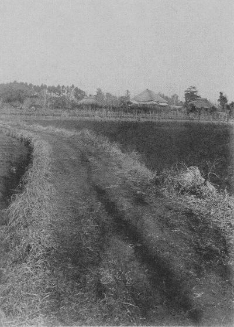
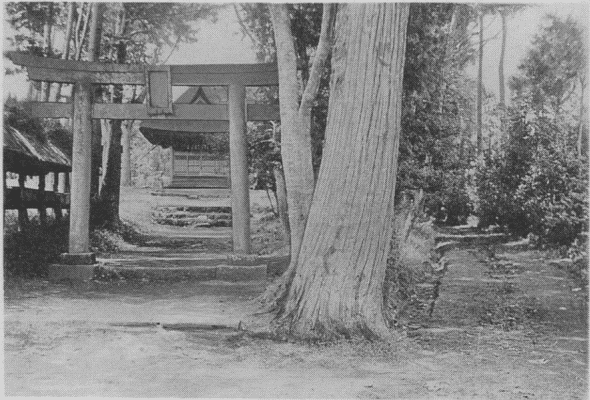
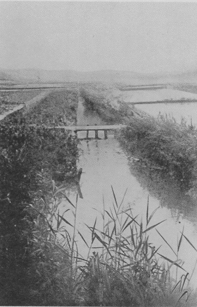
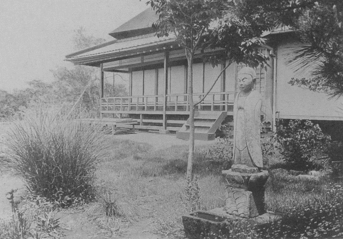
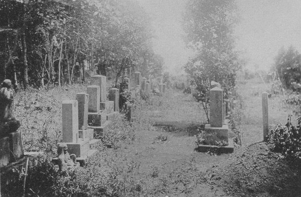
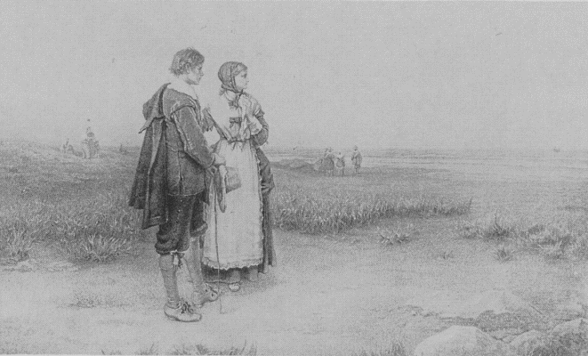
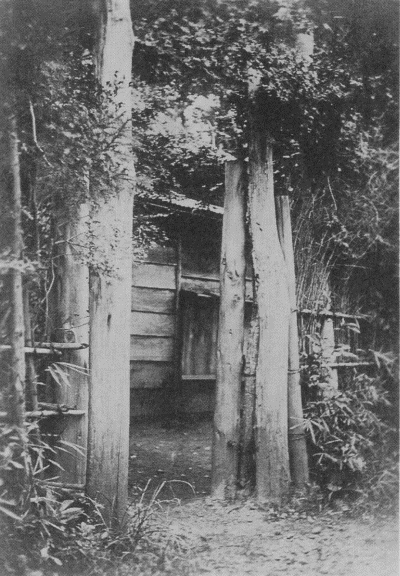
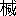
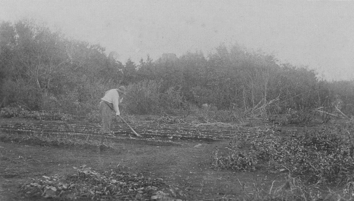

恒春園南面
［＃改丁］
儂の
村住居も、満六年になった。
暦の
齢は四十五、鏡を見ると
頭髪や満面の熊毛に白いのがふえたには
今更の様に驚く。
元来田舎者のぼんやり者だが、近来ます／＼
杢兵衛太五作式になったことを自覚する。先日上野を歩いて居たら、
車夫が御案内しましょうか、と来た。銀座日本橋あたりで買物すると、田舎者扱いされて毎々腹を立てる。
後でぺろり舌を出されるとは知りながら、上等のを
否極上等のをと気前を見せて言い
値でさっさと買って来る様な子供らしいこともついしたくなる。然し
店硝子にうつる
乃公の
風采を見てあれば、
例令其れが
背広や紋付羽織袴であろうとも、着こなしの不意気さ、薄ぎたない
髯顔の間抜け加減、如何に
贔屓眼に見ても――いや此では田舎者扱いさるゝが当然だと、
苦笑いして帰って来る始末。此程村の巡査が遊びに来た。日清戦争の当時、出征軍人が羨ましくて、十五歳を満二十歳と偽り軍夫になって
澎湖島に渡った経歴もある男で、今は村の巡査をして、和歌など詠み、新年勅題の詠進などして居る。其巡査の話に、
正服帯剣で東京を歩いて居ると、あれは田舎のお
廻りだと
辻待の車夫がぬかす。如何して
分かるかときいたら、
眼で知れますと云ったと云って、大笑した。
成程眼で分かる――さもありそうなことだ。
鵜の目、鷹の目、
掏摸の眼、新聞記者の眼、
其様な眼から見たら、
鈍如した田舎者の眼は、
嘸馬鹿らしく見えることであろう。実際馬鹿でなければ田舎住居は
出来ぬ。人にすれずに悧巧になる道はないから。
東京に出ては
儂も立派な田舎者だが、田舎ではこれでもまだ中々ハイカラだ。儂の生活状態も大分変った。君が初めて来た頃の
彼あばら家とは
雲泥の相違だ。尤も何方が雲か
泥かは、其れは見る人の心次第だが、兎に角著しく変った。引越した年の秋、お
麁末ながら
浴室や女中部屋を建増した。其れから中一年置いて、明治四十二年の春、八畳六畳のはなれの書院を建てた。明治四十三年の夏には、八畳四畳板の間つきの客室兼物置を、ズッと裏の方に建てた。明治四十四年の春には、二十五坪の書院を西の方に建てた。而して十一間と二間半の一間幅の廊下を以て、母屋と旧書院と新書院の間を連ねた。何れも茅葺、古い所で九十何年新しいのでも三十年からになる古家を買ったのだが、外見は随分立派で、村の者は
粕谷御殿なぞ笑って居る。二三年ぶりに来て見た男が、
悉皆別荘式になったと云うた。御本邸無しの別荘だが、実際別荘式になった。畑も増して、今は宅地耕地で二千
余坪になった。以前は一切無門関、
勝手に屋敷の中を通る小学校通いの子供の草履ばた／＼で驚いて朝寝の
眠をさましたもので、
乞食物貰い話客千客万来であったが、今は屋敷中ぐるりと竹の四ツ
目籬や、
、萩ドウダンの
生牆をめぐらし、外から手をさし入れて明けられる
様な形ばかりのものだが、
大小六つの門や枝折戸が出入口を
固めて居る。
己と籠を作って籠の中の鳥になって居るのが
可笑しくもある。但花や果物を無暗に
荒されたり、無遠慮なお客様に
擾わさるゝよりまだ可と思うて居る。個人でも国民でも斯様な所から「隔て」と云うものが出来、進んでは
喧嘩、訴訟、戦争なぞが生れるのであろう。
「後生願わん者は
糂甕一つも持つまじきもの」とは実際だ。物の所有は隔ての
原で、物の
執着は争の
根である。儂も何時しか必要と云う名の下に門やら牆やら作って了うた。まさか忍び返えしのソギ竹を黒板塀の上に列べたり、
煉瓦塀上に硝子の破片を剣の山と
植えたりはせぬつもりだが、何、
程度の問題だ、これで金でも出来たら案外
其様な事もやるであろうよ。
畑の物は可なり出来る。昨年は
陸穂の餅米が一俵程出来たので、自家で餅を舂いた。今年は大麦三俵
籾で六円なにがしに売った。田園生活をはじめてこゝに六年、自家の作物が金になったのは、此れが皮切だ。去年は月に十日
宛きまった作男を入れたが、美的百姓と
真物の百姓とは
反りが合わぬ所から半歳足らずで
解雇してしまい、時々近所の人を傭ったり、毎日仕事に来る片眼のおかみを使って居る。自分も時々やる。少し労働をやめて居ると、手が直ぐ
綺麗になり、稀に肥桶を
担ぐと直ぐ肩が
腫れる。元来物事に極不熱心な男だが、其れでも年の功だね、畑仕事も少しは上手になった。
最早地味に合わぬ
球葱を無理に作ろうともせぬ。最早胡麻を逆につるして近所の笑草にもならぬ。甘藷苗の
竪植もせぬ。
心をとめるものは心をとめ、肥料のやり時、中耕の
加減も、兎やら角やら先生なしにやって行ける。毎年
儂は
蔬菜花卉の
種を
何円と云う程買う。無論其れ程の
地積がある
訳でも必要がある訳でも無いが、種苗店の目録を見て居るとつい買いたくなって買うのだ。
蒔いてしまうのも中々骨だから、
育ったら事だが、幸か不幸か種の大部分は地に
入って消えて了う。
其度毎に種苗店の不徳義、種子の
劣悪を
罵るが、春秋の季節になると、また目録をくって注文をはじめる。馬鹿な事さ。然し儂等は趣味空想に生きて、必しも
結果には活きぬ。馬鹿な事をしなくなったら、儂が最後だ。
時の
経つは速いものだ。
越した年の秋実を蒔いた茶が、去年あたりから
摘め、今年は新茶が可なり出来た。砂利を敷いたり剪枝をしたり苦心の結果、水蜜桃も去年あたりから大分喰える。
苺は毎年移してばかり居たが、今年は毎日
喫飽をした上に、苺のシイロップが二
合瓶二十余出来た。生籬の萩が葉を見て花を見てあとは
苅られて萩籬の料になったり、林の散歩にぬいて来て
捨植にして置いた芽生の山椒が一年中の
薬味になったり、構わずに置く孟宗竹の
筍が汁の実になったり、杉籬の
剪みすてが
焚附になり、落葉の掃き寄せが腐って肥料になるも、皆時の
賜物である。追々と植込んだ樹木が根づいて独立が出来る様になり、支えの丸太が取り去られる。移転の秋坊主になる程苅り込んで非常の労力を以て隣村から
移植し、中一年を置いてまた庭の
一隅へ
移し植えた二尺八寸
廻りの
全手葉椎が、此頃では梢の枝葉も
蕃茂して、何時花が咲いたか、つい此程
内の女児が其下で大きな椎の実を一つ見つけた。と見て、妻が更に五六
粒拾った。「椎が
実った！ 椎が実った！」
驩喜の声が家に
盈ちた。田舎住居は斯様な事が
大した喜の原になる。一日一日の眼には見えぬが、黙って働く自然の力をしみ／″＼感謝せずには居られぬ。儂が植えた樹木は、
大抵根づいた。儂自身も少しは村に根を
下したかと思う。
少しはと儂は云うた。実は六年村に住んでもまだ村の者になり切れぬのである。固有の背水癖で、最初
戸籍までひいて村の者になったが、過る六年の成績を
省ると、儂自身もあまり良い村民であったと断言は出来ない。吉凶の場合、兵隊送迎は別として、村の集会なぞにも近来滅多に出ぬ。村のポリチックスには無論超然主義を執る。燈台下暗くして、東京近くの此村では、青年会が今年はじめて出来、村の図書館は一昨年やっと出来た。儂は唯傍観して居る。郡教育会、愛国婦人会、其他一切の公的性質を帯びた団体加入の勧誘は絶対的に拒絶する。村の小さな耶蘇教会にすらも
殆ど
往かぬ。昨年まで年に一回の月番役を勤めたが、月番の提灯を
預ったきりで、一切の事務は
相番の肩に投げかけるので、皆迷惑したと見えて、今年から月番を諭旨免職になった。儂自身の眼から見る儂は、無月給の別荘番、墓掃除せぬ墓守、買って売る事をせぬ植木屋の亭主、位なもので、村の眼からは、儂は到底一個の遊び人である。遊人の村に対する奉公は、盆正月に近所の若い者や女子供の相手になって遊ぶ位が落である。儂は最初一の
非望を懐いて居た。其は吾家の
燈火が見る人の喜悦になれかしと
謂うのであった。多少気張っても見たが、其内くたびれ、
気恥かしくなって、
儂は
一切説法をよした。而して吾儘一ぱいの生活をして居る。儂は告白する、儂は村の人にはなり切れぬ。此は儂の性分である。東京に居ても、田舎に居ても、何処までも
旅の人、宿れる人、見物人なのである。然しながら生年百に満たぬ
人の
生の六年は、決して短い月日では無い。儂は其六年を已に村に過して居る。儂が村の人になり切れぬのは事実である。然し儂が少しも村を
愛しないと云うのは
嘘である。ちと長い旅行でもして帰って来る
姿を見かけた近所の子供に「
何処へ往ったンだよゥ」と云われると、
油然とした嬉しさが心の
底からこみあげて来る。
東京が
大分攻め寄せて来た。東京を西に
距る唯三里、東京に依って生活する村だ。二百万の人の海にさす
潮ひく
汐の余波が村に響いて来るのは自然である。東京で瓦斯を使う
様になって、薪の需用が減った結果か、村の雑木山が大分
拓かれて
麦畑になった。道側の並木の
櫟楢なぞ伐られ掘られて、短冊形の
荒畑が続々出来る。武蔵野の特色なる雑木山を
無惨
拓かるゝのは、儂にとっては肉を
削がるゝ
思だが、生活がさすわざだ、
詮方は無い。筍が儲かるので、麦畑を潰して
孟宗藪にしたり、
養蚕の割が好いと云って桑畑が
殖えたり、大麦小麦より直接東京向きの甘藍白菜や園芸物に力を入れる様になったり、要するに
曩時の純農村は追々都会附属の菜園になりつゝある。京王電鉄が出来るので其等を気構え地価も騰貴した。儂が最初買うた地所は坪四十銭位であったが、此頃は壱円以上二円も其上もする様になった。地所買いも追々入り込む。儂自身東京から溢れ者の先鋒でありながら、滅多な東京者に入り
込まれてはあまり嬉しい気もちもせぬ。洋服、白足袋の男なぞ工場の地所見に来たりするのを
傍見する毎に、儂は眉を
顰めて居る。要するに東京が日々攻め寄せる。以前聞かなかった
工場の汽笛なぞが、
近来明け方の夢を驚かす様になった。村人も
寝ては居られぬ。十年前の此村を識って居る人は、皆が稼ぎ様の
猛烈になったに驚いて居る。
政党騒ぎと賭博は昔から三多摩の
名物であった。此頃では、選挙争に
人死はなくなった。儂が越して来た
当座は、まだ田圃向うの雑木山に
夜灯をとぼして賭博をやったりして居た。村の旧家の某が賭博に
負けて所有地一切勧業銀行の
抵当に入れたの、小農の某々が
宅地までなくしたの、と云う噂をよく聞いた。然し此の
数年来賭博風は吹き過ぎて、遊人と云う者も東京に往ったり、
比較的堅気になったりして、今は村民一同
真面目に稼いで居る。其筋の手入れが届くせいもあるが、第一
遊んで居られぬ程生活難が攻め寄せたのである。
儂の家族は、
主人夫婦の外明治四十一年の秋以来兄の末女をもらって居る。名を
鶴と云う。鶴は千年、千歳村に鶴はふさわしい。三歳の年
貰って来た頃は、碌々口もきけぬ
脾弱い児であったが、此の頃は中々
強健になった。もらい
立は、儂が
結いつけ
負ぶで三軒茶屋まで二里てく／＼
楽に歩いたものだが、此の頃では身長三尺五寸、
体量四貫余。友達が無いが
淋しいとも云わず
育って居る。子供は全く田舎で育てることだ。
紙鳶すら自由に飛ばされず、
毬さえ思う様にはつけず、電車、自動車、馬車、人力車、自転車、
荷車、馬と
怪俄させ器械の引切りなしにやって来る東京の町内に
育つ子供は、本当に
惨なものだ。雨にぬれて
跣足で

けあるき、栗でも
甘藷でも長蕪でも生でがり／＼食って居る田舎の子供は、眼から鼻にぬける様な怜悧ではないかも知れぬが、子供らしい子供で、衛生法を蹂躙して居るか知らぬが、中々病気はしない。
儂等親子三人の外に、女中が一人。
阿爺が天理教に凝って資産を無くし、母に死別れて八歳から農家の奉公に出て、今年二十歳だが碌にイロハも読めぬ女だ。
東郷大将の名は知って居るが、天皇陛下を知らぬ。
明治天皇崩御の際、妻は天皇陛下の概念を其原始的頭脳に
打込むべく大骨折った。天皇陛下を知らぬ
程だから、無論
皇后陛下や皇太子殿下を知る筈が無い。明治天皇崩御の
合点が行くと、
曰くだ、ムスコさんでもありますかい、おかみさんが
嘸困るでしょうねェ。御維新後四十五年、
帝都を
離るゝ唯三里、
加之二十歳の若い女に、まだ斯様な
葛天氏無懐氏の民が居ると思えば、イワン王国の創立者も中々心強い訳だ。斯無懐氏の女の
外に、テリアル種の小さな
黒牝犬が一匹。名をピンと云う。鶴子より
一月前にもらって、
最早五歳、
顎のあたりの毛が白くなって、
大分お
婆さんになった。毎年二度三疋四疋
宛子を生む。ピンの
子孫が近村に蕃殖した。近頃畜犬税がやかましいので、子供を縁づけるに骨が折れる。徒歩でも車でも出さえすると屹度
跟いて来るが、此頃では東京往復はお婆さん
骨らしい。一度車夫が戻り車にのせてやったら、其後は車に跟いて来て疲れると直ぐ車上の儂等を横眼に見上げる。今一疋デカと云うポインタァ
種の
牡犬が居る。甲州街道の浮浪犬で、ポチと云ったそうだが、ズウ体がデカイから儂がデカと名づけた。デカダンを
意味したのでは無い。
獰猛な相貌をした
虎毛の犬で、三四疋位の
聯合軍は造作もなく
噛み伏せる
猛犬だったので、競争者を追払ってずる／＼にピンの押入
聟となった
訳である。儂も久しく
考えた末、届と税を出し、
天下晴れて彼を
郎等にした。郎等先生此頃では非常に柔和になった。第一眼光が違う。尤も
悪い
癖があって、今でも時々子供を
追かける。噛みはせぬが、
威嚇する。彼が
流浪時代に子供に
苛められた
復讎心が消えぬのである。子供と云えば、日本の子供はなぜ犬猫を
可愛がらぬのであろう。直ぐ
畜生と云っては打ったり石を投げたりする。矢張大人の真似を子供はするのであろう。禽獣を愛せぬ国民は、大国民の
資格が無い。犬猫をいじめる子供は、やがて
朝鮮人台湾人をいじめる大人である。ある犬通の話に、
野犬の牙は
飼犬のそれより長くて鋭く、且
外方へ
向くものだそうだ。
生物には
飢程恐ろしいものは無い。食にはなれた野犬が猛犬になり狂犬になるのは唯一歩である。
野武士のポチは郎等のデカとなって、犬相が大に良くなった。其かわり以前の強味はなくなった。富国強兵兎角両立し難いものとあって、デカが柔和に即ち
弱くなったのも

れぬ処であろう。以上二頭の犬の外、トラと云う
雄猫が居る。犬好きの家は、猫まで犬化して、トラは
畳の上より土に
寝るが好きで、儂等が出あるくと
兎の
如くピョン／＼はねて
跟いて来る。米の
飯より
麦の飯、
魚よりも揚豆腐が好きで、主人を見真似たか梨や
甜瓜の喰い残りをがり／＼
噛ったり、焼いた
玉蜀黍を片手で押えてわんぐり
噛みつきあの鋭い牙で粒を
食いかいてはぼり／＼噛ったり、まさに
田園の猫である。来客があって、
珍らしく東京から魚を買ったら、トラ先生
早速口中に骨を立て、両眼に涙、口もとからは
涎をたらし、人
騒がせをしてよう／＼命だけは取りとめた。犬猫の外に鶏が十羽。蜜蜂は二度
飼って二度逃げられ、今は空箱だけ残って居る。
天井の鼠、物置の
青大将、其他無断同居のものも多いが、
此等は
眷族の外である。（著者追記。犬のデカは大正二年の二月自動車に
轢かれて死に、猫のトラは正月行衛不明になり、ピンは五月肥溜に落ちて死んだ。）
猫の話で思い出したが、
儂は明治四十二年の春、
塩釜の宿で
牡蠣を食った時から
菜食を
廃した。明治三十八年十二月から菜食をはじめて、明治三十九、四十、四十一、と満三年の
精進、云わば昔の我に対する三年の
喪をやったようなものだ。以前はダシにも
昆布を使った。今は魚鳥獣肉何でも
食う。猪肉や鯛は尤も好物だ。然し
葷酒（酒はおまけ）
山門に入るを許したばかりで、平素の
食料は野菜、干物、豆腐位、来客か外出の場合でなければ滅多に
肉食はせぬから、折角の
還俗も頗る
甲斐がない訳である。甲州街道に
肴屋はあるが、無論塩物干物ばかりで、
都会に溢るゝ

、
秋刀魚の
廻って来る時節でもなければ、肴屋の触れ声を聞く事は、殆ど無い。ある時、東京式に若者が二人
威勢よく盤台を
担いで来たので、珍らしい事だと出て見ると、大きな盤台の中は
鉛節が五六本に
鮪の切身が少々、それから此はと驚かされたのは
血だらけの
鯊の頭だ。鯊の頭にはギョッとした。
蒲鉾屋からでも買い出して来たのか。誰が買うのか。ダシにするのか。
煮て食うのか。儂は泣きたくなった。一生の思出に、一度は
近郷近在の衆を呼んで、ピン／＼した鯛の刺身煮附に、
雪の
様な米の
飯で腹が割ける程馳走をして見たいものだ。実際此処では
魚と云えば已に馳走で、鮮否は大した問題では無い。近所の子供などが時々真赤な顔をして居る。酒を飲まされたのでは無い。ふるい
鯖や鮪に
酔うたのである。此頃は、儂の
健啖も大に減った。而して平素菜食の結果、
稀に東京で西洋料理なぞ食っても、
甘いには甘いが、思う半分も
喰えぬ。最早儂の腸胃も
杢兵衛式になった。
書が
沢山ある
家、学を読む家、植木が好きな家、もとは近在の人達が斯く儂の家の事を云うた。儂を最初村に手引した石山君は、村塾を起して儂に英語を教えさせ自身漢学を教え、斯くて
千歳村を風靡する
心算であったらしい。然し其は石山君の失望であった。儂は何処までも自己本位の生活をした。ある学生は、あなたの
故郷は
此処では無い、大きな
樹木を植えたり家を建てたりはよくない、と切に忠告した。儂は顧みなかった。古い家ながら
小人数には広過ぎる
家を建て、盛に果樹観賞木を植え、
一切永住方針を執って吾生活の整頓に六年を費した。儂は儂の住居が水草を逐うて移る
天幕であらねばならぬことを知らぬでは無かった。また儂自身に漂泊の血をもって居ることを
否むことは出来なかった。従来儂の住居が五六年を一期とする経歴を記憶せぬでは無かった。だから儂は落ちつきたかった。
執着がして見たかった。自分の故郷を失ったからには、故郷を造って見たかった。而して六年間
孜々として吾巣を構えた。其結果は如何である？ 儂が越して程なく
要あって来訪した東京の一
紳士は、あまり見すぼらしい家の
容子に掩い難い侮蔑を見せたが、今年来て見た時は、眼色に
争われぬ尊敬を現わした。其れに引易え、或信心家は最初片っ方しか無い
車井の釣瓶なぞに随喜したが、此頃ではつい近所に来て泊っても
寄っても
往かなくなった。即
儂の田園生活は、或眼からは成功で、或眼からは堕落に終ったのである。
堕落か成功か、
其様な
屑々な評価は如何でも構わぬ。儂は告白する、儂は自然がヨリ好きだが、人間が
嫌ではない。儂はヨリ多く田舎を好むが、
都会を
捨てることは出来ぬ。儂は一切が好きである。儂が
住居は武蔵野の一隅にある。平生読んだり書いたりする廊下の窓からは
甲斐東部の山脈が正面に見える。三年前建てた書院からは、東京の煙が望まれる。一方に山の雪を望み、一方に都の煙を眺むる儂の住居は、即ち都の味と田舎の趣とを両手に握らんとする儂の
立場と慾望を示して居るとも云える。斯慾望が何処まで衝突なく
遂げ得らるゝかは、疑問である。此両趣味の結婚は何ものを
生み出したか、若くは生み出すか、其れも疑問である。唯儂一個人としては、六年の
田舎住居の後、いさゝか
獲たものは、土に対する執着の意味をやゝ
解しはじめた事である。儂は他郷から此村に入って、唯六年を過ごしたに過ぎないが、それでも
吾が
樹木を植え、吾が種を
蒔き、我が家を建て、吾が汗を
滴らし、
吾不浄を
培い、而してたま／＼
死んだ吾家の犬、猫、鶏、の
幾頭幾羽を葬った一町にも足らぬ土が、今は儂にとりて
着物の如く、
寧皮膚の如く、居れば安く、離るれば苦しく、之を失う場合を想像するに
堪えぬ程愛着を生じて来た。
己を以て人を推せば、先祖代々土の人たる農其人の土に対する感情も、其
一端を
覗うことが出来る。
斯執着の意味を多少とも解し得る
鍵を得たのは、田舎住居の
御蔭である。
然しながら
己が造った
型に
囚われ易いのが人の弱点である。執着は常に力であるが、執着は終に死である。宇宙は生きて居る。人間は生きて居る。蛇が
衣を脱ぐ如く、人は
昨日の己が死骸を後ざまに蹴て進まねばならぬ。個人も、国民も、永久に生くべく日々死して新に
生れねばならぬ。儂は少くも永住の形式を取って村の生活をはじめたが、果して
此処に永住し得るや否、疑問である。新宿八王子間の電車は、儂の
居村から
調布まで已に土工を終えて鉄線を敷きはじめた。トンカンと云う鉄の響が、近来警鐘の如く儂の耳に轟く。此は早晩儂を
此巣から追い立てる退去令の
先触ではあるまいか。愈電車でも開通した暁、儂は果して此処に
踏止まるか、寧東京に帰るか、或は更に文明を逃げて山に入るか。今日に於ては儂自ら解き得ぬ疑問である。
大正元年十二月二十九日
都も鄙も押なべて白妙を被る風雪の夕
武蔵野粕谷の里にて
徳冨健次郎
［＃改丁］
明治三十九年の十一月中旬、彼等夫妻は
住家を探すべく東京から
玉川の方へ出かけた。
彼は其年の春千八百何年前に死んだ
耶蘇の旧跡と、まだ生きて居たトルストイの
村居にぶらりと順礼に出かけて、其八月にぶらりと帰って来た。帰って何を
為るのか分からぬが、
兎に
角田舎住居をしようと思って帰って来た。先輩の牧師に其事を話したら、玉川の附近に教会の伝道地がある、
往ったら如何だと云う。伝道師は御免を蒙る、生活に行くのです、と云ったものゝ、玉川と云うに心動いて、兎に角見に行きましょうと答えた。そうか、では
何日に案内者をよこそう、と牧師は云うた。
約束の日になった。案内者は影も見せぬ。無論牧師からはがき一枚も来ぬ。彼は
舌鼓をうって、案内者なしに妻と
二人西を指して
迦南の地を探がす可く出かけた。牧師は玉川の近くで
千歳村だと
大束に教えてくれた。彼等も玉川の近辺で千歳村なら直ぐ分かるだろうと大束にきめ
込んで、例の如くぶらりと出かけた。
「家を有つなら
草葺の家、而して一反でも
可、己が自由になる土を有ちたい」
彼は久しく、斯様な事を思うて居た。
東京は火災予防として絶対的草葺を禁じてしまった。草葺に住むと云うは、取りも直さず田舎に住む
訳である。最近五年余彼が住んだ原宿の借家も、今住んで居る青山高樹町の借家も、東京では田舎近い家で、草花位つくる余地はあった。然し借家借地は気が置ける。彼も郷里の九州には父から譲られた少しばかりの
田畑を有って居たが、其土は銭に化けて
追々消えてしまい、日露戦争終る頃は、最早
一撮の土も彼の手には残って居なかった。そこで草葺の家と一反の土とは、新に之を求めねばならぬのであった。
彼が二歳から中二年を除いて十八の春まで育った家は、即ち草葺の家であった。明治の初年薩摩境に近い
肥後の南端の漁村から熊本の郊外に越した時、父が求めた古家で、あとでは
瓦葺の一棟が建増されたが、
母屋は久しく茅葺であった。其茅葺をつたう春雨の
雫の様に、
昔のなつかし味が彼の頭脳に
滲みて居たのである。彼の家は加藤家の浪人の血をひいた軽い士の
末で、代々田舎の惣庄屋をして居て、農には元来縁浅からぬ家である。彼も十四五の頃には、僕に連れられ小作米取立の検分に出かけ、小作の家で飯を強いられたり無理に濁酒の盃をさゝれたりして困った事もあった。彼の父は地方官吏をやめて後、県会議員や
郷先生をする傍、殖産興業の率先をすると謂って、
女を製糸場の模範工女にしたり、
自家でも
養蚕製糸をやったり、
桑苗販売などをやって、いつも損ばかりして居た。桑苗発送季の忙しくて人手が足りぬ時は、彼の兄なぞもマカウレーの英国史を
抛り出して、
柄の短い肥後鍬を不器用な手に握ったものだ。弟の彼も鎌を持たされたり、苗を運ばされたりしたが、吾儘で気薄な彼は直ぐ
嫌になり、
疳癪を起してやめてしまうが例であった。
父は津田仙さんの農業三事や農業雑誌の読者で、出京の節は学農社からユーカリ、アカシヤ、カタルパ、
神樹などの苗を仕入れて帰り、其他種々の水瓜、
甘蔗など標本的に
試作した。好事となると実行せずに居れぬ性分で、ある時
菓樹は幹に疵つけ徒長を防ぐと結果に
効があると云う事を何かの雑誌で読んで、屋敷中の梨の
若木の膚を一本残らず小刀でメチャ／＼に
縦疵をつけて歩いたこともあった。子の彼は父にも兄にも肖ぬなまけ者で、実学実業が大の嫌いで、父が丹精して置いた畑を荒らして
廻り、甘蔗と間違えて西洋
箒黍を
噛んで吐き出したり、未熟の水瓜を
窃と拳固で打破って川に投げ込んで
素知らぬ顔して居たり、
悪戯ばかりして居た。十六七の際には、学業不勉強の罰とあって一切書籍を取上げられ、爾後養蚕専門たるべしとの宣告の下に、近所の養蚕家に入門せしめられた。其家には十四になる娘があったので、当座は真面目に養蚕
稽古もしたが、一年足らずで嫌になってズル／＼にやめて了うた。但右の養蚕家入門中、桑を切るとて大きな桑切庖丁を左の
掌の
拇指の根にざっくり切り込んだ其
疵痕は、彼が養蚕家としての試みの
記念として今も三日月形に残って居る。
斯様な記憶から、趣味としての田園生活は、久しく彼を引きつけて居たのであった。
青山高樹町の
家をぶらりと出た彼等夫婦は、まだ工事中の玉川電鉄の線路を三軒茶屋まで歩いた。
唯有る
饂飩屋に腰かけて、昼飯がわりに饂飩を食った。松陰神社で
旧知の世田ヶ谷往還を世田ヶ谷
宿のはずれまで歩き、交番に聞いて、
地蔵尊の道しるべから北へ里道に切れ込んだ。余程往って
最早千歳村であろ、まだかまだかとしば／＼会う人毎に聞いたが、中々村へは来なかった。妻は靴に足をくわれて歩行に
難む。農家に入って草履を求めたが、無いと云う。
漸く小さな流れに出た。流れに
沿うて、腰硝子の障子など立てた
瀟洒とした
草葺の小家がある。ドウダンが美しく紅葉して居る。
此処は最早千歳村で、彼風流な草葺は村役場の書記をして居る人の家であった。彼様な家を、と彼等は思った。
会堂がありますか、耶蘇教信者がありますか、とある
家に寄ってきいたら、洗濯して居たかみさんが隣のかみさんと顔見合わして、「粕谷だね」と云った。粕谷さんの宅は
何方と云うたら、かみさんはふッと
噴き出して、「粕谷た人の名でねェだよ、粕谷って処だよ」と笑って、粕谷の石山と云う人が耶蘇教信者だと教えてくれた。
尋ね／＼て到頭会堂に来た。其は玉川の近くでも何でもなく、
見晴しも何も無い桑畑の中にある小さな板葺のそれでも田舎には珍らしい白壁の建物であった。病人か狂人かと思われる様な蒼い顔をした眼のぎょろりとした五十余の
婦が、案内を請う彼の声に出て来た。会堂を借りて住んで居る人なので、一切の世話をする石山氏の宅は直ぐ奥だと云う。彼等は導かれて石山氏の広庭に立った。トタン
葺の横長い家で、一方には瓦葺の
土蔵など見えた。
暫くすると、草鞋ばきの人が出て来た。私が
石山八百蔵と名のる。年の頃五十余、頭の毛は大分
禿げかゝり、
猩々の様な顔をして居る。あとで知ったが、石山氏は村の
博識口利で、今も村会議員をして居るが、政争の
劇しい三多摩の地だけに、昔は自由党員で壮士を連れて奔走し、白刃の間を
潜って来た男であった。
推参の客は自ら名のり、牧師の
紹介で会堂を見せてもらいに来たと云うた。石山氏は心を得ぬと云う顔をして、牧師から何の手紙も来ては居ぬ、福富儀一郎と云う人は新聞などで承知をして居る、また隣村の信者で角田勘五郎と云う者の姉が福富さんの家に奉公して居たこともあるが、尊名は初めてだと、
飛白の筒袖羽織、
禿びた
薩摩下駄、
鬚髯もじゃ／＼の彼が
風采と、
煤竹色の被布を着て痛そうに
靴を
穿いて居る白粉気も何もない女の
容子を、
胡散くさそうにじろじろ見て居た。然し田舎住居がしたいと云う彼の
述懐を聞いて、やゝ小首を
傾げてのち、それは会堂も無牧で居るから、都合によっては来てお
貰い申して、月々何程かずつ世話をして上げぬことはない、と云う
鷹揚な態度を石山氏はとった。兎に角会堂を見せてもろうた。
天井の低い
鮓詰にしても百人がせい／″＼位の見すぼらしい会堂で、裏に小さな
部屋があった。もと耶蘇教の一時繁昌した時、村を西へ
距る一里余、甲州街道の古い宿調布町に出来た会堂で、其後調布町の耶蘇教が衰え会堂が不用になったので、石山氏外数名の千歳村の信者がこゝにひいて来たが、近来久しく無牧で、今は小学教員母子が借りて住んで居ると云うことであった。
会堂を見て、渋茶の馳走になって、家の息子に道を教わって、甲州街道の方へ往った。
晩秋の日は
甲州の山に傾き、膚寒い
武蔵野の夕風がさ／＼尾花を
揺する野路を、夫婦は疲れ足曳きずって甲州街道を指して歩いた。
何処やらで
夕鴉が唖々と鳴き出した。
我儕の行末は如何なるのであろう？ 何処に落つく我儕の運命であろう？ 斯く思いつゝ、二人は黙って歩いた。
甲州街道に出た。あると云う馬車も来なかった。
唯有る店で、妻は
草履を買うて、靴をぬぎ、三里近い路をとぼ／＼歩いて、漸く電燈の明るい新宿へ来た。
［＃改ページ］
二月ばかり
経った。
明治四十年の一月である。ある日田舎の人が二人青山高樹町の
彼が
僑居に音ずれた。一人は石山氏、今一人は同教会執事角田新五郎氏であった。彼は牧師に
招聘されたのである。牧師は御免を蒙る、然し村住居はしたい。彼は斯く返事したのであった。
彼は千歳村にあまり気がなかった。近いと聞いた
玉川は一里の余もあると云う。風景も
平凡である。使って居た
女中は、
江州彦根在の者で、其
郷里地方には家屋敷を捨売りにして京、大阪や東京に出る者が多いので、

の様に
廉い地面家作の
売物があると云う。江州――
琵琶湖東の地、山美しく水清く、松茸が
沢山に出て、京奈良に近い――大に心動いて、早速郷里に
照会してもらったが、一向に返事が来ぬ。今時分田舎から都へ出る人はあろうとも、都から田舎にわざ／＼
引込む者があろうか、
戯談に違いない、とうっちゃって置いたのだと云う事が後で知れた。江州の返事が来ない内、千歳村の石山氏は
無闇と
乗地になって、
幸い三つばかり売地があると知らしてよこした。あまり進みもしなかったが、兎に角往って見た。
一は上祖師ヶ谷で
青山街道に近く、一は品川へ行く
灌漑用水の流れに
傍うて居た。
此等は彼が
懐よりも
些反別が広過ぎた。最後に見たのが粕谷の
地所で、一反五畝余。小高く、一寸見晴らしがよかった。風に吹飛ばされぬようはりがねで
白樫の木にしばりつけた土間共十五坪の汚ない草葺の家が附いて居る。家の前は右の樫の一列から直ぐ
麦畑になって、家の後は小杉林から三角形の
櫟林になって居る。地面は石山氏外一人の所有で、家は
隣字の大工の有であった。其大工の
妾とやらが子供と棲んで居た。此れで我慢するかな、彼は斯く思いつゝ帰った。
石山氏はます／＼乗地になって頻に所決を促す。江州からはたよりが無い。財布は日に／＼軽くなる。彼は到頭粕谷の地所にきめて、手金を渡した。
手金を渡すと、今度は彼があせり出した。
万障一排して二月二十七日を
都落の日と定め、其前日二十六日に、彼等夫婦は若い娘を二人連れ、
草箒と
雑巾とバケツを持って、東京から
掃除に往った。案外道が遠かったので、娘等は大分弱った。
雲雀の歌が
纔に一同の心を慰めた。
来て見ると、前日中に明け渡す約束なのに、
先住の人々はまだ
仕舞いかねて、最後の荷車に物を積んで居た。以前石山君の
壮士をしたと云う
家主の大工とも
挨拶を交換した。其妾と云う
髪を
乱した女は、都の女等を
憎くさげに
睨んで居た。彼等は先住の出で去るを待って、畑の枯草の上に
憩うた。小さな墓場一つ隔てた
東隣の石山氏の親類だと云う
家のおかみが、
莚を二枚貸してくれ、土瓶の茶や漬物の
丼を持て来てくれたので、彼等は莚の上に
座って、持参の握飯を食うた。
十五六の唖に荷車を
挽かして、出る人々はよう／＼出て往った。待ちかねた彼等は立上って掃除に向った。引越しあとの
空家は総じて立派なものでは無いが、彼等はわが
有になった
家のあまりの不潔に胸をついた。腐れかけた
麦藁屋根、ぼろ／＼
崩れ落ちる荒壁、小供の
尿の
浸みた
古畳が六枚、茶色に
煤けた破れ唐紙が二枚、
蠅の
卵のへばりついた六畳一間の天井と、土間の崩れた一つ
竈と、
糞壺の糞と、おはぐろ色した
溷の
汚水と、其外あらゆる
塵芥を残して、先住は出て往った。掃除の手をつけようもない。女連は長い顔をして居る。彼は
憤然として竹箒押取り、下駄ばきのまゝ
床の上に飛び上り、ヤケに塵の雲を立てはじめた。女連も是非なく
手拭かぶって、
襷をかけた。
二月の日は短い。掃除半途に日が入りかけた。あとは石山氏に頼んで、彼等は
匆惶と帰途に就いた。
今日も甲州街道に馬車が無く、重たい足を曳きずり／＼
漸く新宿に
辿り着いた時は、女連はへと／＼になって居た。
明くれば明治四十年二月二十七日。ソヨとの風も無い二月には珍らしい
美日であった。
村から来てもらった三台の荷馬車と、厚意で来てくれた耶蘇教信者仲間の石山氏、角田新五郎氏、
臼田氏、角田勘五郎氏の息子、以上四台の荷車に荷物をのせて、
午食過ぎに送り出した。荷物の大部分は書物と植木であった。彼は
園芸が好きで、原宿五年の生活に、
借家に住みながら鉢物も地植のものも可なり有って居た。大部分は残して置いたが、其れでも原宿から高樹町へ持て来たものは少くはなかった。其等は皆持て行くことにした。荷車の諸君が斯様なものを、と笑った栗、
株立の
榛の木まで、駄々を
捏ねて車に積んでもろうた。
宰領には、原宿住居の間よく仕事に来た
善良な小男の三吉と云うのを頼んだ。
加勢に来た青年と、昨日粕谷に掃除に往った娘とは、おの／＼告別して出て往った。暫く逗留して居た先の女中も、大きな風呂敷包を負って出て往った。隣に住む家主は、病院で重態であった。其
細君は自宅から病院へ往ったり来たりして居た。甚だ心ないわざながら、彼等は細君に
別を告げねばならなかった。別を告げて、門を出て見ると、門には早や
貸家札が張られてあった。
彼等夫妻は、当分加勢に来てくれると云う女中を連れ、手々に
手廻りのものや、ランプを持って、新宿まで電車、それから初めて調布行きの馬車に乗って、甲州街道を一時間余ガタくり、
馭者に教えてもらって、
上高井戸の
山谷で下りた。
粕谷田圃に出る頃、大きな
夕日が富士の方に入りかゝって、武蔵野一円
金色の光明を
浴びた。都落ちの一行三人は、長い
影を
曳いて新しい
住家の方へ田圃を歩いた。遙向うの青山街道に
車の
軋る
響がするのを見れば、先発の荷馬車が今まさに来つゝあるのであった。人と荷物は
両花道から草葺の
孤屋に乗り込んだ。
昨日掃除しかけて帰った家には、石山氏に頼んで置いた
縁無しの新畳が、六畳二室に敷かれて、流石に人間の住居らしくなって居た。昨日頼んで置いたので、先家主の
大工が、六畳裏の蛇でものたくりそうな
屋根裏を隠す可く粗末な天井を張って居た。
日の暮れ／″＼に
手車の諸君も着いた。
道具の大部分は土間に、残りは外に
積んで、荷車荷馬車の諸君は茶一杯飲んで帰って行った。兎も角もランプをつけて、東京から
櫃ごと
持参の冷飯で
夕餐を済まし、彼等夫妻は西の六畳に、女中と三吉は頭合せに次の六畳に寝た。
明治の初年、薩摩近い
故郷から熊本に引出で、一時
寄寓して居た親戚の家から父が買った大きな草葺のあばら家に移った時、八歳の兄は「破れ家でも
吾家が好い」と喜んで踊ったそうである。
生れて四十年、一
反五
畝の土と十五坪の草葺のあばら
家の
主になり得た彼は、正に
帝王の気もちで、
楽々と足踏み伸ばして寝たのであった。
［＃改ページ］
引越の翌日は、昨日の温和に引易えて、
早速田園生活の決心を試すかの様な烈しいからッ風であった。三吉は
植木を植えて了うて、「到底一年とは
辛抱なさるまい」と女中に
囁やいて帰って往った。昨日荷車を
挽いた諸君が、今日も来て井戸を
浚えてくれた。家主の彼は、半紙二帖、
貰物の干物少々持って、近所四五軒に挨拶に
廻った。其翌日は、石山氏の息子の案内で、一昨、昨両日骨折ってくれられた諸君の家を歴訪して、心ばかりの礼を述べた。臼田君の家は下祖師ヶ谷で、小学校に遠からず、
両角田君は大分離れて上祖師ヶ谷に二軒隣り合い、石山氏の家と彼自身の
家は粕谷にあった。何れも千歳村の内ながら、水の流るゝ
田圃に
下りたり、富士大山から
甲武連山を色々に見る原に上ったり、
霜解の里道を往っては江戸みちと彫った古い路しるべの石の立つ街道を横ぎり、
樫欅の村から麦畑、寺の門から村役場前と、廻れば一里もあるかと思われた。千歳村は以上三の
字の外、
船橋、
廻沢、
八幡山、
烏山、
給田の五字を有ち、最後の二つは甲州街道に
傍い、余は何れも街道の南北一里余の間にあり、粕谷が丁度中央で、一番戸数の多いが烏山二百余戸、一番少ないのが八幡山十九軒、次は粕谷の二十六軒、余は大抵五六十戸だと、
最早そろ／＼小学の高等科になる石山氏の
息子が教えてくれた。
期日は三月一日、一月おくれで年中行事をする此村では二月一日、
稲荷講の当日である。礼廻りから帰った彼は、村の仲間入すべく紋付羽織に
更めて、午後石山氏に
跟いて当日の会場たる下田氏の家に往った。
其家は彼の家から石山氏の宅に往く中途で、小高い
堤を流るゝ
品川堀と云う玉川浄水の小さな
分派に沿うて居た。村会議員も勤むる
家で、会場は
蚕室の階下であった。千歳村でも戸毎に
蚕は飼いながら、蚕室を有つ家は指を屈する程しか無い。板の間に薄べり
敷いて、大きな欅の
根株の火鉢が出て居る。十五六人も寄って居た。石山氏が、
「これは今度東京から
来されて仲間に入れておもらい申してァと申されます
何某さんで」
と
紹介する。其尾について、彼は
両手をついて
鄭重にお
辞儀をする。皆が
一人来ては挨拶する。石山氏の注意で、
樽代壱円仲間入のシルシまでに包んだので、皆がかわる／″＼みやげの
礼を云う。粕谷は二十六軒しかないから、東京から来て仲間に
入ってくれるのは喜ばしいと云う意を繰り返し諸君が述べる。会衆中で
唯一人チョン
髷に結った
腫れぼったい
瞼をした大きな
爺さんが「これははァ
御先生様」と挨拶した。
やがてニコ／＼笑って居る
恵比須顔の六十
許の爺さんが来た。石山氏は彼を爺さんに紹介して、組頭の浜田さんであると彼に告げた。彼は又もや両手をついて、何も分からぬ者ですからよろしく、と挨拶する。
二十五六人も寄った。これで人数は揃ったのである。
煙草の
烟。話声。彼真新しい欅の根株の火鉢を頻に撫でて色々に評価する
手合もある。米の値段の話から、六十近い
矮い真黒な
剽軽な爺さんが、若かった頃米が
廉かったことを話して、
「
俺と
卿は六合の米よ、早くイッショ（
一緒、一
升）になれば好い」
なんか歌ったもンだ、と
中音に
節をつけて歌い且話して居る。
腰の
腫物で座蒲団も無い板敷の長座は
苦痛の石山氏の注意で、
雑談会はやおら相談会に移った。慰兵会の
出金問題、此は隣字から
徴兵に出る時、此字から寸志を出す可きや否の問題である。馬鹿々々しいから出すまいと云う者もあったが、然し出して置かねば、此方から徴兵に出る時も貰う訳に行かぬから、結局出すと云う事に決する。
其れから
衛生委員の選挙、消防長の選挙がある。テーブルが持ち出される。
茶盆で集めた
投票を、
咽仏の大きいジャ／＼
声の仁左衛門さんと、むッつり顔の
敬吉さんと立って投票の結果を
披露する。彼が組頭の爺さんが、
忰は足がわるいから消防長はつとまらぬと辞退するのを、皆が寄ってたかって無理やりに
納得さす。
此れで事務はあらかた終った。これからは
肝心の
飲食となるのだが、
新村入の彼は引越早々まだ荷も解かぬ
始末なので、
一座に挨拶し、勝手元に働いて居る若い人
達に
遠ながら目礼して引揚げた。
＊
日ならずして彼は
原籍地肥後国葦北郡水俣から戸籍を東京府北多摩郡千歳村字粕谷に移した。子供の頃、自分は士族だと
威張って居た。戸籍を見れば、平民とある。彼は一時同姓の家に兵隊養子に往って居たので、何時の間にか平民となって居た。それを知らなかったのである。吾れから
捨てぬ
先きに、向うからさっさと片づけてもらうのは、
魯智深の
髯ではないが、
些惜しい気もちがせぬでもなかった。兎に角彼は最早
浪人では無い。無宿者でも無い。天下晴れて東京府北多摩郡千歳村字粕谷の忠良なる平民何某となったのである。
［＃改ページ］
玉川に遠いのが第一の失望で、
井の水の悪いのが差当っての苦痛であった。
井は
勝手口から唯六歩、ぼろ／＼に腐った
麦藁屋根が通路と井を
覆うて居る。
上窄りになった
桶の
井筒、鉄の
車は少し
欠けてよく綱がはずれ、
釣瓶は一方しか無いので、
釣瓶縄の一端を屋根の柱に
結わえてある。汲み上げた水が恐ろしく泥臭いのも尤、
錨を下ろして見たら、
渇水の折からでもあろうが、
水深が一尺とはなかった。
移転の翌日、信者仲間の人達が来て
井浚えをやってくれた。
鍋蓋、
古手拭、茶碗のかけ、色々の物が
揚がって来て、底は清潔になり、水量も多少は増したが、依然たる赤土水の
濁り水で、如何に無頓着の彼でもがぶ／＼飲む気になれなかった。近隣の水を
当座は
貰って使ったが、何れも
似寄った赤土水である。墓向うの家の水を貰いに往った女中が、井を
覗いたら
芥だらけ虫だらけでございます、と顔を
蹙めて帰って来た。其向う隣の家に往ったら、
其処の息子が、
此家の水はそれは好い水で、演習行軍に来る兵隊なぞもほめて飲む、と得意になって吹聴したが、其れは赤子の時から飲み馴れたせいで、大した水でもなかった。
使い水は兎に角、
飲料水だけは他に求めねばならぬ。
家から五丁程西に当って、品川堀と云う小さな
流水がある。
玉川上水の分派で、品川方面の
灌漑専用の水だが、附近の村人は朝々顔も洗えば、
襁褓の洗濯もする、肥桶も洗う。
何ァに玉川の水だ、朝早くさえ汲めば汚ない事があるものかと、男役に彼は
水汲む役を引受けた。起きぬけに、
手桶と大きなバケツとを両手に提げて、霜を

んで流れに行く。顔を洗う。腰膚ぬいで冷水
摩擦をやる。日露戦争の余炎がまださめぬ頃で、
面籠手かついで朝稽古から帰って来る村の若者が「冷たいでしょう」と挨拶することもあった。摩擦を終って、
膚を入れ、手桶とバケツとをずンぶり流れに浸して
満々と水を汲み上げると、ぐいと両手に提げて、最初一丁が程は一気に小走りに急いで行く。
耐えかねて下ろす。腰而下の着物はずぶ濡れになって、水は七
分に減って居る。其れから半丁に
一休、また半丁に
一憩、家を目がけて幾休みして、やっと勝手に持ち込む頃は、水は六分にも五分にも減って居る。両腕はまさに
脱ける様だ。斯くして持ち込まれた水は、
細君女中によって
金漿玉露と
惜み／＼使われる。
余り腕が痛いので、東京に出たついでに、渋谷の
道玄坂で
天秤棒を買って来た。
丁度股引尻からげ天秤棒を肩にした姿を山路愛山君に見られ、理想を実行すると
笑止な顔で笑われた。買って
戻った天秤棒で、早速翌朝から手桶とバケツとを振り分けに
担うて、
汐汲みならぬ髯男の水汲と出かけた。両手に提げるより
幾何か
優だが、使い馴れぬ肩と腰が思う様に言う事を聴いてくれぬ。天秤棒に肩を入れ、
曳やっと立てば、腰がフラ／＼する。膝はぎくりと
折れそうに、体は
顛倒りそうになる。

と足を踏みしめると、天秤棒が遠慮会釈もなく肩を圧しつけ、五尺何寸其まゝ大地に釘づけの姿だ。思い切って
蹌踉とよろけ出す。十五六歩よろけると、息が詰まる様で、たまりかねて
荷を
下ろす。尻餅
舂く様に、捨てる様に下ろす。下ろすのではない、荷が下りるのである。
撞と云うはずみに大切の水がぱっとこぼれる。下ろすのも厄介だが、また
担ぎ上げるのが骨だ。路の二丁も担いで来ると、雪を欺く霜の朝でも、汗が満身に流れる。鼻息は
暴風の如く、心臓は早鐘をたゝく様に、
脊髄から後頭部にかけ
強直症にかゝった様に一種異様の
熱気がさす。眼が真暗になる。頭がぐら／＼する。勝手もとに荷を下ろした
後は、失神した様に暫くは物も言われぬ。
早速右の肩が
瘤の様に
腫れ上がる。明くる日は左の肩を使う。左は
勝手が悪いが、痛い右よりまだ
優と、左を使う。直ぐ左の肩が腫れる。
両肩の
腫瘤で人間の駱駝が出来る。両方の肩に腫れられては、
明日は何で担ごうやら。夢の中にも肩が痛い。また水汲みかと思うと、
夜の
明くるのが恨めしい。妻が見かねて小さな肩蒲団を作ってくれた。
天秤棒の下にはさんで出かける。少しは楽だが、矢張苦しい。田園生活もこれではやりきれぬ。
全体誰に頼まれた訳でもなく、誰
誉めてくれる訳でもなく、何を苦しんで
斯様事をするのか、と内々
愚痴をこぼしつゝ、必要に迫られては
渋面作って朝々通う。
度重なれば、
次第に馴れて、肩の痛みも痛いながらに固まり、肩腰に多少
力が
出来、調子がとれてあまり水をこぼさぬ様になる。
今日は八分だ、今日は九分だ、と
成績の進むが一の
楽になる。
然しいつまで川水を汲んでばかりも居られぬので、一月ばかりして
大仕掛に
井浚をすることにした。
赤土からヘナ、ヘナから
砂利と、一
丈余も掘って、無色透明無臭而して無味の水が出た。奇麗に
浚ってしまって、井筒にもたれ、
井底深く二つ三つの涌き口から
潺々と
清水の湧く音を聴いた時、
最早水汲みの
難行苦行も
後になったことを、
嬉しくもまた残惜しくも思った。
［＃改ページ］
跟いて来た女中は、半月手伝って東京へ帰った。あとは水入らずの二人きりで、田園生活が真剣にはじまった。
意気地の無い亭主に
連添うお蔭で、彼の妻は女中無しの
貧乏世帯は可なり持馴れた。自然が好きな彼女には、田園生活必しも苦痛ばかりではなかった。唯潔癖な彼女は周囲の不潔に
一方ならず
悩まされた。一番近い
隣が墓地に
雑木林、生きた人間の隣は近い所で小一丁も離れて居る。引越早々所要あって尋ねて来た老年の
叔母は「若い女なぞ、一人で
留守は出来ない所ですねえ」と云った。それでも彼の妻は唯一人留守せねばならぬ場合もあった。墓地の向う隣に、今は潰れたが、其頃博徒の
巣があって、
破落戸漢が多く出入した。一夜家をあけてあくる夕帰った彼は、雨戸の外に「今晩は」と、ざれた男の声を聞いた。「今晩は」と彼が答えた。雨戸の外の男は昨日主が留守であったことを知って居たが、
先刻帰ったことを知らなかったのである。大にドキマギした
容子であったが、調子を更えて「
宮前のお広さん処へは
如何参るのです？」と胡魔化した。宮前のお広さん処は、始終諸君が入り
浸る其
賭博の巣なのである。主の彼は可笑しさを
堪え、素知らぬ
振して、宮前のお広さん処へは、其処の墓地に
傍うて、ずッと
往って、と
馬鹿叮嚀に教えてやった。「へえ、ありがとうございます」と云って、舌でも出したらしい気はいであった。
門戸あけっぱなしで、人近く自然に近く生活すると、色々の薄気味わるい経験もした。ある時彼が縁に
背向けて読書して居ると、
後に
撞と物が落ちた。彼はふりかえって大きな
青大将を見た。
葺きっぱなしの屋根裏の竹に
絡んで
衣を脱ぐ拍子に滑り落ちたのである。今一尺縁へ出て居たら、
正しく彼が頭上に蛇が
降るところであった。
人烟稀薄な
武蔵野は、桜が咲いてもまだ中々寒かった。
中塗もせぬ荒壁は
恣に崩れ落ち、床の下は吹き通し、
唐紙障子も足らぬがちの家の内は、火鉢の火位で寒さは防げなかった。農家の冬は大きな
炉が
命である。農家の屋内生活に属する一切の趣味は炉辺に群がると云っても好い。炉の
焚火、
自在の鍋は、彼が田園生活の
重なる
誘因であった。然し彼が吾有にした十五坪の此草舎には、小さな炉は一坪足らぬ板の間に切ってあったが、
周囲が
狭くて三人とは
座れなかった。
加之其処は破れ壁から北風が吹き通し、屋根が低い割に炉が高くて、
熾な焚火は火事を覚悟しなければならなかった。彼は
一月ばかりして面白くない
此型ばかりの炉を見捨てた。先家主の大工や他の人に頼み、代々木新町の
古道具屋で建具の古物を追々に二枚三枚と買ってもらい、
肥車の上荷にして持て来てもろうて、無理やりにはめた。次の六畳の天井は、
煤埃にまみれた
古葭簀で、
腐れ屋根から雨が
漏ると、黄ろい
雫がぼて／＼畳に落ちた。屋根屋に頼んで一度ならず繕うても、
盥やバケツ、古新聞、あらん限りの雨うけを畳の上に並べねばならぬ時があった。驚いたのは風である。三本の大きなはりがねで家を
樫の木にしばりつけてあるので、
風当りがひどかろうとは覚悟して居たが、実際吹かれて見て驚いた。西南は右の樫以外一本の木もない吹きはらしなので、南風西風は
用捨もなくウナリをうってぶつかる。はりがねに
縛られながら、小さな家はおびえる様に身震いする。富士川の瀬を越す舟底の様に
床が
跳る。それに樫の直ぐ下まで
一面の
麦畑である。武蔵野固有の
文言通り吹けば飛ぶ軽い土が、それ吹くと云えば直ぐ茶褐色の雲を立てゝ舞い込む。彼は前年
蘇士運河の船中で、船房の中まで舞い込む砂あらしに駭いたことがある。武蔵野の土あらしも、やわか
劣る可き。遠方から見れば火事の煙。寄って来る日は、眼鼻口はもとより、
押入、
箪笥の
抽斗の中まで
会釈もなく舞い込み、歩けば畳に白く足跡がつく。取りも直さず畑が
家内に引越すのである。
都をば塵の都と厭ひしに
田舎も土の田舎なりけり
あまり吹かれていさゝかヤケになった彼が名歌である。風が吹く、土が飛ぶ、霜が
冴える、水が荒い。四拍子
揃って、妻の手足は直ぐ
皸、霜やけ、あかぎれに飾られる。オリーヴ
油やリスリンを
塗った位では、血が止まらぬ。主人の
足裏も
鯊の
顋の様に
幾重も
襞をなして口をあいた。あまり
手荒い攻撃に、虎伏す野辺までもと
跟いて来た
糟糠の
御台所も、ぽろ／＼涙をこぼす日があった。以前の比較的ノンキな東京生活を知って居る娘などが
逗留に来て見ては、
零落と思ったのであろ、台所の
隅で茶碗を洗いかけてしく／＼泣いたものだ。
主人は新鋭の気に満ちて、零落どころか大得意であった。何よりも先ず
宮益の興農園から
柄の長い作切鍬、
手斧鍬、ホー、ハァト形のワーレンホー、レーキ、シャヴル、草苅鎌、
柴苅鎌など百姓の武器と、
園芸書類の
六韜三略と、種子と
苗とを仕入れた。一反五
畝の内、宅地、杉林、櫟林を除いて正味一反余の耕地には、大麦小麦が一ぱいで、
空地と云っては畑の中程に
瘠せこけた桑樹と枯れ
茅枯れ草の生えたわずか一畝に足らぬ位のものであった。彼は仕事の手はじめに早速其草を除き、重い作切鍬よりも軽いハイカラなワーレンホーで無造作に
畝を作って、原肥無し季節御構いなしの
人蔘二十日大根など
蒔くのを、近所の若い者は東京流の百姓は
彼様するのかと眼を
瞠って
眺めて居た。作ってある麦は、墓の向うの
所謂賭博の宿の麦であった。彼は其一部を買って、
邪魔になる部分はドシ／＼青麦をぬいてしまい、果物好きだけに何よりも先ず水蜜桃を植えた。通りかゝりの
百姓衆に、
棕櫚縄を
蠅頭に結ぶ事を教わって、畑中に
透籬を結い、風よけの
生籬にす可く之に
傍うて杉苗を植えた。無論必要もあったが、一は面白味から彼はあらゆる
雑役をした。あらゆる不便と労力とを歓迎した。家から十丁程はなれた
塚戸の米屋が新村入を聞きつけて、半紙一帖持って
御用聞きに来た時、彼はやっと逃げ出した東京が早や先き廻りして居たかとばかりウンザリして
甚不興気な顔をした。
手脚を少し動かすと
一廉勉強した様で、汚ないものでも扱うと一廉謙遜になった様で、無造作に応対をすると一廉人を愛するかの様で、酒こそ飲まね新生活の
一盃機嫌で彼はさま／″＼の可笑味を真顔でやってのけた。東京に居た頃から、園芸好きで、糞尿を扱う事は珍らしくもなかったが、村入しては好んで肥桶を
担いだ。最初はよくカラカフス無しの洋服を着て、
小豆革の帯をしめた。斯革の帯は、先年神田の十文字商会で六連発の短銃を買った時手に入れた弾帯で、短銃其ものは明治三十八年の十二月日露戦役果て、満洲軍総司令部凱旋の祝砲を聞きつゝ、今後は断じて護身の武器を帯びずと心に誓って、庭石にあてゝ鉄槌でさん／″＼に
打破してしまったが、帯だけは罪が無いとあって今に残って居るのであった。洋服にも履歴がある。そも此洋服は、明治三十六年日蔭町で七円で買った白っぽい綿セルの
背広で、北海道にも此れで行き、
富士で死にかけた時も此れで上り、パレスチナから
露西亜へも此れで往って、トルストイの家でも
持参の
袷と此洋服を
更代に着たものだ。
西伯利亜鉄道の汽車の中で、此一張羅の洋服を脱いだり着たりするたびに、
流石無頓着な同室の露西亜の大尉も技師も、眼を
円く鼻の下を長くして見て居た歴史つきの
代物である。此洋服を着て甲州街道で新に買った肥桶を
青竹で担いで帰って来ると、八幡様に寄合をして居た村の
衆がドッと笑った。
引越後間もなく雪の日に老年の叔母が東京から尋ねて来た。其帰りにあまり路が
悪いので、矢張此洋服で
甲州街道まで車の後押しをして行くと、小供が見つけてわい／＼
囃し立てた。よく笑わるゝ洋服である。此洋服で、
鍔広の麦藁帽をかぶって、塚戸に
酢を買いに往ったら、小学校
中の子供が門口に押し合うて不思議な現象を眺めて居た。彼の
好物の中に、
雪花菜汁がある。此洋服着て、
味噌漉持って、村の豆腐屋に五厘のおからを買いに往った時は、流石
剛の者も髯と
眼鏡と洋服に対していさゝかきまりが悪かった。引越し当座は、村の者も
東京人珍らしいので、妻なぞ出かけると、
女子供が、
「おっかあ、粕谷の仙ちゃんのお
妾の居た
家に越して来た東京のおかみさんが
通るから、出て来て見なァよゥ」
と、すばらしい長文句で
喚き立てゝ
大騒ぎしたものだ。
東京客が
沢山来た。新聞雑誌の記者がよく田園生活の
種取りに来た。
遠足半分の学生も来た。演説依頼の
紳士も来た。労働最中に洋服でも着た立派な東京紳士が来ると、彼は頗得意であった。村人の居合わす処で其紳士が丁寧に
挨拶でもすると、彼はます／＼得意であった。彼は好んで斯様な都の客にブッキラ棒の
剣突を
喰わした。
芝居気も
衒気も彼には沢山にあった。
華美の中に華美を得
為ぬ彼は渋い中に華美をやった。彼は自己の為に田園生活をやって居るのか、
抑もまた人の為に田園生活の芝居をやって居るのか、分からぬ日があった。
小さな草屋のぬれ
縁に立って、
田圃を見渡す時、彼は
本郷座の舞台から桟敷や土間を見渡す様な気がして、ふッと
噴き出す事さえもあった。彼は一時片時も吾を忘れ得なかった。趣味から道楽から百姓をする彼は、自己の天職が見ることと感ずる事と而して其れを報告するにあることを
須臾も忘れ得なかった。彼の家から西へ四里、
府中町へ買った地所と家作の
登記に往った帰途、同伴の石山氏が彼を
誘うて調布町のもと耶蘇教信者の家に寄った。爺さんが出て来て種々雑談の末、石山氏が彼を
紹介して今度村の者になったと云うたら、爺さん
熟々彼の顔を見て、田舎住居も好いが、さァ
如何して暮したもんかな、役場の書記と云ったって
滅多に
欠員があるじゃなし、要するに村の信者の厄介者だと云う様な事を云った。そこで彼はぐっと
癪に
障り、
斯う見えても憚りながら文字の社会では
些は名を知られた男だ、其様な
喰詰め者と同じには見て貰うまい、と腹の中では
大に
啖呵を切ったが、虫を殺して彼は
俯いて居た。家が日あたりが好いので、先の大工の妾時代から遊び場所にして居た習慣から、休日には若い者や女子供が珍らしがってよく遊びに来た。妻が女児の一人に
其家をきいたら、小さな彼女は胸を突出し
傲然として「
大尽さんの
家だよゥ」と答えた。要するに彼等は
辛うじて大工の妾のふる巣にもぐり込んだ東京の喰いつめ者と多くの人に思われて居た。実際彼等は
如何様に
威張っても、東京の喰詰者であった。
但字を書く事は重宝がられて、彼も妻もよく手紙の代筆をして、
沢庵の二三本、小松菜の一二
把礼にもらっては、真実感謝して受けたものだ。彼はしば／＼英語の教師たる可く要求された。妻は
裁縫の師匠をやれと勧められた。
自身上州の糸屋から此村の農家に
嫁いで来た
媼さんは、己が経験から一方ならず新参のデモ百姓に同情し、種子をくれたり、野菜をくれたり、桑があるから
養蚕をしろの、何の角のと親切に世話をやいた。
東京へはよく出た。最初一年が間は、
甲州街道に人力車があることすら知らなかった。調布新宿間の馬車に乗るすら
稀であった。彼等が
千歳村に越して間もなく、玉川電鉄は
渋谷から玉川まで開通したが、彼等は其れすら利用することが稀であった。田舎者は田舎者らしく
徒歩主義を執らねばならぬと考えた。彼も妻も低い下駄、
草鞋、ある時は
高足駄をはいて三里の路を往復した。しば／＼暁かけて握飯食い／＼出かけ、ブラ提灯を
便りに
夜晩く帰ったりした。
丸の
内三菱が原で、大きな煉瓦の建物を前に、
草原に足投げ出して、
悠々と握飯食った時、彼は実際好い気もちであった。彼は好んで田舎を東京にひけらかした。
何時も着のみ着のまゝで東京に出た。一貫目余の
筍を二本
担って往ったり、よく野茨の花や、白いエゴの花、野菊や
花薄を道々折っては、親類へのみやげにした。親類の女子供も、稀に遊びに来ては
甘藷を洗ったり、
外竈を
焚いて見たり、実地の
飯事を面白がったが、然し東京の
玄関から下駄ばきで尻からげ、やっとこさに荷物
脊負うて立出る田舎の叔父の姿を見送っては、
都の
子女として至って平民的な彼等も流石に
羞かしそうな
笑止な顔をした。
彼は田舎を都にひけらかすと共に、東京を田舎にひけらかす前に先ず田舎を田舎にひけらかした。彼は
一切の
角を隠して、周囲に同化す可く
努めた。彼はあらゆる村の
集会に出た。諸君が
廉酒を飲む時、彼は
肴の沢庵をつまんだ。葬式に出ては、「諸行無常」の旗持をした。
月番になっては、慰兵会費を一銭ずつ集めて廻って、自身役場に
持参した。村の耶蘇教会にも
日曜毎に参詣して、彼が村入して程なく
招かれて来た耳の遠い牧師の
説教を聴いた。荷車を借りて甲州街道に竹買いに行き、椎蕈ムロを
拵えると云っては屋根屋の手伝をしたりした。都の客に
剣突喫わすことはある共、田舎の客に
相手にならぬことはなかった。
誰にでもヒョコ／＼頭を下げ、いざとなれば
尻軽に走り廻った。牛にひかれた妻も、
外竈の前に炭俵を敷いて座りながら、かき集めた落葉で麦をたき／＼読書をしたりして「
大分話せる」と良人にほめられた。
玉川に遠いのが
毎も繰り返えされる失望であったが、井水が
清んだのでいさゝか慰めた。農家は毎夜風呂を立てる。彼等も成る可く立てた。最初寒い内は土間に立てた。水をかい込むのが面倒で、一週間も
沸かしては
入り沸かしては入りした。五日目位からは銭湯の仕舞湯以上に臭くなり、風呂の底がぬる／＼になった。それでも入らぬよりましと笑って、
我慢して入った。夏になってから外で立てた。
井も近くなったので、水は日毎に新にした。
青天井の下の風呂は全く
爽々して好い。「
行水の捨て処なし虫の声」虫の
音に囲まれて、月を見ながら悠々と風呂に
浸る時、彼等は田園生活を祝した。時々雨が
降り出すと、傘をさして入ったり、海水帽をかぶって入ったりした。
夏休に逗留に来て居る娘なども、キャッ／＼笑い
興じて
傘風呂に入った。
彼等が東京から越して来た時、麦はまだ六七寸、雲雀の歌も渋りがちで、赤裸な雑木林の
梢から
真白な富士を見て居た
武蔵野は、裸から若葉、若葉から青葉、青葉から五彩美しい秋の錦となり、移り変る自然の面影は、其日
其月
の趣を、初めて落着いて田舎に住む彼等の眼の前に
巻物の如くのべて見せた。彼等は
周囲の自然と人とに次第に親しみつゝ、一方には近づく冬を気構えて、取りあえず能うだけの防寒設備をはじめた。東と北に一間の
下屋をかけて、物置、女中部屋、薪小屋、食堂用の板敷とし、外に小さな
浴室を
建て、
井筒も栗の木の四角な
井桁に
更えることにした。畑も一
反四
畝程買いたした。観賞樹木も家不相応に植え込んだ。夏から秋の暮にかけて、
間歇的だが、
小婢も来た。十月の末、八十六の父と七十九の母とが不肖児の田舎住居を見に来た時、其前日夫妻で唖の少年を相手に立てた皮つきのまゝの栗の木の門柱は、心ばかりの歓迎門として父母を迎えた。而してタヽキは出来て居なかったが、丁度彼の誕生日の十月二十五日に浴室の
使用初をして、「日々新」と父が
其板壁に書いてくれた。
斯くて
千歳村の一年は、馬車馬の走る
様に、さっさと過ぎた。
今更の様だが、愉快は努力に、生命は希望にある。幸福は心の貧しきにある。感謝は物の乏しきにある。
例令此創業の一年が、稚気乃至多少の
衒気を帯びた浅瀬の波の深い意味もない
空躁ぎの一年であったとするも、彼はなお彼を此生活に導いた大能の手を感謝せずには居られぬ。
彼は生年四十にして初めて大地に脚を立てゝ人間の生活をなし始めたのである。
［＃改丁］
樫の実が一つぽとりと落ちた。其
幽な響が消えぬうちに、
突と入って縁先に立った者がある。
小鼻に
疵痕の白く光った三十未満の男。駒下駄に
縞物ずくめの
小商人と云う
服装。眉から眼にかけて、
夕立の空の様な
真闇い顔をして居る。
「
私は是非一つ聞いていたゞきたい事があるンで」
と座に着くなり息をはずませて云った。
「私は
妻に不幸な者でして……
斯申上げると
最早御分かりになりましょうが」
最初は途切れ／＼に、あとは次第に調子づいて、
盈ちた心を傾くる様に彼は熱心に話した。
彼は
埼玉の者、養子であった。
繭商法に失敗して、養家の身代を
殆んど
耗ってしまい、其恢復の為朝鮮から安東県に渡って、材木をやった。こゝで妻子を呼び迎えて、
暫暮らして居たが、思わしい事もないので、
大連に移った。日露戦争の翌年の秋である。大連に来て好い仕事もなく、
満人臭い裏町にころがって居る内に、子供を
亡くしてしまった。
「可愛いやつでした。
五歳でした、
女児でしたがね、
其れはよく私になずいて居ました。国に居た頃でも、私が外から帰って来る、母や
妻は無愛想でしても、
女児が
阿爺、阿爺と歓迎して、
帽子をしまったり、
其れはよくするのです。私も
全く女児を亡くしてがっかりしてしまいました。病気は急性肺炎でしたがね、医者に駈けつけ頼むと、来ると云いながら到頭来ません。其内息を引きとってしまったンです。医者は耶蘇教信者だそうですが、私が貧乏者なんだから、それで
其様な事をしたものでしょう。尤も医者もあとで吾子を亡くして、自分が
曾て斯々の事をした、それで
斯様な罰を受けたと
懺悔したそうですがね」
彼は暫く眼をつぶって居た。
「それから？」
「それから何時まで遊んでも居られませんから、夫婦である会社――左様、大連で一と云って二と下らぬ大きな会社と云えば大概御存じでしょう、其会社のまあ大将ですね、其大将の
家に奉公に住み込みました。
何しろ大連で一と云って二と下らぬ会社なものですから、生活なンかそりゃ
贅沢なもンです。召使も私共夫婦の外に五六人も居ました。奥さんは
好い方で、私共によく眼をかけてくれました。其内奥さんは何か用事で一寸内地へ帰られました。奥さんが内地へ帰られてから、二週間程経つと、
如何も妻の
容子が
変って来ました。――妻ですか、何、美人なもンですか、
些も好くはないのです」と彼は吐き出す様に云った。
「妻の容子がドウも
変になりました。私も気をつけて見て居ると、
腑に落ちぬ事がいくらもあるのです。主人が馬車で帰って来ます。二階で呼鈴が鳴ると、妻が白いエプロンをかけて、
麦酒を盆にのせて持て行くのです。私は階段下に居ます。妻が
傍眼に一寸私を見て、ずうと二階に上って行く。一時間も二時間も下りて来ぬことがあります。私は耳をすまして二階の物音を聞こうとしたり、
窃と主人の書斎の
扉の外に
抜足してじいッと聴いたり、
鍵の穴からも
覗いて見ました。が、厚い厚い
扉です。中は
寂然して何を
為て居るか分かりません。私は実に――」
彼は泣き声になった。一つに
寄った
真黒い彼の眉はビリ／＼動いた。
唇は
顫えた。
「妻の
眼色を読もうとしても、主人の
貌色に気をつけても、
唯疑念ばかりで証拠を押えることが出来ません。
斯様な処に奉公するじゃないと幾度思ったか知れません。また
其様妻に云ったことも一度や二度じゃありません。けれども妻は其度に腹を立てます。斯様にお世話になりながら奥様のお留守にお暇をいたゞくなんかわたしには出来ない、其様に出たければあなた一人で勝手に何処へでもお
出なさい、何処ぞへ仕事を探がしに
御出なさい、と
突慳貪に云うンです。
最早私も堪忍出来なくなりました」
「そこである日妻を無理に大連の郊外に連れ出しました。誰も居ない
川原です。種々と妻を詰問しましたが、
如何しても実を
吐きません。其れから懐中して居た短刀をぬいて、
白状するなら
宥す、
嘘を
吐くなら命を
貰うからそう思え、とかゝりますと、妻は血相を変えて、全く主人に無理されて一度済まぬ事をした、と云います。嘘を吐け、一度二度じゃあるまい、と畳みかけて
責めつけると、
到頭悉皆白状してしまいました」
彼はホウッと長い息をついた。
「それから私は主人に詰問の手紙を書きました。すると翌日主人が私を書斎に呼びまして『ドウも実に済まぬ事をした。主人の
俺が
斯う手をついてあやまるから、
何卒内済にしてくれ。其かわり君の将来は必俺が面倒を見る。
屹度成功さす。これで一先ず内地に帰ってくれ』と云って、二百円、左様、手の切れる
様な十円
札でした、二百円呉れました」
「君は其二百円を貰ったンだね、
何故其短刀で其男を刺殺さなかった？」
彼は
俯いた。
「それから？」
「それから
一旦内地に帰って、また大連に行きました。
最早主人は私達に取合いません。面会もしてくれません」
「
而して今は？」
「今は東京の
場末に、小さな小間物屋を出して居ます」
「
細君は？」
「妻は一緒に居るのです」
話は暫く絶えた。
「一緒に居ますが、面白くなくて／＼、
胸がむしゃくしゃして
仕様がないものですから、それで
今日は――」
＊
忽然と風の吹く様に来た男は、それっきり影も見せぬ。
［＃改ページ］
田の
畔に
赭い
百合めいた
萱草の花が咲く頃の事。ある日太田君がぶらりと東京から遊びに来た。暫く話して、
百草園にでも往って見ようか、と主人は云い出した。百草園は
府中から遠くないと聞いて居る。府中まではざッと四里、これは
熟路である。時計を見れば十一時、ちと
晩いかも知れぬが、然し夏の日永の折だ、行こう行こうと云って、早昼飯を食って出かけた。
大麦小麦はとくに
刈られて、畑も田も森も林も何処を見ても
緑ならぬ処もない。其緑の中を
一条白く西へ西へ山へ山へと
這って行く甲州街道を、二人は話しながらさッさと歩いた。太田君は
紺絣の単衣、足駄ばきで古い
洋傘を
手挾んで居る。主人の彼は例のカラカフス無しの古洋服の
一張羅に小豆革の帯して手拭を腰にぶらさげ、麦藁の海水帽をかぶり、
素足に
萎えくたれた茶の運動靴をはいて居る。二人はさッさと歩いた。太田君は以前社会主義者として、
主義宣伝の為、平民社の出版物を積んだ小車をひいて日本全国を漫遊しただけあって、中々健脚である。主人は歩くことは好きだが、足は云う甲斐もなく弱い。一日に十里も歩けば、二日目は骨である。二人は
大胯に歩いた。
蒸暑い日で、二人はしば／＼額の汗を
拭うた。
府中に来た。千年の
銀杏、
欅、杉など
欝々蒼々と茂った大国魂神社の横手から南に入って、青田の中の石ころ路を半里あまり行って、
玉川の
磧に出た。此辺を
分倍河原と云って、新田義貞大に
鎌倉北条勢を破った古戦場である。玉川の
渡を渡って、また十丁ばかり、
長堤を築いた様に川と共に南東走する低い連山の中の唯有る小山を
攀じて百草園に来た。もと松蓮寺の
寺跡で、今は横浜の某氏が
別墅になって居る。境内に草葺の茶屋があって、料理宿泊も出来る。茶屋からまた一段
堆丘を上って、大樹に日をよけた
恰好の
観望台がある。二人は其処の
素床に
薄縁を敷いてもらって、汗を拭き、茶をのみ、菓子を食いながら眼を
騁せた。
東京近在で展望無双と云わるゝも
譌ではなかった。
生憎野末の空少し
薄曇りして、筑波も野州上州の山も近い
秩父の山も東京の影も今日は見えぬが、つい足下を北西から南東へ青白く流るゝ玉川の流域から「夕立の空より広き」と云う武蔵野の平原をかけて自然を表わす濃淡の緑色と、
磧と人の手のあとの道路や家屋を示す
些の灰色とをもて
描かれた大きな
鳥瞰画は、手に取る様に二人が眼下に
展げられた。「
好い
喃」二人はかわる／″＼
景を
讃めた。
やゝ
眺めて居る内に、緑の武蔵野がすうと
翳った。時計をもたぬ二人は
最早暮るゝのかと思うた。蒸暑かった日は
何時しか忘られ、水気を含んだ風が冷々と顔を撫でて来た。
唯見ると、玉川の上流、青梅あたりの空に
洋墨色の雲がむら／＼と立って居る。
「夕立が来るかも知れん」
「
然、降るかも知れんですな」
二人は茶菓の
代を置いて、山を下りた。太田君はこれから日野の停車場に出て、汽車で帰京すると云う。日野までは一里強である。山の下で二人は手を分った。
「それじゃ」
「じゃ又」
人家の
珊瑚木の
生籬を廻って太田君の
後姿は消えた。残る一人は淋しい心になって、西北の空を横眼に見上げつゝ
渡の方へ歩いて行った。
川上の空に湧いて見えた黒雲は、
玉川の水を
趁うて南東に流れて来た。彼の一足毎に空はヨリ
黯くなった。彼は足を早めた。然し彼の足より雲の脚は尚早かった。
一の
宮の渡を渡って分倍河原に来た頃は、空は真黒になって、北の方で
殷々 々
々雷が攻太鼓をうち出した。農家はせっせとほし麦を取り入れて居る。府中の方から来る
肥料車も、あと押しをつけて、
曳々声して家の方へ急いで居る。
「太田君は
何の辺まで往ったろう？」
彼は
一瞬時斯く思うた。而して今にも泣き出しそうな
四囲の中を、黙って急いだ。
府中へ来ると、
煤色に暮れた。時間よりも寧空の黯い為に町は最早火を
点して居る。早や一粒二粒夕立の先駆が落ちて来た。
此処で夕立をやり過ごすかな、彼は一寸斯く思うたが、こゝに
何時霽れるとも知らぬ雨宿りをすべく彼の心はとく四里を隔つる
家に急いで居た。彼は一の店に寄って
糸経を買うて
被った。腰に下げた
手拭をとって、海水帽の上から
確と
頬被をした。而して最早大分
硬ばって来た
脛を
踏張って、急速に歩み出した。
府中の町を出はなれたかと思うと、
追かけて来た黒雲が彼の
頭上で
破裂した。
突然に天の
水槽の底がぬけたかとばかり、雨とは云わず
瀑布落しに
撞々と落ちて来た。紫色の光がぱッと射す。
直ぐ頭上で、火薬庫が爆発した様に
劇しい
雷が鳴った。彼はぐっと
息が
詰った。本能的に彼は
奔り出したが、所詮此雷雨の重囲を脱けることは出来ぬと観念して、歩調をゆるめた。此あたりは、宿と村との中間で、雷雨を避くべき一軒の人家もない。人通りも絶え果てた。彼は唯一人であった。雨は少しおだれるかと思うと、また思い出した様にざあ
ドウ
と
漲り落ちた。彼の頬被りした
海水帽から四方に小さな瀑が落ちた。
糸経を被った甲斐もなく総身濡れ
浸りポケットにも靴にも一ぱい水が
溜った。彼は水中を泳ぐ様に歩いた。紫色や桃色の
電がぱっ／＼と一しきり闇に降る
細引の
様な太い雨を見せて光った。ごろ／＼／＼
雷がやゝ遠のいたかと思うと、意地悪く舞い戻って、
夥しい
爆竹を一度に点火した様に、ぱち／＼／＼彼の頭上に
砕けた。
長大な革の鞭を彼を目がけて打下ろす音かとも受取られた。
其度に彼は思わず
立竦んだ。
如何しても落ちずには
済まぬ
雷の鳴り様である。何時落ちるかも知れぬと最初思うた彼は、
屹度落ちると
覚期せねばならなかった。屹度彼の頭上に落ちると覚期せねばならなかった。
此街道の此部分で、今動いて居る
生類は彼一人である。雷が
生き者に落ちるならば即ち彼の上に落ちなければならぬ。雷にうたれて
死ぬ運命の人間が、地の此部分にあるなら、其は取りも
直さず彼でなくてはならぬ。彼は是非なく死を覚期した。彼は生命が惜しくなった。今此処から三里
隔てゝ居る家の妻の顔が歴々と彼の眼に見えた。彼は電光の如く
自己の生涯を省みた。其れは
美しくない半生であった。妻に対する
負債の数々も、緋の
文字をもて書いた様に顕れた。彼は此まゝ雷にうたれて死んだあとに残る者の運命を考えた。「
一人はとられ一人は残さるべし」と云う聖書の恐ろしい宣告が彼の
頭に
閃いた。彼は反抗した。然し其反抗の無益なるを知った。雷はます／＼
劇しく鳴った。
最早今度は落ちた、と彼は
毎々観念した。而して彼の心は却て落ついた。彼の心は一種自己に対し、妻に対し、一切の
生類に対する
憐愍に満された。彼の
眼鏡は雨の故ならずして
曇った。斯くして夕暮の街道二里を、彼は雷と共に歩いた。
調布の町に入る頃は、雷は彼の頭上を過ぎて、東京の方に鳴った。雨も
小降りになり、やがて止んだ。暮れたと思うた日は、
生白い
夕明になった。調布の町では、道の
真中に五六人立って何かガヤ／＼云いながら
地を見て居る。雷が落ちたあとであろう、煙の様なものがまだ地から立って居る。戸口に立ったかみさんが、向うのかみさんを呼びかけ、
「洗濯物取りに
出りゃあの雷だね、わたしゃ
薪小屋に逃げ込んだきり、出よう／＼と思ったけンど、如何しても出られなかったゞよ」
と云って居る。
雷雨が過ぎて、最早
大丈夫と思うと、彼は急に劇しい疲労を覚えた。
濡れた洋服の冷たさと重たさが身にこたえる。足が痛む。腹はすく。彼は重たい／＼足を曳きずって、一足ずつ歩いた。滝坂近くなる頃は、永い／＼夏の日もとっぶり暮れて了うた。雨は止んだが、東北の空ではまだ時々ぱッ／＼と稲妻が火花を散らして居る。
家へ六七丁の
辺まで
辿り着くと、白いものが立って居る。それは
妻であった。家をあけ、犬を連れて、迎に出て居るのであった。あまり
晩いので屹度先刻の雷におうたれなすったと思いました、と云う。
＊
翌々日の新聞は、彼が其日行った
玉川の少し下流で、雷が小舟に落ち、
舳に居た男はうたれて即死、而して
艫に居た男は無事だった、と云う事を報じた。
「一人はとられ、一人は残さるべし」の句がまた彼の頭に浮んだ。
［＃改ページ］
村の人になった
年、玉川の
磧からぬいて来た一本の月見草が、今はぬいて捨てる程に
殖えた。此頃は十数株、
少くも七八十輪
宵毎に咲いて、
黄昏の庭に月が落ちたかと疑われる。
月見草は人好きのする花では無い。
殊に
日間は昨夜の花が
赭く
凋萎たれて、如何にも思切りわるくだらりと
幹に付いた
態は、見られたものではない。然し
墨染の夕に咲いて、
尼の様に冷たく澄んだ色の黄、
其香も幽に冷たくて、夏の夕にふさわしい。
花弁の一つずつほぐれてぱっと開く音も聴くに面白い。独物思うそゞろあるきの黄昏に、唯一つ黙って咲いて居る此花と、はからず眼を見合わす時、誰か
心跳らずに居られようぞ。月見草も亦心浅からぬ花である。
八九歳の弱い男の子が、ある城下の郊外の
家から、川添いの砂道を小一里もある小学校に通う。途中、一方が
古来の
死刑場、一方が墓地の其
中間を通らねばならぬ処があった。死刑場には、不用になった黒く塗った絞台や、今も乞食が住む非人小屋があって、夕方は覚束ない火が小屋にともれ、一方の
古墳新墳累々と立並ぶ墓場の砂地には、初夏の頃から沢山月見草が咲いた。
日間通る時、彼は
毎に赭くうな
垂れた
昨宵の花の死骸を見た。学校の帰りが晩くなると、彼は薄暗い墓場の石塔や土饅頭の蔭から黄色い眼をあいて彼を
覗く花を見た。
斯くて月見草は、彼にとって早く死の花であった。
其墓場の一端には、彼が
甥の墓もあった。甥と云っても一つ違い、五つ六つの
叔父甥は常に共に遊んだ。ある時叔父は筆の
軸を甥に与えて、犬の如く
啣えて振れと命じた。従順な子は二度三度云わるゝまゝに振った。叔父はまた振れと迫った。甥はもういやだと頭を
掉った。憎さげに甥を
睨んだ叔父は、其筆の軸で甥の
頬をぐっと突いた。甥は声を立てゝ泣いた。其甥は腹膜炎にかゝって、
明くる年の正月元日病院で死んだ。
屠蘇を祝うて居る席に死のたよりが
届いた。叔父の彼は異な気もちになった。彼ははじめてかすかな Remorse を感じた。
墓地は一方大川に
面し、一方は其大川の分流に接して居た。甥は其分流近く
葬られた。甥が死んで二三年、小学校に通う様になった叔父は、ある夏の日ざかりに、二三の友達と其小川に泳いだ。自分の甥の墓があると誇り
貌に告げて、彼は友達を引張って、甥の墓に
詣った。而して其小さな墓石の前に、真裸の友達とかわる／″＼
跪いて、
凋れた月見草の花を折って、墓前の砂に
插した。
彼は今月見草の花に幼き昔を夢の様に見て居る。
［＃改ページ］
人声が
賑やかなので、往って見ると、
久さんの家は
何時の間にか解き
崩されて、
煤けた
梁や
虫喰った柱、黒光りする大黒柱、屋根裏の
煤竹、それ／″＼
類を分って積まれてある。近所近在の人々が大勢寄ってたかって居る。
件の
古家を買った人が、崩す其まゝ古材木を競売するので、
其れを買いがてら見がてら寄り集うて居るのである。一方では、まだ崩し残りの壁など崩して居る。時々
壁土が
撞と落ちて、ぱっと汚ない煙をあげる。汚ないながらも可なり大きかった家が取り崩され、
庭木や境の樫木は売られて切られたり掘られたりして、其処らじゅう明るくガランとして居る。
家族はと見れば、三坪程の木小屋に
古畳を敷いて、眼の少し下って
肥え
脂ぎったおかみは、例の如くだらしなく胸を開けはだけ、おはぐろの
剥げた歯を桃色の
齦まで見せて、買主に出すとてせっせと茶を沸かして居る。頬冠りした主人の久さんは、例の厚い下唇を
突出したまゝ、吾不関焉と云う顔をして、コト／＼
藁を打って居る。婆さんや唖の
巳代吉は本家へ帰ったとか。末の子の久三は学校へでも往ったのであろ、姿は見えぬ。
一切の人と物との上に泣く様な
糠雨が落ちて居る。
あゝ
此家も
到頭潰れるのだ。
今は二十何年の昔、村の口きゝ石山某に、女一人子一人あった。弟は一人前なかったので婿養子をしたが、
婿と舅の折合が悪い為に、
老夫婦は息子を連れて新家に出た。
今解き崩されて
片々に売られつゝある
家が即ち其れなのである。己が娘に己が貰った婿ながら、気が合わぬとなれば仇敵より憎く、
老夫婦は家財道具万端好いものは
皆引たくる様にして持って出た。よく実る柿の木まで掘って持って往った。
痴な息子も年頃になったので、調布在から出もどりの女を嫁にもろうてやった。名をお
広と云って某の宮様にお乳をあげたこともある女であった。
婿入の時、
肝腎の婿さんが厚い下唇を突出したまま戸口もとにポカンと立って居るので、皆ドッと笑い出した。久太郎が彼の名であった。
久さんに一人の義弟があった。久さんが生れて間もなく、村の
櫟林に
棄児があった。農村には人手が
宝である。石山の爺さんが右の棄児を
引受けて育てた。棄児は大きくなって、名を
稲次郎と云った。彼の養父、久さんの実父は、一人前に足りぬ可愛の
息子が
行く／＼の力にもなれと、稲次郎の為に新家の近くに小さな家を建て彼にも妻をもたした。
ある年の正月、石山の爺さんは年始に行くと
家を出たきり行方不明になった。探がし探がした結果、彼は
吉祥寺、境間の鉄道線路の土をとった穴の中に真裸になって死んで居た。彼は酒が好きだった。年始の酒に酔って穴の中に倒れ
凍死んだのを物取りが来て
剥いだか、それとも
追剥が殺して着物を剥いだか、
死骸は何も告げなかった。彼は新家の直ぐ西隣にある墓地に葬られた。
主翁が死んで、石山の新家は

の
天下になった。誰も
久さんの
家とは云わず、宮前のお広さんの家と云った。宮前は八幡前を謂うたのである。外交も内政も彼女の手と口とでやってのけた。彼女は
相応に久さんを
可愛がって面倒を見てやったが、無論亭主とは思わなかった。一人前に足らぬ久さんを亭主にもったおかみは、
義弟稲次郎の子を二人まで
生んだ。其子は兄が唖で弟が盲であった。罪の結果は恐ろしいものです、と久さんの義兄はある人に語った。其内、稲次郎は此辺で所謂
即座師、
繭買をして失敗し、田舎の失敗者が皆する様に東京に流れて往って、
王子で首を
縊って死んだ。其妻は子供を連れて再縁し、其住んだ家は
隣字の大工が妾の住家となった。私も棺桶をかつぎに往きましたでサ、王子まで、と久さん自身稲次郎の事を問うたある人に語った。
背後は雑木林、前は
田圃、西隣は墓地、東隣は若い頃彼自身遊んだ好人の
辰爺さんの家、それから少し離れて居るので、云わば一つ家の石山の新家は
内証事には
誂向きの場所だった。石山の爺さんが死に、稲次郎も死んだあと、久さんのおかみは更に女一人子一人生んだ。唖と盲は稲次郎の
胤と分ったが、
彼二人は久さんのであろ、とある人が云うたら、否、否、あれは
何某の子でさ、とある村人は久さんで無い外の男の名を云って
苦笑した。Husband-in-Law の子で無い子は、次第に
殖えた。殖えるものは、父を異にした子ばかりであった。新家に出た時石山の老夫婦が持て出た田畑財産は、段々に減って往った。本家から持ち出したものは、少しずつ本家へ
還って往った。新家は博徒
破落戸の遊び所になった。博徒の親分は、人目を忍ぶに倔強な此家を
己が
不断の住家にした。眼のぎろりとした、
胡麻塩髯の短い、二度も監獄の飯を食った、丈の高い六十
爺の彼は、村内に己が家はありながら
婿夫婦を其家に住まして、自身は久さんの家を隠れ家にした。
昼は
炉辺の主の座にすわり、夜は久さんのおかみと奥の間に枕を
並べた。久さんのおかみは亭主の久さんに
沢庵で早飯食わして、
僕かなんぞの様に仕事に追い立て、あとでゆる／＼
鰹節かいて
甘い
汁をこさえて、九時頃に起き出て来る親分に吸わせた。親分はまだ其上に養生の為と云って牛乳なぞ飲んだ。
「
俺ァ
嬶とられちゃった」と久さんは人にこぼしながら、無抵抗主義を執って僕の如く追い使われた。戸籍面の彼の子供は皆彼を馬鹿にした。久さんのおかみは「
良人が
正直だから、良人が正直だから」と流石に馬鹿と云いかねて正直と云った。東隣のおとなしい
媼さんも「久さん、お広さんは今何してるだンべ？」などからかった。久さんは
怪訝な眼を上げて、「え？」と
頓狂な声を出す。「何さ、今しがたお広さんがね、
甜瓜を
食ってたて事よ、ふ
」と媼さんは笑った。久さんの家には、久さんの老母があった。然し
婆さんは
の
乱行家の
乱脈に対して手も口も出すことが出来なかった。若い時大勢の奉公人を使っておかみさんと立てられた彼女は、八十近くなって
眼液たらして
竈の下を
焚いたり、
海老の様な腰をしてホウ／＼云いながら庭を
掃いたり、杖にすがって
の命のまに／＼
使いあるきをしたり、
其れでも
其無能の子を見すてゝ本家に帰ることを
得為なかった。それに
婆さんは亡くなった爺さん同様酒を好んだ。本家の婿は耶蘇教信者で、一切酒を入れなかった。久さんのおかみは時々姑に酒を飲ました。
白髪頭の婆さんは、顔を真赤にして居ることがあった。彼女は時々吾儘を云う四十男の久さんを、七つ八つの坊ちゃんかなんどの様に叱った。
尻切草履突かけて
竹杖にすがって行く婆さんの
背から、
鍬をかついだ四十男の久さんが、婆さんの白髪を引張ったりイタズラをして甘えた。酒でも飲んだ時は、
に負け通しの婆さんも昔の権式を出して、人が久さんを雇いに往ったりするのが気にくわぬとなると、「お
広、断わるがいゝ」と
啖呵を切った。
死んだ
棄児の稲次郎が古巣に、大工の妾と入れ代りに東京から
書を読む夫婦の者が越して来た。地面は久さんの義兄のであったが、久さんの家で小作をやって居た。東京から買主が越して来ぬ内に、久さんのおかみは大急ぎで裏の杉林の下枝を落したり、櫟林の落葉を掃いて持って行ったりした。買主が入り込んでのちも、其栗の木は自分が植えたの、其
韮や野菜菊は内で作ったの、其
炉縁は自分のだの、と物毎に
争うた。稲次郎の記憶が残って居る此屋敷を人手に渡すを彼女は惜んだのであった。地面は買主のでも、作ってある麦はまだおかみの麦であった。地面の主は、麦の一部を買い取るべく余儀なくされた。おかみは義兄と其
値を争うた。買主は
戯談に「
無代でもいゝさ」と云うた。おかみはムキになって「あなたも
耶蘇教信者じゃありませんか。信者が
其様な事を云うてようござンすか」とやり
込めた。彼女に恐ろしいものは無かった。ある時義兄が其
素行について少し云々したら、泥足でぬれ縁に腰かけて居た彼女は
屹と向き直り、あべこべに義兄に
喰ってかゝり、老人と正直者を
任せて置きながら、病人があっても本家として見もかえらぬの、
慾張ってばかり居るのと、いきり立った。彼女は人毎に本家の悪口を云って同情を獲ようとした。「本家の兄が、本家の兄が」が彼女の
口癖であった。彼女は本家の兄を其魔力の下に致し得ぬを残念に思うた。相手かまわず問わず
語りの
勢込んでまくしかけ、「
如何に兄が
本が読めるからって、
村会議員だからって、信者だって、
理に二つは無いからね、わたしは云ってやりましたのサ」と口癖の様に云うた。人が話をすれば、「
、
、ふん、ふん」と
鼻を
鳴らして聞いた。彼女の義兄も村に人望ある方ではなかったが、彼女も村では正札附の
莫連者で、堅い婦人達は相手にしなかった。村に
武太さんと云う終始ニヤ／＼笑って居る男がある。かみさんは
藪睨で、気が少し変である。ピイ／＼
声で言う事が、余程馴れた者でなければ聞きとれぬ。彼女は誰に向うても亡くした幼女の事ばかり云う。「子供ははァ背に
負っとる事ですよ。背からおろしといたばかしで、
女もなくなっただァ」と云いかけて、
斜視の眼から涙をこぼして、さめ／″＼泣き入るが癖である。また誰に向っても、「
萩原の武太郎は、五宿へ往って
女郎買ばかしするやくざ
者で」と其亭主の事を訴える。武太さんは村で
折紙つきのヤクザ者である。武太さんに同情する者は、
久さんのおかみばかりである。「彼様な
女房持ってるンだもの」と、武太さんを人が悪く言う
毎に武太さんを弁護する。然し武太さんの同情者が乏しい様に、久さんのおかみもあまり同情者を有たなかった。唯村の天理教信者のおかず
媼さんばかりは、久さんのおかみを
済度す可く彼女に近しくした。
稲次郎のふる巣に入り込んだ新村入は、隣だけに此莫連女の世話になることが多かった。彼女も、久さんも、唖の子も、最初はよく小使銭取りに農事の手伝に来た。此方からも
麦扱きを借りたり、饂飩粉を挽いてもらったり、
豌豆や里芋を売ってもらったりした。おかみも
小金を
借りに来たり張板を
借りに来たりした。其子供もよく遊びに来た。蔭でおかみも機嫌次第でさま／″＼悪口を云うたが、顔を合わすと如才なく親切な口をきいた。彼女の家に
集う
博徒の若者が、夏の
夜帰りによく新村入の畑に
踏み
込んで水瓜を打割って食ったりした。新村入は用があって久さんの
家に往く毎に胸を悪くして帰った。
障子は破れたきり張ろうとはせず、
畳は
腸が出たまゝ、
壁は
崩れたまゝ、
煤と
埃とあらゆる
不潔に
盈された家の内は、言語道断の汚なさであった。おかみはよく
此中で蚕に桑をくれたり、
大肌ぬぎになって蕎麦粉を挽いたり、破れ障子の内でギッチョンと
響をさせて木綿機を織ったり、大きな
眼鏡をかけて
縁先で
襤褸を
繕ったりして居た。
新村入が村に入ると直ぐ眼についた家が二つあった。一は久さんの
家で、今一つは品川堀の側にある
店であった。其店には
賭博をうつと云う恐い眼をした大酒呑の五十余のおかみさんと、白粉を塗った若い女が居て、若い者がよく酒を飲んで居た。其後大酒呑のおかみさんは頓死して店は
潰れ、目ざす家は久さんの家だけになった。
己が住む家の歴史を知るにつけ、新村入は彼の前に問題として置かれた久さんの家を如何にす可きかと思い
煩うた。色々の「我」が寄って
形成して居る彼家は、云わば
大きな
腫物である。彼は眼の前に
臭い
膿のだら／＼流れ出る大きな腫物を見た。然し彼は刀を下す力が無い。彼は久しく機会を待った。
ある夏の夕、彼は南向きの縁に座って居た。彼の眼の前には
蝙蝠色の夕闇が広がって居た。其闇を見るともなく見て居ると、闇の中から
湧いた様に黒い影がすうと寄って来た。ランプの光の射す処まで来ると、其れは久さんのおかみであった。彼は畳の上に
退り、おかみは縁に腰かけた。
「旦那様、新聞に出て居りましてすか」
と息をはずませて彼女は云った。それは新宿で、床屋の亭主が、弟と密通した妻と弟とを
剃刀で殺害した事を、彼女は
何処からか聞いたのである。「余りだと思います」と彼女は剃刀の刃を
己が
肉にうけたかの様に切ない声で云った。
聞く彼の胸はドキリとした。今だ、とある声が
囁いた。彼はおかみに向うて、巳代公は如何して唖になったか、と
訊いた。おかみは、巳代が
三歳までよく口をきいて居たら、ある日「おっかあ、お湯が飲みてえ」と云うたを最後の
一言にして、医者にかけても薬を飲ましても甲斐が無く唖になって了うた、と言った。何の故か知って居るか、と畳みかけて訊くと、其頃
飼った牛を不親切からつい殺してしまいました、其牛の
祟りだと人が申すので、色々信心もして見ましたが、甲斐がありませんでした、と云う。巳代公ばかりじゃ無い、
亥之公が盲になったのは如何したものだ、と彼は肉迫した。而して彼はさし
俯くおかみに向うて、
此家の最初の主の稲次郎と密通以来今日に到るまで彼女の
不届の数々を烈しく責めた。彼女は終まで俯いて居た。
それから二三日
経つと、彼は屋敷下を通る
頬冠の丈高い姿を認めた。其れが博徒の親分であることを知った彼は、声をかけて無理に縁側に
引張った。満地の日光を樫の影が
黒く
染めぬいて、あたりには人の
影もなかった。彼は親分に向って、彼の体力、智慧、才覚、根気、度胸、其様なものを従来私慾の為にのみ使う
不埒を責め
最早六十にもなって余生幾何もない其身、改心して
死花を咲かせろと勧めた。親分は其稼業の苦しい事を話し、ぎろりとした眼から涙の様なものを落して居た。
然しながら
彼癌腫の様な家の運命は、往く所まで往かねばならなかった。
己が生んだ子は己が処置しなければならぬので、おかみは盲の亥之吉を東京に連れて往って
按摩の弟子にした。家に居る頃から、盲目ながら他の子供と足場の悪い田舎道を下駄ばきでかけ
廻った勝気の亥之吉は、按摩の弟子になってめき／＼上達し、
追々一人前の稼ぎをする様になった。おかみは
行々彼をかゝり子にする
心算であった。それから自身によく
肖た
太々しい容子をした
小娘のお銀を、おかみは実家近くの
機屋に年季奉公に入れた。
二人の兄の唖の
巳代吉は最早若者の数に入った。彼は其父方の血を
示して、口こそ利けね怜悧な器用な
華美な職人風のイナセな若者であった。彼は吾家に入り
浸る博徒の親分を
睨んだ。両手を組んでぴたりと云わして、親分とおっかあが
斯様だと眼色を変えて人に訴えた。親分とおかみは巳代吉を邪魔にし出した。ある時巳代公は親分の財布を盗んで銀時計を買った。母を
窃む者の財布を盗むは何でもないと思ったのであろう。親分は是れ幸と巡査を頼んで巳代公を告訴し、巳代公を監獄に入れようとした。巳代公を入れるより
彼二人を入れろ、と村の者は罵った。巳代吉は本家から
願下げて、監獄に入れる親分とおかみの計画は徒労になった。然し親分は中々其居馴れた久さんの
家の
炉の
座を動こうともしなかった。親分と唖の巳代吉の間はいよ／＼
睨合の姿となった。或日巳代吉は
手頃の
棒を押取って親分に打ってかゝった。親分も
麺棒をもって渡り合った。然し血気の怒に
任する巳代吉の勢鋭く、親分は右の手首を
打折られ、
加之棒に出て居た釘で右手の肉をかき
裂かれ、大分の
痛手を負うた。隣家の婆さんが
駈けつけて巳代吉を
宥めなかったら、親分は手疵に止まらなかったかも知れぬ。
繃帯して
右手を
頸から釣って、左の手で
不精鎌を持って麦畑の草など親分が掻いて居るのを見たのは二月も
後の事だった。喧嘩の
仲入に駈けつけた隣の婆さんは、
側杖喰って右の手を痛めた。久さんのおかみは、
詫び心に婆さん宅の
竈の下など
焚きながら、喧嘩の
折節近くに居合わせながら
看過した隣村の甲乙を思うさま罵って居た。
田畑は
勿論宅地もとくに
抵当に入り、一家中
日傭に出たり、おかみ
自身手織の
木綿物を負って売りあるいたこともあったが、要するに石山新家の没落は眼の前に見えて来た。「お広さん、
大層精が出ますね」久さんが挽く肥車の後押して行くおかみを目がけて人が声をかけると、「
天狗様の様に働くのさ」とおかみが答えたりしたのは、昔の事になった。おかみは一切稼ぎを
廃した。而して時々丸髷に結って小ざっぱりとした
服装をして親分と東京に往った。家には肴屋が出入したり、乞食物貰いが来れば
気前を見せて素手では帰さなかった。彼女は癌腫の様な石山新家を内から吹き飛ばすべき使命を帯びて居るかの様に
不敵であった。
＊
到頭
腫物が
潰れる時が来た。
おかみは独で
肝煎って、家を
近在の人に、
立木を隣字の大工に売り、抵当に入れた宅地を
取戻して隣の辰爺さんに売り、大酒呑のおかみのあとに品川堀の店を出して居る天理教信者の彼おかず媼さん処へ引揚げた後、一人残った腫れぼったい
瞼をした末の息子を近村の人に頼み、唯一つ残った木小屋を売り飛ばし、而して最早師匠の手を離れて独立して居る按摩の
亥之吉と
間借りして住む可く東京へ往って了うた。
酒好きの老母と唖の巳代吉は、家が売れる頃は最早本家へ帰って居た。
嬶に置去られ、家になくなられ、地面に逃げられ、置いてきぼりを
喰って一人木小屋に踏み留まった久さんも、是非なく其姉と義兄の世話になるべく、
頬冠の頭をうな垂れて
草履ぼと／＼
懐手して本家に帰った。
屋敷のあとは
鋤きかえされて、今は
陸稲が
緑々と茂って居る。
［＃改ページ］
彼の家から裏の方へ百歩往けば、
鎮守八幡である。型の通りの草葺の
小宮で、
田圃を見下ろして東向きに立って居る。
月の
朔には、太鼓が鳴って人を寄せ、神官が来て
祝詞を上げ、
氏子の神々達が拝殿に寄って、メチールアルコールの
沢山入った神酒を聞召し、酔って紅くなり給う。春の
雹祭、秋の
風祭は毎年の例である。彼が村の人になって六年間に、此八幡で秋祭りに夜芝居が一度、
昼神楽が一度あった。入営除隊の送迎は勿論、何角の
寄合事があれば、天候季節の許す限りは此処の
拝殿でしたものだ。乞食が寝泊りして火の用心が悪い処から、つい昨年になって拝殿に
格子戸を立て、
締りをつけた。内務省のお世話が届き過ぎて、神社合併が
兎の、
風致林が
角のと、面倒な事だ。先頃も
雑木を売払って、あとには杉か
檜苗を植えることに決し、雑木を切ったあとを望の者に
開墾させ、一時豌豆や里芋を作らして置いたら、神社の林地なら
早々木を植えろ、畑にすれば税を取るぞ、税を出さずに畑を作ると法律があると、其筋から
脅されたので、村は
遽てゝ総出で其部分に檜苗を植えた。
粕谷八幡はさして
古くもないので、大木と云う程の大木は無い。御神木と云うのは
梢の
枯れた杉の木で、此は
社の
背で高処だけに諸方から
目標になる。烏がよく其枯れた
木末にとまる。

別れの杉
宮から阪の
石壇を下りて石鳥居を出た処に、また一本百年あまりの杉がある。此杉の下から横長い
田圃がよく見晴される。田圃を北から南へ田川が二つ流れて居る。一筋の里道が、八幡横から此大杉の下を通って、直ぐ北へ折れ、小さな方の田川に沿うて、五六十歩往って小さな
石橋を渡り、東に折れて百歩余往ってまた大きな方の田川に架した
欄干無しの石橋を渡り、やがて二つに
分岐して、直な方は人家の木立の間を村に
隠れ、一は人家の檜林に
傍うて北に折れ、林にそい、
桑畑にそい、二丁ばかり往って、雑木山の
端からまた東に折れ、北に折れて、六七丁往って終に甲州街道に出る。此雑木山の
曲り
角に、一本の檜があって、八幡杉の下からよく見える。
村居六年の間、彼は色々の場合に此杉の
下に立って色々の人を送った。
彼田圃を
渡り、彼雑木山の一本檜から横に折れて影の消ゆるまで
目送した人も少くはなかった。中には
生別即死別となった人も一二に止まらない。生きては居ても、再び
逢うや否疑問の人も少くない。此杉は彼にとりて
見送の杉、さては別れの杉である。就中彼はある風雪の日こゝで生別の死別をした若者を忘るゝことが出来ぬ。
其は小説
寄生木の原著者篠原良平の
小笠原善平である。明治四十一年の三月十日は、
奉天決勝の三週年。彼小笠原善平が恩人乃木将軍の部下として奉天戦に負傷したのは、三年前の
前々日であった。三月十日は朝からちら／＼雪が降って、寒い
寂しい日であった。突然彼小笠原は来訪した。一年前、此家の
主人は彼小笠原に剣を
抛つ可く
熱心勧告したが、一年後の今日、彼は陸軍部内の
依怙情実に
愛想をつかし
疳癪を起して休職願を出し、北海道から出て来たので、今後は外国語学校にでも入って
露語をやろうと云って居た。陸軍を去る為に恩人の不興を買い、恋人との間も絶望の姿となって居ると云うことであった。雪は終日降り、夜すがら降った。主は平和問題、信仰問題等につき、彼小笠原と
反覆討論した。而して共に六畳に
枕を並べて寝たのは、夜の十一時過ぎであった。
明くる日、午前十時頃彼は辞し去った。まだ綿の
様な雪がぼったり／＼降って居る。此辺では珍らしい雪で、一尺の
上積った。彼小笠原は外套の
頭巾をすっぽりかぶって、薩摩下駄をぽっくり／＼雪に
踏み込みながら
家を
出て往った。主は高足駄を
穿き、
番傘をさして、八幡下別れの杉まで送って往った。
「じゃァ、しっかりやり
玉え」
「色々お世話でした」
傘を傾けて杉の下に立って見て居ると、また一しきり
烈しく北から吹きつくる
吹雪の中を、黒い外套姿が少し
前俛みになって、一足ぬきに歩いて行く。第一の石橋を渡る。やゝあって第二の石橋を渡る。檜林について曲る。段々小さくなって遠見の姿は、谷一ぱいの吹雪に消えたり見えたりして居たが、一本檜の処まで来ると、見かえりもせず東へ
折れて、
到頭見えなくなってしもうた。
半歳の後、彼は郷里の
南部で死んだ。
漢人の詩に、
歩出城東門、 遙望江南路、
前日風雪中、 故人従此去、
別れの杉の下に立って田圃を見渡す毎に、吹雪の中の黒い外套姿が今も彼の眼さきにちらつく。
［＃改ページ］
彼の前生は
多分犬であった。人間の皮をかぶった今生にも、彼は犬程
可愛いものを知らぬ。子供の頃は犬とばかり遊んで、着物は泥まみれになり、
裾は
喰いさかれ、
其様なに着物を汚すならわたしは知らぬと母に
叱られても、また走り出ては犬と狂うた。犬の為には好きな
甘い
物も分けてやり、小犬の鳴き声を聞けばねむたい眼を摩って
夜半にも起きて見た。明治十年の
西郷戦争に、彼の郷里の熊本は
兵戈の中心となったので、家を
挙げて田舎に避難したが、オブチと云う飼犬のみは如何しても
家を守って去らないので、近所の百姓に頼んで時々食物を与えてもらうことにして本意ない別を告げた。三月程して熊本城の包囲が解け、薩軍は山深く退いたので、欣々と帰って見ると、オブチは彼の家に
陣どった
薩摩健男に喰われてしまって、頭だけ出入の百姓によって埋葬されて居た。彼の絶望と落胆は際限が無かった。久しぶりに
家に
還って、何の愉快もなく、飯も喰わずに唯
哭いた。
南洲の死も八千の子弟の運命も彼には
何の交渉もなく、西南役は何よりも彼の大切なオブチをとり去ったものとして彼に記憶されるのであった。
村入して間もなく、ある夜
先家主の大工がポインタァ種の小犬を一疋抱いて来た。二子の
渡の近所から貰って来たと云う。
鼻尖から右の眼にかけ茶褐色の
斑がある外は真白で、四肢は将来の発育を思わせて伸び／＼と、
気前鷹揚に、坊ちゃんと云った様な小犬である。既に近所からもらった黒い小犬もあるので、二の足踏んだが、折角貰って来てくれたのを還えすも惜しいので、到頭貰うことにした。今まで
畳の上に居たそうな。
早速畳に
放尿して、其晩は大きな
塊の糞を板の間にした。
新来の
白に見かえられて、間もなく
黒は死に、白の独天下となった。畳から地へ下ろされ、
麦飯味噌汁で大きくなり、美しい、而して弱い、而して情愛の深い犬になった。
雄であったが、
雌の様な雄であった。
主夫妻が東京に出ると屹度
跟いて来る。
甲州街道を新宿へ行く
間には、大きな犬、強い犬、
暴い犬、意地悪い犬が沢山居る。而してそれを
嗾しかけて、弱いもの
窘めを楽む子供もあれば、馬鹿な
成人もある。弱い白は屹度
咬まれる。其れがいやさに隠れて出る
様にしても、何処からか嗅ぎ出して屹度跟いて来る。而して咬まれる。悲鳴をあげる。二三疋の聯合軍に囲まれてべそをかいて歯を
剥き出す。己れより小さな犬にすら尾を
低れて恐れ入る。果ては犬の影され見れば、
己ところんで、最初から負けてかゝる。それでも強者の歯をのがれぬ場合がある。
最早懲りたろうと思うて居ると、今度出る時は、
又候跟いて来る。而して往復途中の出来事はよく／＼頭に残ると見えて、帰ったあとで
樫の木の下にぐったり寝ながら、夢中で走るかの様に
四肢を動かしたり、夢中で牙をむき出しふアッと云ったりする。
弱くても雄は雄である。交尾期になると、二日も三日も影を見せぬことがあった。てっきり殺されたのであろうと思うて居ると、村内唯一の
牝犬の
許に通うて、他の強い大勢の競争者に噛まれ、床の下に三日
潜り込んで居たのであった。武智十次郎ならねども、美しい白が血だらけになって、
蹌踉と帰って来る姿を見ると、生殖の苦を
負う動物の運命を憐まずには居られなかった。一日其牝犬がひょっくり遊びに来た。美しいポインタァ種の黒犬で、家の人が
見廻りして来いと云えば、直ぐ立って家の
周囲を巡視し、夜中警報でもある時は吾体を雨戸にぶちつけて家の人に知らす程怜悧の犬であった。其犬がぶらりと遊びに来た。而して
主人に愛想をするかの様にずうと白の傍に寄った。あまりに近く寄られては白は眼を円くし、
据頸で、
甚固くなって居た。牝犬はやがて往きかけた。白は
纏綿として後になり先きになり、果ては主人の足下に駆けて来て、一方の眼に牝犬を見、一方の眼に主人を見上げ、引きとめて呉れ、
媒妁して下さいと云い
貌にクンクン鳴いたが、主人はもとより如何ともすることが出来なかった。
其秋白の
主人は、死んだ黒のかわりに
彼牝犬の子の一疋をもらって来て
矢張其れを黒と名づけた。白は
甚不平であった。黒を向うに置いて、走りかゝって
撞と
体当りをくれて
衝倒したりした。小さな黒は勝気な犬で、縁代の下なぞ白の自由に
動けぬ処にもぐり込んで、
其処から白に敵対して吠えた。然し
両雄並び立たず、黒は足が悪くなり、久しからずして死んだ。
而して
再び白の独天下になった。
可愛がられて、大食して、弱虫の白はます／＼弱く、
鈍の性質はいよ／＼鈍になった。よく
寝惚けて
主人に吠えた。主人と知ると、恐れ入って、
膝行頓首、
亀の様に平太張りつゝすり寄って
詫びた。わるい事をして追かけられて逃げ廻るが、果ては
平身低頭して恐る／＼すり寄って来る。頭を撫でると、其手を軽く
啣えて、衷心を傾けると云った様にはアッと長い／＼
溜息をついた。
死んだ
黒の
兄が矢張黒と云った。遊びに来ると、
白が烈しく
妬んだ。主人等が黒に愛想をすると、白は思わせぶりに
終日影を見せぬことがあった。
甲州街道に獅子毛天狗顔をした意地悪い犬が居た。坊ちゃんの白を
一方ならず妬み憎んで、顔さえ合わすと直ぐ
咬んだ。ある時、裏の方で
烈しい犬の噛み合う声がするので、
出て見ると、黒と白とが彼
天狗犬を
散々咬んで居た。元来平和な白は、
卿が意地悪だからと云わんばかり
恨めしげな情なげな泣き声をあげて、黒と共に天狗犬に向うて居る。聯合軍に噛まれて天狗犬は尾を捲き、獅子毛を
逆立てゝ、甲州街道の方に敗走するのを、白の主人は心地よげに
見送った。
其後白と黒との間に
如何な黙契が出来たのか、白はあまり黒の
来遊を拒まなくなった。白を
貰って来てくれた大工が、
牛乳車の空箱を白の寝床に買うて来てくれた。其白の寝床に黒が寝そべって、尻尾ばた／＼箱の側をうって
納まって居ることもあった。
界隈に
野犬が居て、あるいは一疋、ある時は二疋、
稲妻強盗の如く横行し、夜中鶏を喰ったり、豚を殺したりする。ある夜、白が今死にそうな悲鳴をあげた。
雨戸引きあけると、何ものか影の如く
走せ
去った。白は後援を得てやっと
威厳を恢復し、二足三足あと
追かけて
叱る様に吠えた。野犬が肥え太った白を豚と思って喰いに来たのである。其様な事が二三度もつゞいた。其れで自衛の必要上白は黒と同盟を結んだものと見える。
一夜庭先で大騒ぎが起った。飛び起きて見ると、聯合軍は野犬二疋の来襲に遇うて、形勢頗る
危殆であった。
白と黒は大の
仲好になって、始終共に遊んだ。ある日近所の
与右衛門さんが、一盃機嫌で
談判に来た。内の白と
彼黒とがトチ狂うて、与右衛門の妹婿武太郎が
畑の大豆を散々踏み荒したと云うのである。如何して
呉れるかと云う。仕方が無いから損害を二円払うた。其後黒の姿はこっきり見えなくなった。通りかゝりの
武太さんに問うたら、与右衛門さんの懸合で、黒の持主の源さん
家では余儀なく
作男に黒を殺させ、作男が殺して
煮て食うたと答えた。うまかったそうです、と武太さんは紅い
齦を出してニタ／＼笑った。
ある日見知らぬかみさんが来て、
此方の犬に食われましたと云って、汚ない風呂敷から血だらけの
軍鶏の頭と足を二本出して見せた。内の犬は弱虫で、軍鶏なぞ捕る器量はないが、と云いつゝ、確に此方の犬と
認めたのかときいたら、かみさんは白い犬だった、聞けば
粕谷に
悪イ犬が居るちゅう事だから、
其れで来たと云うのだ。折よく白が来た。かみさんは、これですか、と少し案外の顔をした。然し
新参者の弱身で、感情を
傷わぬ為
兎に
角軍鶏の代壱円何十銭の冤罪費を払った。
彼は斯様な出金を
東京税と名づけた。彼等はしば／＼東京税を払うた。
白の頭上には何時となく
呪咀の雲がかゝった。黒が死んで、意志の弱い白はまた例の
性悪の天狗犬と交る様になった。天狗犬に
嗾されて、色々の悪戯も覚えた。多くの犬と共に、
近在の豚小屋を襲うと云う評判も伝えられた。遅鈍な
白は、豚小屋襲撃引揚げの際逃げおくれて、其
着物の
著しい為に認められたのかも知れなかった。其内村の収入役の家で、
係蹄にかけて豚とりに来た犬を捕ったら、其れは黒い犬だったそうで、さし
当り白の冤は
霽れた
様なものゝ、要するに白の上に
凶き運命の臨んで居ることは、彼の主人の心に暗い
翳を作った。
到頭白の運命の決する日が来た。
隣家の主人が来て、数日来猫が居なくなった、不思議に思うて居ると、今しがた桑畑の中から腐りかけた死骸を発見した。
貴家の白と天狗犬とで咬み殺したものであろ、死骸を見せてよく白を教誡していただき度い、と云う意を述べた。同時に白が度々隣家の鶏卵を盗み食うた罪状も明らかになった。
最早詮方は無い。此まゝにして置けば、隣家は
宥してくれもしようが、
必何処かで殺さるゝに違いない。折も好し、
甲州の赤沢君が来たので、甲州に連れて往ってもらうことにした。白の主人は夏の朝早く起きて、赤沢君を送りかた／″＼、白を
荻窪の
停車場まで
牽いて往った。
千歳村に越した年の春もろうて来て、この八月まで、約一年半白は主人夫妻と共に居たのであった。主婦は八幡下まで送りに来て、涙を流して白に別れた。田圃を通って、
雑木山に入る
岐れ道まで来た時、主人は白を抱き上げて八幡下に立って
遙に目送して居る主婦に最後の告別をさせた。白は屠所の羊の歩みで、牽かれてようやく
跟いて来た。停車場前の茶屋で、
駄菓子を買うてやったが、白は
食おうともしなかった。貨物車の犬箱の中に入れられて、飯がわりの駄菓子を入れてやったのを見むきもせず、ベソをかきながら白は甲州へ往ってしもうた。
最初の甲州だよりは、白が赤沢君に牽かれて無事に其家に着いた事を報じた。第二信は、ある日白が縄をぬけて、赤沢君の
家から約四里
甲府の停車場まで
帰路を探がしたと云う事を報じた。
然し甲府からは汽車である。甲府から東へは帰り様がなかった。
赤沢君が白を連れて撮った写真を送ってくれた。眼尻が少し
下って、口をあんとあいたところは、
贔屓目にも怜悧な犬ではなかった。然し赤沢君の村は、
他に犬も居なかったので、皆に可愛がられて居ると云うことであった。
＊
白が甲州に
養われて丁度一年目の夏、
旧主人夫妻は赤沢君を訪ねた。
其家に着いて挨拶して居ると庭に白の影が見えた。
喫驚する程大きくなり、豚の様にまる／＼と太って居る。「白」と声をかくるより早く、
土足で座敷に飛び上り、
膝行匍匐して、忽ち例の放尿をやって、旧主人に恥をかゝした。其日は
始終跟いてあるき、翌朝山の上の
小舎にまだ寝て居ると、白は戸の
開くや否飛び込んで来て、
蚊帳越しにずうと頭をさし寄せた。
帰りには、予め白を
繋いであった。
別に菓子なぞやっても、喰おうともしなかった。
而して旧主人夫妻が帰った後、彼等が馬車に乗った
桃林橋の辺まで、
白は彼等の足跡を
嗅いで
廻って、大騒ぎしたと云うことであった。
翌年の春、夫妻は二たび
赤沢君を訪うた。白は喜のあまり浮かれて
隣家の鶏を追廻し、到頭一羽を絶息させ、
而して
旧主人にまた損害を払わせた。
其後白に関する甲州だよりは此様な事を報じた。
笛吹川未曾有の出水で桃林橋が落ちた。防水護岸の為
一村の男総出で堤防に
群がって居ると、川向うの堤に白いものゝ影が見えた。其は隣郡に遊びに往って居た白であった。白だ、白だ、白も斯水では、と若者等は云い合わした様に如何するぞと見て居ると、白は向うの堤を川上へ
凡二丁ばかり上ると、身を
跳らしてざんぶとばかり濁流、箭の
如き笛吹川に飛び込んだ。あれよ／＼と
罵り騒ぐ内に、愚なる白、弱い白は、斜に洪水の川を
游ぎ越し、陸に飛び上って、ぶる／＼ッと水ぶるいした。若者共は
一斉に喝采の声をあげた。弱い彼にも
猟犬即ち武士の血が流れて居たのである。
白に関する最近の消息は
斯うであった。
昨春当時の皇太子殿下今日の
今上陛下が甲州御出の時、演習御覧の為赤沢君の村に御入の事があった。
其時吠えたりして貴顕に
失礼があってはならぬと云う其の筋の遠慮から、白は一日拘束された。主人が拘束されなかったのはまだしもであった。
白の
旧主の隣家では、其家の猫の死の為に白が遠ざけられたことを気の毒に思い、其息子が甘藷売りに往った帰りに神田の青物問屋からテリアル
種の
鼠程な可愛い
牝犬をもらって来てくれた。ピンと名をつけて、
五年来飼うて居る。其子孫も大分
界隈に蕃殖した。一昨年から
押入婿のデカと云う大きなポインタァ種の犬も居る。昨秋からは追うても
捨てゝも戻って来る、いまだ名無しの
風来の牝犬も居る。然し愚な鈍な弱い白が、主人夫妻にはいつまでも忘られぬのである。
白は大正七年一月十四日の夜半病死し、赤沢君の山の上の小家の梅の木蔭に葬られました。甲州に往って十年です。村の人々が赤沢君に白のクヤミを言うたそうです。「白は人となり候」と赤沢君のたよりにありました。「白」は幸福な犬です。
大正十二年二月九日追記
［＃改ページ］
其頃は女中も居ず、門にしまりもなかった。
一家総出の時は、大戸を
鎖して、ぬれ縁の柱に郵便箱をぶら下げ、
○○行
夕方（若くは明午○）帰る
御用の御方は北隣△△氏へ御申残しあれ
小包も同断
月日 氏名
斯く
張札して置いた。稀には飼犬を
縁先きの樫の木に
繋いで置くこともあったが、多くは郵便箱に留守をさした。帰って見ると、郵便箱には郵便物の外、色々な名刺や鉛筆書きが入れてあったり、
主人が
穿きふるした薩摩下駄を
物数寄にまだ
真新しいのに穿きかえて
行く人なぞもあった。ノートを引きちぎって、斯様なものを書いたのもあった。
君を尋ねて草鞋で来れば
君は在さず唯犬ばかり
縁に腰かけ大きなあくび
中で時計が五時をうつ
明治四十一年の新嘗祭の日であった。東京から親類の子供が遊びに来たので、例の通り戸をしめ、郵便箱をぶら下げ、玉川に遊びに往った。子供等は玉川から電車で帰り、主人夫妻は連れて往った隣家の
女児と共に、つい其前々月もらって来た三歳の女児をのせた
小児車を押して、星光を踏みつゝ
野路を二里くたびれ果てゝ帰宅した。
隣家の女児と門口で別れて、まだ大戸も開けぬ内、二三人の足音と車の響が門口に止まった。車夫が提灯の光に、丈高い男がぬっと入って
来た。つゞいて女が入って来た。
「僕が滝沢です、手紙を上げて
置きましたが……」
其様な手紙は未だ見なかったのである。
来意を聞けば、信州の者で、
一晩御厄介になりたいと云うのだ。主人は疲れて大にいやであったが、遠方から来たものを、と勉強して兎に角戸をあけて内に
請じた。
吉祥寺から来たと云う車夫は、
柳行李を置いて帰った。
ランプの
明りで見れば、男は
五分刈頭の二十五六、意地張らしい顔をして居る。女は少しふけて、おとなしい顔をして、
丸髷に結って居る。主人が渋い顔をして居るので、丸髷の婦人は急いで風呂敷包の
土産物を取出し
主人夫妻の前にならべた。葡萄液
一瓶、「
醗酵しない真の
葡萄汁です」と男が註を入れた。
杏の缶詰が二個。「此はお嬢様に」と婦人が
取出したのは、十七八ずつも
実った
丹波酸漿が二本。いずれも
紅いカラのまゝ虫一つ喰って居ない。「まあ
見事な」と主婦が歎美の声を放つ。「私の
乳母が
丹精して大事に大事に育てたのです」と婦人が
誇り
貌に口を添えた。二つ三つ語を
交わす内に、男は信州、女は甲州の人で、共に
耶蘇信者、外川先生の門弟、此度結婚して新生涯の門出に、此家の主人夫妻の生活ぶりを見に寄ったと云うことが分かった。畑の仕事でも
明日は少し御手伝しましょうと男が云えば、台所の御手伝でもしましょうと女が云うた。
兎に角
飯を食うた。飯を食うとやがて男が「腹が痛い」と云い出した。「そう、余程痛みますか」と女が
憂わしそうにきく。「今日汽車の中で柿を食うた。あれが
不好かった」と男が云う。此大きな無遠慮な
吾儘坊ちゃんのお客様の為に、主婦は
懐炉を入れてやった。
大分落ついたと云う。
晩くなって風呂が
沸いた。まあお客様からと
請じたら、「私も一緒に御免蒙りましょう」と婦人が云って、夫婦一緒にさっさと入って了った。
寝ると云っても六畳二室の家、唐紙一重に
主人組は
此方、客は
彼方と
頭突き合わせである。無い蒲団を
都合して二つ敷いてやったら、御免を蒙ってお先に寝る時、二人は床を一つにして寝てしまった。
明くる日、男は、「私共は二食で、
朝飯を十時にやります。あなた方はお
構いなく」と
何方が主やら客やら
分からぬ事を云う。其れでは十時に朝飯として、其れ迄ちと散歩でもして来ようと云って、主人は男を連れて出た。
畠仕事をして居る百姓の働き振を見ては、まるで遊んでる様ですな、と云う。
彼は生活の闘烈しい雪の
山国に生れ、彼自身も烈しい戦の人であった。彼は小学教員であった。耶蘇を信ずる為に、父から
勘当同様の身となった。学校でも迫害を受けた。ある時、高等小学の修身科で彼は熱心に忍耐を説いて居たら、生徒の一人がつか／＼立って来て、教師用の
指杖を取ると、
突然劇しく先生たる彼の
背を
殴った。彼は
徐に顧みて何を
為ると問うた。
其生徒は杖を捨てゝ涙を流し、
御免下さい、先生があまり熱心に忍耐を御説きなさるから、先生は実際どれ程忍耐が御出来になるか試したのです、と
跪いて
詫びた。彼は其生徒を
賞めて、辞退するのを無理に筆を三本
褒美にやった。
斯様な話をして帰ると、朝飯の仕度が出来て居た。落花生が
炙れて居る。「落花生は大好きですから、私が炙りましょう」と云うて女が炙ったのそうな。主婦は朝飯の用意をしながら、細々と女の身上話を聞いた。
女は甲州の
釜無川の西に当る、ある村の豪家の
女であった。家では銀行などもやって居た。
親類内に嫁に往ったが、弟が
年若なので、父は彼女夫妻を呼んで
家の後見をさした。結婚はあまり彼女の心に染まぬものであったが、彼女はよく夫婿に仕えて、夫婦仲も好く、
他目には模範的夫婦と見られた。
良人はやさしい人で、
耶蘇教信者で、外川先生の雑誌の読者であった。彼女はその雑誌に時々所感を寄する
信州の一男子の文章を読んで、其熱烈な意気は彼女の心を
撼かした。其男子は良人の友達の一人で、稀に信州から良人を訪ねて来ることがあった。
何時となく彼女と彼の間に
無線電信がかゝった。手紙の往復がはじまった。其内良人は病気になって死んだ。死ぬる前、
妻に向って、自分の死後は信州の友の妻になれ、と懇々遺言して死んだ。一年程過ぎた。彼女と彼の間は、熱烈な恋となった。而して彼女の家では、父死し、弟は
年若ではあり、母が是非居てくれと引き止むるを聴かず、彼女は
到頭家を脱け出して信州の彼が
許に
奔ったのである。
＊
朝飯後、客の夫婦は川越の方へ行くと云うので、近所のおかみを頼み、荻窪まで
路案内かた／″＼柳行李を
負わせてやることにした。
彼は尻をからげて、
莫大小の
股引白足袋に高足駄をはき、彼女は
洋傘を
杖について
海松色の
絹天の
肩掛をかけ、主婦に向うて、
「
何卒覚えて居て下さい、覚えて居て下さい」
と幾回も繰り返して出て往った。主人夫妻は門口に立って、影の消ゆるまで見送った。
一年程過ぎた。
此世から消え失せたかの様に、二人の
消息ははたと絶えた。
「
如何したろう。はがき位はよこしそうなものだな」
主人夫妻は
憶い
出す
毎に斯く云い合った。
丁度満一年の新嘗祭も過ぎた十二月一日の午後、珍しく滝沢の名を帯びたはがきが主人の手に落ちた。其は彼の妻の死を報ずるはがきであった。消息こそせね、夫婦は一日も粕谷の
一日一夜を忘れなかった、と書いてある。
吁彼女は死んだのか。友の妻になれと遺言して死んだ先夫の
一言を言葉通り実行して恋に於ての勝利者たる彼等夫妻の前途は、決して
百花園中のそゞろあるきではあるまい、とは
期して居たが、彼女は早くも死んだの乎。
聞きたいのは、沈黙の其一年の消息である。知りたいのは、
其死の
状である。
＊
あくる年の正月、主人夫妻は彼女の友達の一人なる甲州の某氏から彼女に関する消息の一端を知ることを得た。
彼等夫妻は
千曲川の
滸に家をもち、
養鶏などやって居た。而して
去年の秋の暮、
胃病とやらで服薬して居たが、ある日医師が誤った投薬の為に、彼女は非常の苦痛をして死んだ。彼女の事を知る信者仲間には、天罰だと云う者もある、と某氏は
附加えた。
＊
某氏はまた
斯様な話をした。亡くなった彼女は、思い切った女であった。人の為に金でも出す時は己が
着類を
質入れしたり売り払ったりしても出す女であった。彼女の
前夫は親類仲で、慶応義塾出の男であった。最初は貨殖を努めたが、
耶蘇を信じて外川先生の門人となるに及んで、聖書の教を
文句通り実行して、決して貸した金の催促をしなかった。其れをつけ込んで、近郷近在の
破落戸等が借金に押しかけ、数千円は斯くして還らぬ金となった。彼の家には精神病の血があった。彼も到頭遺伝病に犯された。其為彼の妻は彼と別居した。彼は其妻を恋いて、妻の実家の向う隣の耶蘇教信者の
家に時々来ては、妻を呼び出してもろうて逢うた。彼の臨終の場にも、妻は居なかった。此時彼女の魂はとく信州にあったのである。彼女の前夫が死んで、彼女が信州に奔る時、彼女の懐には少からぬ金があった。実家の母が
瞋ったので、彼女は甲府まで帰って来て、其金を還した。然し其前彼女は実家に居る時から
追々に金を信州へ送り、千曲川の辺の
家も其れで建てたと云うことであった。
＊
彼夜彼女が
持て来てくれたほおずきは、あまり
見事なので、子供にもやらず、
小箪笥の
抽斗に大切にしまって置いたら、鼠が何時の間にか
其小箪笥を
背から噛破って喰ったと見え、
年の
暮に抽斗をあけて見たら、
中実無しのカラばかりであった。
年々酸漿が紅くなる頃になると、主婦はしみ／″＼彼女を
憶い出すと云うて居る。
［＃改ページ］
色彩の中で
何色を好むか、と人に問われ、色彩について極めて多情な
彼は答に迷うた。
吾墓の色にす可き
鼠色、外套に欲しい冬の杉の色、十四五の少年を思わす落葉松の
若緑、春雨を十分に吸うた
紫がかった土の黒、乙女の
頬に
匂う桜色、枇杷バナナの暖かい黄、
檸檬月見草の冷たい黄、銀色の
翅を閃かして飛魚の飛ぶ
熱帯の海のサッファイヤ、ある時は其面に紅葉を
泛べ或時は底深く日影金糸を
垂るゝ山川の明るい
淵の
練った様な
緑玉、盛り上り
揺り下ぐる岩蔭の波の
下に咲く海アネモネの
褪紅、
緋天鵞絨を欺く
緋薔薇緋芥子の緋紅、北風吹きまくる霜枯の野の
狐色、春の
伶人の鶯が着る鶯茶、平和な家庭の鳥に属する
鳩羽鼠、高山の夕にも亦やんごとない
僧の衣にもある水晶にも
宿る紫、波の花にも初秋の空の雲にも山の雪野の霜にも大理石にも
樺の
膚にも極北の熊の衣にもなるさま／″＼の
白、数え立つれば
際限は無い。色と云う色、
皆好きである。
然しながら必其一を
択まねばならぬとなれば、彼は種として碧色を、
度として
濃碧を択ぼうと思う。碧色――三尺の春の
野川の
面に宿るあるか無きかの
浅碧から、深山の
谿に
黙す日蔭の淵の
紺碧に到るまで、あらゆる階級の碧色――其碧色の中でも
殊に
鮮やかに煮え返える様な濃碧は、彼を震いつかす程の力を
有って居る。
高山植物の花については、彼は
呶々する資格が無い。園の花、野の花、普通の山の花の中で、碧色のものは可なりある。
西洋草花にはロベリヤ、チヨノドクサの美しい碧色がある。
春竜胆、
勿忘草の瑠璃草も可憐な花である。
紫陽花、ある種の
渓
、花菖蒲にも、不純ながら碧色を見れば見られる。秋には
竜胆がある。牧師の着物を被た或詩人は、
嘗て彼の村に遊びに来て、路に竜胆の花を
摘み、
熟々見て、青空の一片が落っこちたのだなあ、と趣味ある言を吐いた。露の
乾ぬ
間の朝顔は、云う迄もなく碧色を
要素とする。それから夏の草花には矢車草がある。舶来種のまだ
我邦土には何処やら
居馴染まぬ花だが、はらりとした形も、
深い空色も、涼しげな夏の花である。これは
園内に見るよりも Corn flower と名にもある通り外国の小麦畑の
黄ばんだ小麦まじりに咲いたのが好い。七年前の六月三十日、朝早く露西亜の中部スチエキノ停車場から百姓の馬車に乗ってトルストイ
翁の
ヤスナヤ、ポリヤナに
赴く時、朝露にぬれそぼった小麦畑を通ると、苅入近い麦まじりに空色の此花が此処にも其処にも咲いて居る。睡眠不足の旅の疲れと、トルストイ翁に今会いに行く
昂奮とで熱病患者の様であった彼の眼にも、花の空色は不思議に深い
安息を与えた。
夏には
更に
千鳥草の花がある。千鳥草、又の名は飛燕草。葉は人参の葉の其れに似て、花は千鳥か燕か鳥の飛ぶ様な
状をして居る。
園養のものには、白、桃色、また桃色に紫の
縞のもあるが、野生の
其れは
濃碧色に限られて居る様だ。濃碧が
褪えば、
菫色になり、紫になる。千鳥草と云えば、直ぐ
チタの高原が眼に浮ぶ。其れは明治三十九年露西亜の
帰途だった。七月下旬、
莫斯科を立って、
イルクツクで東清鉄道の客車に乗換え、莫斯科を立って
十日目に
チタを過ぎた。故国を去って唯四ヶ月、然し
ウラルを東に越すと急に汽車がまどろかしくなる。
イルクツクで
乗換えた汽車の中に支那人のボオイが居たのが嬉しかった。
イルクツクから一駅毎に支那人を多く見た。
チタでは
殊に支那人が多く、
満洲近い気もち
十分であった。
バイカル湖から一路上って来た汽車は、
チタから少し下りになった。下り坂の速力早く、好い気もちになって窓から
覗いて居ると、空にはあらぬ地の上の濃い
碧色がさっと眼に
映った。野生千鳥草の花である。彼は頭を突出して見まわした。鉄路の左右、人気も無い
荒寥を極めた山坡に、見る眼も染むばかり
濃碧の其花が、今を盛りに咲き誇ったり、やゝ老いて
紫がかったり、まだ
蕾んだり、何万何千数え切れぬ其花が汽車を迎えては送り、送りては迎えした。窓に
凭れた彼は、気も遠くなる程其色に酔うたのであった。
然しながら碧色の草花の中で、彼はつゆ草の其れに
優した美しい碧色を知らぬ。つゆ草、又の名はつき草、
螢草、
鴨跖草なぞ云って、
草姿は見るに足らず、唯二弁より
成る花は、全き花と云うよりも、いたずら子に

られたあまりの花の断片か、小さな小さな碧色の
蝶の
唯かりそめに草にとまったかとも思われる。寿命も短くて、本当に露の間である。然も
金粉を浮べた
花蕊の
黄に
映発して惜気もなく咲き出でた花の
透き
徹る様な
鮮やかな純碧色は、何ものも
比ぶべきものがないかと思うまでに美しい。つゆ草を花と思うは
誤りである。花では無い、あれは色に出た露の
精である。姿
脆く命短く色美しい其面影は、人の地に見る
刹那の天の消息でなければならぬ。里のはずれ、耳無地蔵の
足下などに、さま／″＼の他の
無名草醜草まじり朝露を浴びて眼がさむる
様に咲いたつゆ草の花を見れば、
竜胆を
讃めた詩人の言を此にも
仮りて、青空の
 気滴
気滴り落ちて露となり露色に出てこゝに青空を地に
甦らせるつゆ草よ、地に咲く天の花よと
讃えずには居られぬ。「
ガリラヤ人よ、何ぞ天を仰いで立つや。」吾等は兎角青空ばかり眺めて、足もとに咲くつゆ草をつい知らぬ
間に
蹂みにじる。
碧色の草花として、つゆ草は
粋である。
［＃改ページ］
早夕飯のあと、
晩涼に草とりして居た彼は、日は暮れる、ブヨは出る、手足を洗うて上ろうかとぬれ縁に腰かけた。其時門口から白いものがすうと入って来た。彼はじいと近づくものを見て居たが、
「あゝＭ
君ですか」
と
声をかけた。
其は浴衣の
着流しで駒下駄を
穿いたＭ君であった。Ｍ君は
早稲田中学の教師で、かたわら雑誌に筆を執って居る人である。彼が千歳村に引越したあくる月、Ｍ君は雑誌に書く
料に彼の新生活を見に来た。
丁度樫苗を植えて居たので、ろく／＼火の気の無い室に二時間も君を待たせた。君は
慍る容子もなく
徐に待って居た。温厚な人である。其れから其年の夏、月の
好い
一夜、浴衣の上に夏羽織など引かけて、ぶらりと尋ねて来た。Ｍ君は
綱島梁川君の言として、先ず神を見なければ一切の事悉く無意義だ、神を見ずして筆を執るなぞ無用である、との説に関し、自身の
懊悩を述べ、自分の様な鈍根の者は、一切を
抛擲して先ず神を見る可く全力を傾注する勇気が無い、と嘆息して帰った。
其後久しく消息を聞かなかったが、今夜一年ぶりに突然君は来訪したのであった。
君の所要は、先月
茅ヶ
崎で物故した一文士に関する彼の感想を聞くにあった。彼は故人について取りとめもない話をした。故人と彼とは同じ新聞社の
編輯局に可なり久しく居たのであったが、故人は才華発越、筆をとれば
斬新警抜、話をすれば談論火花を散らすに引易え、彼はわれながらもどかしくてたまらぬ程の
迂愚、編輯局の片隅に猫の如く小さくなって居たので、故人と心腹を
披いて語る機会もなく、故人の方には多少の
侮蔑あり、彼の方には多少の
嫉妬羨望あり、身は近く心ははなれ／″＼に住んだ。其後故人も彼も前後に新聞社を出て、おの／＼
自家の路を歩み、顔を見ること稀に、消息を聞かぬ日多く打過ぎた。然し彼は一度故人と真剣の話をしたいと久しく思うて居た。日露戦争の終った年の暮、彼は一の心的革命を
閲して、まさに東京を去り山に入る決心をして居た時、ある夜彼は新橋停車場の
雑沓の中に故人を見出した。
何処ぞへ出かけるところと覚しく、茶色の
中折をかぶり、細巻の傘を持ち、
瀟洒した洋装をして居た。彼は驚いた様な顔をして居る故人を
片隅に引のけて、二分間の立話をした。彼は従来の
疎隔を謝し、自愛を勧め、握手して別れた。これが
最始の接近で、また最後の面会であった。
Ｍ君と彼の話は、故人の事から死生の問題に入った。心霊の交感、精神療法と、話は色々に移って往った。
彼等は久しく芝生の
縁代で話した。Ｍ君が
辞し去ったのは、夜も
深けて十二時近かった。
彼はＭ君を八幡下まで送って別れた。夏ながら春の様なおぼろ月、谷向うの村は
朦朧とうち煙り、
田圃の
蛙の声も夢を誘う様なおぼろ夜である。
「それじゃ」
「失礼」
駒下駄の音も
次第に
幽になって、
浴衣姿の白いＭ君は吸わるゝ様に
靄の中に消えた。
＊
其後ふっつりＭ君の消息を聞かなかったが、
翌年ある日の新聞に、Ｍ君が
安心を求む可く妻子を捨てゝ京都
山科の
天華香洞に
奔った事を報じてあった。間もなく君は東京に帰って来たと見え、ある雑誌に君が出家の感想を見たが、やがて君が死去の報は伝えられた。
見神の一義に君は
到頭精力を
傾注せずに居られなくなったのである。
而して生涯の
大事、生存の目的を果したので、君は軽く肉の
衣を脱いだのであろう。
［＃改ページ］
夫人。
私は
夙に手紙を差上げねばならなかったのでした。実は
幾回も幾回もペンを
執ったのでした。ペンを執りは執りながら、
如何しても書くことが出来なかったのです。
今日、
ビルコフさんの書いた故先生小伝の英訳を見て居ましたら、丁度先生の
逝去六週間前に撮影されたと云う先生とあなたの写真が出て居ました。
熟々見て居る内に、私の眼は
霞んで来ました。嗚呼ものが言いたい！ 話がしたい！ 然し先生は
最早霊です。私の
拙い言葉を
仮らずとも、先生と話すことが出来ます。書くならあなたに書かねばならぬ。そこで此手紙を書きます。私はうちつけに書きます。万事直截其ものでお出のあなたは、私が
心底から申すことを
容して下さるだろうと思います。
何から申しましょうか。書く事があまり多い。最初先生の
不可思議な
遽かの家出を聞いた時、私は直ぐ先生の終が
差迫って来た事を知りました。それで先生の
訃に接した時も、少しも驚きませんでした。勿論先生を愛する者にとっては、先生の最期は苦しい最期でした。
何故先生は愛妻愛子愛女の心尽しの
介抱の中に、其一片と雖も先生を
吾有と主張し要求し得ぬものはない切っても切れぬ周囲の中に、
穏に死なれる事が何故出来なかったでしょうか？ 何故其生の
晩景になって、あわれなひとり者の死に様をする為に其温かな
巣からさまよい出られねばならなかったのでしょうか？
世故を
経尽し人事を知り尽した先生が、何故其老年に際し、
否墓に
片脚下しかけて、
釈迦牟尼の其生の初に
為られた処をされねばならなかったか？ 世間は誰しも斯く驚き
怪みました。不相変
主我的だと非難した者も少なくありませんでした。
一風変った天才の気まぐれと笑ったのは、まだよい方かも知れません。先生もつらかったでしょう。然し
夫人、悲痛の重荷は
偏にあなたの肩上に落ちました。あなたの経歴された処は、思うも恐ろしい。長い長い生涯の間、先生と
棲んで先生を愛されたあなたが、此世の旅の
夕蔭に、見棄てゝしまわれた様な姿になられようとは！
而して
トルストイの邪魔物は此であると云った様に
白昼世界の眼の前に
曝しものになられようとは！ 夫人、誰かあなたに同情をさゝげずに居られましょう乎。如何に頑固な先生の
加担者でも、如何程
苦り切ったあなたの
敵対者でも、堪え難いあなたの苦痛と
断腸の
悲哀とは、其幾分を感ぜずに居られません。彼池の
滸りの
一刹那を思うては、
戦慄せずには居られません。
然し夫人、世に先生を非難する者の多かった様に、あなたを非難する者も少くありませんでした。白状します、私も其一人でした。
トルストイと云う様な偉大な名は、世界の目標です。先生や先生の一家一門の
所作は、万人の
具に
瞻る所、批評の
的であります。そこで先生の
哀しい最期前後の出来事は、
如何様な微細な事までも、世界中の新聞雑誌に掲載されて、色々の評判を
惹起しました。私は漏らさず其記事を見ました。無論
誤報曲説も多かったでしょう。
針小棒大の記事も沢山あったに違いありません。然し打明けて云えば、其記事については、私は非常に心を
痛むる事が多かった。打明けて云えば、夫人、私はあなたに対して少からぬ不平があったのです。勿論白が
弥白くなれば、
鼠色も
純黒に
勢なる様なもので、故先生があまりに
物的自我を捨てようとせられた為、其反動の余勢であなたは実際以上に自己を主張されねばならぬ様なハメになられたこともありましょう。それでなくても、婦人は自然に物質的になる可き約束の
下にあるのです。先生が
産を
治むる事をやめられてから、一家の主人役に立たれたあなたが、
児孫の為に利益を計り権利を主張し、
切々と生活の資を積む可く努められたのも、致方はないと云った様な御気の毒なわけで、あなたの方から云えば先生にこそ不平あれ、先生から不足を云われる事はない筈です。と、誰も
然申しましょう。然し夫人、生計を立つると云うも、程度の問題です。あなたが家の為を思わるゝあまり、ノーベル賞金を辞された先生に不満を
懐かれたり、何万ルーブルの為に先生の声を蓄音器に入れさせようとしたり、其外種々
仁人としても詩人としても心の富、霊の自由、人格の
尊厳を第一位に置く
霊活不覊なる先生の心を
傷むるのは知れ切った事まで先生に
強られたのは、あまりと云えば
無惨ではありますまいか。あなたは
トルストイの名を
其様に軽いやすっぽいものに思ってお出なのでしょう乎。「吾未だ
義人の
裔の物乞いあるくを見し事なし」と
ソロモンは申しました。
トルストイの妻は
其夫をルーブルにして置かねばならぬ程貧しい者でしょう乎。
トルストイの子女は、其父を食わねば生きられぬ
程腑甲斐ないものでしょう乎。私にはあなたがハズミに乗って機械的に
為られたと思う外、ドウもあなたのお心持が分かりません。全く正気の沙汰とは思われかねるのです。
莫斯科の小店なぞに
切々と
売溜の金勘定ばかりして居るかみさんのマシューリナ、カテーリナならいざ知らず、世界の
トルストイの夫人の
挙動としては、よく云えばあまりに
謙遜な、
正しく云えばあまりに信仰がない
鄙い話ではありますまい乎。私は先生の心中が思われて、つらくてなりません。昔先生が命をかけて
惚れられた美しい素直な
ソフィ嬢は、
斯様な心の
香の
褪った老伯爵夫人になってしまわれたのでしょう乎。其れから先生
逝去後の御家の
挙動は如何です？ 私はしば／＼叫びました、先生も先生だ、
何故先生は彼様な烈しい
最後の手段を取らずに、犠牲となって
穏に家庭に死ぬることが出来なかっただろう乎、あまりに
我強い先生であると。然し此は先生が
トルストイである事を忘れたからの叫びです。誰にでも其人
相応の生き
様があり、また其人相応の死に様があります。
トルストイの様な人で
トルストイの様な境遇にある者は、彼様な
断末魔が当然で且自然であります。少しも無理は無い。余人にあっては兎も角も、先生にあっては
彼様でなくては生の結末がつかぬのです。一切の
人慾、一切の理想が恐ろしい火の如く
衷に燃えて
闘うた先生には、
灰色にぼかした生や死は問題の外なのです。あなたに対する
真の愛から云うても、理想に対する
操節から云っても、
出奔と
浪死は必然の結果です。仮に先生が其趣味主張を一切胸に
畳んで、所謂家庭の
和楽の犠牲となって一個の
好々翁として穏に
ヤスナヤ、ポリヤナに
瞑目されたとして、先生は果して
トルストイたり得たでしょう乎。其死が
夫人、あなたをはじめとして全世界に
彼様な
警策を与えることが出来たでしょう乎。
彼最後彼
臨終あるが為に、先生等身の著作、多年の言説に
画竜の
睛を
点じたのではありますまい乎。確に然です。
トルストイは手軽に理想を実行してのける実行家では無い、然し
トルストイは理想を
賞翫して生涯を
終る理想家で無い、
トルストイは一切の
執着煩悩を軽々に
滑り
脱ける木石人で無い、然し
トルストイは最後の一息を以ても其理想を実現すべく
奔騰する火の如き霊であると云う事が、
墨黒の夜の空に
火焔の字をもて大書した様に読まるゝのです。獅子は久しく眼に見えぬ
檻の中で
獅子吼をしたり、
毬を
弄んだり、
無聊に
悶えたりして居ましたが、最後に身を
跳らして
一躍檻外に飛び出で、万里の野に
奔って自由の死を遂げました。
惨ましく然も偉大なる死！ 先生の死は、先生が最後の勝利でした。夫人、あなたは負けました。だからあなたの
煩悶も、御家の
沸騰も起きたのです。但今は斯く思うものゝ、其当時私は思いました、先生は先生としても、何故あなたも令息令嬢達も黙って
哀しんで居られることが出来なかったのでしょう乎。何故の
彼諍論？ 何故の彼喧嘩？ 無論先生の出奔と死は、云わば
爆裂弾を投げたもので、あとの騒ぎが大きいのが自然であるし、また必要でもあるし、石が大きければ水煙も
夥しいと云った様なもので、
傍眼には
醜態百出
トルストイ家の
乱脈と見えても、あなたの
卒直一剋な御性質から云っても、令息令嬢達の
腹蔵なき性質から云っても、世界の目の前にある家の
立場から云っても、云うべき事は云わねばならず、
弁難論諍も致方はもとよりありますまい。
苟且の平和より真面目の争はまだ
優です。
但私は先生の
彼惨ましい死を余儀なくした其事情を思うに忍びず、また先生の
墓上涙未だ乾かざるに家族の方々が斯く
喧嘩さるゝを見るに忍びなかったのであります。然し我々は人間です。人間として衝突は自然の約束であります。先生もよく／＼思い込まるればこそ、彼
死様をされた。
而して
偽ることを
得為ぬ
トルストイ家の人々なればこそ、彼
争もあったのでしょう。
加之、承われば此頃では
諸事円滑に運んで居るとやら、
愚痴は最早言いますまい。唯先生を中心として起った悲劇に
因り御一同の
大小浅深さま／″＼に受けられた苦痛から最好きものゝ生れ出でんことを信じ、且
祷るのみであります。
勿論先生があなたを深く深く愛された事は、誰よりもあなたこそ御存じの
筈。あなたを離れて出奔される時にも、先生はあなたを愛して居られた。
否、深くあなたを愛さるればこそ先生は他人に出来ない事を苦痛を忍んで
為られたのです。頗無理な言葉の様ですが、先生の家出の動機の重なる一が、あなたはじめ先生の愛さるゝ人達の
済度にあった事は決して疑はありません。人は石を玉と握ることもあれば、玉を石と
抛つ場合もあります。獅子は子を
崖から落します。我々の捨てるものは、往々我々にとって一番捨て難い
宝なのです。先生にとって人の
象をとった一番の宝は、あなたでした。臨終の
譫言にもあなたの名を呼ばれたのでも分かる。あなたは最後までも先生の恋人でした。あなたの為に先生は
彼様な死をされた。あなたは
衷心に確にソレを知ってお出です。夫人、あなたは其深い深い愛の
下に頭を
低れて下さることは出来ないのでしょう乎。人の霊魂は
不覊独立なもの、肉体一世の結合は彼
若くば彼女の永久の存在を拘束することは出来ないのですから、先生の生前、先生は先生の道、あなたはあなたの
路を別々に
辿られたのも致方は無いものゝ、先生が肉の
衣を脱がれた今日、私は金婚式でも
金剛石婚式でもなく、第二の真の結婚が
御両人の間に成就されん事を祈って
已まないのであります。
悲哀を通して我々は
浄められるのです。苦痛を
経由して我々は智識に達するのです。敬愛する夫人よ、先生はあなたの良人御家族の父君で御
出でしたが、また凡そ先生を信愛する者の総ての父でした。敬愛する夫人よ、あなたは今
ヤスナヤ、ポリヤナ小王国の皇太后で御出ですが、同時にあなたを
識る程の者の母君となられるのである事をお
忘れなすってはなりません。夫人、御安心なさい、あなたにお目にかゝった程の者は、誰かあなたの真面目な
而して勇敢な
霊魂を尊敬せぬ者がありましょう乎。誰かあなたの故先生に対する愛の助勢によって、人類に貢献された
働を知らない者がありましょう乎。あなたがお
出でなかったら、先生が果して
彼偉大な
トルストイと熟された乎、
否乎、分かりません。先生が
不朽である如く、あなたも不朽です。あなたは
曾て自伝を書いて居ると云うお話でした。あれは
著々進行しつゝあることゝ思います。私は其面白かる可き
頁が
覗きたくてなりません。出版されたら、種々分明する事があろうと思います。我々一同に対してあなたは
楯の一面を示される義務があります。
何卒独得の
真摯と気力とをもてあなたの
御言い
分をお述べ下さい。我々一同其一日も早く出版されんことを待って居る者であります。
今日は七月の三日です。七年前の
丁度今日は、
ヤスナヤ、ポリヤナで
御厚遇を
享けて居ました。其折お目にかゝった方々や色々の出来事を、私は
如何様にはっきりと記憶して居るでしょう。正に今日でした、私は
彼はなれからペンとインキを持ち出して、彼
楓の下の食卓に居られる皆さんの署名を記念の為に求めました。其手帳は今私の手近にあります。私は
開けて見ました。
皆在焉。先生のも、あなたのも、其他皆さんの手によって署せられた皆さんの名が
歴々として其処にあります。インキもまだ乾かないかと思われるばかりです。然るに、
想えば先生の
椅子は
最早永久に空しいのです。此頃は
楓の下の彼食卓も
嘸淋しいことでしょう。私は
マウド氏の先生の伝を見て、
オボレンスキー公爵夫人
マリーさんも、私がお目にかゝって間もなく死去された事を知りました。私は
マリーさんが
大好きでした。最早あの方もホンの記憶になってしまわれたのです。先頃
莫斯科から帰って来られた小西君に面会しました。小西君は彼
哀しい出来事の少し前に先生に会われ、それから葬儀にも出られたそうです。然しあなたや御家族の事については、あまり知って居られないのでした。多分伯
アンドリゥ君は御同居だろうと思います。ドウかよろしく、私は時々
アンドリゥ君の事を思うて居るとお
伝え下さい。
レオ君の御一家は
聖彼得堡にお住いですか。
ヤスナヤ、ポリヤナの園でトチ／＼歩みをして居られたお孫達も、最早大きなむすこさん達になられたでしょう。
伯令嬢アレキサンドラは如何して居られますか。私は折々あの
 ロンカ
ロンカの川辺で迷子になって、令嬢を
煩わして探しに来ていたゞいた事を
憶い出します。
ミハイル君は如何です。私は唯一度、それもホンの一寸会ったゞけですが、大層好きな方と思いました。
ジュリヤ嬢はとくに
ヤスナヤ、ポリヤナを去られたとか。
マコ ィッキー
ィッキー君は今何処に居られるでしょう？
スホーチン君は
矢張ヂュマの議員でお出ですか。
オボレンスキー公爵と、鼻眼鏡をかけて居られる其
母堂とは、御息災ですか。
イリヤはまだ勤めて居ますか。曾て其人を私も手伝って牧草を
掻いた料理番の老細君は達者にして居ますか。
嗚呼彼の楓の下の
雪白の布を
覆うた食卓、
其処に朝々サモ
ルが来り
喫む人を待って
吟じ、其下の砂は白くて踏むに
軟なあの食卓！ 先生は読み、あなたは
縫うて居られた彼
露台の
夕！ 家の息達と令嬢とマンドリンを
弾いて歌われた彼

ランダの一夜！ 彼
ロンカの水浴！ 彼
涼しい、
而して木の葉の
網目を
洩る日光が金の
斑点を地に落すあの
白樺の林の
逍遙！ 先生も其処に眠って居られる。記憶から記憶と群がり来って果しがない。
嗟今一度なつかしい
ヤスナヤ、ポリヤナに往って見たい！
敬愛する夫人よ。私は長い手紙を書いてしまいました。最早こゝでペンを
擱かねばなりません。願わくば神あなたの
寂寥を慰めて力を与え玉わんことを。願わくばあなたの晩年が、彼
露西亜の
美わしい夏の
夕の様に穏に美しくあらんことを。
終に
臨み、私の妻もあなたの
負われ負わるゝ
数々の重荷に対し、真実御同情申上げる旨、
呉々も申しました。
一九一二年 七月三日
ヤスナヤ、ポリヤナと其記念を永久に愛する
――― ―――――
［＃改ページ］
乞食も色々のが来る。
春秋の彼岸、三五月の
節句、盆なンどには、
服装も小ざっぱりした女等が子供を
負って、幾組も隊をなして陽気にやって来る。
何処から来るのかと聞いたら、
新宿からと云うた。浅草紙、やす石鹸やす
玩具など持て来るほンの
申訳ばかりの商人実際のお
貰いも少からず来る。
喰いつめた渡り職人、仕事にはなれた土方、
都合次第で乞食になったり
窃盗になったり
強盗になったり
追剥になったりする手合も
折々来る。曾てある秋の朝、つい
門前の
雑木林の中でがさ／＼音がするので、ふっと見ると、昨夜此処に寝たと見えて、
一人の古い
印半纏を着た四十ばかりの男が、
眠たい顔して起き上り、
欠伸をして往って了うた。
一般的乞食の外に、特別名指しの金乞いも時々来る。やりたくても無い時があり、あってもやりたくない時があり、
二拍子揃って都合よくやる時もあり、ふかし
甘藷二三本新聞紙に
包んで御免を蒙る場合もある。然し
斯様な特別のは別にして、彼が
村居六年の間に
懇意になった乞食が二人ある。
仙さんと
安さん。
仙さんは
多少富裕な家の息子の果であろう。乞食になっても
権高で、中々吾儘である。
五分苅頭の
面桶顔、柴栗を押つけた様な鼻と鼻にかゝる声が、昔の
耽溺を語って居る。仙さんは自愛家である。
飲料には
屹度湯をくれと云う。曾て
昆布の出しがらをやったら、次ぎに来た時、あんな物をくれるから、
醤油を損した上に
下痢までした、と
嗔った。
小婢一人留守して居る処に来ては、茶をくれ、飯をくれ、果てはお前の着て居る物を脱いでくれ、と
強請って、婢は一ちゞみになったことがある。主婦が仙さんの
素生を尋ねかけたら、「
乃公に喧嘩を売るのか」と仙さんは血相を変えた。ある時やるものが無くて
梅干をやったら、斯様なものと顔をしかめる。居合わした主人は、思わず
勃然として、貰う者の
分際で
好悪を云う者があるか、と
叱りつけたら、ブツ／＼云いながら受取ったが、門を出て五六歩行くと
雑木林に投げ棄てゝ往った。追かけて
撲ちのめそうか、と思ったが、やっと
堪えた。彼は此後仙さんを
憎んだ。其後一二度来たきり、此二三年は
頓斗姿を見せぬ。
我強い仙さんに
引易え、
気易の安さんは村でもうけがよい。安さんは五十位、色の
浅黒い、眼のしょぼ／＼した、
何処やらのっぺりした男である。安さんは馬鹿を作って居る。
夏着冬着ありたけの
襤褸の
十二一重をだらりと
纏うて、破れしゃっぽのこともあり、黒い髪を長く額に垂らして居ることもあり、或は
垢染みた手拭を
頬冠りのこともある。下駄を片足、
藁草履を片足、よく跛
曳いてあるく。
曾て
穿きふるしの茶の
運動靴をやったら、早速穿いて往ったが、十日たゝぬ内に
最早跣足で来た。
江戸の者らしい。
何時、如何な事情の下に乞食になったか、余程話を引出そうとしても、中々其手に乗らぬ。唯床屋をして居たと云う。
剃刀の
磨ぐのでもありませんか、とある時云うた。主人の
髯は六七年来放任主義であまりうるさくなると
剪で
苅るばかりだし、主婦は
嫁して来て十八年来一度も顔を
剃ったことがないので、家には
剃刀と云うものが無い。折角の安さんの親切も、無駄であった。然し
剃刀があった処で、あの安さんの
清潔な手では全く恐れ入る。
いつも
門口に来ると、杖のさきでぱっ／＼と
塵を掃く真似をする。其
響を聞いたばかりで、安さんと
分った。「おゝそれながら……」と中音で
拍子をとって戸口に立つこともある。「
春雨にィ……」と小声で歌うて来ることもある。ある時来たのを
捉えて、
笊で砂利を運ぶ手伝をさせ、五銭やったら、其れから来る毎に「仕事はありませんか」と云う。時々は甘えて煙草をくれと云う。
此家では
喫まぬと云っても、忘れてはまた煙草をくれと云う。正直の仙さんは
一剋で向張りが強く、
智慧者の安さんは
狡獪くて
軟な皮をかぶって居た。
夏は乞食の天国である。夏は
我儕も家なンか厄介物を捨てゝしもうて、野に寝、山に寝、日本国中世界中乞食して
廻りたい気も起る。夏は乞食の天国である。唯
蚊だけが
疵だが、至る処の
堂宮は
寝室、
日蔭の草は
茵、貯えれば腐るので家々の貰い物も自然に多い。ある時、安さんが
田川の側に
跪いて居るのを見た。
「何をして居るのかね、安さん？」
声をかけると、安さんは
寝惚けた様な眼をあげて、
「エ、エ、洗濯をして」
と答えた。
麦藁帽の洗濯をして居るのであった。処々の田川は彼の洗濯場で、また彼の浴槽であった。
冬は
惨だ。小屋かけ、
木賃宿、其れ等に雨雪を
凌ぐのは、乞食仲間でも
威張った手合で、其様な
栄耀が出来ぬやからは、村の
堂宮、畑の中の
肥料小屋、止むなければ北をよけた
崖の下、雑木林の落葉の中に、
焚火を力にうと／＼一夜を
明すのだ。そこでよく火事が起る。彼が隣の
墓地にはもと一寸した
閻魔堂があったが、彼が引越して来る少し前に乞食の
焚火から焼けて了うて、木の閻魔様は
灰になり、石の
奪衣婆ばかり焼け出されて、
露天に片膝立てゝ
恐い顔をして居る。
鎮守八幡でも、乞食の火が
険呑と云うので、つい去年拝殿に厳重な戸締りを設けて了うた。安さんの為に
寝所が一つ無くなったのである。それかあらぬか、近頃一向安さんの影を見かけなくなった。
「安さんは如何したろ？」
彼等はしば／＼斯く
噂をした。
昨日
婢が突然安さんの死を報じた。近所の
女児が斯く婢に云うたそうだ。
「安さんなァ、安さんな内のお安さんが死んだ
些前に、は、死んじまったとよ」
近所のお安さんと云う娘が死んだのは、五月の初であったから、乞食の安さんは桜の花の頃に死んだものと見える。
安さんは
大抵甲州街道南裏の
稲荷の宮に住んで居たそうだ。埋葬は高井戸でしたと云うが、
如何な
臨終であったやら。
「あれで中々女が好きでね、女なんかゞ一人で物を持って往ってやるといけないって、
皆が云ってました」
と婢が云うた。
安さんが死んだか。乞食の安さんが死んだか。
「死んで安心な様な、
可哀想な様な気もちがしますよ」
主婦が云うた。
秋の野にさす雲の
翳の様に、
淡い
哀がすうと
主人の心を
掠めて過ぎた。
［＃改丁］
都近い
此辺の村では、陽暦陰暦を
折衷して一月
晩れで年中行事をやる。陽暦正月は村役場の正月、小学校の正月である。いさゝか
神楽の心得ある若者連が、松の内の
賑合を見物かた／″＼東京に
獅子舞に出かけたり、甲州街道を紅白美々しく
飾り立てた初荷の荷馬車が新宿さして
軋らしたり、黒の帽子に紫の
袈裟、白足袋に高足駄の坊さんが、年玉を入れた
萌黄の大風呂敷包を
頸からつるして両手で
抱えた
草鞋ばきの寺男を連れて
檀家の廻礼をしたりする外は、村は
餅搗くでもなく、門松一本立つるでなく、
至極平気な一月である。唯
農閑なので、青年の夜学がはじまる。
井浚え、木小屋の
作事、屋根の
葺き更え、農具の
修繕なども、此
隙にする。日なたぼこりで孫いじりにも飽いた爺の仕事は、
啣え
煙管の
背手で、ヒョイ／＼と野らの
麦踏。若い者の仕事は東京行の
下肥取りだ。寒中の下肥には、
蛆が
涌かぬ。
堆肥製造には持て来いの季節、所謂
寒練である。夜永の
夜延べには、親子兄弟大きな
炉側でコト／＼
藁を
擣っては、俺ァ
幾括だ
卿は
何足かと競争しての
縄綯い
草履草鞋作り。かみさんや娘は、
油煙立つランプの
傍でぼろつぎ。兵隊に出て居る
自家の兼公の噂も出よう。東京帰りに兄が見て来た都の
嫁入車の話もあろう。
都では
晴の春着も
夙に箪笥の中に入って、歌留多会の
手疵も
痕になり、お
座敷つゞきのあとに
大妓小妓のぐったりとして
欠伸を
噛む一月末が、村の
師走の
煤掃き、つゞいて
餅搗きだ。
寒餅はわるくならぬ。水に
浸して置いて、年中の
茶受、
忙しい時の飯代り、多い家では一石も二石も搗く。
縁者親類加勢し合って、
歌声賑やかに、東でもぽったん、西でもどったん、
深夜の眠を驚かして、夜の十二時頃から夕方までも
舂く。陽暦で正月を
済ましてとくに餅は食うてしもうた
美的百姓の家へ、にこ／＼顔の糸ちゃん春ちゃんが朝飯前に
牡丹餅を持て来てくれる。辰
爺さん
家のは大きくて
他家の三倍もあるが、
搗きが細かで、
上手に紅入の
宝袋なぞ
拵えてよこす。下田の金さん
処のは、
餡は黒砂糖だが、
手奇麗で、小奇麗な
蓋物に入れてよこす。気取ったおかず婆さんからは、餡がお気に召すまいからと云って、唯搗き立てをちぎったまゝで
一重よこす。礼に往って見ると、
奥は正月前らしく奇麗に
掃かれて、
土間にはちゃんと
塩鮭の二枚もつるしてある。
二月は村の正月だ。松立てぬ
家はあるとも、着物更えて
長閑に遊ばぬ人は無い。甲州街道は木戸八銭、十銭の
芝居が立つ。浪花節が入り込む。小学校で
幻燈会がある。大きな天理教会、小さな耶蘇教会で、東京から人を呼んで説教会がある。府郡の技師が来て、農事講習会がある。節分は
豆撒き。七日が
七草。十一日が倉開き。十四日が
左義長。古風にやる家も、手軽でやらぬ家もあるが、要するに年々昔は遠くなって行く。名物は
秩父颪の
乾風と
霜解けだ。武蔵野は、雪は少ない。一尺の上も積るは
稀で、五日と消えぬは珍らしい。ある年四月に入って、二尺の余も積ったのは、季節からも、量からも、
井伊掃部さん以来の雪だ、と村の爺さん達も驚いた。武蔵野は
霜の野だ。十二月から三月一ぱいは、
夥しい霜解けで、草鞋か
足駄長靴でなくては歩かれぬ。
霜枯れの武蔵野を乾風が
 々
々と吹きまくる。霜と風とで、人間の手足も、土の
皮膚も、悉く
皹赤ぎれになる。乾いた畑の土は直ぐ
塵に化ける。風が吹くと、雲と舞い立つ。遠くから見れば
正に火事の煙だ。火事もよくある。乾き切った
藁葺の家は、
此上も無い火事の燃料、それに
竈も風呂も藁屑をぼう／＼燃すのだからたまらぬ。火事の少ないのが
寧不思議である。村々字々に消防はあるが、無論間に合う事じゃない。夜遊び帰りの誰かが火を見つけて、「おゝい、火事だよゥ」と呼わる。「火事だっさ、火事は
何処だンべか、――火事だよゥ」と伝える。「火事だよう」「火事だァよゥ」
彼方此方で消防の若者が聞きつけ、家に帰って
火事袢纏を着て、村の
真中の火の番小屋の
錠をあけて消防道具を持出し、わッしょい／＼
駈けつける頃は、大概の火事は
灰になって居る。人家が独立して周囲に
立木がある為に、
人家櫛比の街道筋を除いては、村の火事は
滅多に大火にはならぬ。然し火の
粉一つ飛んだらば、必焼けるにきまって居る。東京は火事があぶねえから、好い着物は預けとけや、と云って、東京の
息子の家の目ぼしい着物を
悉皆預って丸焼にした家もある。
梅は中々二月には咲かぬ。尤も南をうけた
崖下の暖かい
隈なぞには、ドウやらすると
菫の一輪、紫に笑んで居ることもあるが、二月は中々寒い。下旬になると、
雲雀が鳴きはじめる。チ、チ、チ、ドウやら雲雀が鳴いた様だと思うと、翌日は聞こえず、又の日いと明瞭に鳴き出す。あゝ雲雀が鳴いて居る。
例令遠山は雪であろうとも、武蔵野の霜や氷は厚かろうとも、
落葉木は皆
裸で松の
緑は黄ばみ杉の緑は
鳶色に
焦げて居ようとも、
秩父颪は寒かろうとも、雲雀が鳴いて居る。
冴えかえる初春の空に
白光りする羽たゝきして雲雀が鳴いて居る。春の
驩喜は聞く人の心に
涌いて来る。雲雀は麦の
伶人である。雲雀の歌から武蔵野の春は立つのだ。
武蔵野に春は来た。暖い日は、甲州の山が雪ながらほのかに
霞む。庭の梅の雪とこぼるゝ
辺に耳珍しくも
藪鶯の初音が響く。然しまだ
冴え返える日が多い。三月もまだ中々寒い月である。
初午には
輪番に稲荷講の
馳走。
各自に米が五合に銭十五銭宛持寄って、飲んだり食ったり
驩を尽すのだ。まだ／＼と云うて居る内に、そろ／＼
畑の用が出て来る。
落葉掻き寄せて、
甘藷や
南瓜胡瓜の
温床の仕度もせねばならぬ。
馬鈴薯も植えねばならぬ。
彼岸前の農家の一大事は、奉公男女の
出代りである。田舎も年々人手が
尠なく、良い奉公人は引張り
合だ。近くに東京と云う
大渦がある。何処へ往っても直ぐ
銭になる種々の工場があるので、男も女も
愚図云われると直ぐぷいと出て往って了う。寺本さんの
作代は今年も
勤続と云うが、盆暮の仕着せで九十円、
彼様な好い作代なら
廉いもンだ、と皆が羨む。亥太郎さんの末の子は今年十二で、下田さんの
子守に月五十銭で
雇われて行く。
下唇の厚い
久さんは、本家で仕事の暇を、大尽の伊三郎さん
処で、月十日のきめで二十五円。石山さんが隣村の葬式に往って居ると娘が
駈けて来て、作代が逃げ出すと云うので、石山さんは
遽てゝ葬式の場から
尻引っからげて作代引とめに走って行く。勘さんの
嗣子の作さんは草鞋ばきで女中を探してあるいて居る。
些好さそうな
養蚕傭の女なぞは、去年の内に相談がきまってしまう。メレンスの
半襟一かけ、足袋の一足、
窃と
他の女中の
袂にしのばせて、来年の
餌にする家もある。其等の出代りも済んで、やれ一安心と息をつけば、最早彼岸だ。
線香、花、水桶なぞ持った
墓参が続々やって来る。
丸髷や紋付は東京から墓参に来たのだ。
寂しい墓場にも
人声がする。線香の煙が上る。
沈丁花や赤椿が、
竹筒に
插される。新しい
卒塔婆が立つ。
緋の
袈裟かけた坊さんが畑の向うを通る。中日は村の
路普請。遊び半分若者総出で、
道側にさし出た木の枝を伐り払ったり、
些ばかりの芝土を路の
真中に
抛り出したり、
路壊しか路普請か分からぬ。
四月になる。
愈春だ。村の三月、三日には
雛を飾る家もある。
菱餅草餅は、何家でも出来る。小学校の新学年。つい去年まで
碌に口も
利けなかった近所の
喜左坊が、兵隊帽子に新らしいカバンをつるし、
今日から小学第一年生だと小さな大手を振って行く。五六年前には、
式日以外女生の
袴など滅多に見たこともなかったが、此頃では日々の登校にも
海老茶が大分
殖えた。小学校に女教員が来て以来の現象である。
桃之夭々、其葉
蓁々、桃の節句は昔から
婚嫁の季節だ。村の
嫁入婿取は多く此頃に行われる。三日三晩村中呼んでの
飲明しだの、「
目出度、
の
若松様よ」の歌で十七
荷の嫁入荷物を
練込むなぞは、
大々尽の家の事、大抵は万事手軽の田舎風、花嫁自身髪結の家から島田で帰って着物を
更え、車は
贅沢、甲州街道まで歩いてガタ馬車で嫁入るなぞはまだ好い方だ。足入れと云ってこっそり嫁を呼び、
都合の好い時あらためて
腰入をする家もある。はずんだところで
調布あたりから料理を呼んでの
饗宴は、唯親類縁者まで、
村方一同へは、婿は紋付で組内若くは親類の男に連れられ、軒別に手拭の一筋半紙の一帖も持って挨拶に廻るか、嫁は真白に塗って、
掻巻程の紋付の
裾を赤い太い手で持って、
後見の
婆さんかかみさんに連れられてお
辞儀をして廻れば、所謂顔見せの義理は済む。村は
一月晩れでも、寺は案外
陽暦で行くのがあって、四月八日はお
釈迦様の
誕生会。寺々の
鐘が子供を呼ぶと、
爺か
嬶か
姉に連れられた子供が、小さな竹筒を
提げて、
嬉々として
甘茶を汲みに行く。
東京は桜の盛、車も通れぬ程の人出だった、と麹町まで
下肥ひきに往った音吉の話。村には桜は少いが、それでも桃が咲く、
李が咲く。野はすみれ、たんぽゝ、
春竜胆、
草木瓜、
薊が咲き乱るゝ。「木瓜薊、旅して見たく野はなりぬ」
忙しくなる前に、此花の
季節を、
御岳詣、三峰かけて
榛名詣、汽車と
草鞋で遊んで来る講中の者も少くない。子供連れて花見、潮干に出かける村のハイカラも稀にはある。浮かれて
蝶が舞いはじめる。
意地悪の蛇も穴を出る。空では
雲雀がます／＼勢よく鳴きつれる。其れに
喚び出される様に、
麦がつい／＼と伸びて
穂に出る。子供がぴいーッと吹く
麦笛に、武蔵野の日は永くなる。三寸になった玉川の
鮎が、密漁者の手から
窃と旦那の勝手に運ばれる。仁左衛門さん
宅の
大欅が春の空を
摩でて
淡褐色に煙りそめる。雑木林の
楢が逸早く、
櫟はやゝ晩れて、芽を
吐きそめる。
貯蔵の
里芋も芽を吐くので、里芋を植えねばならぬ。月の終は、
若葉の
盛季だ。若々とした武蔵野に復活の生気が
盈ち
溢れる。色々の虫が生れる。
田圃に蛙が
泥声をあげる。水がぬるむ。そろ／＼
種籾も
浸さねばならぬ。桑の
葉がほぐれる。
彼方も
此方も養蚕前の
大掃除、
蚕具を乾したり、ばた／＼
莚をはたいたり。月末には早い
処では
掃き立てる。蚕室を
有つ家は少いが、
何様な家でも少くも一二枚
飼わぬ家はない。
筍の出さかりで、
孟宗藪を有つ家は、朝々早起きが
楽だ。肥料もかゝるが、一反八十円から百円にもなるので、雑木山は
追々孟宗藪に化けて行く。
五月だ。来月の
忙さを見越して、村でも此月ばかりは
陽暦で行く。大麦も小麦も見渡す限り穂になって、
緑の畑は夜の白々と明ける様に、
総々とした白い
穂波を
漂わす。其が朝露を
帯びる時、夕日に
栄えて白金色に光る時、人は雲雀と
歌声を
競いたくなる。五日は
 餅
餅の節句だ。目もさむる若葉の緑から、黒い赤い紙の
鯉がぬうと出てほら／＼
跳って居る。五月五日は
府中大国魂神社所謂六所様の
御祭礼。新しい紺の腹掛、
紺股引、下ろし立てのはだし
足袋、切り立ての手拭を
顋の下でチョッキリ結びの若い衆が、
爺をせびった小使の三円五円腹掛に
捻込んで、四尺もある手製の杉の
撥を
担いで、
勇んで府中に出かける。六所様には
径六尺の上もある
大太鼓が一個、中太鼓が
幾個かある。若い
逞しい両腕が、撥と名づくる棍棒で
力任せに打つ音は、四里を隔てゝ
鼕々と遠雷の如く
響くのである。府中の祭とし云えば、昔から
阪東男の元気任せに
微塵になる程御神輿の
衝撞あい、太鼓の撥のたゝき合、十二時を
合図に
燈明と云う燈明を消して、
真闇の中に人死が出来たり
処女が
女になったり、乱暴の限を尽したものだが、警察の世話が届いて、此頃では滅多な事はなくなった。
落葉木は若葉から漸次青葉になり、
杉松樫などの常緑木が古葉を
落し落して最後の
衣更をする。田は
紫雲英の花ざかり。林には金蘭銀蘭の花が咲く。ぜんまいや、稀に
蕨も立つが、滅多に見かえる者も無い。八十八夜だ。其れ茶も
摘まねばならぬ。茶は
大抵葉のまゝで売るのだ。
隠元、
玉蜀黍、大豆も
蒔かねばならぬ。降って来そうだ。桑は
伐ったか。桑つきが悪いはお
蚕様が如何ぞしたのじゃあるまいか。
養蚕教師はまだ廻って来ないか。
種籾は如何した。田の
荒おこしもせねばならぬ。
苗代掻きもせねばならぬ。最早
早生の
陸稲も蒔かねばならぬ。何かと云う内、
胡瓜、
南瓜、
甘藷や
茄子も植えねばならぬ。
稗や
黍の秋作も蒔かねばならぬ。月の中旬には最早
大麦が色づきはじめる。三寸の緑から鳴きはじめた麦の
伶人の雲雀は、麦が
熟れるぞ、起きろ、急げと
朝未明から
囀ずる。折も折とて
徴兵の検査。五分苅頭で紋付羽織でも引かけた体は逞しく顔は子供
した若者が、此村からも彼村からも府中に集まる。川端の
嘉ちゃんは甲種合格だってね、
俺が
家の忠はまだ
抽籤は済まねえが、海軍に
採られべって
事だ、俺も
稼げる男の子はなし、忠をとられりゃ
作代でも雇うべい、国家の為だ、仕方が無えな、と与右衛門さんが
舌鼓うつ。下田の金さん
宅では、去年は
兄貴が抽籤で
免れたが、今年は稲公が
彼体格で、砲兵にとられることになった。当人は
勇んで居るが、
阿母が今から
萎れて居る。
頓着なく日は立って行く。わかれ霜を気遣うたは昨日の様でも、最早
春蝉が鳴き出して青葉の
蔭がそゞろ
恋しい日もある。詩人が歌う
緑蔭幽草白花を点ずるの時節となって、
畑の境には雪の様に
卯の花が咲きこぼれる。
林端には白いエゴの花がこぼれる。田川の
畔には、
花茨が
芳しく咲き乱れる。然し見かえる者はない。
大切の大切のお
蚕様が大きくなって居るのだ。然し月の中に一度
雹祭だけは
屹度鎮守の宮でする。甲武の山近い三多摩の地は、甲府の盆地から発生する低気圧が東京湾へぬける通路に当って居るので、雹や雷雨は名物である。秋の風もだが、
春暮初夏の雹が殊に恐ろしいものになって居る。雹の通る
路筋はほゞきまって居る。大抵上流地から
多摩川に沿うて
下り、此辺の村を
掠めて、東南に過ぎて行く。既に五年前も
成人の
拳大の恐ろしい雹を降らした。一昨年も唯十分か十五分の間に地が白くなる程降って、場所によっては大麦小麦は
種も残さず、桑、茶、其外
青物一切全滅した処もある。可なりの
生活をして居ながら、
銭になると云えば、
井浚えでも屋根
葺の手伝でも何でもする
隣字の九右衛門
爺さんは、此雹に畑を
見舞われ、失望し切って
蒲団をかぶって寝てしもうた。
ゾラの小説「土」に、ある
慾深の若い百姓が雹に降られて天に向って
拳をふり上げ、「何ちゅう
事をしくさるか」と
怒鳴るところがあるが、無理はない。此辺では「
雹乱」と云って、雹は
戦争よりも恐れられる。そこで
雹祭をする。
榛名様に願をかける。然し榛名様も、鎮守の八幡も、
如何ともしかね玉う場合がある。出水の
患が無い此村も、雹の
賜物は折々受けねばならぬ。村の天に納める
租税である。
六月になった。
麦秋である。「富士一つ
埋み残して
青葉かな」其青葉の
青闇い間々を、
熟れた麦が一面日の
出の様に明るくする。陽暦六月は「
農攻五月急於弦」と云う農家の五月だ。農家の戦争で
最劇戦は六月である。六月初旬は、小学校も臨時
農繁休をする。猫の手でも使いたい時だ。子供一人、ドウして中々馬鹿にはならぬ。初旬には
最早蚕が上るのだ。
中旬には大麦、下旬には小麦を
苅るのだ。
最早
梅雨に入って、じめ／＼した日がつゞく。
簑笠で田も植えねばならぬ。
畑勝ちの村では、田植は一仕事、「
植田をしまうとさば／＼するね」と皆が云う。
雨間を見ては、苅り残りの麦も苅らねばならぬ。苅りおくれると、畑の麦が立ったまゝに粒から芽をふく。油断を見すまして
作物其方退けに増長して来た草もとらねばならぬ。
甘藷の
蔓もかえさねばならぬ。
陸稲や
黍、
稗、大豆の
中耕もしなければならぬ。
二番茶も
摘まねばならぬ。お屋敷に
叱られるので、東京の
下肥ひきにも行かねばならぬ。時も時とて
飯料の麦をきらしたので、水車に持て行って
一晩寝ずの番をして
搗いて来ねばならぬ。最早甲州の
繭買が甲州街道に入り込んだ。今年は
値が好くて、
川端の岩さん家では、四円十五銭に売ったと云う
噂が立つ。隣村の浜田さんも繭買をはじめた。工女の四五人入れて
足踏器械で製糸をやる仙ちゃん、長さんも、
即座師の鑑札を受けて繭買をはじめた。
自家のお春っ子お兼っ子に
一貫目何銭の
掻き賃をくれて、大急ぎで掻いた繭を車に積んで、重い車を引張って此処其処
相場を聞き合わせ、一銭でも高い買手をやっと見つけて、
一切合切屑繭まで売ってのけて、
手取が四十九円と二十五銭。夜の目も寝ずに五十両たらずかと思うても、
矢張まとまった金だ。持て帰って、
古箪笥の奥にしまって茶一ぱい飲むと直ぐ畑に出なければならぬ。
空ではまだ雲雀が根気よく鳴いて居る。村の木立の中では、何時の間にか栗の花が咲いて居る。田圃の小川では、
葭切が口やかましく
終日騒いで居る。
杜鵑が
啼いて行く夜もある。
梟が鳴く日もある。
水鶏がコト／＼たゝく
宵もある。螢が出る。
蝉が鳴く。蛙が鳴く。蚊が出る。ブヨが出る。蠅が
真黒にたかる。
蚤が
跋扈する。カナブン、
瓜蠅、テントウ虫、野菜につく虫は限もない。皆
生命だ。皆生きねばならぬのだ。
到底取りきれる事ではないが、うっちゃって置けば野菜が全滅になる、取れるだけは取らねばならぬ。
此方も生きねばならぬ人間である。手が足りぬ。手が足りぬ。自家の
人数ではやりきれぬ。果ては甲州街道から地所にはなれた百姓を
雇うて、一反何程の
請負で、田も植えさす、麦も苅らす。それでもまだやり切れぬ。墓地の
骸骨でも引張り出して来て使いたい此頃には、死人か大病人の外は手をあけて居る者は無い。
盲目の婆さんでも、手さぐりで
茶位は
沸かす。
豌豆や
隠元は畑に
数珠生りでも、もいで
煮て食う
暇は無い。
如才ない東京場末の
煮豆屋が
鈴を鳴らして来る。飯の代りに
黍の餅で済ます日もある。近い所は、起きぬけに
朝飯前の朝作り、遠い畑へはお春っ子が片手に大きな
薬鑵、片手に茶受の里芋か餅かを入れた風呂敷包を重そうに
提げ、小さな体を
歪めてお
八つを持て行く。
斯季節に農家を訪えば
大抵は門をしめてある。猫一疋居ぬ家もある。何を問うても、くる／＼とした眼を

って、「知ンねェや」と答うる
五六歳の女の子が赤ン
坊と唯二人留守して居る
家もある。
斯様な時によく子供の
大怪我がある。家の内は麦の
芒だらけ、墓地は草だらけで、お寺や教会では坊さん教師が
大欠伸して居る。後生なんか願うて居る暇が無いのだ。
忙しい中に、月は
遠慮なく七月に入る。六月は忙しかったが、七月も忙しい。
忙しい、忙しい。何度云うても忙しい。日は永くても、仕事は
終えない。夜は
短くてもおち／＼眠ることが出来ぬ。
何処の娘も赤い眼をして居る。何処のかみさんも、
半病人の
蒼い顔をして居る。短気の石山さんが、
鈍な久さんを
慳貪に叱りつける。「車の
心棒は
鉄だが、鉄だァて
使や
耗るからナ、
俺ァ段々
稼げなくなるのも無理はねえや」と、
小男ながら小気味よく稼ぐ
辰爺さんがこぼす。「
違ねえ、俺ァ辰さんよか年の十も下だンべが、
何糞ッ若け
者に負けるもンかってやり出しても、第一
息がつゞかんからナ」と
岩畳づくりの与右衛門さんが
相槌をうつ。然し耗っても
錆びても、心棒は心棒だ。心棒が廻わらぬと家が廻わらぬ。
折角苅り入れた麦も早く
扱いて
撲って俵にしなければ
蝶々になる。今日も雨かと思うたりゃ、さあお
天道様が出なさったぞ、
皆来うと呼ばって、
胡麻塩頭に向鉢巻、手垢に光るくるり
棒押取って
禾場に出る。それっと子供が飛び出す。兄が出る。弟が出る。
嫁が出る。娘が出る。
腰痛でなければ婆さんも出る。奇麗に掃いた
禾場に一面の穂麦を
敷いて、男は男、女は女と相並んでの差向い、
片足踏出し、気合を入れて、一上一下とかわる／″＼打下ろす。男は
股引に腹かけ一つ、
黒鉢巻の
経木真田の帽子を
阿弥陀にかぶって、
赤銅色の
逞しい腕に
撚をかけ、
菅笠若くは手拭で
姉様冠りの若い女は
赤襷手甲がけ、腕で額の汗を拭き／＼、くるり棒の調子を合わして、ドウ、ドウ、バッタ、バタ、
時々群の一人が「ヨウ」と
勇みを入れて、大地も
挫げと打下ろす。「お
前さんとならばヨウ、
何処までもウ、親を離れて
彼世までもゥ」
若い女の好い
声が歌う。「コラコラ」皆が
囃す。
禾場の日はかん／＼照って居る。くるり棒がぴかりと光る。若い男女の顔は、熟した桃の様に
紅光って居る。空には白光りする
岩雲が
堆く
湧いて居る。
七月中旬、
梅雨があけると、真剣に暑くなる。明るい麦が取り去られて、田も畑も
緑に返える。然し其は
春暮の
嫩らかな緑では無い、日中は緑の
焔を
吐く緑である。朝夕は
蜩の声で涼しいが、昼間は
油蝉の音の
煎りつく様に暑い。涼しい
草屋でも、九十度に上る日がある。家の内では大抵誰も
裸体である。畑ではズボラの武太さんは
褌一つで
陸稲のサクを切って居る。十五六日は、東京のお
盆で、
此処其処に
藪入姿の小さな白足袋があるく。甲州街道の馬車は、此等の小僧さんで満員である。
暴風にも静な中心がある。
忙しい農家の夏の
戦闘にも休戦の
期がある。
七月
末か、八月初か、麦も
仕舞い、草も一先ず取りしもうた
程よい頃を見はからって、月番から
総郷上り正月のふれを出す。総郷業を休み足を洗うて上るの意である。
其期は三日。中日は村
総出の草苅り
路普請の日とする。右左から
恣に公道を
侵した雑草や雑木の枝を、一同
磨ぎ
耗らした鎌で遠慮
会釈もなく切払う。人よく道を
弘むを、
文義通りやるのである。
慾張と名のある不人望な人の畑や林は、此時こそ思い切り切りまくる。昔は兎に角、此の頃では世の中せち
辛くなって、物日にも
稼ぐことが流行する。総郷上り正月にも、畑に田にぽつ／＼働く影を見うける。
八月は小学校も
休業だ。八月七日は村の
七夕、五色の
短冊さげた
笹を立つる家もある。やがて
于蘭盆会。
苧殻のかわりに麦からで手軽に
迎火を
焚いて、それでも盆だけに墓地も
家内も可なり
賑合い、緋の
袈裟をかけた坊さんや、仕着せの浴衣単衣で
藪入に行く奉公男女の影や、
断続して来る物貰いや、盆らしい気もちを見せて通る。然し
斯貧しい小さな野の村では、昔から
盆踊りと云うものを知らぬ。一年中で一番好い
水々しい大きな月が
上っても、其れは
断片的に若者の歌を
嗾るばかりである。まる／＼とした月を
象どる
環を作って、大勢の若い男女が、白い地を
践み、黒い影を落して、歌いつ
踊りつ夜を深して、
傾く月に
一人減り
二人寝に行き、
到頭「四五人に月落ちかゝる踊かな」の
趣は、
此辺の村では見ることが出来ぬ。
夏蚕を
飼う家はないが、秋蚕を飼う家は
沢山ある。秋蚕を飼えば、八月はまだ
忙しい月だ。然し秋蚕のまだ忙しくならぬ
隙を
狙って、
富士詣、大山詣、江の島鎌倉の見物をして来る者も少くない。大山へは、夜立ちして十三里
日着きする。五円持て
夜徹し歩るき、眠たくなれば
堂宮に寝て、唯一人富士に上って来る元気な若者もある。夏の
命は日と水だ。照らねばならず、降らねばならぬ。多摩川遠い此村里では、水害の
患は無いかわり、
旱魃の恐れがある。大抵は都合よく
夕立が来てくれる。
雨乞は六年間に唯一度あった。降って欲しい時に降れば、直ぐ「おしめり正月」である。伝染病が襲うて来るも此月だ。
赤痢、
窒扶斯で草葺の避病院が一ぱいになる年がある。真白い
診察衣を着た医員が歩く。大至急清潔法施行の
布令が来る。村の衛生係が草鞋ばきの巡査さんと
溷、
掃溜を見てあるく。其巡査さんの細君が赤痢になったと云う評判が立つ。
鉦や太鼓で
念仏唱えてねりあるき、
厄病禳いする村もある。
其様な
騒ぎも何時しか下火になって、暑い／＼と云う下から、ある日
秋蝉がせわしく鳴きそめる。武蔵野の秋が立つ。早稲が穂を出す。
尾花が出て
覗く。甘藷を手掘りすると、早生は
赤児の腕程になって居る。大根、
漬菜を蒔かねばならぬ。蕎麦、秋馬鈴薯もそろ／＼蒔かねばならぬ。
暫く緑一色であった田は、白っぽい早稲の穂の色になり、畑では
稗が黒く、
黍が黄に、粟が
褐色に
熟れて来る。粟や黍は
餅にしてもまだ食える。稗は乃木さんでなければ中々食えぬ。此辺では、米を非常、
挽割麦を常食にして、よく／＼の家でなければ
純稗の飯は食わぬ。
下肥ひきの弁当に稗の飯でも持って行けば、冷たい稗はザラ／＼して
咽を通らぬ。湯でも水でもぶっかけてざぶ／＼流し込むのである。若い者の
楽の一は、食う事である。主人は麦を食って、自分に稗を食わした、と
忿って飛び出した
作代もある。
九月は農家の
厄月、二百十日、二百二十日を眼の前に控えて、
朔日には風祭をする。麦桑に
雹を気づかった農家は、稲に風を気づかわねばならぬ。九月は農家の
鳴戸の瀬戸だ。瀬戸を過ぐれば秋の
彼岸。
蚊帳を仕舞う。おかみや娘の
夜延仕事が忙しくなる。秋の田園詩人の
百舌鳥が、高い栗の梢から声高々と鳴きちぎる。栗が
笑む。豆の葉が黄ばむ。
雁来紅が
染むを相図に、夜は空高く
雁の
音がする。林の中、道草の中、家の中まで入り込んで、虫と云う虫が鳴き立てる。早稲が黄ろくなりそめる。蕎麦の花は雪の様だ。彼岸花と云う
曼珠沙華は、此辺に少ない。此あたりの彼岸花は、
萩、
女郎花、
嫁菜の花、何よりも初秋の
栄を見せるのが、紅く白く
沢々と
絹総を
靡かす様な
花薄である。子供が其れを
剪って来て、十五夜の名月様に上げる。萱は葺料にして長もちするので、小麦からの
一束五厘に対し、萱は一銭も其上もする。そこで
萱野を仕立てゝ置く家もある。然し東京がます／＼西へ寄って来るので、萱野も雑木山も年々減って行くばかりである。
九月は農家の
祭月、大事な
交際季節である。風の心配も兎やら
恁うやら通り越して、先
収穫の見込がつくと、
何処の村でも祭をやる。木戸銭御無用、千客万来の芝居、お
神楽、其れが出来なければ
詮方無しのお
神酒祭。今日は粕谷か、
明日は
廻沢烏山は何日で、給田が何日、船橋では、上下祖師ヶ谷では、八幡山では、隣村の北沢では、と皆が
指折数えて浮き立つ。彼方の村には太鼓が鳴る。
此方の
字では
舞台がけ。一村八字、寄合うて大きくやればよさそうなものゝ、八つの字には八つの意志と感情と歴史があって、二百戸以上の烏山はもとより、二十七戸の粕谷でも、十九
軒の八幡山でも、各自に
自家の祭をせねば気が
済まぬ。祭となれば、何様な家でも、
強飯を
蒸す、
煮染をこさえる、
饂飩をうつ、
甘酒を作って、他村の親類縁者を招く。東京に縁づいた娘も、子を抱き亭主や縁者を連れて来る。今日は此方のお
神楽で、
平生は真白な鳥の
糞だらけの鎮守の宮も
真黒になる程人が寄って、安小間物屋、駄菓子屋、
鮨屋、おでん屋、水菓子屋などの店が立つ。神楽は村の
能狂言、神官が家元で、村の器用な若者等が
神楽師をする。無口で大兵の鉄さんが気軽に太鼓をうったり、気軽の亀さんが
髪髯蓬々とした面をかぶって真面目に舞台に立ちはだかる。「あ、ありゃ亀さんだよ、まァ」と
可笑しざかりのお島がくつ／＼笑う。今日自家の祭酒に酔うた仁左衛門さんが、明日は隣字の芝居で、
透綾の羽織でも
引被け、寸志の
紙包を懐中して、芝居へ出かける。毎日近所で顔を合して居ながら、畑の
畔の立話にも、「今日は」「今日は」と
抑天気の挨拶からゆる／＼とはじめる
田舎気質で、仁左衛門さんと隣字の幹部の忠五郎さんとの間には、
芝居の
科白の受取渡しよろしくと云う挨拶が
鄭重に交換される。
輪番に主になったり、客になったり、呼びつ喚ばれつ、祭は村の親睦会だ。三多摩は昔から人の気の荒い処で、政党騒ぎではよく血の雨を降らし、気の立った日露戦争時代は、農家の子弟が面
籠手かついで調布まで一里半撃剣の朝稽古に通ったり柔道を習ったりしたものだが、六年前に一度粕谷八幡山対烏山の間に
大喧嘩があって、
仕込杖が光ったり怪我人が出来たり長い間
揉めくった以来、此と云う喧嘩の沙汰も聞かぬ。
泰平有象村々酒。祭が繁昌すれば、田舎は
長閑である。
十月だ。稲の秋。地は再び黄金の穂波が明るく照り渡る。
早稲から米になって行く。
性急に
百舌鳥が鳴く。日が短くなる。
赤蜻蛉が夕日の空に数限りもなく乱れる。柿が好い色に照って来る。ある寒い朝、
不図見ると富士の北の
一角に白いものが見える。雨でも降ったあとの冷たい朝には、水霜がある。
十月は雨の月だ。雨がつゞいたあとでは、雑木林に
茸が立つ。野ら仕事をせぬ腰の曲った爺さんや、赤児を負ったお春っ子が、
笊をかゝえて採りに来る。
楢茸、
湿地茸、稀に紅茸、初茸は滅多になく、多いのが
油坊主と云う茸だ。一雨一雨に気は冷えて行く。田も林も日に／＼色づいて行く。
甘藷が掘られて、続々都へ運ばれる。田舎は金が乏しい。村会議員の石山さんも、一銭
違うと謂うて甲州街道の馬車にも烏山から乗らずに
山谷から乗る。だから、村の者が甘藷を出すにも、一貫目につき五厘も
値がよければ、二里の
幡ヶ
谷に下ろすより四里の神田へ持って行く。
茶の花が咲く。雑木林の楢に
絡む
自然薯の
蔓の葉が黄になり、
藪からさし出る
白膠木が眼ざむる様な
赤になって、お
納戸色の小さなコップを幾箇も
列ねて
竜胆が咲く。
樫の木の下は、ドングリが
箒で掃く程だ。最早
豌豆や
蚕豆も
蒔かねばならぬ。蕎麦も霜前に
苅らねばならぬ。また其れよりも農家の一大事、月の下旬から来月初旬にかけて、最早麦蒔きがはじまる。後押しの二人もついて、山の如く
堆肥を積んだ車が
頻に通る。先ず小麦を蒔いて、後に大麦を蒔くのである。奇麗に
平した畑は
一条一条丁寧に
尺竹をあて、縄ずりして、真直ぐに西から東へ
畝を立て、堆肥を置いて土をかけ、七蔵が種を
振れば、赤児を負った若いかみさんが
竹杖ついて、片足かわりに南から北へと足で土をかけて、奇麗に踏んづけて行く。
燻炭肥料の、
条播のと、農会の
勧誘で、一二年やって見ても、矢張仕来りの勝手がよい方でやって行くのが多い。
霜らしい霜は、例年明治天皇の
天長節、十一月三日頃に来る。手を
浄めに前夜雨戸をあくれば、
鍼先を吹っかくる様な
水気が面を
撲って、
遽てゝもぐり込む蒲団の中でも足の先が
縮こまる程いやに
冷たい、と思うと明くる朝は武蔵野一面の霜だ。草屋根と云わず、
禾場と云わず、
檐下から転び出た木臼の上と云わず、出し忘れた物干竿の上のつぎ
股引と云わず、田も畑も路も
烏の羽の上までも、真白だ。日が出ると、
晶々とした白金
末になり、紫水晶末になるのである。山風をあらしと云えば霜の威力を何に
譬えよう？ 地の上の
白火事とでも云おう。大抵のものは
爛れてしまう。桑と云う桑の葉は、ぐったりとなって、二日もすれば、歯がぬける様にひとりでにぼろりと落ちる。
生々として居た甘藷の蔓は、唯一夜に正しく
湯煎られた様に
凋れて、明くる日は最早真黒になり、
触ればぼろ／＼の
粉になる。シャンとして居た
里芋の
茎も、ぐっちゃりと腐った様になる。畑が斯うだから、園の内も青い物は
全滅、色ある物は一夜に
爛れて了うのである。霜にめげぬは、
青々とした大根の葉と、霜で甘くなる
漬菜の
類と、それから緑の
縞を土に織り出して最早ぼつ／＼生えて来た大麦小麦ばかりである。
霜は
霽に伴う。霜の十一月は、
日本晴の明るい明るい月である。富士は真白。武蔵野の空は高く、たゝけばカン／＼しそうな、
碧瑠璃になる。朝日夕日が美しい。月や星が
冴える。田は黄色から
白茶になって行く。此処其処の雑木林や村々の落葉木が、最後の
栄を示して黄に
褐に紅に照り渡る。緑の葉の中に、
柚子が金の珠を掛ける。光明は
空から
降り、地からも
湧いて来る。小学校の運動会で、父兄が招かれる。村の
恵比寿講、白米五合銭十五銭の持寄りで、
夜徹の食ったり飲んだり話したりがある。日もいよ／＼短くなる。甘藷や里芋も掘って、
土窖に
蔵わねばならぬ。
中稲も苅らねばならぬ。其内に
晩稲も苅らねばならぬ。でも、夏の
戦闘に比べては、何を云っても最早しめたものである。朝霜、
夜嵐、昼は
長閑な小春日がつゞく。「小春日や田舎に廻る
肴売」。「
は？
？」「
秋刀魚や秋刀魚！」のふれ声が村から村を
廻ってあるく。牛豚肉は
滅多に食わず、川魚は
少し、
稀に
鼬に吸われた
鶏でも食えば
骨までたゝいて食い、土の物の外は大抵
塩鮭、めざし、棒鱈にのみ海の恩恵を知る農家も、
斯様な時には
炙れば青い
焔立つ脂ぎった生魚を買って
舌鼓うつのである。
月の
末方には、除隊の兵士が帰って来る。近衛か、第一師団か、せめて
横須賀位ならまだしも、運悪く北海道三界
旭川へでもやられた者は、二年ぶり三年ぶりで帰って来るのだ。
親類縁者は遠出の出迎、村では村内少年音楽隊を先に立て、
迎何々君之帰還の旗押立てゝ、村界まで迎いに出かける。二年三年の
兵営生活で大分
世慣れ人ずれて来た丑之助君が、羽織袴、靴、中折帽、
派手をする向きは新調のカーキー服にギュウ／＼云う磨き立ての長靴、腰の
淋しいのを気にしながら、胸に
真新しい在郷軍人
徽章をつるして、澄まし
返って歩いて来る。面々
各自の挨拶がある。鎮守の宮にねり込んで、取りあえず
神酒一献、古顔の在郷軍人か、若者頭の
音頭で、大日本帝国、天皇陛下、大日本帝国陸海軍、何々丑之助君の万歳がある。丑之助君が何々有志諸君の万歳を呼ぶ。其れから丑之助君を
宅へ送って、いよ／＼
飲食だ。赤の飯、
刻※［＃「魚＋昜」、U+9C11、上巻-147-8］菎蒻里芋蓮根の
煮染、豆腐に芋の汁、はずんだ家では
菰冠りを一樽とって、主も客も
芽出度と云って飲み、万歳と云っては食い、満腹満足、
真赤になって祝うのだ。二三日すると帰り
新参の丑之助君が、帰った時の
服装で
神妙に礼廻りをする。軒別に手拭か半紙。入営に
餞別でも貰った家へは、隊名姓名を金文字で入れた盃や
塗盆を持参する。兵士一人出す家の物入も大抵では無い。
兵隊さんの
出代りで、除隊を迎えると、直ぐ入営送りだ。体格がよく、男の子が多くて、陸海軍拡張の今日と来て居るので、何れの字からも二人三人兵士を出さぬ年は無い。
白羽の箭が立った若者には、勇んで出かける者もある。
抽籤を
遁れた礼参りに、わざ／＼
鴻の
巣在の何宮さんまで出かける若者もある。
二十歳前後が一番百姓仕事に
実が入る時ですから、とこぼす若い
爺さんもある。然し全国皆兵の今日だ。一人息子でも、可愛息子でも、云い聞かされた「国家の為」だ、出せとあったら出さねばならぬ。出さぬと云ったら、お上に済まぬ。近所に済まぬ。そこで父の
右腕、母のおもい子の岩吉も、頭は五分刈、中折帽、紋付羽織、袴、靴、
凜とした
装で、少しは
怯々した然し
澄ました顔をして、鎮守の宮で
神酒を飲まされ、万歳の声と、祝入営の旗五六本と、村楽隊と、一字総出の戸主連に村はずれまで見送られ、知らぬ生活に入る可く往ってしまう。二三日、
七八日過ぐると、軒別に
入営済の御礼のはがきが来る。
兵隊さんの出代りを村の一年最後の賑合にして、あとは
寂しい初冬の十二月に入る。
「
稼収平野濶」晩稲も苅られて、
田圃も一望ガランとして居る。畑の桑は一株ずつ
髻を
結われる。一束ずつ奇麗に結わえた
新藁は、風よけがわりにずらりと家の
周囲にかけられる。ざら／＼と稲を
扱く音。カラ／＼と
唐箕車を廻す
響。大根引、漬菜洗い、若い者は真赤な手をして居る。
昼は北を囲うた南向きの小屋の
蓆の上、夜は
炉の
傍で、かみさんはせっせと股引、足袋を
繕う。夜は晩くまで
納屋に
籾ずりの響がする。
突然にざあと
時雨が来る。はら／＼と
庇をうって
霰が来る。ちら／＼と
風花が降る。北から
凩が吹いて来て、落葉した村の木立を騒々しく鳴らす。乾いた落葉が、
遽てゝカラカラと舞い
奔る。箒を
逆に立てた様な雑木山に、長い
鋸を持った
樵夫が入って、
啣え
煙管で
楢や
櫟を薪に
伐る。
海苔疎朶を積んだ車が村を出る。冬至までは、日がます／＼つまって行く。六時にまだ
小暗く、五時には
最早闇い。流しもとに氷が張る。霜が日に／＼深くなる。
十五日が
世田ヶ
谷のボロ市。世田ヶ谷のボロ市は見ものである。
松陰神社の入口から世田ヶ谷の
上宿下宿を打通して、約一里の間は、両側にずらり並んで、農家日用の新しい品々は素より、東京中の
煤掃きの
塵箱を此処へ打ち明けた様なあらゆる
襤褸やガラクタをずらりと並べて、売る者も売る、買う者も買う、と唯驚かるゝばかりである。見世物が出る。手軽な飲食店が出る。
咽を
稗が通る様に、店の間を押し合いへし合いしてぞろ／＼
人間が通る。
近郷近在の爺さん婆さん若い者女子供が、
股引草鞋で大風呂敷を持ったり、荷車を
挽いたり、
目籠を背負ったりして、早い者は夜半から出かける。新しい
莚、
筍掘器、天秤棒を買って帰る者、
草履の材料やつぎ切れにする
襤褸を買う者、古靴を
値切る者、古帽子、古洋燈、
講談物の古本を冷かす者、
稲荷鮨を
頬張る者、玉乗の見世物の前にぽかんと立つ者、人さま／″＼物さま／″＼の限を尽す。世田ヶ谷のボロ市を
観て
悟らねばならぬ、世に無用のものは無い、
而して悲観は単に高慢であることを。
ボロ市過ぎて、冬至もやがてあとになり、行く／＼年も
暮になる。
蛇は穴に入り人は家に
籠って、
霜枯の武蔵野は、静かな
昼にはさながら
白日の夢に
定に入る。寂しそうな烏が、此
樫の村から田圃を
唖々と鳴きながら彼
欅の村へと渡る。稀には何処から迷い込んだか洋服ゲートルの猟者が
銃先に
鴫や
鵯のけたゝましく鳴いて飛び立つこともあるが、また直ぐともとの寂しさに返える。
凩の吹く夜は、海の様な
響が武蔵野に起って、人の心を遠く遠く
誘うて行く。但東京の屋敷に
頼まれて餅を搗く家や、小使取りに
餅舂きに東京に出る若者はあっても、村其ものには
何処に
師走の
忙しさも無い。二十五日、二十八日、
晦日、大晦日、都の年の瀬は日一日と
断崖に近づいて行く。三里東の東京には、二百万の人の海、
嘸さま／″＼の波も立とう。
日頃眺むる東京の煙も、此四五日は
大息吐息の息巻荒く

る様に見える。然し
此処は田舎である。都の
師走は、田舎の
霜月。
冬枯の寂しい武蔵野は、復活の春を約して、麦が今二寸に伸びて居る。気に入りの息子を月の初に兵隊にとられて、寂しい心の
辰爺さんは、冬至が過ぎれば日が畳の目一つずつ永くなる、冬のあとには春が来る、と云う信仰の下に、時々
竹箆で鍬の刃につく土を落しつゝ、
悠々と二寸になった麦のサクを切って居る。
［＃改ページ］
結婚の
媒妁を頼まれた。式は宜い様にやってくれとの事である。
新郎とは昨今の知合で、新婦は初めて名を聞いた。媒妁なンか経験もなし、断ったが、是非との
頼み、
諾と面白半分引受けてしもうた。
明治四十年の九月
某日、媒妁夫妻は
小婢と三人がかりで草屋の六畳二室を
清め、赤、白、鼠、婢の
有まで借りて、あらん限りの毛布を敷きつめた。家のまわりも
一わたり
掃いた。隔ての
唐紙を取払い、テーブルを
一脚東向きに
据え、露ながら折って来た野の草花を
花瓶一ぱいに
插した。
女郎花、
地楡、水引、螢草、うつぼ草、
黄碧紫紅入り乱れて、あばら家も為に
風情を添えた。媒妁夫妻は心嬉しく、主人は
綿絽の紋付羽織に木綿茶縞の袴、妻は
紋服は御所持なしで
透綾の縞の単衣にあらためて、
徐に新郎新婦の到着を待った。
正午過ぎ、村を騒がして八台の車が来た。新郎新婦及縁者の人々である。新婦は初めて見た。眼のきれの長い
佳人である。更衣室も無いので、仕切りの障子をしめ、二畳の板の間を
半分占めた古長持の上に妻の
鏡台を置いた。鏡台の背には、
破簾を下げて
煤だらけの勝手を隔てた。二十分の後此
楽屋から現われ出た
花嫁君を見ると、秋草の
裾模様をつけた
淡紅色絽の晴着で、今咲いた
芙蓉の花の様だ。花婿も黒絽紋付、仙台平の袴、
凜として座って居る。
媒妁は
一咳してやおら立上った。
「勝田慶三郎」
「松居千代」
卒業免状でも渡す時の様に、
声厳に新郎新婦を呼び出して、テーブルの前に立たせた。
而して媒妁は自身愛読する
創世記イサク、
リベカ結婚の条を
朗々と読み上げた。
「
祈祷を致します」
斯く云って、媒妁がやゝ久しく精神を統一すべく黙って居ると、
「祈祷を致すのでございますか」
と新郎がやゝ驚いた様に小声できく。媒妁は
頓着なく
祝祷をはじめた。
祈祷が終る。妻が
介抱して、新郎新婦を握手させる。一旦新婦の手からぬいて置いた指環を新郎に渡し、あらためて新郎の手ずから新婦の指に
嵌めさす。二人ながら震えて居る。
屋敷に門無く、障子は穴だらけである。村あってより見たこともない
夥しい車の
入来に眼を驚かした村の子供が、
草履ばた／＼
大勢縁先に入り込んで、ぽかんとした口だの、
青涕の出入する鼻だの、驚いた様な眼だのが、障子の穴から
覗いて居る。「何だ、ありゃ」。「あ、あ、あら、
如何するだンべか」なンか云って居る。
六畳の大広間には、新郎新婦相並んで正面赤毛布の上に
座って居る。結婚証書を三通
新婦の兄者人に書いてもらって、新郎新婦をはじめ其
尊長達、媒妁夫妻も署名した。これで結婚式は芽出度終った。
小婢が茶を運んで来た。菓子が無いので、有り合せの
梨を
剥き、数が無いので小さく切って、
小楊枝を
添えて出した。
四時過ぎお開きとなった。
媒妁の役目相済んだつもりで納まって居ると、
神田の料理屋で披露の宴をするとの事で、連れて来られた車にのせられ、十台の車は静かな村を
犇めかして勢よく新宿に向った。新宿から電車でお茶の水に下り、某と云う料理店に案内された。
媒妁は滅多に公会祝儀の席なぞに出た事のない本当の
野人である。酒がはじまった。手をついたり、お
辞儀をしたり、小むつかしい
献酬の礼が盛に行われる。酒を呑まぬ媒妁は、ぽかんとして皆の酒を飲むのを眺めて居る。料理が出たが、菜食主義の彼は肉食をせぬ。腹は
無闇に減る。新郎の母者人が「ドウカお
吸物を」との
挨拶が無い前に、勝手に
吸物椀の蓋をとって、
鱚のムスビは残して
松蕈とミツバばかり食った。
九時過ぎやっとお開きになった。媒妁夫婦は一同に礼して、
寿の字の風呂敷に包んだ引き物の
鰹節籠を二つ
折詰を二つもらって、車で送られてお茶の水停車場に往った。媒妁の家は菜食で、ダシにも
昆布を使って居るので、二つの鰹節包は二人の車夫にやった。車夫は眼を
円くして居た。
新宿に下りると、雨が
盛に降って居る。夜も
最早十時、甲州街道口に一台の車も居ない。媒妁夫婦は、
潜りの障子だけあかりのさした店に入って、
足駄と傘とブラ
提灯と蝋燭とマッチと
糸経を買った。
而しておの／＼糸経を
被り、男が二人のぬいだ日和下駄を
風呂敷包にして腰につけ、
小婢にみやげの折詰
二箇半巾に包んで片手にぶら下げて、尻高々とからげれば、妻は
一張羅の夏帯を
濡らすまいとて風呂敷を腰に巻き、単衣の裾短に引き上げて、提灯ぶら提げ、人通りも絶え果てた甲州街道三里の泥水をピチャリ／＼足駄に云わして帰った。
「
如何だ、
此態を勝田君に書いてもらったら、
一寸茶番の道行が出来ようじゃないか」
夫が笑えば、妻も
噴き出し、
「本当にね」
と
相槌をうった。
新郎勝田君は、若手で
錚々たる
劇作家である。
［＃改ページ］
先刻から
田圃に呼びかわす男の子の声がして居たと思うたら、
闇の門口から小さな影が二つ三つ四つ縁先にあらわれた。小さな
握拳の指の間から、ちら／＼
碧い光を見せて居る。
皆近所の子で、先夜
主人が「ミゼラーブル」の話を聞いて息をのんだ
連中である。
「螢を
捕ったね」
「え」
と一人が云ったが、
「あ、此れに
這わせて見べいや」
と云って、
縁先に
据えてある切株の上の小さな
姫蘆の
橢円形の
水盤へ、
窃と
拳の中のものを移した。
すると、
余の子供が吾も吾もと皆手を水盤の上に
解いた。水を吹いた小さな姫蘆の葉の上、茎の間、蘆の根ざす小さな岩の上に、生きた、
緑玉、碧玉、
孔雀石の片がほろ／＼とこぼれて、其数約二十余、葉末の露にも深さ一分の水盤の水にも
映って、光ったり、消えたり、
嬉しそうに
明滅して、飛び立とうともしない。
「
綺麗だ
喃」
「綺麗だ喃」
皆
嬉々としてしたり
貌にほめそやす。
「皆何してるだか」
云って、また
二人男の子が
草履の音をさせて入って来た。
「あッ綺麗だな、
俺がのも明けてやるべ」
と云って、また二人して八九
疋螢の島へ螢を
放った。
主人と妻と
逗留に来て居る都の娘と、ランプを隅へ
押しやって、螢と螢を眺むる子供を眺める。
田圃の方から涼しい風が吹いて来る。其風に
瞬く小さな
緑玉の灯でゞもあるように、三十ばかりの螢がかわる／″＼明滅する。縁にかけたり
蹲んだりして、子供は黙って見とれて居る。
斯涼しい
活画を見て居る彼の眼前に、
何時とはなしにランプの明るい
客間があらわれた。其処に一人の
沈欝な顔をして
丈高い西洋人が立って居る。前には学生が十五六人腰かけて居る。学生の中に十二位の男の子が居る。其は彼自身である。彼は十二の子供で、京都同志社の生徒である。彼は同窓諸子と宣教師デビス先生に招かれて、今茶菓と話の馳走になって居るのである。米国南北戦争に北軍の大佐であったとか云うデビス先生は、軍人だけに姿勢が殊に立派で、何処やら
武骨な点もあって、真面目な時は頗る
厳格沈欝な、一寸
畏ろしい様な人であったが、子供の眼からも親切な、笑えば愛嬌の多い先生だった。何かと云うと頭を
掉るのが癖だった。毎度先生に招かるゝ彼等学生は、
今宵も蜜柑やケークの馳走になった。赤い
碁盤縞のフロックを着た先生の
末子が
愛想に出て来たが、うっかり
放屁したので、学生がドッと笑い出した。其子が泣き出した。デビス先生は左の手で泣く子の頭を
撫で、右手の金網の
炮烙でハゼ
玉蜀黍をあぶりつゝ、プチヽヽプチヽヽ其はぜる
響を口真似して笑いながら頭を掉られた。其つゞきである。先生は南北戦争の
逸事を話して、ある夜
火光を見さえすれば敵が射撃するので、時計を見るにマッチを
擦ることもならず、
恰飛んで居た螢を
捉えて時計にのせて時間を見た、と云う話をされた。
其れは彼が今此処に居る子供の一番小さなの位の昔であった。其後彼はデビス先生に近しくする機会を有たなかった。先生の夫人は其頃から先生よりも余程ふけて居られた。
後気が変になり、帰国の船中太平洋の
水屑になられたと聞いて居る。デビス先生は男らしく其苦痛に耐え、宣教師
排斥が一の流行になった時代に
処して、
恚らず乱れず始終一貫同志社にあって日本人の為に尽し、「吾生涯即吾遺言也」との
訣辞を残して、先年終に米国に
逝かれた。
螢を見れば常に
憶い出すデビス先生を、彼は
今宵も憶い出した。
［＃改ページ］
畑のものも、田のものも、林のものも、園のものも、虫も、牛馬も、犬猫も、人も、あらゆる生きものは皆雨を待ち
焦れた。
「おしめりがなければ、街道は
塵埃で歩けないようでございます」と甲州街道から毎日仕事に来るおかみが云った。
「これでおしめりさえあれば、本当に好いお
盆ですがね」と内の
婢もこぼして居た。
両三日来非常に
蒸す。東の方に雲が立つ日もあった。
二声三声
雷鳴を聞くこともあった。
「いまに夕立が来る」
斯く云って幾日か過ぎた。
今日早夕飯を食って居ると、北から
冷やりと風が来た。眼を上げると
果然、北に一団
紺 色
色の雲が
蹲踞んで居る。其紺
の雲を
背に、こんもりした隣家の杉樫の木立、孟宗竹の
藪などが
生々しい緑を
浮かして居る。
「夕立が来るぞ」
主人は大声に呼んで、手早く庭の乾し物、
履物などを片づける。裏庭では、婢が駈けて来て洗濯物を取り入れた。
やがて食卓から立って妻児が下りて来た頃は、北天の一隅に
埋伏し居た彼濃い
紺色の雲が、
倏忽の中にむら／＼と
湧き
起った。何の
艶もない濁った煙色に
化り、見る／＼
天穹を
這い上り、大軍の散開する様に、東に、西に、天心に、ず、ずうと広がって来た。
三人は芝生に立って、
驚嘆の眼を

って斯
夥しい雨雲の活動を見た。
あな夥しの雲の勢や。黙示録に「天は巻物を
捲くが如く去り行く」と歌うたも無理はない。青空は今南の一軸に巻き
蹙められ、
煤煙の色をした雲の大軍は、其青空をすら
余さじものをと南を指してヒタ押しに
押寄せて居る。つい今しがたまで雨を恋しがって居た乾き切った
真夏の
喘ぎは何処へ往ったか。唯十分か十五分の中に、大地は恐ろしい雨雲の下に閉じこめられて、冷たい
黯い
冥府になった。
雲の運動は秒一秒
劇しくなった。南を指して流るゝ雲、
渦まく雲、真黒に
屯って動かぬ雲、雲の中から生るゝ雲、雲を
摩って移り行く雲、淡くなり、濃くなり、淡くなり、北から東へ、東から西へ、北から西へ、西から南へ、
逆流して南から東へ、世界中の
煙突と云う煙突をこゝに集めて煤煙の限りなく
涌く様に、眼を驚かす雲の
大行軍、
音響を聞かぬが不思議である。
彼等は驚異の眼を
って、此活動する雲の下に魅せられた様に
彳んだ。冷たい風がすうっすうっと顔に当る。
後れ馳せに
雷がそろ／＼鳴り出した。北の方で、
条をなさぬ
紅や紫の
電光が時々ぱっぱっと天の
半壁を
輝して
閃めく。近づく雷雨を感じつゝ、彼等は猶頭上の雲から眼を離し得なかった。
薄汚い煤煙色をした満天の雲はます／＼南に流れる、水の様に、霧の様に、煙の様に。空は皆動いて居る。
濶い空の
何の一寸四方として動いて居ないのはない。皆恐ろしい勢を以て動いて居る。仰ぎ見る彼等は、流るゝ雲に引きずられてやゝもすれば
駈け出しそうになる足を
踏みしめ踏みしめ立って居なければならなかった。時々西の方で、
或一処雲が
薄れて、
探照燈の光めいた
生白い一道の
明が
斜に落ちて来て、深い深い
井の底でも照す様に、彼等と其足下の
芝生だけ明るくする。彼等ははっと
驚惶の眼を見合わす。と思うと、怒れる神の
額の如く最早
真闇に真黒になって居る。
妻児の顔は土色になった。草木も人も息を
屏めたかの様に、一切の物音は絶えた。
何処から来たか、犬のデカが不安の眼つきをして見上げつゝ、大きな体を主人の脚にすりつける。
空は到頭雲をかぶって了った。著しく
水気を含んだ北風が、ぱっ／＼と顔を
撲って来た。やがて粒だった雨になる。
雷も頭上近くなった。
雲見の
一群は、急いで家に入った。
母屋の南面の雨戸だけ残して、悉く戸をしめた。暗いのでランプをつけた。
ざあっと降り出した。雷が鳴る。
一庭の雨脚を
凄じく見せて、ピカリと雷が光る。
颯、颯と烈しく降り出した。
見る／＼庭は川になる。雨が
飛石をうって
刎ねかえる。目に入る限りの
緑葉が、一葉々々に雨を
浴びて、
嬉しげにぞく／＼身を震わして居る。
「あゝ好いおしめりだ」
斯く云った彼等は、更に
「まだ七時前だよ、まあ」
と
婢の云う声に驚かされた。
夕立から本降りになって、雨は夜すがら降った。
（大正元年 八月十四日）
［＃改ページ］
午前十時と云う
触込みなので、十一時に寺本さんの家に往って見ると、
納屋と上塗せぬ
土蔵の間の大きな柿の木の蔭に村の
衆がまだ五六人、紙旗を
青竹に
結いつけて居る。
「ドウも御苦労さま、
此方様でも
御愁傷な」
と云う
慣例の挨拶を
交わして、其の
群に入る。一本の旗には「
諸行無常」、一本には「
是生滅法」、一本には「
皆滅々己」、今一本には何とか書いてある。其上にはいずれも
梵字で何か書いてある。
「お寺は
東覚院ですか」
「
否、上祖師ヶ谷の
安穏寺です」
其安穏寺の
坊さんであろう、
紫紺の法衣で
母屋の棺の前に座って居るのが、
此方から見える。棺は緑色の
簾をかけた立派な
輿に納めて、母屋の座敷の正面に
据えてある。洋服の若い男が坊さんと相対して
座って居る。医者であろう。左の
腕に黒布を巻いた
白衣の看護婦の姿が見える。
「看護婦さんも、
癒って帰るじゃ帰り力があるが」と誰やらが嘆息する。
時分だから上れと云わるゝので、諸君の後について母屋の
表縁側から上って、棺の置いてある十畳の次ぎの十畳に入る。頭の
禿げた石山氏が、黒絽の紋付、仙台平の袴で、若主人に代って
応対する。諸君と共に二列に差向って、
饌に就く。大きな黒塗の椀に
堆く飯を盛ってある。
汁椀は豆腐と
茄子と
油揚のつゆで、向うに
沢庵が二切つけてある。眼の
凹い、鮫の歯の様な短い
胡麻塩髯の七右衛門爺さんが、
年増の婦人と共に甲斐
しく立って
給仕をする。一椀をやっと食い終えて、すべり出る。
柿の
木蔭は涼しい風が吹いて居る。
青苔蒸した柿の幹から花をつけた雪の下が長くぶら下って居る。若い作男が其処にあった二台の荷車を引きのけ、大きな
鍵で土蔵の戸前を開けて、
蓆を七八枚出して敷いてくれた。其れに
座った者もある。足駄ばきのまゝ
蹲んで話して居る者もある。彼は
納屋の
檐下にころがって居る大きな
木臼の塵を払って腰かけた。追々人が
殖えて、柿の下は十五六人になった。
「
何しろむつかしい事がありゃ一番に飛び込もうと云うンだからエライや」
「全くだね。寺本さんはソノ粕谷の人物ばかりじゃねえ、千歳村の人物だからね」
と
紺飛白で何処やら
品の好い昨年
母をなくした仁左衛門さんが相槌をうつ。「
俺ァ全くがっかりしちまった。コウ兄か
伯父見たいで、何と云いや来ちゃ相談したもンだからな。
今後何処へ往って相談したらいゝんだか――勘さん、
卿の所へでも往くだね」と
縞の夏羽織を着た
矮い真黒な六十爺さんの顔を仁左衛門さんは見る。爺さんは黙って左の
掌にこつ／＼
煙管をはたいて居る。
「寺本さんも、こちとら見たいに
銭が無かったから何だが、あれで金でも持って居たらソラエライ事をやる人だったが」と隅の方から誰やら云うた。
「
他が死にゃ働くなンか全くいやになっちまうね」まだ若い組の浜田の金さんが云う。
「いやになったって、死にゃえゝが、
生命がありゃ困っちまうからな」
故人の弟達や縁者の
志だと云って、代々木の酒屋の
屋号のついた一升徳利が四本持ち出された。茶碗と箸と、それから一寸五分角程に切った
冷豆腐に醤油をぶっかけた大皿と、輪ぎりにした
朝漬の
胡瓜の皿が運ばれた。皆
蓆の上に車座になった。茶碗になみ／＼と酒が
注がれた。彼も座って胡瓜の漬物をつまむ。羽織袴の幸吉さんが挨拶に来た。故人の弟である。故人は丈高い
苦み走った覇気満々たる男であったが、幸さんは人の好さそうな
矮い男だ。一戸から一銭出した
村香奠の礼を丁寧に述べて、盃を重ぬべく挨拶して立つ。
「幸さん一つ」と誰やらが茶碗をさす。
「酒どころかよ、兄貴が死んだンだ、本当に」と来た時から
已に真赤な顔して居た辰爺さん――勘さんの弟――が怒鳴る。皆がドッと笑う。
「兄貴が死んだンだ、本当に、酒どころかよ」と辰爺さんは
呟く様に繰りかえす。
皆好い顔になって立上った。村中で
唯一人のチョン髷の持主、彼に対してはいつも
御先生と挨拶する佐平爺さんは、
荒蓆の上にころり横になって、
肱枕をしたが、風がソヨ／＼吹くので直ぐ
快い気もちに眠ってしまったと見え、其
腫れぼったい
瞼はヒタと
押かぶさって、
浅葱縞の単衣の
脇がすう／＼息つく毎に高くなり低くなりして居る。
母屋の方では、頻に人が出たり入ったりして居る。白襦袢、白の半股引、紺の腹掛、手拭を腰にさげた
跣足の若い衆は、忙しそうに高張の
白提灯の仕度をしたり、青竹のもとを
鉈で
削いだりして居る。
二人
挽の車が
泥塗になって、入って来た。車から下りた銀杏返の若い女は、鼠色のコオトをぬいで、草色の
薄物で縁に上り、出て来た
年増の女と挨拶して居る。
「
井は何処ですかな」
抓んだ手拭で額の汗を拭き／＼、真赤になった白襦袢の
車夫の一人が、柿の木の下の
群に来て尋ねる。
「井かね、井は直ぐ
其裏にあるだよ、それ其処をそう往ってもえゝ、
彼方へ廻ってもいかれるだ」辰爺さんが
顋でしゃくる。
美的百姓は
木臼に腰かけたまゝ、
所在なさに手近にある大麦の穂を摘んでは、掌で
籾を
摺って
噛って居る。不図気がつくと、納屋の
檐下には、小麦も大麦も刈入れた
束のまゝまだ
扱きもせずに入れてある。
他所では最早
棒打も済んだ家もある。此家の主人の病気が、如何に此家の機関を停止して居たかが
分かる。美的百姓も、
黯い気分になった。此家の若主人に
妻君があったか
如何か、と辰爺さんに尋ねて見た。
「まだ何もありませんや。ソラ、去年の暮に
帰って来たばかりだからね」
然だ。若主人は二年の兵役にとられて、去年の十二月初やっと帰って来たのであった。一人息子だったので、彼を兵役に出したあと、五十を越した主人は分外に働かねばならなかった。彼の
心臓病は或は此無理の労働の結果であったかも知れぬ。尤も随分酒は飲んで居た。故人は村の
兵事係であった。一人子でも、兵役に出すは国家に対する義務ですからと、
毎に云うて居た。若主人の留守中、彼の手助けは若い作男であった。故人は其作代が甲斐々々しく骨身を惜まず働く事を
人毎に
誉めて居た。
時が大分移った。酔った辰爺さんは煙管と
莨入を両手に提げながら、小さな体をやおら起して、相撲が
四股を踏む様に前を明けはたげ、「のら番は何しとるだんべ。のら番を呼んで
来う」と怒鳴った。
「野良番を呼んで来う。のら番は何しとるだンべ。酔っぱらって寝てしまったンべ」と辰爺さんは重ねて怒鳴った。
「
何、銀平さんに文ちゃんだから、酔っぱらってなンか居るもンか。
最早来る時分だ」仁左衛門さんが
宥める。
「いや野ら番ばかりァ酒が無えじゃやりきれねえナ。
彼臭いがな」と誰やらが云う。
「来た、来た、噂をすりゃ影だ、野ら番が来た」
墓掘番の四人が打連れて来た。
「御苦労様でしたよ」皆が挨拶する。
「棺が重いぞ。四人じゃ全くやりきれねえや。八人
舁きだもの」と云う声がする。
勘爺さんが
頷いた。「然だ／＼、
手代りでやるだな。野良番が
四人に、此家の作代に、
俺が家の作代に、それから石山さんの作代に、それから、七ちゃんでも
舁いてもらうべい」
野良番四人の為に蓆の上に膳が運ばれた。赤児の
風呂桶大の
飯櫃が持て来られる。食事
半に、七右衛門爺さんが来て切口上で挨拶し、棺を
舁いで御出の時
襷にでもと云って新しい手拭を四筋置いて往った。粕谷で其子を中学二年までやった家は
此家ばかりと云う程万事
派手であった故人が
名残は、
斯様な事にまであらわれた。
「念仏でもやるべいか」
と辰爺さんが言い出した。「おい、幸さんとこの其児、
鉦を持て来いよ」
呼ばれた十二三の子が
紐をつけた鉦と
撞木を持て来た。辰爺さんはガンと一つ鳴らして見た。「こらいけねえな、
斯様な
響をすらァ」ガン／＼と二つ三つ鳴らして見る。
冴えない響がする。
「さあ、念仏は何にしべいか。
南ァまァ
陀ァ
仏にするか。ジンバラハラバイタァウンケンソバギャアノベイロシャノにするか」
「ジンバラハラバイタァが
後生になるちゅうじゃねいか」仁左衛門さんが真面目に口を入れた。「辰さん、お
前音頭をとるンだぜ」
「
、
乃公が音頭とるべい。音頭とるべいが、皆であとやらんといけねえぞ。音頭取りばかりにさしちゃいけねえぞ――ソラ、ジンバラハラバイタァ」ガーンと鉦が鳴る。
「ジンバラハラバイタァ――」仁左衛門さんが真面目について行く。多くは唯笑って居る。
「いかん／＼、今時の若けい者ァ念仏一つ知んねえからな。昔は男は男、女は女、月に三日宛寄っちゃ念仏の稽古したもンだ」辰爺さん
躍起となった。
「教えて置かねえからだよ」若い者の笑声が答える。
「
炬火は
如何だな。おゝ、
久さんが来た。久さん／＼、済まねえが炬火を
拵えてくんな」
唇の厚い久さんは、やおら
其方を向いて「炬火かね、炬火は
幾箇拵えるだね？」
「短くて
好えからな、四つも拵えるだな。そ、其処の麦からが好いよ」
「
」と久さんは答えて、のそり／＼
檐下から引き出して、二握三握一つにして、トンと地につき
揃えて、
無雑作に小麦からで
縛って、炬火をこさえた。
「まだかな」
先刻から
焦々して居る辰爺さんが大声に
唸やく。
「今本膳が出てる処だからな」母屋の方を見ながら一人が辰さんを
宥める。
「それはソウと、
上祖師ヶ
谷の彦さんは分ったかな」
「分からねえとよ。中隊でも大騒ぎして、平服で出る、制服で出る、何でも
空井戸を探してるちゅうこンだ」
「
窘められたンですかね？」
「ナニ、中隊では評判がよかったンですよ。正直でね」
「正直者が一番
危ねえだ。少し時間に
後れたりすると、直ぐ無分別をやるからな」
「違えねえ」
皆一寸黙った。
辰爺さんは、美的百姓に大きな声で
囁やいた。「岩もね、上等兵の候補者になりましたってね」
「
然かね。岩さんは何処に往っても可愛がられる男だよ」
「毎月ね、」辰爺さんは声を落して囁いた。「毎月ね、三
円宛やりますよ。それから兄の所から三
円宛ね、くれますよ。ソレ
小遣が足りねえと、上祖師ヶ谷の様にならァね」
「月に六円宛、其れは大変だね」
「岩もね、其当座は腹が減って困ったてこぼして居ましたっけ。
何しろ麦飯の七八
杯もひっかけて居ったンだからね。
酒保に飛んで行き／＼したって話してました。今じゃ大きに
楽になったってますよ。
最早あと一年半で
帰って来ますだよ」
農家から大切な働き男を取って、其上間接に小使としての税金を金の乏しい農村から月々六円もとる兵役と云うものについて、美的百姓は大に考えざるを得なかった。
母屋では、
最早仕度が出来たと見え、棺が縁の方に
舁き出された。柿の木の下では、寝た者も起き、総立になった。
手々に白張提灯を持ったり、紙の
幟を握ったり、
炬火をとったりした。辰爺さんはやおら煙草入を腰に插して
鉦と
撞木をとった。
「旗が先に行くかね、
提灯かね？」
「
冥土の案内じゃ提灯が先だんべ」
「東京じゃ旗が先きに行くようだね、ねえ先生」
「東京は東京、粕谷は粕谷流で行こうじゃねえか」と誰やらの声。
「炬火が一番先だよ」
「応、
然だ、炬火が一番先だ」
白無垢を着た女達が、縁から下りて草履をはいた。其草履は墓地でぬぎ棄てるので、
帰途の
履物がいる。大きな
目籠に駒下駄も空気草履も泥だらけの木履も一つにぶち込んで、久さんが
背負って居る。
「
南無阿弥陀ァ
仏」
辰爺さんが
音頭をとりながら先に立つ。鉦がガァンと鳴る。
講中が「南無阿弥陀ァ仏」と和する。鉦、炬火、提灯、旗、それから兵隊帰りの
喪主が羽織袴で位牌を
捧げ、其後から棺を
蔵めた
輿は八人で
舁かれた。七さんは
着流しに新しい駒下駄で肩を入れて居る。此辺には滅多に見た事も無い立派な輿だ。白無垢の婦人、白衣の看護婦、黒い洋服の若い医師、
急拵えの紋を
透綾の羽織に
張った親戚の男達、其等が棺の前後に附添うた。大勢の子供や、子守が
跟いて来る。婆さんかみさんが皆出て見る。
昨夜の
豪雨は幸にからり
霽れて、道も大抵乾いて居る。風が南からソヨ／＼吹いて、「諸行無常」「是生滅法」の
紙幟がヒラ／＼
靡く。「南無阿弥陀ァ仏――南無阿弥陀ァ仏」
単調な村の
哀の
譜は、村の静寂の中に油の様に流れて、眠れよ休めよと云う様に棺を墓地へと導く。
葬列は
滞なく、彼が家の隣の墓地に入った。此春墓地拡張の相談がきまって、三
畝余りの小杉山を
拓いた。其杉を買った故人外二名の人々が、大きな分は
伐って売り、小さなのは三人で持って来て彼の家に植えてくれた。其れは唯三月前の四月の事であった。其れから最早墓が二つも殖えた。二番目が寺本さんである。
墓地の
樒の木に
障るので、若い洋服の医師が手を添えて枝を
擡げたりして、棺は掘られた墓の前に据えられた。輿を解くのが一仕事、東京から来た葬儀社の十七八の若者は、真赤になってやっと輿をはずした。
白木綿で巻かれた
柩は、
荒縄で
縛られて、多少の騒ぎと共に穴の中に
下された。野良番は
鍬をとった。どさりと赤土の
塊が柩の上に落ちはじめた。
「皆入れてしまうとよ」
囁き合うて、行列の先頭に来た紙幟は青竹からはずして、柩の上に投げ込まれた。
土がまたドサ／＼落ちる。
＊
葬式の五日目に、話題に上った上祖師ヶ谷の行衛不明の兵士の消息を
乳屋が告げた。兵士の彦さんは
縊死したのであった。代々木の山の中に、最早
腐りかけて、両眼は
烏につゝかれ、
空洞になって居たそうだ。原因は分らぬが、彦さんの実父は養子で、彦さんの母に追出され、今の
爺は
後夫と云う事であった。
［＃改ページ］
最初近いと聞いた
多摩川が、家から一里の余もある。玉川上水すら半里からある。好い水の流れに遠いのが、
幾度も繰り返えさるゝ失望であった。つい其まゝに住むことになったが、
流水があったらと思わぬことは無い。せめて
掘抜井でも掘ろうかと思うが、経験ある人の言によると、此附近では曾て多額の費用をかけて掘った人があって、水は地面まで来るには来たが、如何しても
噴き上らぬと云うのである。水の
楽は、普通の井と、家内に居ては音は聞こえぬ附近の
田川で満足しなければならぬ。
彼の家から五六丁はなれて品川堀がある。品川へ行く灌漑専用の堀川で、村の為には
洗滌の用にしかならぬ。一昨々年の夏の出水に、村内で三間ばかり堤防が崩れ、
堤から西は一時首まで
浸る程の湖水になり、村総出で防水工事をやった。曾て村の小児が溺死したこともあって、村の為にはあまり有り難くもない水である。品川堀の外には、彼が家の下なる谷を西から東へ流るゝ小さな田川と、八幡
田圃を北から南東に流るゝ大小
二筋の田川がある。
彼の屋敷下の小さな谷を流るゝ小川は、何処から来るのか知らぬが、冬は大抵
涸れて了う。其かわり夏の出水には堤を越して畑に
溢れる。其様な時には、村の子供が
大喜悦で、キャッ／＼騒いで泳いで居る。本当の畑水練である。農としては出水を憂うべきだが、遊び好きなる事に於て村の
悪太郎等に劣るまじい彼は、畑を流るゝ
濁水の音
颯々として松風の如く
心耳一爽の快を先ず感じて、
尻高々とからげ、下駄ばきでざぶ／＼渡って見たりして、其日
限りに水が落ちて了うのを
毎に残念に思うのである。兎に角此気まぐれな小川でも、これあるが為に少しは田も出来る。
堤の
萱や
葭は青々と
茂って、
殊更丈も高い。これあるが為に、夏は
螢の
根拠地ともなる。朝から晩までべちゃくちゃ
囀る
葭原雀の隠れ
家にもなる。
五月雨の夜にコト／＼
叩く
水鶏の宿にもなる。
八幡
田圃を流るゝ田川の大きな方を、此辺では大川と云う。一間
幅しかない大川で、玉川
浄水を分った灌漑用水である。此水あるが為に、千歳村から
世田ヶ
谷かけて、何百町の田が出来る。九十一歳になる彼の父は、若い頃は
村吏県官として農政には深い趣味と経験を有って居る。其子の家に滞留中此田川の
畔を歩いて、
熟々と水を眺め、
喟然として「
仁水だ
喃」と嘆じた。趣味を先ず第一に見る其子の為にも不仁の水とは云われない。此水あるが為に田圃がある。春は
紫雲英の
花氈を敷く。淋しい村を
賑わして
蛙が鳴く。朝露白い青田の涼しさも、黄なる日の光を震わして
蝗飛ぶ秋の田の豊けさに伴うさま／″＼の趣も、此水の賜ものである。こゝにこの水流るゝがために、水を好む
野茨も
心地よく其の
涯に茂って、麦が
熟れる頃は枝も
撓に
芳しい白い花を
被る。薄紫の
嫁菜の花や、薄紅の
犬蓼や、いろ／＼の秋の草花も美しい。
鮒や
鰌を子供が捕る。
水底に影を
曳いて、メダカが
游ぐ。ドブンと音して蛙が飛び込む。
稀にはしなやかな小さな
十六盤橋を見せて、二尺五寸の蛇が渡る。田に入るとて水を
堰く頃は、高八寸のナイヤガラが出来て、蛙の声にまぎらわしい音を立てる。玉川に行くかわりに子供はこゝで浴びる。「蘆の芽や田に入る水も隅田川」
然だ。彼の村を流るゝ田川も、やはり玉川、玉川の
孫であった。祖父様の玉川の水が出る頃は、この
孫川の水も
灰がゝった乳色になるのである。乞食は時々こゝに浴びる。去年の夏は
照がつゞいたので、村居六年はじめて
雨乞を見た。八幡に打寄って村の男衆が、
神酒をあげ、「
六根清浄………………
懺悔」と叫んだあとで若い者が
褌一つになって此二間
幅の大川に飛び込み、肩から水を浴びて「六根清浄」……何とかして「さんげ
」と口々に叫んだ。其声は
舜旻天に
号泣する声の如くいじらしく耳に響いた。霜の朝など八幡から眺めると、小川の上ばかり水蒸気がほうっと白く
騰って、水の
行衛が田圃はるかに
指さゝれる。

田川
筧の水音を枕に聞く
山家の住居。山雨常に来るかと疑う
渓声の
裡。平時は
汪々として声なく音なく、一たび怒る時万雷の崩るゝ如き大河の
畔。裏に
鳧を飼い門に舟を
繋ぐ江湖の住居。色と動と音と千変万化の無尽蔵たる海洋の
辺。野に

いた彼には、此等のものが時々
幻の如く立現われる。然しながら
仮に
サハラ、
ゴビの一切水に縁遠い境に住まねばならぬとなったら
如何であろう。また
竈に
蛭這い
蛇寝床に
潜る
水国卑湿の地に住まねばならぬとなったら如何であろう。中庸は平凡である。然し平凡には平凡の意味があり
強味がある。
田川の水よ。

に筧の水の
幽韻はない。雪氷を
融かした山川の
清冽は無い。
瀑布の
咆哮は無い。大河の
溶々は無い。大海の
汪洋は無い。
は謙遜な農家の友である。高慢な心の
角を折り、騒がしい気の
遽たゞしさを
抑えて、
心静に
の声低く語る教訓を聴かねばならぬ。
［＃改ページ］
両三日来、西の地平線上、甲相武信の境を造くる連山の空に当って、
屡々黒雲が立った。
遠寄の太鼓の様に雷も時々鳴る。黒雲の幕の中で、ぱっ／＼と火花を散す様に、電光も射す。夕立が来ると云いながら、一滴も落ちずして二三日過ぎた。
土用太郎は涼しい彼の家でも九十一度と云う未曾有の暑気であった。土用二郎の
今日は、朝来少し曇ったが、風と云うものはたと絶え、気温は昨日程上って居ないにも拘わらず、
脂汗が流れた。
昼飯を食って汗になったので、天日で湯と
沸いて居る庭の
甕の水を浴び、
籐の寝台に横になって新聞を見て居る内に、
快い心地になって眠って了うた。
一寝入して眼をさますと、室内が暗くなって居る。時計を見ると、まだ二時廻ったばかりである。縁側に出て見た。南の方は明るく、午後二時の日がかん／＼照って居るが、西の方が大分暗い。近村の二本松を
前景にして、いつも近くは八王子在の高尾小仏、遠くて甲州東部の連峰が見ゆるあたりだけ、卵色の横幕を延いた様に妙に黄色になり、其上層は人を
脅す様な
真黯い色をして居る。西北の空が真暗になって、甲州の空の根方のみ
妙に
黄朱を
抹った様になる時は、屹度何か出て来る。
已に明治四十一年の春の暮、
成人の
握掌大の素晴しい雹が降った時も
然だった。斯う思いながら縁から見て居ると、
頭上の日はカン／＼照りながら、西の方から涼しいと云うより
寧冷たい気が
吻々と吹っかけて来る。彼の家から、東は東京、南は横浜、夕立は滅多に其方からは来ぬ。夕立は矢張西若くは北の山から来る。山から都へ行く途中、彼が住む野の村を
過ぎるのである。
西は本気に曇った。雷様も真面目に鳴り出した。最早多摩川の向うは降って居るのであろう。彼は大急ぎで下りて、庭に乾してあった仕事着やはだし
足袋を取り入れた。帰って北の窓をあけると、
面が冷やりとした。北の空は一面鼠色になって居る。
日傭のおかみが大急ぎで乾し麦や麦からを取り入れて居る。
北の
硝子窓をしめて、座敷の南縁に立って居ると、ぽつりと一つ大きな白い
粒が落ちて、乾いて
黄粉の様になった土にころりところんだ。
「来たぞ、来たぞ」
四十五歳の
髯男、小供か小犬の様に
嬉しい
予期気分になって見て居ると、そろそろ落ち出した。大粒小粒、小粒大粒、かわる／″＼
斜に落ちては、地上にもんどりうって
団子の様にころがる。二本松のあたり
一抹の明色は
薄墨色に
掻き消されて、推し寄せて来る白い
驟雨の
進行が眼に見えて近づいて来る。
彼は久しく
羨んで居た。熱帯を過ぐる軍艦の甲板で、海軍の将卒が折々やると云う
驟雨浴「総員入浴用意！」の一令で、手早く
制服をぬぎすて、
石鹸とタオルを両手に
抓んで、真黒の健児共がずらり甲板に列んだ処は、面白い見ものであろう。やがて雷鳴電光よろしくあって、
錨索大の雨の棒が
瀑布落しに
撞々と来る。さあ、今だ。総員
鶩の如くきゃッ／＼笑い騒いで、大急ぎで石鹸を塗る、洗う。大洋の真中で大無銭湯が開かれるのだ。愚図々々すれば、石鹸を塗ったばかりの
斑人形を残して、いたずらな
驟雨はざあと
駈けぬけて了う。四方水の上に居ながら、バケツ一ぱいの
淡水にも中々ありつかれぬ海の子等に、蒸溜水の
天水浴とは、何等贅沢の沙汰であろう。世界一の
豪快は、甲板の驟雨浴であらねばならぬ。
不幸にして美的百姓氏は、海上ならぬ陸上に居る。熱帯ならぬ温帯に居る。壮快限り無い甲板の驟雨浴に真似られぬが、自己流の驟雨浴なら出来ぬことは無い。やって見るかな、と思うて居ると、妻児が来た。彼は
手早く浴衣をぬいで真裸になり、
突と走り出て、芝生の真中に棒立ちに立った。
ポトリ肩をうつ。脳天まで冷やりとする。またぽとり。ぽと／＼ぽと／＼。其たびに肩や腹や背が冷やり／＼とする。好い気もちだ。然しまだ夕立の先手で、手痛くはやって
来ぬ。
「此れをかぶっていらっしゃいな」
と云って、妻は
硝子の大きな
盂を持て来た。硝子は電気を絶縁する、雷よけのまじないにかぶれと謂うのだ。
諾と受取って、いきなり頭にかぶった。黒眼鏡をかけた毛だらけの
裸男が、
硝子鉢を冠って、直立不動の姿勢をとったところは、新式の
河童だ。不図思いついて、彼は頭上の硝子盂を上向けにし、両手で
支えて立った。一つ二つと三十ばかり
数うると、取り下ろして、ぐっと一気に飲み
乾した。やわらかな天水である。二たび三たび興に乗じて此大
觴を重ねた。
「もう
上っていらっしゃいよ」
妻児が呼ぶ頃は、夕立の
中軍まさに
殺到して、
四囲は真白い
闇になった。電がピカリとする。
雷が頭上で鳴る。ざあざあっと落ち来る太い雨に身の内
撲たれぬ処もなく、ぐっと息が詰まる。
驟雨浴もこれまでと、彼は
滝の如く
迸る
樋口の水に足を洗わして、身震いして縁に飛び上った。
上ると
土砂降りになった。庭の平たい
甕の水を雨が乱れ撲って、無数の魚児の


する様に
跳ね上って居たが、其れさえ最早見えなくなった。
「
呀、
縁が」
と
妻が叫んだ。南西からざァっと吹かけて来て、縁は
忽川になった。妻と
婢は
遽てゝ書院の雨戸をくる。主人は障子、廊下の
硝子窓をしめてまわる。一切の物音は絶えて、唯ざあと降る音、ざあっと吹く
響ばかりである。忽
珂と硝子戸が
響いた。また一つ珂と響いた。
雹である。彼はまだ裸であった。飛び下りて、雨の中から七八つ白いのを拾った。あまり大きなのではない。小指の
尖位なのである。透明、不透明、不透明の
核をもった半透明のもある。主人は二つ食った。妻は五六個食った。歯が痛い程冷たい。
座敷の縁は川になった。
母屋の畳は
湿る程吹き込んだ。家内は奥の奥まで冷たい水気がほしいまゝにかけ
廻わる。
「あゝ
好い夕立だ。降れ、降れ、降れ」
斯う呼わって居る内、夜の明くる様に西の空が明るくなり出した。
霽際の
繊い雨が、白い絹糸を
閃めかす。
一足縁へ出て見ると、東南の空は今真闇である。最早夕立の先手が東京に攻め寄せた頃である。二百万の人の子の
遽てふためく
状が見える様だ。
何時の間にかばったり雨は止んで、
金光厳しく日が現われた。見る／＼地面を流るゝ水が止まった。風がさあっと西から吹いて来る。庭の翠松がばら／＼と
雫を散らす。何処かでキリン／＼と
蜩が心地よく鳴き出した。
時計を見ると、二時三十分。夕立は唯三十分つゞいたのであった。
浴衣を引かけ、低い薩摩下駄を突かけて畑に出た。さしもはしゃいで居た畑の土がしっとりと
湿うて、
玉蜀黍の下葉やコスモスの下葉や、
刎ね上げた土まみれになって、身重げに低れて居る。
何処を見ても、うれしそうに
緑がそよいで居る。東の方では
雷がまだ鳴って居る。
「
虹収仍白雨、
雲動忽青山」
斯く
打吟じつゝ西の方を見た。高尾、小仏や甲斐の諸山は、一風呂浴びて、濃淡の
碧鮮やかに、富士も
一筋白い
竪縞の入った
浅葱の浴衣を着て、すがすがしく
笑んで居る。
「キリン、キリンキリン！」
蜩がまた一声鳴いた。
隣家の主人が
女児を負って畑廻わりをして居る。
「好いおしめりでございました」
と云う挨拶を
透垣越しに取りかわす。
二時間ばかりすると、
明日は「おしめり正月」との言いつぎが来た。
詩篇を出して、大声に第六十五篇を
朗詠する。
『
爾地にのぞみて水そゝぎ、大に之をゆたかにし玉へり。神の川に水満ちたり。
爾かくそなへをなして、
穀物をかれらにあたへたまへり。
爾
を大にうるほし、
畝をたひらにし、
白雨にてこれをやはらかにし、その
萌え出づるを祝し、また
恩恵をもて年の
冕弁としたまへり。
爾の途には
膏したゝれり。その
恩滴は野の
牧場をうるほし、小山はみな
歓びにかこまる。牧場は
皆羊の群を
衣、もろ／＼の谷は
穀物におほはれたり。彼等は
皆よろこびてよばはりまた
謳ふ』
（明治四十五年 七月廿一日）
［＃改ページ］
裏の八幡で
村芝居がある。
一昨日は、一字の男総出で、隣村の北沢から
切組舞台を荷車で挽いて来た。昨日は終日舞台かけで、村で
唯一人の大工は先月来仕かけて居る彼が家の仕事を
休んで舞台や
桟敷をかけた。今夜は愈芝居である。
十一月も深い夜の事だ。
外套を着て、彼等夫妻は家を
空虚にして出かけた。
平生から暗くて
淋しい八幡
界隈が、今夜は光明世界人間の顔の海に化けて居る。八幡横手の阪道から、
宮裏の雑木林をかけて、安小間物屋、
鮨屋、柿蜜柑屋、大福駄菓子店、おでん店、ずらりと並んで、カンテラやランプの
油煙を真黒に立てゝ、人声がや／＼
噪いで居る。其中を
縫うて、宮の横手に行くと、
山茶花小さな
金剛纂なぞ植え込んだ一寸した小庭が出来て居て、ランプを入れた
燈籠が立ち、
杉皮葺の仮屋根の下に墨黒々と「
彰忠」の二大字を書いた
板額が
掲って居る。然る可き目的がなければ村芝居の興行は許されぬと云う其筋の御意だそうで、此度の芝居も村の諸君が
智慧をしぼって、日露戦役記念の為とこじつけ、
漸く役場や警察の許可を得た。其れについて幸い
木目見事の
欅板があるので、戦役記念の題字を書いてくれと先日村の
甲乙が彼に持込んで来たが、書くが職業と云う条あまりの
名筆故彼は辞退した。そこで
何処かの坊さんに頼んだそうだが、坊さんは
佳墨がなければ書けぬと云うたそうで、字を書かぬなら墨を貸してくれと村の人達が墨を借りに来た。幸い持合せの
些泥臭いが見かけは立派な
円筒形の大きな
舶来唐墨があったので、
快く用立てた。今夜見れば
墨痕美わしく「
彰忠」の二字に
化って居る。
拝殿には、村の幹部が、其ある者は紋付羽織など引かけて、他村から来る者に挨拶したり、机に向って奉納寄進のビラを書いたりして居る。「さあ
此方へ」と招かれる。ビラを書いてくれと云う。例の悪筆を申立てゝ逃げる。
拝殿から見下ろすと、驚く可し、東向きのだら／＼坂になって居た八幡の
境内が、何時の間にか歌舞伎座か音楽学校の演奏室の様な次第高の立派な観劇場になり済ました。坂の中段もとに
平生並んで居る左右二頭の
唐獅子は何処へか
担ぎ去られ、其あとには中々馬鹿にはならぬ舞台花道が出来て居る。
桟敷も左右にかいてある。
拝殿下から舞台下までは、次第下りに一面
莚を敷きつめ、村はもとより他村の老若男女彼此四五百人も、ぎっしり詰まって、煙草を
喫ったり、話したり、笑ったり、晴れと着飾った
銀杏返しの娘が、立って見たり
座ったり、桟敷からつるした何十と云うランプの光の下にがや／＼どよめいて居る。無論屋根が無いので、見物の頭の上には、
霜夜の
星がキラ／＼光って居る。舞台横手のチョボの
床には、見た様な
朝鮮簾が下って居ると思うたは、其れは若い者等が彼の家から
徴発して往った簾であった。花道には、
一金何十銭也船橋何某様、一金何十銭也廻沢何某様と
隙間もなくびらを
貼った。引切りなしに
最寄の村々から紋付羽織位引かけた人達がやって来る。拝殿の所へ来て、「
今晩は
御芽出度う、此はホンの何ですが」と紙包を出す。幹部が丁寧に答礼して、若い者を呼び、桟敷や土間に案内さす。ビラを書く紙がなくなった、紙を持て
来うと幹部が呼ぶ。
素通し眼鏡をかけたイナセな村の
阿哥が走る。「ありゃ好い男だな」と他村の者が評する。耳の届く限り洋々たる
歓声が
湧いて、理屈屋の石山さんも
今日はビラを書き／＼
莞爾上機嫌で居る。
彼等の
来様が
些晩かったので、
三番叟は早や済んで居た。
伊賀越の序幕は、何が何やら分からぬ間に過ぎた。彼等夫妻も拝殿から下りて、土間に
割り込み、今幕があいた沼津の場面を眺める。五十円で買われて来た市川某尾上某の一座が、団十菊五
芝翫其方退けとばかり盛に活躍する。お米は近眼の彼には美しく見えた。お米の手に持つ菊の花、
飾った菊の植木鉢、それから借金取が取って
掃き出す
手箒も、皆彼の家から若者等が
徴発して往ったのである。分かるも、分からぬも、
観客は口あんごりと心も
空に見とれて居る。
平作は好かった。隣に座って居る彼が
組頭の
恵比寿顔した爺さんが眼を
霑まして見て居る。
頭上の星も、霜夜も、座下の
荒莚も忘れて、彼等もしばし忘我の境に入った。やがてきり
と舞台が廻る。
床下で若者が五人がゝりで廻すのである。村芝居に廻り舞台は中々
贅沢なものだ。
次ぎは直ぐ
仇討の幕になった。狭い舞台にせゝこましく槍をしごいたり
眉尖刀を振ったり刀を振り廻したりする人形が入り乱れた。
唐木政右衛門が二刀を揮って目ざましく働く。「あの
腰付を御覧なさい」と村での
通人仁左衛門さんが嘆美する。「星合団四郎なンか中々強いやつが向う方に居るのですからナ」と
講談物仕入れの智識をふり廻す。
夜は最早十二時。これから中幕の曾我対面がある。彼等は見残して、留守番も火の気も無い家に帰った。平作やお米が
踊る彼等が夢の中にも、八幡の
賑合は夜すがら海の音の様に響いて居た。
（明治四十年 十一月）
［＃改ページ］
夏は好い。夏が好い。夏ばかりでも困ろうが、四時春なンか云う天国は平に御免を蒙る。米国加州人士の中には、わざ
夏を迎えに南方に出かける者もあるそうな。不思議はない。
夏は
放胆の季節だ。
小心怯胆屑々乎たる小人の彼は、身をめぐる自然の豪快を仮って、
纔に自家の気焔を吐くことが出来る。排外的に立籠めた戸障子を思いきり取り払う。小面倒な着物なンか脱いでしもうて、毛深い体丸出しの赤裸々黒条々をきめ込む。大抵の客には裸体若くは半裸体で応接する。一夏過ぎると、背も腹も手足も、海辺に一月も過した様に真黒になる。臆病者も頗英雄になった気もちだ。夏の快味は裸の快味だ。裸の快味は
懺悔の快味だ。さらけ出した
体の
土用干、
霊魂の
煤掃き、あとの
清々しさは何とも云えぬ。起きぬけに木の下で冷たい水蜜桃をもいでがぶりと喰いついたり、朝露に冷え切った
水瓜を畑で
拳固で
破って食うたり、自然の子が自然に還る快味は言葉に尽せぬ。
彼が家では、夏の
夕飯をよく芝生でやる。椅子テーブルのこともあり、
蓆を敷いて低い食卓の事もある。金を
爍かす日影椎の梢に残り、芝生はすでに蔭に入り、
蜩の声何処からともなく流れて来ると、
成人も子供も
嬉々として青芝の上の
晩餐の席に就くのである。犬や猫が、主人も大分開けて我党に近くなった、頗話せると云った様な顔をして、主人の顔と食卓の上を等分に見ながら、おとなしく傍に附いて居る。
毎常の夕飯がうまく喰われる、永くなる。梢に残った夕日が消えて、
樺色の雲が一つ波立たぬ海の様な空に浮いて居る。夏の
夕明は永い。まだ暮れぬ、まだ暮れぬ、と思う間に、其まゝすうと明るくなりまさる、眼をあげると、何時の間にか頭の上にまん丸な月が出て居て、
団欒の影黒く芝生に落ちて居る。
強烈な日光の直射程痛快なものは無い。
日蔭幽に笑む白い花もあわれ、曇り日に見る花の
和かに落ちついた色も好いが、真夏の
赫々たる烈日を存分受けて精一ぱい照りかえす花の色彩の美は何とも云えぬ。彼は色が大好きである。緋でも、紅でも、黄でも、紫でも、碧でも、凡そ色と云う色皆
焔と燃え立つ夏の日の花園を、
経木真田の帽一つ、真裸でぶらつく彼は、色の
宴、光の
浴に恍惚とした酔人である。彼は一滴の酒も飲まぬが、彼は色にはタワイもなく酔う。曾て戯れにある人のはがき
帖に、
此身蝶にもあるまじけれど
わけもなくうれしかりけり日は午なる
真夏の園の花のいろ／＼
変化の鮮やかは夏の特色である。彼の郷里熊本などは、
昼間は百度近い暑さで、夜も
油汗が流れてやまぬ程
蒸暑い夜が少くない。
蒲団なンか滅多に敷かず、
蓙一枚で、真裸に寝たものだ。
此様でも困る。朝顔の花一ぱいにたまる露の
朝涼、
岐阜提灯の火も消えがちの風の
晩冷、涼しさを声にした様な
蜩に
朝涼夕涼を
宣らして、
日間は草木も人もぐったりと
凋るゝ程の暑さ、昼夜の
懸隔する程、夏は好いのである。
ヒマラヤを
五も積み重ねた雲の峰が見る間に
崩れ落ちたり、
濃いインキの一点を天の一角にうった雲が十分間に
全天空を鼠色に包んだり、電を
閃かしたり、
雹を
撒いたり、雷を鳴らしたり、夕立になったり、
虹を見せたり。
而して急に青空になったり、分秒を以てする天空の変化は、眼にもとまらぬ早わざである。夏の天に目ざましい変化があれば、夏の地にも鮮やかな変化がある。尺を得れば尺、寸を
獲れば寸と云う
信玄流の月日を送る田園の人も、夏ばかりは
謙信流の
一気呵成を作物の上に
味わうことが出来る。
生憎草も夏は育つが、さりとて草ならぬものも目ざましく
繁る。
煙管啣えて、
後手組んで、起きぬけに田の水を見る
辰爺さんの眼に、露だらけの
早稲が一夜に一寸も伸びて見える。昨日花を見た
茄子が、明日はもうもげる。瓜の
蔓は朝々伸びて、とめてもとめても
心をとめ切れぬ。二三日打っちゃって置くと、
甘藷の蔓は八重がらみになる。如何に一切を天道様に預けて、時計に用がない百姓でも、時には
斯様なはき／＼した
成績を見なければ、だらけてしまう。夏は自然の「ヤンキーズム」だ。
而して此夏が年が年中で、正月元日浴衣がけで新年御芽出度も困りものだが、
此処らの夏はぐず／＼するとさっさと過ぎてしまう位なので、却ってよいのである。
夏の
命は水だが、川らしい川に遠く、海に尚遠い
斯野の村では、水の
楽が思う様にとれぬ。
昨年の夏、彼は大きな
甕を買った。
径三尺、深さは
唯一尺五寸の平たい甕である。これを庭の芝生の
端に据えて、毎朝水晶の様な
井の水を
盈たして置く。大抵大きなバケツ八はいで
溢るゝ程になる。水気の少い野の住居は、
一甕の水も
琵琶洞庭である。太平洋大西洋である。
書斎から見ると、甕の水に青空が落ちて、其処に水中の天がある。時々は
白雲が浮く。空を飛ぶ
五位鷺の影も
過ぎる。風が吹くと
漣が立つ。風がなければ
琅
の如く
凝って居る。
日は段々高く上り、次第に熱して来る。一切の
光熱線が悉く此径三尺の
液体天地に
投射せらるゝかと思われる。冷たく井を出た水も、日の熱心にほだされて、段々冷たくなくなる。
生温くなる。所謂日なた水になる。正午の頃は最早湯だ。非常に暑い日は、甕の水もうめ水が欲しい程に沸く。
午後二時三時の
交は、涼しいと思う彼の家でも、九十度にも上る日がある。風がぱったり止まる日がある。昼寝にも飽きる。新聞を見るすらいやになる。此時だ、此時彼は例の通り
素裸で薩摩下駄をはき、
手拭を持って、
突と庭に出る。日ざかりの日は、得たりや
応と真裸の彼を目がけて真向から
白熱箭を射かける。彼は
遽てず騒がず悠々と芝生を歩んで、甕の傍に立つ。
先眼鏡をとって、ドウダンの枝にのせる。次ぎに
褌をとって、春モミジの枝にかける。手拭を右の手に握り、甕から少しはなれた所に下駄を脱いで、下駄から直に
大胯に片足を甕に踏み込む。
呀、
熱、と云いたい位。つゞいて一方の足も入れると、一気に
撞と
尻餅搗く様に
坐わる。甕の
縁を越して、水がざあっと
溢れる。彼は悠然と甕の中に坐って、手拭を
濡らして、頭から
面、胸から手と、ゆる／＼洗う。水はます／＼溢れて流れる。乾いた庭に夕立のあとの如く水が流れる。油断をした
蟻や
螻が
泡を
喰って逃げる。逃げおくれて流される。彼は好い気もちになって、じいと眼をつぶる。眼を
開いて徐に見廻わす。上には青天がある。下には大地がある。中には
赤裸の彼がある。見物人は、太陽と雀と虫と樹と草と花と家ばかりである。時々は褌の洗濯もする。而してそれを
楓の枝に
曝らして置く。五分間で
火熨斗をした様に奇麗に乾く。
十分十五分ばかりして、甕を出る。
濡手拭を頭にのせたまゝ、四体は水の
滴るゝまゝに下駄をはいて、今母の胎内を出た様に真裸で、天上天下唯我独尊と云う様な
大踏歩して庭を歩いて帰る。帰って縁に上って、手拭で悉皆体を拭いて、尚暫くは縁に真裸で立って居る。全く
一皮脱いだ様で、
己が体のあたりばかり涼しい気がそよぐ。縁から見ると、七分目に
減った甕の水がまだ
揺々して居る。其れは夕蔭に、
乾き
渇いた鉢の草木にやるのである。稀には彼が出たあとで、
妻児が入ることもある。青天白日、庭の真中で大びらに女が
行水するも、田舎住居のお蔭である。
夏は好い。夏が好い。
［＃改ページ］
彼は
毎に武蔵野の住民と称して居る。然し実を云えば、彼が住むあたりは、武蔵野も
場末で、景が小さく、
豪宕な気象に乏しい。真の武蔵野を見るべく、彼の家から近くて一里強北に当って居る中央東線の鉄路を踏み切って更に北せねばならぬ。武蔵野に住んで武蔵野の豪宕
莽蒼の気を
領することが出来ず、且
居常流水の音を耳にすることが出来ぬのが、彼の毎々繰り返えす遺憾である。然し縁なればこそ来て六年も住んだ土地だ。平凡は平凡ながら、平凡の趣味も万更捨てたものでもない。
彼の住居は、東京の西三里、玉川の東一里、甲州街道から十丁程南に入って、北多摩郡中では最も東京に近い千歳村字
粕谷の
南耕地と云って、昔は
追剥が出たの、大蛇が出て
婆が腰をぬかしたのと伝説がある徳川の
御林を、明治近くに
拓いたものである。林を拓いて出来た新開地だけに、いずれも古くて三十年二十年前
株を分けてもらった新家の部落で、粕谷中でも一番新しく、且人家が
殊に
疎な方面である。
就中彼の家は此新部落の最南端に一つ飛び離れて、直ぐ東隣は墓地、生きた隣は
背戸の方へ唯一軒、
加之小一丁からある。
田圃向うの丘の上を通る青山街道から見下ろす位の低い丘だが、此方から云えば丘の南端に彼の家はあって、東一帯は八幡の森、雑木林、墓地の木立に
塞がれて見えぬが、南と西とは展望に障るものなく、小さなパノラマの様な景色が四時朝夕眺められる。
三鷹村の方から千歳村を
経て世田ヶ谷の方に流るゝ大田圃の一の小さな
枝が、
入江の如く彼が家の下を東から西へ入り込んで居る。其西の行きどまりは
築き上げた品川堀の
堤の
藪だたみになって、其上から遠村近落の
樫の森や松原を
根占にして、高尾小仏から甲斐東部の連山が隠見出没して居る。冬は白く、春は夢の様に
淡く、秋の
夕は紫に、夏の夕立後はまさまさと青く近寄って来る山々である。近景の大きな二本松が此山の
鏈を
突破して居る。
此山の鏈を伝うて南東へ行けば、富士を
冠した相州連山の
御国山から南端の鋭い頭をした大山まで唯一目に見られる筈だが、此辺で所謂富士南に豪農の
防風林の高い杉の森があって、正に富士を隠して居る。少し杉を伐ったので、冬は白いものが人を
焦らす様にちら／＼
透いて見えるのが、却て
懊悩の種になった。あの杉の森がなかったら、と彼は幾度思うたかも知れぬ。然し此頃では唯其杉の伐られんことを是れ恐るゝ様になった。
下枝を払った百尺もある杉の八九十本、
欝然として風景を締めて居る。斯杉の森がなかったら、富士は見えても、如何に浅薄の景色になってしまったであろう。
春雨の明けの朝、
秋霧の夕、此杉の森の
梢がミレージの様に
靄から浮いて出たり、棚引く煙を
紗の帯の如く
纏うて見たり、しぶく小雨に見る／＼
淡墨の画になったり、梅雨には
梟の宿、晴れた夏には真先に
蜩の家になったり、
雪霽には青空に
劃然と
聳ゆる玉樹の高い梢に百点千点黒い
鴉をとまらして見たり、秋の入日の
空樺色に

ずる夕は、
濃紺濃紫の神秘な色を
湛えて梢を
距る五尺の空に唯一つ明星を
煌めかしたり、彼の杉の森は彼に尽きざる趣味を与えてくれる。
彼の家の下なる浅い横長の谷は、畑が
重で、田は少しであるが、此入江から本田圃に出ると、長江の流るゝ様に田が田に連なって居る。まだ北風の寒い頃、子を負った
跣足の女の子が、
小目籠と庖刀を持って、
芹、
嫁菜、
薺、
野蒜、
蓬、
蒲公英なぞ摘みに来る。
紫雲英が咲く。蛙が鳴く。膝まで泥になって、巳之吉亥之作が
田螺拾いに来る。
簑笠の田植は骨でも、見るには画である。螢には赤い火が夏の夜にちら／＼するのは、子供が
鰌突きして居るのである。一条の小川が品川堀の下を横に
潜って、彼の家の下の谷を其南側に添うて東へ大田圃の方へと流れて居る。最初は
女竹の藪の中を流れ、それから稀に
葭を交えた
萱の茂る
土堤の中を流れる。夏は青々として眼がさめる。
葭切、
水鶏の
棲家になる。螢が此処からふらりと出て来て、田面に乱れ、墓地を飛んでは
人魂を真似て、時々は彼が家の
蚊帳の天井まで舞い込む。夏は
翡翠の
屏風に
光琳の筆で描いた様に、
青萱まじりに
萱草の
赭い花が咲く。萱、葭の穂が薄紫に出ると、秋は此小川の
堤に立つ。それから日に／＼
秋風をこゝに見せて、其薄紫の穂が白く、青々とした其葉が黄ばみ、更に白らむ頃は、
漬菜を洗う七ちゃんが
舌鼓うつ程、小川の水は浅くなる。行く／＼
年闌けて武蔵野の冬深く、枯るゝものは枯れ、枯れたものは乾き、風なき日には光り、風ある日にはがさ／＼と人が来るかの様に
響く。其内ある日近所の辰さん兼さんが
※々［＃「竹かんむり／（嗽−口）」、U+7C0C、上巻-195-4］※
［＃「竹かんむり／（嗽−口）」、U+7C0C、上巻-195-4］々と音さして悉皆堤の上のを
苅って、
束にして、持って往って
了う。あとは苅り残されの
枯尾花や
枯葭の二三本、
野茨の紅い実まじりに
淋しく残って居る。
覗いて見ると、小川の水は何処へ
潜ったのか、
窪い水道だけ乾いたまゝに残される。
谷の向う正面は、雑木林、小杉林、畑などの入り乱れた北向きの傾斜である。此頃は其筋の取締も
厳重になったが、彼が引越して来た当座は、まだ
賭博が流行して、寒い夜向うの雑木林に不思議の火を見ることもあった。其火を見ぬ様になったはよいが、
真正面に彼が七本松と名づけて
愛でゝ居た赤松が、大分伐られたのは、惜しかった。此等の傾斜を南に上りつめた
丘の
頂は、隣字の
廻沢である。雑木林に家がホノ見え、杉の森に寺が隠れ、此程並木の
櫟を伐ったので、畑の一部も街道も見える。彼が
粕谷に住んだ六年の間に、目通りに
木羽葺が一軒、
麦藁葺が一軒出来た。最初はけば／＼しい新屋根が
気障に見えたが、数年の風日は一を
燻んだ紫に、一を
淡褐色にして、あたりの景色としっくり調和して見せた。
此丘を甲州街道の
滝阪から
分岐して青山へ行く青山街道が西から東へと
這って居る。青山に出るまでには大きな阪の二つもあるので、甲州街道の十分の一も往来は無いが、街道は街道である。
肥車が通う。
馬士が歌うて荷馬車を
牽いて通る。自転車が鈴を
鳴らして行く。稀に玉川行の自動車が通る。年に幾回か人力車が通る。道は面白い。
座って居て行路の人を
眺むるのは、
断片の芝居を見る様に面白い。時々は
緑の
油箪や振りの
紅を遠目に見せて嫁入りが通る。附近に寺があるので、時々は哀しい
南無阿弥陀ァ
仏の音頭念仏に導かれて葬式が通る。
街道は此丘を東に下りて、田圃を横ぎり、また丘に上って、東へ
都へと這って行く。田圃をはさむ南北の丘が隣字の
船橋で、幅四丁程の此田圃は長く世田ヶ谷の方へつゞいて居る。田圃の
遙東に、いつも煙が幾筋か立って居る。一番南が目黒の火薬製造所の煙で、次が渋谷の発電所、次ぎが大橋発電所の煙である。一度東京から
逗留に来た
幼ない
姪が、二三日すると
懐家病に罹って、
何時も庭の端に出ては右の煙を眺めて居た。
五月雨で田圃が白くなり、
雲霧で遠望が煙にぼかさるゝ頃は、田圃の北から南へ出る
岬と、南から北へと差出る

とが、
宛ながら入江を
囲む崎の如く末は海かと疑われる。
廻沢と云い、船橋と云い、地形から考えても、昔は此田圃は海か
湖かであったろうと思われる。
谷から向うの
丘にかけて、麦と稲とが彼の為に一年両度緑になり黄になってくれる。雑木林が、若葉と、青葉と、秋葉と、三度の
栄を見せる。常見てはありとも見えぬ
辺に、春来れば
李や梅が白く、桃が紅く、夏来れば栗の花が黄白く、秋は其処此処に柿紅葉、
白膠木紅葉、山紅葉が眼ざましく
栄える。雪も好い。月も好い。真暗い
五月闇に
草舎の紅い火を見るも好い。雨も好い。
春陰も好い。秋晴も好い。
降る様な星の夜も好い。西の方甲州境の山から起って、玉川を渡り、彼が住む村を過ぎて東京の方へ去る夕立を
目迎えて見送るに好い。向うの村の
梢に先ず
訪ずれて、丘の櫟林、谷の尾花が末、さては己が庭の松と、次第に吹いて来る秋風を
指点するに好い。
翳ったり、照ったり、
躁いだり、
黙ったり、雲と日と風の丘と谷とに戯るゝ鬼子っこを見るにも好い。
白鯉の
鱗を以て包んだり、
蜘蛛の糸を以て織りなした
縮羅の
巾を引きはえたり、波なき海を
縁どる
夥しい砂浜を作ったり、地上の花を
羞じ
凋ます
荘厳偉麗の色彩を天空に
輝かしたり、
諒闇の黒布を瞬く間に全天に
覆うたり、
摩天の
白銅塔を見る間に築き上げては
奈翁の雄図よりも早く
微塵に打崩したり、日々眼を新にする雲の
幻術天象の変化を、出て見るも好い。
四辺が
寂しいので、色々な物音が耳に響く。
鄙びて
長閑な鶏の声。あらゆる鳥の音。子供の
麦笛。うなりをうって吹く二百十日の風。
音なくして声ある春の雨。音なく声なき雪の
緘黙。単調な雷の様で聞く耳に嬉しい
籾摺りの
響。凱旋の
爆竹を聞く様な麦うちの響。秋祭りの笛太鼓。月夜の若い者の歌。子供の喜ぶ
飴屋の笛。降るかと思うと忽ち止む
時雨のさゝやき。東京の
午砲につゞいて横浜の午砲。
湿った日の電車汽車の
響。稀に聞く工場の汽笛。夜は北から響く烏山の水車。
隣家で
井汲む音。向うの街道を通る行軍兵士の
靴音や砲車の響。小学校の唱歌。一丁はなれた隣家の柱時計が聞こゆる日もある。一番好いのは、春四月の末、隣の若葉した雑木林に朝日が射す時、ぽたり……ぽたりと若葉を
辷る露の
滴りを聴くのである。
夏秋の虫の音の外に、一番嬉しいのは寺の
鐘。真言宗の
安穏寺。其れはずッと西南へ寄って、寺は見えぬが、鐘の
音は聞こえる。
東覚院、これも真言宗、つい向うの
廻沢にあって、寺は見えぬが、鐘の音は一番近い。尤も東にあるのが船橋の
宝性寺、日蓮宗で、其草葺の屋根と大きな目じるしの
橡の木は、小さく彼の縁から指さゝれる。
大木は地の
栄である。彼の周囲に千年の
古木は無い。甲州の
山鏈を突破する二本松と、豪農の杉の森の外、木らしい木は、北の方三丁ばかり畑を
隔てゝ
欅の
杜の大欅が亭々と天を摩して
聳えて居る。其若葉は此あたりで春の目じるし、其
鳶色は秋も深い目じるしである。北の方は、此欅の中の欅と下枝を払った数本のはら／＼松を点景にして、林から畑、畑から村と、遠く武蔵野につゞいて居る。
家の門口は東にある。出ると直ぐ雑木林。彼の
有ではないが、千金
啻ならず彼に愛される。彼が家の
背に、三角形をなす小さな
櫟林と共に、春夏の際は若葉青葉の
隧道を造る。青空から降る雨の様に
落葉する頃は、人の
往来の足音が耳に立つ。蛇の
巣でもあるが、春は香の好いツボスミレ、金蘭銀蘭、エゴ、ヨツドヽメ、夏は白百合、撫子花、日おうぎ、秋は萩、女郎花、
地楡、
竜胆などが
取々に咲く。ヨツドヽメの実も
紅の玉を
綴る。
楢茸、
湿地茸も少しは立つ。秋はさながらの
虫籠で、松虫鈴虫の好い
音はないが、
轡虫などは喧しい程で、ともすれば家の中まで舞い込んでわめき立てる。今は無くなったが、先年まで其林の南、墓地の東隣に家があって、十五六の唖の兄と十二三になる盲の弟が、兄が
提灯つけて見る眼を働かすれば、
弟が聞く耳を立てゝ虫の音を指し、不具二人寄って一人前の
虫採をしたものだ。
最早其家はつぶれ、弟は東京で一人前の
按摩になり、兄は本家に引取られて居るが、虫は秋毎に依然として鳴いて居る。家がさながら虫の音に
溺れる様な
宵がある。
［＃改丁］

地蔵尊（在りし日の）
［＃改ページ］
［＃ページの左右中央］
大正十二年九月一日の大震に倒れただけで無事だった地蔵尊が、大正十三年一月十五日の中震に二たび倒れて無惨や頭が落ちました。私共の身代りになったようなものです。身代り地蔵と命名して、倒れたまま置くことにしました。
大正十三年 春彼岸の中日
［＃改ページ］
地蔵様が欲しいと云ってたら、甲州街道の植木なぞ扱う男が、荷車にのせて来て、庭の三本松の
蔭に南向きに
据えてくれた。八王子の
在、高尾山下浅川附近の古い
由緒ある農家の墓地から買って来た六地蔵の一体だと云う。眼を半眼に開いて、
合掌してござる。近頃出来の頭の小さい軽薄な地蔵に比すれば、頭が余程大きく、
曲眉豊頬ゆったりとした
柔和の
相好、少しも近代生活の
齷齪したさまがなく、大分ふるいものと見えて
日苔が真白について居る。惜しいことには、鼻の一部と唇の一部にホンの少しばかり
欠けがあるが、
情の中に何処か
可笑味を添えて、却て趣をなすと云わば云われる。台石の横側に、○永四歳（丁亥）十月二日と彫ってある。最初
一瞥して寛永と見たが、見直すと
寿永に見えた。寿永では古い、平家没落の頃だ。寿永だ、寿永だ、寿永にして措け、と寿永で納まって居ると、ある時
好古癖の甥が来て寿永じゃありません宝永ですと云うた。云われて見ると成程宝永だ。暦を繰ると、
干支も合って居る。そこで地蔵様の
年齢も五百年あまり若くなった。地蔵様は若くなって嬉しいとも云わず、古さが減っていやとも云わず、ゆったりした
頬に愛嬌を湛えて、気永に合掌してござる。宝永四年と云えば、富士が大暴れに暴れて、
宝永山が一夜に富士の横腹を蹴破って
跳り出た年である。富士から八王子在の高尾までは、直径にして十里足らず。荒れ山が噴き飛ばす灰を定めて地蔵様は
被られたことであろう。
如何でした、其時の御感想は？ 滅却心頭火亦涼と澄ましてお出でしたか？ 何と云うても返事もせず、雨が降っても、日が照りつけても、昼でも、夜でも、黙って只合掌してござる。時々は馬鹿にした小鳥が白い糞をしかける。いたずらな
蜘めが糸で
頸をしめる。時々は家の主が汗臭い帽子を裏返しにかぶせて日に
曝らす。地蔵様は
忍辱の
笑貌を少しも崩さず、堅固に合掌してござる。地蔵様を持て来た時植木屋が石の香炉を持て来て前に据えてくれた。朝々其れに清水を湛えて置く。近在を駈け廻って帰ったデカやピンが
喘ぎ／＼来ては、
焦れた舌で大きな音をさせて其水を飲む。雀や
四十雀や
頬白が時々来ては、あたりを
覗って香炉の水にぽちゃ／＼行水をやる。時々は家の主も瓜の種なぞ
浸して置く。
散り
松葉が沈み、蟻や
螟虫が
溺死して居ることもある。尺に五寸の大海に鱗々の波が立ったり、青空や白雲が
心長閑に浮いて居る日もある。地蔵様は何時も笑顔で、何時も黙って、何時も合掌してござる。
地蔵様の近くに、若い三本松と相対して、
株立ちの若い山もみじがある。春夏は緑、秋は黄と紅の
蓋をさし
翳す。家の
主は此山もみじの蔭に椅子テーブルを置いて、時々読んだり書いたり、而して地蔵様を眺めたりする。彼の父方の
叔母は、
故郷の真宗の寺の住持の妻になって、つい去年まで生きて居たが、彼は儒教実学の家に育って、仏教には遠かった。唯乳母が居て、地獄、極楽、
剣の山、
三途の川、
賽の
河原や地蔵様の話を始終聞かしてくれた。
四五歳の彼は身にしみて其話を聞いた。而して子供心にやるせない
悲哀を感じた。其様な話を聞いたあとで、つく／″＼眺めたうす
闇い六畳の
煤け障子にさして居る夕日の寂しい／＼光を今も時々憶い出す。
賽の河原は
哀しい而して真実な
俚伝である。此世は賽の河原である。
大御親の膝下から此世にやられた一切衆生は、皆賽の河原の子供である。子供は皆小石を積んで日を
過す。ピラミッドを積み、万里の長城を築くのがエライでも無い。村の卯之吉が小麦
蒔くのがツマラヌでも無い。一切の仕事は皆努力である。一切の経営は皆遊びである。而して
我儕が折角骨折って小石を積み上げて居ると、無慈悲の鬼めが来ては唯一棒に打崩す。ナポレオンが
雄図を
築くと、
ヲートルルーが打崩す。人間がタイタニックを造って誇り
貌に乗り出すと、
氷山が来て
微塵にする。勘作が小麦を蒔いて今年は豊年だと悦んで居ると、
雹が
降って十分間に打散らす。蝶よ花よと育てた
愛女が、堕落書生の
餌になる。身代を
注ぎ込んだ出来の好い息子が、大学卒業間際に肺病で死んで了う。
蜀山を
兀がした阿房宮が
楚人の
一炬に灰になる。人柱を入れた堤防が一夜に崩れる。右を見、左を見ても、賽の河原は小石の山を鬼に崩されて泣いて居る子供ばかりだ。泣いて居るばかりなら
猶可い。試験に落第して、鉄道往生をする。財産を無くして、
狂になる。世の中が思う様にならぬでヤケを起し、太く短く世を渡ろうとしてさま／″＼の
不心得をする。鬼に
窘められて鬼になり、他の小児の積む石を崩してあるくも少くない。賽の河原は
乱脈である。
慈悲柔和にこ／＼した地蔵様が出て来て慰めて下さらずば、賽の河原は、実に
情無い
住み
憂い場所ではあるまいか。旅は道づれ世は
情、
我儕は情によって生きることが出来る。地蔵様があって、賽の河原は
堪えられる。
庭に地蔵様を立たせて、おのれは
日々鬼の生活をして居るでは、全く恥かしい事である。
［＃改ページ］
田川の流れをひいて、小さな
水車が廻って居る。水車のほとりに、
樫の木が一本立って居る。
白日も夢見る村の一人の遊び人が、ある日樫の木の下の草地に腰を下して、水車の
軋々と廻るを見つゝ聞きつゝ、例の睡るともなく
寤むるともなく、此様な問答を聞いた。
軋と一声長く
曳張るかと思えば、水車が樫の木を呼びかけたのであった。
「おい樫君、樫君。君は年が年中
其処につくねんと立って居るが、全体何をするのだい？ 斯忙しい世の中にさ、本当に気が知れないぜ。吾輩を見玉え。吾輩は君、君も見て居ようが、そりゃァ忙しいんだぜ。吾輩は君、地球と同じに
日夜動いて居るんだぜ。よしかね。吾輩は十五
秒で一回転する。ソレ一時間に二百四十回転。一昼夜に五千七百六十回転、一年には
勿驚約二百十万○三千八百四十回転をやるんだ。なんと、眼が廻るだろう。君は吾輩が唯道楽に回転して居ると思うか。戯談じゃない、全く骨が折れるぜ。吾輩は決して無意味の活動をするんじゃない。吾輩は人間の為に
穀も
搗くのだ、
粉も
挽く。吾輩は昨年中に、エヽと、搗いた米がざっと五百何十石、餅米が百何十石、大麦が二千何百石、小麦が何百石、粟が……
稗が……
黍が……挽いた
蕎麦粉が……
饂飩粉が……まだ大分あるが、まあざっと一年の仕事が
斯様なもんだ。如何だね、自賛じゃないが、働きも此位やればまず一人前はたっぷりだね。それにお隣に澄まして
御出の
御前は
如何だ。如何に無能か性分か知らぬが、君の不活動も驚くじゃないか。朝から晩までさ、年が年中
其処にぬうと立ちぽかァんと立って居て、而して一体お前は何をするんだい？ 吾輩は決してその自ら誇るじゃないが、君の為に此顔を
赧うせざるを得ないね。おい、
如何だ。
樫君。
言分があるなら、聞こうじゃないか」
云い終って、
口角沫を飛ばす様に、水車は
水沫を飛ばして、響も高々と
軋々と一廻り廻った。
其処に沈黙の五六秒がつゞいた。かさ／＼かさ／＼頭上に細い葉ずれの音がするかと思うと、其れは樫君が口を開いたのであった。
「
然つけ／＼云わるゝと、
俺は
穴へでも入りたいが、まあ聞いてくれ。そりゃ此処に斯うして毎日君の活動を見て居ると、
羨ましくもなるし、
黙って立って居る俺は実以て済まぬと恥かしくもなるが、此れが性分だ、造り主の仕置だから
詮方は無い。それに君は俺が唯遊んで
昼寝して暮らす様に云うたが、俺にも万更仕事が無いでもない。聞いてくれ。俺の
頭の上には青空がある。俺の頭は、
日々夜々に此青空の方へ伸びて行く。俺の足の下には
大地がある。俺の爪先は、日々夜々に地心へと向うて入って行く。俺の
周囲には空気と空間とがある。俺は此周囲に向うて日々夜々に広がって行く。俺の仕事は此だ。此が俺の仕事だ。成長が仕事なのだ。俺の葉蔭で夏の日に水車小屋の人達が
涼んだり昼寝をしたり、俺の根が君を動かす水の流れの岸をば崩れぬ様に固めたり、俺のドングリを小供が嬉々と拾うたり、其様な事は偶然の機縁で、仕事と云う俺の仕事ではない。俺は今一人だが、俺の友達も
其処此処に居る。其一人は数年前に
伐られて、今は
荷車になって甲州街道を東京の下肥のせて歩いて居る。他の友達は、
下駄の
歯になって、
泥濘の路石ころ路を歩いて居る。他の一人は
鉋の台になって、大工の
手脂に光って居る。他の友達は
薪になって、とうに灰になった。ドブ板になったのもある。また木目が馬鹿に奇麗だと云って、
茶室の
床柱なンかになったのもある。根こぎにされて、都の
邸の眼かくしにされたのもある。お百姓衆の
鍬や
鎌の
柄になったり、空気タイヤの人力車の
楫棒になったり、さま／″＼の目に遭うてさま／″＼の事をして居る。失礼ながら君の心棒も、俺の先代が身のなる果だと君は知らないか。俺は自分の運命を知らぬ。何れ
如何にかなることであろう。唯其時が来るまでは、俺は黙って成長するばかりだ。君は折角眼ざましく活動し玉え。俺は黙って成長する」
云い終って、一寸
唾を
吐いたと思うと、
其はドングリが一つ
鼻先に落ちたのであった。夢見男は吾に復えった。
而して唯いつもの通り廻る水車と、小春日に影も動かず眠った様な樫の木とを見た。
［＃改ページ］
我父は農夫なり 約翰伝第十五章一節
土の上に生れ、土の
生むものを食うて生き、而して死んで土になる。
我儕は畢竟土の化物である。土の化物に一番適当した仕事は、土に働くことであらねばならぬ。あらゆる生活の方法の中、尤もよきものを
択み得た者は農である。
農は神の
直参である。自然の
懐に、自然の支配の下に、自然を
賛けて働く彼等は、人間化した自然である。神を地主とすれば、彼等は神の小作人である。
主宰を神とすれば、彼等は神の
直轄の下に住む
天領の民である。綱島梁川君の所謂「神と共に働き、神と共に楽む」事を文義通り実行する職業があるならば、其れは農であらねばならぬ。
農は人生生活のアルファにしてオメガである。
ナイル、
ユウフラテの
畔に、木片で土を掘って、野生の
穀を
蒔いて居た原始的農の代から、精巧な器械を用いて大仕掛にやる米国式大農の今日まで、世界は眼まぐろしい変遷を
閲した。然しながら土は依然として土である。歴史は
青人草の上を唯風の如く吹き過ぎた。農の
命は土の命である。諸君は土を亡ぼすことは出来ない。幾多の
ナポレオン、
維廉、
シシルローヅをして勝手に其帝国を経営せしめよ。幾多の
ロスチャイルド、
モルガンをして勝手に其
弗法を掻き集めしめよ。幾多の
ツェッペリン、
ホルランドをして勝手に鳥の真似魚の真似をせしめよ、幾多の
ベルグソン、
メチニコフ、
ヘッケルをして盛んに論議せしめ、幾多の
ショウ、
ハウプトマンをして随意に笑ったり泣いたりせしめ、幾多の
ガウガン、
ロダンをして盛に
塗り且
刻ましめよ。大多数の農は依然として、
日出而作、
日入而息、
掘井而飲、
耕田而食うであろう。倫敦、巴里、伯林、紐育、東京は狐兎の
窟となり、世は終に近づく時も、
サハラの
沃野にふり上ぐる農の鍬は、夕日に
晃めくであろう。
大なる哉土の徳や。如何なる
不浄も
容れざるなく、如何なる罪人も養わざるは無い。如何なる低能の人間も、爾の懐に生活を見出すことが出来る。如何なる
数奇の将軍も、爾の懐に不平を葬ることが出来る。如何なる不遇の詩人も、爾の懐に憂を
遣ることが出来る。あらゆる
放浪を
為尽して行き処なき蕩児も、爾の懐に帰って安息を見出すことが出来る。
あわれなる工場の人よ。可哀想なる
地底の坑夫よ。気の毒なる店頭の人、デスクの人よ。笑止なる
台閣の人よ。羨む可き爾農夫よ。爾の家は仮令豕小屋に似たり共、爾の働く舞台は青天の下、大地の上である。爾の手足は松の
膚の如く荒るゝ共、爾の筋骨は鋼鉄を欺く。
烈日の
下に滝なす汗を流す共、野の風はヨリ涼しく爾を吹く。爾は
麦飯を食うも、夜毎に快眠を与えられる。急がず休まず一鍬一鍬土を耕し、
遽てず
恚らず一日一日其苗の長ずるを待つ。仮令思いがけない風、
旱、水、
雹、霜の天災を時に受くることがあっても、「エホバ与え、エホバ取り玉う」のである。土が残って居る。来年がある。昨日富豪となり
明日乞丐となる
市井の
投機児をして勝手に
翻筋斗をきらしめよ。彼愚なる官人をして学者をして随意に威張らしめよ。爾の頭は低くとも、爾の足は土について居る、爾の腰は丈夫である。
農程呑気らしく、のろまに見える者は無い。彼の顔は沢山の空間と時間を有って居る。彼の多くは帳簿を有たぬ。年末になって、残った足らぬと云うのである。彼の記憶は長く、与え主が忘れて了う頃になってのこ／＼礼に来る。利を
分秒に争い、其日々々に損得の勘定を為し、右の報を左に取る現金な都人から見れば、馬鹿らしくてたまらぬ。辰爺さんの曰く、「悧巧なやつは皆東京へ出ちゃって、馬鹿ばかり田舎に残って居るでさァ」と。
遮莫農をオロカと云うは、
天網を
疎と
謂い、月日をのろいと云い、大地を動かぬと謂う意味である。一秒時の十万分の一で
一閃する電光を痛快と喜ぶは好い。然し開闢以来まだ光線の
我儕に届かぬ星の存在を
否むは
僻事である。所謂「神の愚は人よりも敏し」と云う語あるを忘れてはならぬ。
農と女は共通性を有って居る。彼美的百姓は曾て都の美しい娘達の学問する学校で、「女は土である」と演説して、娘達の大抗議的笑を
博した事がある。然し
乾を父と称し、
坤を母と称す、Mother Earth なぞ云って、一切を包容し、
忍受し、生育する土と女性の間には、深い意味の連絡がある。土と女の連絡は、土に働く土の精なる農と女の連絡である。
農の弱味は女の弱味である。女の強味は農の強味である。
蹂躙される様で実は搭載し、常に負ける様で永久に勝って行く大なる土の性を彼等は共に
具えて居る。
農程臆病なものは無い。農程無抵抗主義なものは無い。権力の前には彼等は頭が上がらない。「田家衣食無厚薄、不見県門身即楽」で、官衙に彼等はびく／＼ものである。然し彼等の権力を敬するは、敬して実は遠ざかるのである。税もこぼしながら出す。徴兵にも、泣きながら出す。
御上の沙汰としなれば、大抵の事は泣きの涙でも黙って通す。然し彼等が斯くするは、必しも御上に
随喜の結果ではない。彼等が政府の命令に従うのは、彼等が強盗に金を出す様なものだ。此辺の豪農の家では、以前よく強盗に入られるので、二十円なり三十円なり強盗に
奉納の
小金を常に手近に出して置いたものだ。無益の争して怪我するよりも、と
詮らめて然するのである。農は従順である。土の従順なるが如く従順である。土は無感覚の如く見える。土の如く
鈍如した農の顔を見れば、限りなく
蹂躙してよいかの如く誰も思うであろう。然しながら其無感覚の如く見える土にも、恐ろしい
地辷りあり、恐ろしい地震があり、深い心の底には燃ゆる火もあり、
沸く水もあり、
清しい命の水もあり、
燃せば力の黒金剛石の石炭もあり、無価の宝石も
潜んで居ることを忘れてはならぬ。竹槍席旗は、昔から土に

しい無抵抗主義の農が最後の手段であった。
露西亜の強味は、農の強味である。
莫斯科まで攻め入られて、初めて彼等の勇気は出て来る。農の怒は最後まで耐えられる。一たび発すれば、是れ
地盤の震動である。何ものか震動する大地の上に立てようぞ？
農家に附きものは不潔である。だらしのないが、農家の病である。然し欠点は常に裏から見た長所である。土と水とが一切の汚物を受け
容れなかったら、世界の汚物は何処へ往くであろうか。土が潔癖になったら、不潔は
如何なることであろうか。土の土たるは、不潔を排斥して自己の潔を保つでなく、不潔を包容し浄化して生命の
温床たるにある。「吾父は農夫也」と耶蘇の道破した如く、神は
正しく一の大農夫である。神は一切を
好と見る。「吾の造りたるものを不潔とするなかれ」是れ大農夫たる神の言葉である。自然の眼に不潔なし。而して農は尤も正しい自然主義に立つものである。
土なるかな。農なるかな。地に人の子の住まん限り、農は人の子にとって最も自然且つ尊貴な生活の方法で、且其救であらねばならぬ。
［＃改ページ］
虫類で、彼の嫌いなものは、蛇、
蟷螂、
蠑
、
蛞蝓、
尺蠖。
蠑
の赤腹を見ると、
嘔吐が出る。蟷螂はあの三角の小さな頭、淡緑色の大きな眼球に蚊の
嘴程の
繊く鋭い而してじいと人を見詰むる
瞳を点じた
凄い眼、黒く鋭い
口嘴、Vice の様な其両手、
剖いて見れば黒い虫の様に
蠢く腸を満たしたふくれ腹、身を逆さにして草木の葉がくれに
待伏し、うっかり飛んで来る蝉の胸先に
噛みついてばた／＼苦しがらせたり、小さな青蛙の
咽に爪うちかけてひい／＼云わしたり、要するに彼はこれ虫界の Iago 悪魔の
惨忍を体現した様なものである。引捉えてやろうとすれば、彼は小さな
飛行機の如く、羽をひろげてぱッぱた／＼と飛んで往って了う。憎いやつである。それから、家を負う
蝸牛の可愛気はなくて、ぐちゃりと唯意気地なさを代表した様で、それで青菜
甘藍を何時の間にか意地汚なく喰い尽す蛞蝓と、枯枝の真似して居て、うっかり
触れば生きてますと云い貌にびちりと身を
捩り、あっと云って
刎ね飛ばせば、虫のくせに
猪口才な、頭と尾とで寸法とって信玄流に進む尺蠖とは、気もちの悪い
一対である。此等は何れも嬉しくない連中だが、然しまだ／＼蛇には
敵わぬ。
蛇嫌いは、我等人間の多数に、祖先から血で伝わって居る。話で聞き、画で見、幼ない時から大蛇は彼の恐怖の一であった。子供の時から彼はよく蛇の夢を見た。今も心身にいやな事があれば、直ぐ蛇を夢に見る。
現に彼が蛇を見たのは五六歳の頃であった。腫物の湯治に、郷里熊本から五里ばかり
有明の
海辺の
小天の温泉に連れられて往った時、宿が天井の無い家で、寝ながら上を見て居ると、真黒に
煤けた屋根裏の竹を縫うて何やら動いて居た。所謂
青大将であったが、是れ目に見ていやなものと蛇を思う最初であった。
彼の兄は彼に劣らぬ蛇嫌いで、ある時家の下の小川で魚を
抄うとて蛇を抄い上げ、きゃっと叫んで
笊を
抛り出し、
真蒼になって逃げ帰ったことがある。七八歳の頃、兄弟連れ立っての学校帰りに、川泳ぎして居た悪太郎が其時は一丈もあろうと思うた程の大きな青大将の死んだのを路の中央に横たえて恐れて逡巡する彼を川の中から手を
拍って笑った。兄が腹を立て、彼の手を引きずる様にして越えようとする。大奮発して二足三足、蛇の一間も手前まで来ると、死んで居る動かぬとは知っても、長々と引きずった其体、白くかえした其段だらの
腹を見ると、彼の勇気は頭の
頂辺からすうとぬけてしもうて如何しても足が進まぬ。已むを得ず
土堤の上を通ろうとすれば、悪太郎が川から上って来て、また蛇を土堤の上に引きずって来る。結局如何して通ったか覚えぬが、生来斯様な苦しい思をさせられたことはなかった。彼の
従弟は少しも蛇を恐れず、
杉籬に
絡んで居るやつを尾をとって引きずり出し、
環を
廻す様に大地に打つけて、
楽々と殺すのが、彼には人間以上の勇気神わざの様に
凄じく思われた。十六歳の夏、兄と
阿蘇の温泉に行く時、近道をして三里余も畑の
畔の
草径を通った。
吾儘な兄は
蛇払として彼に
先導の役を命じた。其頃は蛇より兄が尚
恐かったので、
恐ず／＼五六歩先に立った。出るわ／＼、二足行ってはかさ／＼／＼、五歩往ってはくゎさ／＼／＼、烏蛇、山かゞし、地もぐり、あらゆる蛇が彼の
足許から右左に逃げて行く。まるで蛇を踏分けて行くようなものだ。今にも
踏んで巻きつかれるのだと観念し、絶望の勇気を振うて
死物狂に
邁進したが、到頭直接接触の経験だけは免れた。阿蘇の温泉に往ったら、彼等が京都の同志社で
識って居た其処の息子が、先日川端の
湯樋を見に往って
蝮に噛まれたと云って、跛をひいて居た。彼の郷里では蝮をヒラクチと云う。ある年の秋、西山に遊びに往って、
唯有る
崖を
攀じて居ると、「ヒラクチが居ったぞゥ」と上から誰やら警戒を叫んだ。其時の魂も消入る様な心細さを今も時々憶い出す。
村住居をする様になって、隣は雑木林だし、墓地は近し、是非なく蛇とは近付になった。蝮はまだ一度も見かけぬが、青大将、山かゞし、地もぐりの類は沢山居る。最初は生類御憐みで、虫も殺さぬことにして居たが、此頃では其時の気分次第、殺しもすれば
見しもする。殺しても尽きはせぬが、打ちゃって置くと
殖えて仕様がないのである。書院の前に大きな
百日紅がある。もと墓地にあったもので、百年以上の老木だ。村の人々が五円で植木屋に売ったのを、すでに家の下まで引出した時、彼が無理に譲ってもらったのである。中は
悉皆空洞になって、枝の或ものは
連理になって居る。其れを植えた時、墓地の東隣に住んで居た唖の子が、其幹を指して、何かにょろ／＼と上って行く
状をして見せたが、墓地にあった時から此百日紅は蛇の
棲家であったのだ。彼の家に移って後も、
梅雨前になると蛇が来て
空洞の
孔から頭を出したり、
幹に
絡んだり、枝の上にトグロをまいて日なたぼこりしたりする。三疋も四疋も出て居ることがある。百日紅の枝其ものが
滑っこく蛇の
膚に似通うて居るので、蛇も居心地がよいのであろう。其下を通ると、あまり好い気もちはせぬ。時々は百日紅から家の中へ来ることもある。ある時書院の雨戸をしめて居た妻がきゃっと
叫んだ。南の戸袋に蛇が居たのである。雀が巣くう頃で、雀の
臭を追うて戸袋へ来て居たのであろう。其翌晩、妻が雨戸をしめに行くと、今度は北の戸袋に居た。妻がまたけたゝましく呼んだ。往って繰り残しの雨戸で
窃と当って見ると、確に
軟らかなものゝ
手答がする。釣糸に響く魚の手答は好いが、蛇の
手応えは
下さらぬ。雨戸をしめれば蛇の逃所がなし、しめねばならず、ランプを呼ぶやら、青竹を
吟味するやら、
小半時かゝって雨戸をしめ、隅に小さくなって居るのを手早くたゝき殺した。其れが
雌でゞもあったか、翌日他の一疋がのろ／＼と
其侶を探がしに来た。一つ
撲って、ふりかえる処をつゞけざまに五六つたゝいて打殺した。殺してしもうて、つまらぬ殺生をしたと思うた。
彼が家のはなれの物置兼客間の
天井には、ぬけ
殻から
測って六尺以上の青大将が居る。其家が隣村にあった頃からの蛇で、家を
引移すと何時の間にか大将も引越して、
吾家貌に住んで居る。所謂ヌシだ。隣村の千里眼に見てもらったら、
旧家主の先代のおかみの
後身だと云うた。夥しい糞尿をしたり、夜は天井をぞろ／＼重い物
曳きずる様な音をさせてあるく。
梅雨の頃、ある日物置に居ると、パリ／＼と音がした。見ると、
其処に卵の
殻を沢山入れた目籠に、彼ぬしでは無いが可なり大きな他の青大将が来て、盛に卵の殻を食うて居るのである。見て居る内に、長持の
背からまた一疋のろ／＼這い出して来て、先のと
絡み合いながら、これもパリ／＼卵の殻を喰いはじめた。青黒い
滑々したあの長細い
体が、
生き
縄の様に眼の前に伸びたり縮んだりするのは、見て居て気もちの好いものではない。不図見ると、
呀此処にも、
梁の上に頭は見えぬが、大きなものが
胴から
下波うって居る。人間が居ないので、蛇君等が処得貌に我家と住みなして居るのである。天井裏まで上ったら、右の三疋に止まらなかったであろう。彼は其日一日頭が痛かった。
ある時栗買いに隣村の農家に往った。
上塗をせぬ
土蔵の
腰部に
幾個の
孔があって、孔から一々縄が下って居る。其縄の一つが動く様なので、眼をとめて見ると、其縄は蛇だった。見て居る内にずうと引込んだが、またのろ／＼と頭を出して、丁度他の縄の下って居ると同じ
程にだらりと下がった。何をするのか、何の為に縄の真似をするのか。鏡花君の縄張に入る可き蛇の挙動と、彼は薄気味悪くなった。
勇将の下に弱卒なし。彼が蛇を恐れる如く、彼が
郎党の犬のデカも
獰猛な武者振をしながら頗る蛇を恐れる。蛇を見ると
無闇に
吠えるが、中々傍へは寄らぬ。
主人が勇気を出して蛇を殺すと、デカは死骸の
周囲をぐる／＼廻って、一足寄ってはワンと
吠え、二足寄っては
遽てゝ飛びのいてワンと吠え、ワンと吠え、ワンと吠え、廻り廻って、中々傍へは寄らぬ。ある時、麦畑に三尺ばかりの山かゞしが居た。山かゞしは、やゝ
精悍なやつである。主人が
声援したので、デカは思切ってワンと噛みにかゝったら、口か舌かを
螫されたと見え、
一声悲鳴をあげて飛びのき、それから限なく口から
白泡を吐いて、一時は
如何なる事かと危ぶんだ。此様な記憶があるので、デカは蛇を恐るゝのであろう。多くの猫は蛇を捕る。彼が家のトラはよく
寝鳥を
捕ってはむしゃ／＼喰うが、蛇をまだ一度もとらぬ。ある時、トラが何ものかと
相対し
貌に、芝生に
座って居るので、
覗いて見たら、トグロを巻いた地もぐりが頭をちゞめて寄らば
撃たんと眼を怒らして居る。トラが居ずまいを直すたびに、蛇は其頭をトラの方へ向け直す。トラは相関せざるものゝ様に、キチンと前足を
揃えて、何か他の事を案じ顔である。彼が打殺す可く
竿をとりに往った間に、トラも蛇も
物別れになって何処かへ往ってしもうた。
斯く蛇に近くなっても、まだ嫌悪の情は
除れぬ。百花の園にも、一疋の蛇が居れば、
最早園其ものが嫌になる。ある時、書斎の縁の柱の下に、一疋の蛇がにょろ／＼頭を
擡げて、上ろうか、と思う様子をして居た。
遽てゝ蛇打捧を
［＃「蛇打捧を」はママ］取りに往った間に、蛇が見えなくなった。びく／＼もので、戸袋の中や、室内のデスクの下、ソファの下、はては
額の裏まで探がした。居ない。居ないが、何処かに隠れて居る様で、安心が出来ぬ。枕を高くして
昼寝も出来ぬ。其日一日は終に不安の中に暮らした。蛇を見ると、彼が生活の愉快がすうと
泡の様に消える。彼は何より菓物が好きで、南洋に住みたいが、唯蛇が多いので其気にもなれぬ。ボア、パイゾンの長大なものでなく、
食匙蛇、
響尾蛇、
蝮蛇の毒あるでもなく、小さい、無害な、臆病な、人を見れば直ぐ逃げる、二つ三つ打てば直ぐ死ぬ、眼の
敵に殺さるゝ云わば気の毒な蛇までも、
何故斯様に彼は恐れ嫌がるのであろう？ 田舎の人達は、子供に到るまで、あまり蛇を恐れぬ。卵でも呑みに来たり、余程わるさをしなければ滅多に殺さぬ。自然に生活する自然の人なる農の仕方は、おのずから深い
智慧に
適う事が多い。
奥州の方では、昔蛇が居ない為に、夥しい鼠に山林の
木芽を食われ、わざ／＼蛇を取寄せて山野に放ったこともあるそうだ。食うものが無くて、蛇を食う処さえある。好きとあっては、ポッケットに入れてあるく人さえある。
悪戯に蛇を投げかけようとした者を已に
打果すとて
刀の柄に手をかけた程蛇嫌いの士が、後法師になって、蛇の
巣と云わるゝ
竹生島に
庵を結び、蛇の中で修行した話は、
西鶴の物語で読んだ。東京の某耶蘇教会で賢婦人の名があった某女史は、眼が悪い時落ちた
襷と
間違えて何より嫌いな蛇を
握り、其れから信仰に進んだと伝えられる。
糞尿にも道あり、蛇も
菩提に導く善智識であらねばならぬ。
「世の中に
這入かねてや蛇の穴」とは古人の句。
醜い姿忌み嫌わるゝ悲しさに、大びらに明るい世には出られず、常に人目を避けて
陰地にのたくり、弱きを
窘めて冷たく、執念深く、笑うこともなく世を過す蛇を思えば、彼は蛇を嫌う権理がないばかりではなく、蛇は恐らく虫に
化って居る彼自身ではあるまいか。
己が
醜くさを見せらるゝ為に、彼は蛇を忌み嫌い而して恐るゝのであるまいか。
生命は共通である。生存は
相殺である。自然は
偏倚を
容さぬ。
愛憎は我等が宇宙に
縋る二本の手である。好悪は人生を歩む左右の脚である。
好きなものが毒になり、嫌いなものが
薬になる。好きなものを食うて、嫌いなものに食われる。宇宙の
生命は斯くして
有たるゝのである。
好きなものを好くは本能である。嫌いなものを好くに
我儕の理想がある。
「天の父の全きが如く全くす可し」
本能から出発して、我等は個々理想に向わねばならぬ。
［＃改ページ］
今朝庭を歩いて居ると、眼が
一隅に走る瞬間、はッとして彼は立とまった。
枯萩の枝にものが光る。玉だ！ 誰が
何時撒いたのか、此枝にも、彼枝にも、紅玉、黄玉、紫玉、緑玉、碧玉の数々、きらり、きらりと光って居る。何と云う美しい玉であろう！
嗟嘆してやゝしばし見とれた。近寄って一の枝に
触ると、ほろりと消えた。何だ、露か。そうだ、やはりいつもの露であった。露、露、いつもの露を玉にした魔術師は何処に居る？ 彼はふりかえって、東の空に
杲々と輝く朝日を見た。
あゝ朝日！
爾の無限大を以てして一滴の露に宿るを厭わぬ爾朝日！
須臾の命を小枝に托するはかない水の一雫、其露を玉と光らす爾大日輪！
「爾の子、爾の栄を現わさん為に、爾の子の栄を顕わし玉え」
の祈は彼の口を衝いて出た。
天つ日の光に玉とかがやかば
などか惜まん露の此の身を
［＃改ページ］
六、七、八、九の月は、農家は草と合戦である。自然主義の天は一切のものを生じ、一切の強いものを育てる。うっちゃって置けば、比較的
脆弱な五穀蔬菜は、
野草に
杜がれてしまう。二宮尊徳の所謂「天道すべての物を生ず、
裁制補導は人間の道」で、こゝに人間と草の戦闘が開かるゝのである。
老人、子供、大抵の病人はもとより、手のあるものは
火斗でも使いたい程、畑の草田の草は
猛烈に攻め寄する。
飯焚く時間を惜んで
餅を食い、茶もおち／＼は飲んで居られぬ程、自然は休戦の息つく間も与えて呉れぬ。
「草に攻められます」とよく農家の人達は云う。人間が草を
退治せねばならぬ程、草が人間を攻めるのである。
唯二反そこらの畑を有つ美的百姓でも、夏秋は
烈しく草に攻められる。起きぬけに顔も洗わず露蹴散らして草をとる。日の傾いた
夕蔭にとる。取りきれないで、
日中にもとる。やっと奇麗になったかと思うと、最早一方では生えて居る。草と虫さえ無かったら、田園の夏は本当に好いのだが、と
愚痴をこぼさぬことは無い。全体草なンか余計なものが何になるのか。何故人間が
除草器械にならねばならぬか。除草は愚だ、うっちゃって草と作物の競争さして、全滅とも行くまいから残っただけを此方に
貰えば済む。というても、実際眼前に草の
跋扈を見れば、
除らずには居られぬ。隣の畑が奇麗なのを見れば、此方の畑を草にして草の
種を隣に飛ばしても済まぬ。近所の迷惑も思わねばならぬ。
そこでまた勇気を
振起して草をとる。一本また一本。一本除れば一本
減るのだ。草の種は限なくとも、とっただけは草が減るのだ。手には畑の草をとりつゝ、心に
心田の草をとる。心が畑か、畑が心か、兎角に草が生え易い。油断をすれば畑は草だらけである。
吾儕の心も草だらけである。
四囲の社会も草だらけである。吾儕は世界の草の種を除り尽すことは出来ぬ。除り尽すことは、また我儕人間の幸福でないかも知れぬ。然しうっちゃって置けば、我儕は草に
埋もれて了う。そこで草を除る。
己が為に草を除るのだ。
生命の為に草をとるのだ。敵国外患なければ国常に亡ぶで、草がなければ農家は
堕落して了う。
「
爾我言に背いて
禁菓を
食いたれば、土は爾の為に
咀わる。土は爾の為に
荊棘と
薊を
生ずべし。爾は額に汗して苦しみて爾のパンを
食わん」
斯く
旧約聖書は草を人間の罰と見た。実は此の罰は人の子に対する深い親心の祝福である。
美的百姓の彼は兎角見るに美しくする為に草をとる。
除るとなれば気にして一本残さずとる。農家は更に賢いのである。草を絶やすと地力を尽すと云う。草をとって生のまゝ土に埋め、或は烈日に乾燥させ、焼いて灰にし、積んで腐らし、いずれにしても土の
肥料にしてしまう。
馴付けた敵は、味方である。「年々や桜を
肥す花の塵」美しい花が落ちて
親木の肥料になるのみならず、邪魔の
醜草がまた死んで土の肥料になる。清水却て魚棲まず、草一本もない土は見るに気もちがよくとも、或は生命なき
瘠土になるかも知れぬ。本能は滅す可からず、不良青年は殺さずして導く可きであることを忘れてはならぬ。誰か其
懐に多少の草の種を有って居らぬ者があろうぞ？
畑の草にも色々ある。つまんでぬけばすぽっとぬけて、しかも一種の
芳しい
香を放つ草もある。此辺で
鹹草と云う、
丈矮く
茎紅ぶとりして、頑固らしく

って居ても、根は案外浅くして、一挙手に亡ぼさるゝ草もある。葉も無く花も無く、地下一尺の闇を一丈も二丈も這いまわり、人知れず穀菜に仇なす
無名草もある。厄介なのは、
地縛り。
単弁の黄なる小菊の様に可憐な花をしながら、蔓延又蔓延、糸の様な蔓は引けば直ぐ切れて根を残し、一寸の根でも残れば十日とたゝずまた一面の草になる。土深く鍬を入れて掘り返えし、丁寧に根を拾う外に
滅す道は無い。我儕は世を渡りて往々此種の草に出会う。
草を苅るには、朝露の
晞かぬ
間。露にそぼぬれた寝ざめの草は、鎌の刃を迎えてさく／＼切れて行く。一挙に草を征伐するには、夏の
土用の中、
不精鎌と俗に云う
柄の長い大きなカマボコ形の鎌で、片端からがり／＼
掻いて行く。
梅雨中には、掻く片端からついてしまう。土用中なら、一時間で枯れて了う。
夏草は生長猛烈でも、気をつけるから案外制し易い。恐ろしいのは秋草である。行末短い秋草は、種がこぼれて、生えて、小さなまゝで花が咲いて、直ぐ実になる。其
遽しさ、草から見れば涙である。然し油断してうっかり種をこぼされたら、事である。一度落した草の種は中々急に
除り切れぬ。田舎を歩いて、奇麗に
鍬目の入った作物のよく出来た畑の中に、草が茂って作物の
幅がきかぬ畑を見ることがある。昨年の秋、
病災不幸などでつい手が廻らずに秋草をとらなかった家の畑である。
草を
除ろうよ。草を除ろうよ。
［＃改ページ］
此辺の若者は皆東京行をする。此辺の「東京行」は、直ちに「
不浄取り」を意味する。
東京を中心として、水路は別、陸路五里四方は東京の「
掃除」を取る。荷車を引いて、日帰りが出来る距離である。荷馬車もあるが、九分九厘までは手車である。ずッと昔は、細長い
肥桶で、馬に四桶附け、人も二桶
担って持って来たが、後、輪の大きい大八車で引く様になり、今は簡易な荷車になった。彼の村では方角上大抵四谷、赤坂が
重で、稀には麹町まで出かけるのもある。弱い者でも桶の四つは引く。少し力がある若者は、六つ、甚しいのは七つも八つも挽く。一桶の重量十六貫とすれば、六桶も挽けば百貫からの
重荷だ。あまり重荷を挽くので、若者の内には眼を悪くする者もある。
股引草鞋、夏は経木真田の軽い帽、冬は
釜底の
帽を
阿弥陀にかぶり、
焦茶毛糸の襟巻、中には樺色の
麁い毛糸の手袋をして、雨天には
簑笠姿で、車の心棒に油を入れた
竹筒をぶらさげ、空の肥桶の上に、
馬鈴薯、
甘薯の二籠三籠、
焚付疎朶の五把六束、季節によっては
菖蒲や南天小菊の束なぞ上積にした車が、甲州街道を朝々幾百台となく東京へ向うて行く。午後になると帰って来る。両腕に力を入れ、
前俛みになって、
揉みあげに
汗の
珠をたらして、重そうに挽いて帰って来る。上荷には、屋根の修繕に入用のはりがねの二巻三巻、
棕櫚縄の十束二十束、風呂敷かけた遠路籠の中には、子供へみやげの煎餅の袋も入って居よう。かみさんの頼んだメリンスの前掛も入って居よう。或は娘の晴着の銘仙も入って居よう。此辺の女は大抵留守ばかりして居て、唯三里の東京を一生見ずに死ぬ者もある。娘の婚礼着すら男親が買うことになって居る。「
阿爺、
儂ァ
此縞ァ
嫌だ」と、毎々
阿娘の苦情が出る。其等の車が陸続として帰って来る。東京場末の
飯屋に寄る者もあるが、多くは車を街道に片寄せて置いて、
木蔭で麦や
稗の弁当をつかう。夏の日ざかりには、飯を食うたあとで、杉の木蔭に
々焉と寝て居る。荷が重いか、路が悪い時は、弟や妹が中途まで出迎えて、後押して来る。里道にきれ込むと、砂利も入って居らぬ路はひどくぬかるが、路が悪い悪いとこぼしつゝ、格別路をよくしようともせぬ。其様な暇も金も無いのである。
甲州街道の新宿出入口は、町幅が狭い上に、馬、車の往来が多いので、時々肥料車が
怪我をする。帰りでも
晩いと、気が気でなく、無事な顔見るまでは心配でならぬと、村の婆さんが云うた。水の上を憂うる漁師の妻ばかりではない。平和な農村にも斯様な
行路難がある。
東京
界隈の農家が申合せて一切下肥を汲まぬとなったら、東京は
如何様に困るだろう。彼が東京住居をして居た時、ある日
隣家の
御隠居婆さんが、「一ぱいになってこぼるゝ様になってるものを、せっせと来てくれンじゃ困るじゃないか」と
疳癪声で百姓を叱る声を聞いた。
其は
権高な御後室様の怒声よりも、
焦れた子供の
頼無げな恨めしげな
苦情声であった。大君の
御膝下、日本の
中枢と威張る東京人も、子供の様に
尿屎のあと始末をしてもらうので、田舎の
保姆の来ようが遅いと、斯様に困ってじれ給うのである。叱られた百姓は黙って其
糞尿を
掃除して、それを肥料に穀物蔬菜を作っては、また東京に持って往って東京人を養う。不浄を以て浄を作り、廃物を以て生命を造る。「吾父は農夫なり」と神の愛子は云ったが、実際神は一大農夫で、百姓は其
型を無意識にやって居るのである。
衆議院議員の選挙権位は有って居る家の息子や
主人が掃除に行く。東京を笠に被て、二百万の御威光で叱りつくる長屋のかみさんなど、
掃除人の家に往ったら、土蔵の二戸前もあって、
喫驚する様な立派な住居に
魂消ることであろう。斯く云う彼も、東京住居中は、
昼飯時に掃除に来たと云っては叱り、門前に
肥桶を並べたと云っては
怒鳴ったりしたものだ。園芸を好んだので、
糞尿を格別忌むでも
賤むでもなかったが、不浄取りの人達を糞尿をとってもらう以外没交渉の
輩として居た。来て其人達の中に住めば、
此処も
嬉し
哀しい人生である。息子を兵役にとられ、五十越した与右衛門さんが、甲州街道を汗水
滴らして肥車を挽くのを見ると、
仮令其れが名高い吾儘者の与右衛門さんでも、心から気の毒にならずには居られぬ。
而して此頃では、むッといきれの立つ
堆肥の小山や、
肥溜一ぱいに
堆く
膨れ上る青黒い下肥を見ると、彼は其処に
千町田の
垂穂を眺むる心地して、快然と豊かな気もちになるのである。
「新宿のねェよ、
女郎屋でさァ、女郎屋に
掃除を取りに行く時ねェよ、
饂飩粉なんか持ってってやると、そりゃ喜ぶよ」
辰爺さんは
斯う云うた。
同じ
糞でも、病院の糞だの、女郎屋の糞だのと云うと、余計に汚ない様に思う。
不潔を扱うと、不潔が次第に不潔でなくなる。
葛西の
肥料屋では、
肥桶にぐっと
腕を突込み、べたりと糞のつくとつかぬで
下肥の
濃薄従って良否を験するそうだ。此辺でも、
基肥を置く時は、下肥を堆肥に交ぜてぐちゃ／＼したやつを
盛った肥桶を
頸からつるし、後ざまに
畝を歩みつゝ、一足毎に片手に
掴み出してはやり、掴み出してはやりする。或は更に
稀薄にしたのを、
剥椀で
抄うてはざぶり／＼水田にくれる。時々は眼鼻に
糞汁がかゝる。
「あっ、糞が
眼ン
中へ
入っちゃった」と若いのが云う。
「其れが本当の
眼糞だァ」
爺は平然たるものだ。
平然たる爺が、ある時三四歳の男の子を連れて遊びに来た。誰のかと云えば、お春のだと云う。お春さんは爺さんの
娘分になって居る若い女だ。
「お春が拾って来たんでさァ」と
爺さんがにや／＼笑いながら曰うた。
「拾って来た？
何処で？」
野暮先生正に何処かで捨子を拾って来たのだと思うた。爺は唯にや／＼笑って居た。
其は私生児であった。お春さんの私生児であった。
お春さん自身が東京芸者の私生児であった。里子からずる／＼に爺さんの娘分になり、近所に奉公に出て居る内に、丁度母の芸者が彼女を生んだ十六の年に、彼女も私生児を生んだ。歴史は
繰り返えす。細胞の記憶も
執拗なものである。十六の母は其私生児を
負って、平気に人だかりの場所へ出た。無頓着な田舎でも、「ありゃ
如何したンだんべ？」と眼を
円くして笑った。然し女に
廃物は無い。お春さんは他の東京から
貰われて来た里子の
果の男と出来合うて、其私生児を残して嫁に往った。而して二人は今幸福に暮らして居る。
ある爺さんのおかみは、昔若かった時一度亭主を捨てゝ情夫と逃げた。然し帰って来ると、爺さんは四の五の云わずに依然かみさんの
座に
坐らした。
太公望の如く意地悪ではなかった。夫婦に娘が出来て、年頃になった。其娘が出入の若い大工と物置の中に
潜む日があった。昔男と道行の経験があるおかみは
頻と之を気にして、裏口から娘の名を呼び／＼した。爺さんの曰く、うっちゃっておけやい、若ェ者だもの、
些ァ
虫もつくべいや。此は此爺さんのズボラ哲学である。差別派からは感心は出来ぬが、中に大なる信仰と真理がある。
甲吉が
嬶をもらう。其は隣村の女で、奉公して居る内主人の子を生んだのだと云う。乙太郎の女が嫁に行く。其は乙の妻が東京から腹の中に入れて来たおみやげの女だ。東京の糞尿と共に、此辺はよく東京のあらゆる
下り物を頂戴する。すべての意味に於ての不浄取りをするのだ。此辺の村でも、風儀は決して悪くない。甲州街道から十丁とは離れて居ぬが、街道筋の其れと比べては、村は堅いと云ってよい。男女の間も左程に
紊れては居らぬ。然し他の不始末に対しては概して大目である。だから
疵物でもずん／＼片づいて行く。尤も疵物は大抵貧しい者にやられる。潔癖は贅沢だ。貧しい者は、其様な
素生調に頓着しては居られぬ。金の二三十両もつければ、
懐胎の女でももらう。もと誰の畑であっても、自分のものになればさっさと
種を
蒔く。
先の蒔き残りのものがあっても、仔細なしに自分のにして了う。種を蒔くに必しも Virgin Soil を要しない。要するに東京の尻を田舎が
拭う。田舎でも金もちが吾儘をして、貧しい者が
後尻を拭うにきまって居る。何処までも不浄取りが貧しい農の運命である。
神は一大農夫である。彼は一切の
汚穢を捨てず、之を摂取し、之を利用する。神程
吝嗇爺は無い。而して神程
太腹の爺も無い。彼に於ては、一切の不潔は、生命を造る原料である。所謂不垢不浄、「神の潔めたるものを爾
浄からずとするなかれ」一切のものは土に入りて浄まる。自然は一大浄化場である。
自ら神心に叶う農の不浄観について、我等は学ぶ所なくてはならぬ。
生命は共通である。潔癖は吾儘者の
鄙吝な高慢である。
［＃改ページ］
彼は美的百姓である。彼の百姓は趣味の百姓で、生活の百姓では無い。然し趣味に生活する者の趣味の為の仕事だから、生活の為と云うてもよい。
北米の大説教家
ビーチアルは、曾て数塊の馬鈴薯を人に
饗して曰くだ、此は吾輩の手作だ、而して一塊一
弗はかゝって居るのだ、折角食ってくれ玉えと。美的百姓は憚りながら
ビーチアル先生よりも上手だ。然し何事にも不熱心の彼には、到底
那須野に
稗を作った乃木さん程の上手な百姓は出来ぬ。川柳氏歌うて曰く、釣れますか、などと文王
傍へ寄り、と。美的百姓先生の百姓も、太公望の釣位なものだ。太公望は文王を釣り出した。美的百姓は趣味を掘り出さんとして手に豆をこさえる。
百姓として彼は終に落第である。彼は三升の
蕎麦を
蒔いて、二升の蕎麦を
穫たことがある。彼が蒔く種子は、不思議に地に入って雪の如く消えて了う。彼が作る
菜は多く
苦い。彼が水瓜は九月彼岸前にならなければ食われない。彼が大根は二股三股はまだしも、正月の
注連飾の様に
螺旋状にひねくれ
絡み合うたのや、
章魚の様な不思議なものを造る。彼の文章は格に入らぬが、彼の作る大根は往々芸術の三昧に入って居る。
彼は仕事着にはだし足袋、
戦争にでも行く様な意気込みで、甲斐々々しく畑に出る。少し働いて、大に汗を流す。
鍬柄ついて畑の中に
突立った時は、天も見ろ、地も見ろ、人も見てくれ、吾れながら天晴見事の百姓振りだ。額の汗を拭きもあえずほうと
一息入れる。曇った空から冷やりと来て風が額を撫でる。
此処が千両だ、と大きな眼を細くして彼は
悦に入る。向うの畑で、本物の百姓が長柄の鍬で、
後退りにサクを切るのを
熟々眺めて、彼運動に現わるゝリズムが何とも云えぬ、と賞翫する。小雨ほと／＼
雲雀の歌まじり、眼もさむる緑の麦畑に
紅帯の娘が白手拭を冠って静に働いて居るを見ては、歌か句にならぬものか、と
色彩故に苦労する。彼自身肥桶でも
担いで居る時、正銘の百姓が通りかゝれば、彼は得意である。農家のおかみに「お上手ですねえ」とお
世辞でも云われると、彼は頗る得意である。労働最中に
美装した都人士女の訪問でも受けると、彼はます／＼得意である。
稀に来る都人士には、彼の甲斐々々しい百姓姿を見て、
一廉其道の
巧者になったと思う者もあろう。村の者は
最早彼の
正体を看破して居る。田圃向うのお琴婆さんの曰くだ、旦那は外にお職がおありなすって、お
銭は土用干なさる程おありなさるから、と。一度百円札の土用干でもしたいものと思うが、兎に角外にお職がおあんなさる事は、彼自身
欺く事が出来ぬ。彼は一度だって農事講習会に出たことは無い。
美的百姓の家は、東京から唯三里。東の方を望むと、目黒の火薬製造所や渋谷発電所の煙が見える。風向きでは
午砲も聞こえる。東京の午砲を聞いたあとで、直ぐ横浜の午砲を聞く。闇い夜は、東京の空も横浜の空も、
火光が
紅く空に反射して見える。東南は都会の風が吹く。北は武蔵野である。西は武相それから甲州の山が見える。西北は野の風、山の風が吹く。彼の書院は東京に向いて居る。彼の
母屋の座敷は横浜に向いて居る。彼の好んで読書し文章を書く廊下の硝子窓は、甲州の山に向うて居る。彼の気は彼の
住居の方向の如く、
彼方にも
牽かれ、此方にも牽かれる。
彼は昔耶蘇教伝道師見習の真似をした。英語読本の教師の真似もした。新聞雑誌記者の真似もした。漁師の真似もした。今は百姓の真似をして居る。
真似は到底本物で無い。彼は終に美的百姓である。
［＃改丁］
彼は
粕谷の
墓守である。
彼が家の一番近い隣は墓場である。門から唯三十歩、南へ下ると最早墓地だ。誰が命じたのでもない、誰に頼まれたのでもないが、家の位置が彼を粕谷の墓守にした。
墓守と云って、別に墓掃除するでもない。然し家が近くて便利なので、春秋の彼岸に墓参に来る者が、線香の火を借りに寄ったり、水を汲みに寄ったりする。彼の庭園には多少の草花を
栽培して置く。花の
盛季は、大抵農繁の季節に相当するので、
悠々と花見の案内する気にもなれず、無論見に来る者も無い。然し村内に不幸があった場合には、必庭園の花を折って
弔儀に行く。少し念を入れる場合には、
花環などを
拵えて行く。

墓地
墓守のついでに、墓場を奇麗にして、花でも植えて置こうかと思うが、それでは皆が墓参に自家の花を手折って来ても引立たなくなる。
平生草を
茂らして、春秋の彼岸や盆に墓掃除に来るのも、農家らしくてよい。墓地があまりにキチンとして居るのも、
好悪である。と思うので、一向構わずに置く。然し整理熱は田舎に及び、彼の村人も墓地を拡張整頓するそうで、此程
周囲の雑木を切り倒し、共有の小杉林を
拓いてしもうた。いまに
の
生牆を
遶らし、桜でも植えて奇麗にすると云うて居る。惜しい事だ。
彼は墓地が好きである。東京に居た頃は、よく青山墓地へ本を読みに夢を見に往った。粕谷の墓地近くに卜居した時、墓が近くて御気味が悪うございましょうと村人が挨拶したが、彼は滅多な活人の隣より墓地を隣に持つことが寧嬉しかった。誰も胸の中に可なり沢山の墓を有って居る。眼にこそ見えね、我等は夥しい幽霊の中に住んで居る。否、我等自身が誰かの幽霊かも知れぬ。何も墓地を気味悪がるにも当らない。
墓地は約一反余、東西に長く、
背は雑木林、南は細い里道から一段低い畑田圃。入口は西にあって、墓は※
［横線に長い縦線四本の記号、上巻-241-12］形に並んで居る。古い処で寛文元禄位。銀閣寺義政時代の宝徳のが唯一つあるが、此は今一つはりがねで結わえた二つに破れた秩父青石の板碑と共に、
他所から持って来たのである。以前小さな
閻魔堂があったが、乞食の焚火から焼けてしまい、今は唯石刻の奪衣婆ばかり片膝立てゝ凄い顔をして居る。
頬杖をついて居る幾基の
静思菩薩、一隅にずらりと並んだにこ／＼顔の
六地蔵や、春秋の彼岸に紅いべゝを子を亡くした親が着せまつる
子育地蔵、
其等が「長十山、三国の峰の松風吹きはらふ国土にまぢる松風の音」だの、上に
梵字を書いて「
爰追福者為蛇虫之霊発菩提也」だのと書いた古い新しいさま／″＼の卒塔婆と共に、
寂しい賑やかさを作って居る。植えた木には、
樒や寒中から咲く赤椿など。百年以上の
百日紅があったのは、村の
飲代に植木屋に売られ、植木屋から粕谷の墓守に売られた。余は在来の雑木である。春はすみれ、
蒲公英が何時の間にか黙って咲いて居る。夏は白い山百合が香る。蛇が墓石の間を縫うてのたくる。秋には自然生の
秋明菊が咲く。冬は南向きの日暖かに風も来ぬので、隣の墓守がよくやって来ては、乾いた落葉を踏んで、其処に日なたぼこりをしながら、取りとめもない空想に
耽る。
田舎でも人が死ぬ。彼が村の人になってから六年間に、唯二十七戸の小村で、此墓場にばかり葬式の八つもした。多くは爺さん婆さんだが、中には二八の少女も、また
傷い気の子供もあった。
ある爺さんは八十余で、死ぬる二日前まで野ら仕事をして、ぽっくり往生した。
羨ましい死に様である。ある婆さんは、八十余で、もとは大分難義もしたものだが
辛抱しぬいて本家分家それ／″＼
繁昌し、
孫曾孫大勢持って居た。ある時分家に遊びに来て
帰途、墓守が縁側に腰かけて、納屋大小家幾棟か有って居ることを誇ったりしたが、
杖を忘れて帰って了うた。其杖は今カタミになって、墓守が家の
浴室の心張棒になって居る。ある爺さんは、困った事には手が長くなる癖があった。さまで貧でもないが、よく近所のものを盗んだ。野菜物を採る。甘藷を掘る。下肥を汲む。木の苗を盗む。近所の事ではあり、病気と皆が承知して居るので、表沙汰にはならなかったが、
一同困り者にして居た。
杉苗でもとられると、見附次第黙って
持戻ったりする者もあった。此れから汁の実なぞがなくならずにようござんしょう、と葬式の時ある律義な若者が笑った。さる爺さんは、
齢は
其様なでもなかったが、若い時の苦労で腰が悉皆
俛んで居た。きかぬ気の爺さんで、死ぬるまで
に世話はかけぬと婆さんに云い云いしたが、果して何人の
介抱も待たず立派に一人で往生した。其以前、墓守が家の
瓜畑に誰やら入込んでごそ／＼やって居るので、誰かと思うたら、此爺さんが親切に瓜の
心をとめてくれて居たのであった。よく
楢茸の初物だの何だの
採っては、
味噌漉しに入れて持って来てくれた。時には親切に困ることもあった。ある時畑の
畔の草を苅ってやると云って
鎌を
提げて来た。其畑の畔には
萱薄が面白く穂に出て、捨て難い
風致の
径なので其処だけわざ／＼草を苅らずに置いたのであった。其れを爺さんが苅ってやると云う。頭を掻いて断わると、親切を無にすると云わんばかり爺さんむっとして帰って往ったこともある。
最早楢茸が出ても、味噌漉しかゝえて、「今日は」と来る腰の曲った人は無い。
燻炭肥料と云う事が一時はやって、
芥屑を
燻焼する為に、大きな深い穴が此処其処に掘られた。其穴の傍で子を負った十歳の
女児と六歳になる女児が遊んで居たが、誤って二人共穴に落ちた。出ることは出たが、六になる方は
大火傷をした。一家残らず遠くの野らへ出たあとなので、泣き声を聞きつける者もなく、十歳になる
女児は
叱られるが
恐さに、火傷した女児を
窃と
自家へ連れて往って、火傷部に
襤褸を
被せて、其まゝにして置いた。医者が来た頃は、最早手後れになって居た。墓守が見舞に往って見ると、
煎餅の袋なぞ枕頭に置いて、アアン
幽かな声でうめいて居た。二三日すると、其父なる人が眼に涙を浮めて、牛乳屋が来たら最早
牛乳は
不用と云うてくれと頼みに来た。亡くなったのである。此辺では、墓守の家か、博徒の親分か、重病人でなければ牛乳など飲む者は無い。火傷した女児は、瀕死の怪我で貴い牛乳を飲まされたのである。父なる人は
神酒に酔うて、赤い顔をして頭を
掉る
癖がある人である。妙に不幸な家で、先にも五六歳の女児が行方不明で
大騒ぎをした後、品川堀から死骸になって上ったことがある。火傷した女児の低いうめき声と、其父の涙に
霑んだ眼は、いつまでも耳に目にくっついて居る。
牛乳と云えば、墓守の家から其家へとしばらく廻って居た配達が、最早其方へは往かなくなった。牛乳をのんで居た娘は、五月の初に亡くなったのである。墓守夫婦が村の人になった時、彼女は十一であった。
体を二ツ折にしてガックリお辞儀するしゃくんだ顔の娘を、墓守夫婦は何時となく可愛がった。九人の兄弟姉妹の
真中で、あまり可愛がられる方ではなかった。可愛がられる其妹は、姉の事を云って、「おやすさんな叱られるクセがある」と云った。やゝ陰気な、然し情愛の深い娘だった。墓守の家に東京から女の子が遊びに来ると、「
久ちゃん」「お安さん」とよく一緒に遊んだものだ。彼女も連れて玉川に遊びに往ったら、玉川電車で帰る東京の娘を見送って「別れるのはつらい」と
黯然として云った。彼女は妙に不幸な子であった。ある時村の小学校の運動会で
饌立競走で一着になり、名を呼ばれて
褒美を貰ったあとで、饌立の法が違って居ると女教員から苦情が出て、あらためて呼び出され、褒美を取り戻された。姉が嫁したので、小学校も高等を終えずに下り、母の
手助をした。間もなく彼女は肺が弱くなった。成る可く家の厄介になるまいと、医者にも見せず、
熟蚕を拾ったり繭を掻いたり自身働いて溜めた巾着の銭で、売薬を買ったりして飲んだ。
去る三月の事、ある午後墓守一家が門前にぶらついて居ると、墓地の方から娘が来る。彼女であった。「あゝお安さん」と声をかけつゝ、顔を見て
喫驚した。其処の墓地の石の下から出て来たかと思わるゝ様な
凄い
黯い顔をして居る。「あゝ気分が悪いのですね、早く帰ってお休み」と妻が云うた。気分が悪くて
裁縫の稽古から帰って来たのであった。彼女は其れっきり元気には復さなかった。彼女の家では牛乳をとってのませた。彼女の兄は東京に下肥引きに往った帰りに
肴を買って来ては食わした。然し彼女は日々衰えた。遠慮勝の彼女は親兄弟にも遠慮した。死ぬる二三日前、彼女はぶらりと起きて来て、産後の弱った体で赤ん坊を見て居る母の
背に立ち、わたしが赤ん坊を見て居るから
阿母は少しお休みと云うた。死ぬる前日は、父に負われて屋敷内を廻ってもらって喜んだ。其翌日も父は負って出た。父が唯一房咲いた藤の花を折ってやったら、彼女は
枕頭の土瓶に插して眺めて喜んだ。其夜彼女は父を
揺り起し、「わたしが
快くなったら如何でもして恩報じをするから、今夜は
苦艱だから、済まないが阿爺さん起きて居てお呉れ、
阿母は赤ん坊や何かでくたびれきって居るから」と云うた。而して翌朝到頭息を引取った。彼女は十六であった。彼女の家は、
神道禊教の信徒で、葬式も神道であった。兄の二人、弟の一人と、姉婿が棺側に附いて、最早墓守夫妻が其亡くなった姉をはじめて識った頃の
年頃になった彼女の妹が、紫の袴をはいて位牌を持った。六十前後の老衰した神官が
拍手を打って、「下田安子の
命が千代の住家と云々」と祭詞を読んだ。快くなったら姉の嫁した家へ遊びに行くと云って、彼女は晴衣を
拵えてもらって喜んで居たが、到頭其れを着る機会もなかった。棺の上には銘仙の
袷が
覆うてあった。其棺の小さゝを見た時、十六と云う彼女の本当にまだ小供であったことを思うた。赤土を盛った墓の前には、彼女が常用の膳の上に飯を盛った茶碗、清水を
盈たした湯呑なぞならべてあった。墓が近いので、彼女の家の者はよく墓参に来た。墓守の家の女児も時々園の花を折って往って墓に
插した。三年前砲兵にとられた彼女の二番目の兄は、此の春肩から腹にかけて砲車に
轢かれ、已に危い一命を
纔にとりとめて先日めでたく
除隊になって帰った。「お安さんは君の身代りに死んだのだ、
懇に弔うて遣り玉え」墓守は斯く其の若者に云うた。
墓地が狭いので、新しい棺は大抵古い骨の上に葬る。先年村での旧家の老母を葬る日、墓守がぶらりと墓地に往って見たら、墓掘り役の野ら番の一人が掘り出した古い
髑髏を見せて、
「御覧なさい、頬の格好が
斯う仁左衛門さんに肖てるじゃありませんか。先祖ってえものは、矢張り争われないもんですな」
と云うた。泥まみれの其の髑髏は、成程頬骨の張り方が、当主の仁左衛門さんそっくりであった。土から生れて土に働く土の精、土の
化物とも云うべき農家の人は、死んで土になる事を自然の約束として少しも怪むことを
為ない。ある婆さんを葬る時、村での豪家と立てられる伊三郎さんが、野ら番の一人でさっさと赤土を掘りながら、ホトケの
息子の一人に向い、
「でも好い時だったな、来月になると本当に忙しくてやりきれンからナ」と極めて平気で云うて居た。息子も平気で
頷いて居た。死人の手でも借りたい程忙しい六七月に葬式があると、事である。村の迷惑になるので、小供の葬式は、成るべくこっそりする。ある夜、墓守が外から帰って来ると、墓地に一点の
火光が見える。やゝ
紅い火である。立とまってじいと見て居た彼は、
突と墓地に入った。其は提灯の火であった。黒い影が二つ立って居る。近づいて、村の甲乙であることを知った。側に墓穴が掘ってある。「誰か亡くなられたのですか」と墓守が問うた。「えゝ、小さいのが」と一人が答えた。彼等は
夜陰に墓を掘り終え、小さな棺が来るのを待って居たのである。
古家を買って建てた墓守が二つの書院は、宮の様だ、寺の様だ、と人が云う。外から眺めると、成程某院とか、某庵とか云いそうな風をして居る。墓地が近いので、ます／＼寺らしい。
演習に来た兵士の一人が、青山街道から望み見て、「あゝお寺が出来たな」と云った。居は気を移すで、寺の様な家に住めば、粕谷の墓守時には
有髪の僧の気もちがせぬでも無い。
然し此れが寺だとすれば、
住持は恐ろしく悟の開けぬ、煩悩満腹、
貪瞋痴の三悪を立派に具足した
腥坊主である。彼は好んで人を
喰う。生きた人を喰う上に、亜剌比亜夜話にある「ゴウル」の様に墓を掘って
死人を喰う。彼は死人を喰うが大好きである。
無論生命は共通である。生存は喰い合いである。犠牲なしでは生きては行かれぬ。犠牲には、
毎に良いものがなる。耶蘇は「吾は天より
降れる活けるパンなり。吾肉は真の喰物、吾血は真の飲物」と云うたが、実際良いものゝ肉を喰い血を飲んで我等は育つのである。粕谷の墓守、睡眠山無為寺の住持も、想い来れば半生に数限りなき人を殺し、今も殺しつゝある。人を殺して、猶飽かず、其の死体まで掘り出して喰う彼は、畜生道に
堕したのではあるまいか。墓守実は死人喰いの「ゴウル」なのではあるまいか。彼は曾て斯んな夢を見た。誰やら憤って切腹した。彼ではなかった様だ。無論去年の春の事だから、乃木さんでは無い。誰やら切腹すると、
瞋恚の焔とでも云うのか、
剖いた腹から一団のとろ／＼した
紅い火の球が墨黒の空に長い／＼尾を曳いて飛んで、ある所に往って鶏の
嘴をした
異形の人間に
化った。而して彼は其処に催うされて居る宴会の席に加わった。夢見る彼は、眼を挙げてずうと其席を見渡した。
手足胴体は人間だが、顔は一個として人間の顔は無い。狼の頭、豹の頭、
鯊の頭、
蟒蛇の頭、
蜥蜴の頭、鷲の頭、
梟の頭、
鰐の頭、――恐ろしい物の集会である。彼は上座の方を見た。其処には五分苅頭の色蒼ざめた乞食坊主が Preside して居る。其乞食坊主が手を挙げて相図をすると、一同前なる
高脚の盃を挙げた。而して恐ろしい声を一斉にわッと揚げた。彼は冷汗に
浸って
寤めた。惟うに彼は夢に畜生道に堕ちたのである。
現の中で生きた人を喰ったり、死んだ死骸を喰ったりばかりして居る彼が夢としては、ふさわしいものであろう。
彼は粕谷の墓守である。彼の住居は外から見てのお寺である。
如何様なお寺にも過去帳がある。彼は彼の罪亡ぼしに、其の過去帳から彼の餌になった二三
亡者の名を写して見よう。
［＃改ページ］
明治四十年九月某の日、
柄杓が井に落ちた。女中が錨を下ろして探がしたが、上らぬ。妻が代って小一時間も骨折ったが、水底深く沈んだ柄杓は中々上ろうともしない。最後に主人の彼が引受け、以前相模の海で
鱚を釣った手心で、
錨索をとった。偖熱心に錨を上げたり下げたりしたが、時々はコトリと手答はあっても、錨の四本の足の其何れにも柄杓はかゝらない。果ては
肝癪を起して、井の底を引掻き廻すと、折角の清水を濁らすばかりで、
肝腎の柄杓は一向上らぬ。上らぬとなるとます／＼意地になって、片手は錨、片手は
井筒の縁をつかみ、井の上に
伸しかゝって不可見水底の柄杓と
闘って居ると、
「郵便が参りました」
と云って、女中が一枚のはがきを持て来た。彼は舌打して錨を引上げ、其はがきを受取った。裏をかえすと
黒枠。誰かと思えば、綱島梁川君の
訃であった。
彼は其はがきを持ったまゝ、
井戸傍を去って母屋の縁に腰かけた。
＊
程明道の句に「道通天地有形外」と云うのがある。梁川君の様な
有象から無象に通う其「道」を不断に歩いて居る人は、過去現在未来と三生を貫通して常住して居るので、死は単に此生態から彼生態に移ったと云うに過ぎぬ。斯く思うものゝ、死は矢張
哀しい而して恐ろしい事実である。
彼は梁川君と此生に於て唯一回相見た。其は此春の四月十六日であった。梁川君の名は久しく耳にして居た。其「見神の実験」及び病間録に収められた他の諸名篇を、彼は雑誌新人の紙上に愛読し、教えらるゝことが多かった。木下尚江君がある日粕谷に遊びに来た時、梁川君の事を話し、「一度逢って御覧なさい、あの病体に恐入った元気」と云うた。丁度四月十六日には、救世軍のブース大将歓迎会が東京座に開かるゝ筈で、彼も案内をうけて居たので、出京のついでに梁川君を訪うことにしたのであった。
肺患者には無惨な
埃まじりの風が散り残りの桜の花を意地わるく吹きちぎる日の午後、彼は大久保余丁町の綱島家の
格子戸をくゞった。梁川先生発熱の虞あり、来訪諸君は長談を用捨されたく云々、と主治医の書いた
張札が格子戸に
貼ってある。食事中との事で、しばらく薄暗い一室に待たされた。「自彊不息」と主人の
嘱によって清人か鮮人かの書いた額が掛って居た。やがて案内されて、硝子戸になって居る
縁側伝いに奥まった一室に入った。古い段通を敷いた六畳程の部屋、下を硝子戸の本棚にして金字の書巻のギッシリ詰まった押入を背にして、蒲団の上に座って居る浅黒い人が、丁寧に頭を下げて、吸い込む様なカスレ声で初対面の挨拶をした。処女の様なつゝましさがある。たゞ其の人を見る黒い
眸子の澄んで凝然と動かぬ処に、意志の強い其性格が閃めく様に思われた。最初其カスレた声を聞き苦しく思い、斯人に談話を強うるの
不躾を気にして居た彼は、何時の間にかつり込まれて、悠々と話込んだ。話半に家の人が来客を報ぜられた。綱島君は名刺を見て、「あゝ丁度よい処だった。御紹介しようと思って居ました」と云う。やがて労働者の風をした人が一青年を連れて入って来た。梁川君は、西田市太郎君と云うて紹介し、「実地の経験には、西田さんに学ぶ所が多い」と附け加えた。話は種々に渉った。彼は聖書に顕れた耶蘇基督について不満と思う所は、と梁川君に問うた。
例せば
実なき無花果を
咀った様な、と彼は言を添えた。梁川君は「僕も丁度今其事を思うて居たが、不満と云う訳ではないが、耶蘇の一特色は其イラヒドイ
所謂 Vehement な点にある」と答えた。話は菜食の事に移って、彼は旅順閉塞に行く或船で、最後訣別の盃を挙ぐるに、生かして持って来た鶏を料理しようとしたが、誰云い出すともなく、鶏は生かして置こうじゃァないかと、到頭其まゝにして置いた、と云う逸話を話した。梁川君は首を
傾げて聴いて居たが、「面白いな」と独語した。一座の話は多端に渉ったが、要するに随感随話で、まとまった事もなかった。唯愉快に話し込んで思わず時を移し、二時間あまりにして西田君列と前後に席を立った。
其れから其足で三崎町の東京座に往って、
舞台裏で諸君のあとから彼も
ブース大将の手を握るの愉快を獲た。大将は肉体も見上ぐるばかりの清げな大男で、其手は昨年の夏握った
トルストイの手の様に大きく
温であった。午後には梁川君と語り、夜は
ブース大将の手を握る。四月十六日は彼にとって喜ばしい一日であった。嬉しいあまりに、大将の演説終って喜捨金集めの帽が廻った時、彼は思わず乏しい財布を
倒にして了うた。
其後梁川君とははがきの往復をしたり、回光録を贈ってもらったりしたきり、彼も田園の生活多忙になって久しく打絶えて居た。そこで此訃は突然であった。精神的に不朽な人は、肉体も例令其れが病体であっても猶不死の様に思われてならなかったのである。梁川君が死ぬ、
其様な事はあまり彼の考には入って居なかった。一枚の
黒枠のはがきは警策の如く彼が頭上に落ちた。「死ぬぞ」と其はがきは彼の耳もとに叫んだ。
＊
梁川君の葬式は、秋雨の
瀟々と降る日であった。彼は高足駄をはいて、粕谷から本郷教会に往った。教会は一ぱいであった。やがて棺が舁き込まれた。草鞋ばきの西田君の姿も見えた。某嬢の独唱も、先輩及友人諸氏の履歴弔詞の朗読も、真摯なものであった。牧師が説教した。「美人の
裸体は好い、然しこれに
彩衣を
被せると尚美しい。梁川は永遠の真理を趣味滴る如き文章に述べた」などの語があった。梁川、梁川がやゝ
耳障りであった。
彼は棺の後に
跟いて雑司ヶ谷の墓地に往った。葬式が終ると、何時の間にか車にのせられて綱島家に往った。梁川君に親しい人が集って居て、晩餐の饗があった。西田君、小田君、中桐君、水谷君等面識の人もあり、識らない方も多かった。
新宿で電車を下りた。夜が深けて居る。雨は止んだが、路は
田圃の様だ。彼は
提灯もつけず、更らに路を
択ばず、ザブ／＼泥水を
渉って帰った。新宿から一里半も来た頃、真闇な
藪陰で真黒な人影に行合うた。彼方はずうと寄って来て、顔をすりつける様にして彼を
覗く。彼は肝を冷やした。
「君は
誰だ？」
先方から声をかけた。彼は住所姓名を名乗った。而して「
貴君は？」ときいた。
「刑事です。大分晩く御帰りですな」
八幡近くまで帰って来ると、提灯ともして二三人下りて来た。彼の影を見て、提灯はとまったが、透かして見て「福富さんだよ」と驚いた様な声をして行き過ぎた。此は八幡山の人々であった。先日八幡山及粕谷の若者と烏山の若者の間に喧嘩があって、怪我人なぞ出来た。其のあとがいまだにごたごたして居るのだ。
帰ると、一時過ぎて居た。
＊
其後梁川君の遺文寸光録が出た。彼の名がちょい／＼出て居る。彼の事を好く云うてある。総じて人は自己の影を他人に見るものだ。梁川君が彼にうつした己が影に
見惚れたのも無理はない。
梁川君が遺文の中、病中唯一度母君に対してやゝ
苛
の言を漏らしたと云って、痛恨して居る。若し其れをだに白璧の微瑕と見るなら、其白璧の醇美は如何であろう。彼の様な汚穢な心と獣的行の者は
慙死しなければならぬ。
＊
梁川君の
訃に接した其日井底に落ちた柄杓は、其の年の暮
井浚えの時上がって来た。
然し彼は彼の生前に於て宇宙の
那辺にか落したものがある。彼は彼の生涯を
献げて、天の上、地の下、火の中、水の中、糞土の中まで
潜っても探し出ださねばならぬ。梁川君は
端的に其求むるものを探し当てゝ、堂々と凱旋し去った。
鈍根の彼はしば／＼
捉え得たと思うては失い、
攫んだと思うては失い、今以て七転八倒の笑止な歴史を繰り返えして居る。但一切のもの実は大能掌裡の
筋斗翻に過ぎぬので人々皆通天の路あることを信ずるの一念は、彼が迷宮の
流浪に於ける一の慰めである。
［＃改ページ］
「お
馨さんの梅が咲きましたよ」
斯く妻が呼ぶ声に、彼は下駄を突っかけて、植木屋の庭の様に
無暗に樹木を植え込んだ園内を歩いて、
若木の梅の下に立った。成程咲いた、咲いた。
青軸また
緑萼と呼ばるゝ種類の梅で、花はまだ三四輪、染めた様に緑な
萼から白く
膨らみ出た
蕾の幾箇を添えて、春まだ浅い此の二月の寒を物ともせず、ぱっちりと咲いて居る。
極の雪の様にいさゝか青味を帯びた純白の
葩、
芳烈な其香。今更の様だが、梅は
凜々しい気もちの好い花だ。
白っぽい
竪縞の銘仙の羽織、
紫紺のカシミヤの袴、足駄を
穿いた娘が曾て此梅の下に立って、一輪の花を摘んで黒い
庇髪の
鬢に插した。お馨さん――其娘の名――は其年の夏亜米利加に渡って、翌年まだ此梅が咲かぬ内に米国で亡くなった。
其れ以来、彼等は此梅を「お馨さんの梅」と呼ぶのである。

メェフラワァの帰り
米国の画家
ヂャルヂ、ヘンリー、バウトンの
描いた「メェフラワァの帰り」と云う画がある。メェフラワァは、約三百年前、信仰、生活の自由を
享けん為に、欧洲からはる／″＼大西洋を越えて、亜米利加の新大陸に渡った清教徒の
一群ピルグリム、ファザァスが乗った小さな
帆前船である。画は此船が任務を果してまた東へ帰り去る光景を
描いた。海原の果には、
最早小さく小さくなった船が、陸から吹く
追手風に帆を張って
船脚軽く東へ走って居る。短い草が生えて、岩石の処々に起伏した浜にはピルグリムの男女の人々が、彼処に五六人、此処に二三人、往く船を遙に見送って居る。
前景に立つ若い
一対の男女は、伝説の
ジョン、アルデンと
メーリー、チルトンででもあろうか。二人共まだ二十代の立派な若い同士。男は白い
幅濶の襟をつけた服を着て、ステッキをついた左の手に
鍔広のピュリタン帽を持つ右の手を重ね、女は
雪白のエプロンをかけて、
半頭巾を冠り、右の手は男の腕に
縋り、
半巾を持った左の手をわが胸に当てゝ居る。二人の眼はじっと遠ざかり行くメェフラワァ号の最後の影に
注がれて居る。メェフラワァは故国との最後の
連鎖である。メェフラワァの去ると共に故国の
縁は切れるのである。なつかしい過去、旧世界、故国、歴史、一切の記念、其等との連鎖は、
彼船脚の一歩
に切れて行くのである。彼等の胸は痛み、眼には涙が宿って居るに違いない。然しながら彼等は若い。彼等は新しい大陸に足を立てゝ居る。彼等の過去は、彼船と共に夢と消ゆる共、彼等の現在は
荒寥であるとも、彼等は
洋々たる未来を代表して居る。彼等は新世界のアダム、イヴである。
此の画を見る
毎に、彼はお
馨さんと其恋人
葛城勝郎を
憶い出さぬことは無い。
葛城は九州の士の家の三男に生れた。海軍機関学校に居る頃から、彼は外川先生に
私淑して基督を信じ、他の進級、出世、肉の
快楽にあこがるゝ同窓青年の中にありて、彼は
祈祷し、
断食し、読書し、
瞑想する青年であった。日露戦争に機関少尉として出陣した彼は、戦争が終ると共に海軍を見限って、哲学文学を以て身を立つる可く決心した。
寡婦として彼を育て上げた彼の母、彼の姉、彼の二兄、家族の者は皆彼が海軍を見捨つることに反対した。唯一人
満腔の同情を彼に寄せた人があった。其れは其頃彼の母の家に
寄寓して居る女学生であった。女学生の名はお馨さんと云った。
お馨さんは、
上総の九十九里の海の音が
暴風の日には遠雷の様に聞ゆる或村の小山の
懐にある家の娘であった。四人の兄、一人の姉、五人の妹を彼女は
有って居た。郷里の小学を終えて、出京して三輪田女学校を
卒え、更に英語を学ぶべく彼女はある縁によって葛城の母の家に
寄寓して青山女学院に通って居た。彼女も又外川先生の門弟で、日曜毎に隅の方に黙って聖書の講義を聴いて居た。富裕な家の女に生れて、彼女は社会主義に同情を有って居た。葛城が軍艦から母の家に帰って来る毎に、彼は彼女と
談話を交えた。信仰を同じくし、師を同じくし、同じ理想を
趁う二人は多くの点に於て一致を見出した。彼女は若い海軍士官が軍籍を脱することについて家族総反対の中に唯一人の賛成者であった。斯くて二人は自然に
相思の中となった。二人は時に青山から玉川まで歩いて行く／＼語り、玉川の
磧の人無き所に
跪いて、流水の音を聞きつゝ共に祈った。身は雪の如く、心は火の如く、二人の恋は美しいものであった。
本文の筆を執る彼は、明治三十九年の正月、
逗子の父母の家で初めて葛城に会った。恰も自家の生涯に一革命を
閲した時である。間もなく彼は上州の山に
籠る。ついで露西亜に行く。外国から帰った時は、葛城は已に海軍を退いて京都の大学に居た。
明治四十年の初春、此文の筆者は東京から野に移り住んだ。八重桜も散り方になり、武蔵野の雑木林が
薄緑に煙る頃、葛城は渡米の
暇乞に来た。一夜泊って明くる日、村はずれで別れたが、中数日を置いて更に葛城を見送る可く彼は横浜に往った。港外のモンゴリヤ号は已に
錨を抜かんとして、見送りに来た葛城の姉もお
馨さんもとくに去り、葛城独甲板の
欄に
倚って居た。時間が無いので
匆々に別を告げた。此時初めて葛城はお馨さんの事を云うた。ゆく／＼世話になろうと思うて居ると云うた。
而して今後度々上る様に云って置いたから宜しく頼む、と云うた。斯くて葛城は亜米利加に渡った。
其年夏休前にお馨さんは初めて粕谷に来た。美しいと云う
顔立では無いが、色白の、
微塵色気も
鄙気も無いすっきりした娘で、
服装も質素であった。其頃は女子英学塾に寄宿して居たが、後には外川先生の家に移った。粕谷に遊びに往ったと云うてやると、米国から大層喜んでよこす、と云ってよく遊びに来た。今日は学校から玉川遠足をしますから、私は
此方へ上りました、と云って朝飯前に来た事もあった。体質極めて強健で、病気と云うものを知らぬと云って居た。新宿から三里、大抵足駄をはいて歩いた。日がえりに往復することもあった。彼女は女中も居ぬ家の不自由を知って居るので、来る時に何時も
襷を
袂に入れて来た。而して台所の事、
拭掃除、何くれとなく妻を手伝うた。家の事情、学校の不平、前途の喜憂、何も打明けて語り、慰められて帰った。妻は次第に彼女を妹の如く愛した。
葛城は
新英州の大学で神学を修めて居た。欧米大陸の波瀾万丈
沸えかえる様な思潮に心魂を
震蕩された葛城は、非常の動揺と而して
苦悶を感じ、大服従のあと大自由に向ってあこがれた。彼が故国の情人に寄する手紙は、其心中の千波万波を
漲らして、一回は一回より激烈なるものとなった。彼はイブセンを読む可く彼女に書き送った。彼女を頭が
固いと罵ったりした。而して彼女をも同じ波瀾に捲き込むべく努めた。斯等の手紙が
初心な彼女を
震駭憂悶せしめた
状は、
傍眼にも気の毒であった。彼女は従順にイブセンを読んだ。ツルゲーネフも読んだ。然し彼女は葛城が堕落に向いつゝあるものと考えた。何ともして葛城を救わねばならぬと身を
藻掻いた。彼女は立っても居ても居られなくなった。而して自身亜米利加に渡って葛城を救わねばならぬと
覚期した。
粕谷の夫妻は彼女を慰めて、葛城が此等の動揺は
当に来る可き
醗酵で、少しも懸念す可きでないと
諭した。然しお
馨さんの渡米には、二念なく賛同した。彼葛城の為にも、彼女自身の
鍛錬の為にも、至極好い
思立と
看たのである。彼女は葛城の渡米当時已に自身も渡米す可く身を
悶えたが、父の反対によって是非なく思い止まったのであった。
米国からは、あまり乗気でもないが、来るなら
紐育ブルックリンの看護婦学校に口があると知らして来た。彼女の師外川先生も、自身
新英蘭で一時
白痴院の看護手をしたことがあると云うて、彼女の渡米に賛同した。お馨さんは母の愛女であった。母は愛女の為に其望を遂げさすべく骨折る事を
諾した。彼女の長兄は、其母を悦ばす可く陰に陽に骨折る事を妹に約した。残る所は彼女の父の承諾だけであった。彼女の父は田舎の
平相国清盛として、其小帝国内に猛威を振うている。彼女と葛城の
縁談も、中に立って色々骨折る人があったが、彼女の父は断じて許さなかった。葛城の人物よりも其無資産を
慮ったのである。葛城の母、兄姉も皆お馨さんの渡米には不賛成であった。葛城の勉強の邪魔になると謂うた。静かにこゝで勉強して葛城の帰朝を待てと勧めた。然しお馨さんは如何しても思い止まることが出来なかった。それに、日本に
愚図々々して居れば、心に
染まぬ結婚を父に
強いられる恐れがあった。
斯様な事情と彼女の切なる心情を見聞する粕谷の夫妻は、打捨てゝ置く訳に行かなかった。葛城が家族の反対に関せず、何を措いても彼女の父の結婚及渡米の許諾を獲べく、単刀直入
桶狭間の本陣に斬込まねばならぬと考えた。
朧月の夜、葛城家の使者と
偽る彼は、
房総線の一駅で下りて、車に乗ってお馨さんの家に往った。長い田舎町をぬけて、
田圃沿いの街道を小一里も行って、田中路を小山の中に入って、其山ふところの
行止りが其家であった。大きな長屋門の傍の
潜りを入って、勝手口から名刺を出した。色の
褪めた黒紋付の羽織を着た
素足の大きな六十爺さんが出て来た。お馨さんの
父者人であった。
其夜は烈しい風雨であった。十二畳の座敷に寝かされた彼は、夢を結び得なかった。明くる早々起きて雨戸をあけて見た。庭には大きな泉水を掘り、向うの小山を其まゝ庭にして、
蘇鉄を植えたり、石段を
甃んだり、石燈籠を据えたりしてある。下駄突かけて、裏の方に廻って見ると、小山の
裾を鬼の
窟の如く
刳りぬいた物置がある。家は
茅葺ながら
岩畳な構えで、一切の模様が
岩倉と云う其姓にふさわしい。まだ可なり吹き
降りの中を、お馨さんによく
似た十四五、十一二の少女が、片手に足駄を
提げ、頭から
肩掛をかぶり、
跣足で小学校に出かけて行く。座敷に帰って、昼の光であらためて
主翁と対面した。住居にふさわしい岩畳なかっぷくである。左の目が
眇かと思うたら、其れは眼の皮がたるんでいるのであった。其れが一見人を馬鹿にした様に見える。芳野金陵の門人で、漢学の素養がある。其父なる人は、灌漑用の
潴水池を設けて、
四辺に恩沢を施して居る。お馨さんの父者人は、十六にして父に死なれ、一代にして巨万の富をなした。六十爺の今日も、名ある博士の弁護士などを顧問に、万事自身で切って廻わして居る。此辺は数名の博士、数十名の学士を出して居る位で、此富豪翁も子女の教育には余程身を入れて居るのであった。
障子に日がさして来た。障子を明けると、青空に
映る花ざかりの大きな
白木蓮が、夜来の風雨に落花狼藉、満庭雪を
舗いて居る。推参の客は主翁に対して久しぶりに
嘘と云うものを
吐いた。彼は葛城家の使者だと云うた。お馨さんを将来葛城勝郎の妻に呉れと云うた。旅費学資は一切葛城家から出すによって、お馨さんを米国へ遣ってくれと云うた。学校は師範学校見た様なもので、育児衛生を旨とすると云うた。主翁は逐一聞いた上で、
煙管をポンと
灰吹にはたき、十二三の召使の
男児を呼んで
御寮様に一寸御出と云え、と命じた。やがてお馨さんの母者人が出て来た。よくお馨さんに肖て居る。十一人の子供を育て、恐ろしい
吾儘者の良人に仕えて、しっかり家を
圧えて行く婦人の尋常の婦人であるまいと云う事は、葛城家の偽使者も久しく想う処であった。主翁は今一応先刻の御話をと云うた。
似而非使者は、試験さるゝ学生の如く、真赤な嘘を真顔で繰り返えした。母者人は顔の筋一つ動かさず聴いて居た。主翁は兎も角
忰や親戚の者共とも相談の上追って御返事すると云うた。「
六ヶ敷いな」彼は斯く思いつゝ帰途に就いた。
然しながら天はお馨さんに味方するかと思われた。彼女の父は意外にも承諾を与えた。旅券も手に入った。
而して葛城が米国へ向け乗船した二年と三月目の明治四十二年の七月六日、横浜出帆の信濃丸で米国に向うた。葛城の姉、お馨さんの長兄夫婦、末の兄、お馨さんによく肖た妹達は、
桟橋でお馨さんを見送った。粕谷の夫妻も見送り人の中にあった。妹達は涙を流して居た。水草の
裾模様をつけた
空色絽のお馨さんは、同行の若い婦人と信濃丸の甲板から笑みて一同を見て居た。彼女は涙を
堕し得なかった。其心はとく米国に飛んで居るのであった。船はやおら桟橋を離れた。
空色衣の
笑貌の花嫁は、白い
手巾を振り／＼視界の外に消えた。
乗船いたしましてから五日目になりますが、幸に海は非常に静かで……友人と同室で御座いますから心配もなく、朝より夕まで笑いつゞけて居る次第にて、非常に幸福で愉快に暮して居ります。互に語り、読書し、議論し、歌を唱い、少しも淋しき事はなく暮して居ります。非常に元気なる故、隣室よりうらやましがられて居る程で御座います。……然し葛城は下等で荷物同様な取扱いをされて非常に苦しんで参りましたのに、私は上等室にて御客様扱いを受けて安楽に暮らして居りますから
済まぬような申訳なきような心地がいたして居ります。
七月十日
信濃丸にて
馨子
愛する御姉君に参らす
＊
去廿一日午後無事シヤトルに上陸いたしましたから、御安心下さいませ、……明日朝九時発の汽車でニューヨークに参ります。
七月廿四日夜
シヤトルにて
馨子
姉上様
＊
昨日ニューヨークに着いたし、漸く目的の地に達し得候まゝ誠にうれしく存じ居り候。……葛城よりもよろしく、非常によろこび居り候。
七月卅一日
ニューヨークにて
馨子
姉上様
＊
身の平和、心の喜、筆にも言葉にも尽されず候。
勝郎
あまりのうれしさに、今の米国は天国に候。
八月三日
馨子
ニューヨークにて
＊
前略、無事にニューヨークに着きました。ニューヨークの停車場から独りで学校へ行く積りで居りましたら、思いもかけず葛城が迎えに来て居りました。手紙では随分強い事を申してよこしましたが、来て見れば非常によろこんで、よく来たと申して居ります。
前月の十日に病院に参りまして、直ぐ其日から働きました。慣れぬ
業と言葉が始めは聞き取れぬので実に困りましたが、だん／＼と慣れてよくなりました。実に病院の仕事はハードで御座います。
朝の七時から夜の七時までは腰も掛る事が出来ず、始終立って居りますから、足が痛くて／＼実に初めは困りました。然し一日の内二時間は休めますから、一日の働時間は十時間で御座います。身体の工合のよき時はともかく、悪しき時は実にいやになります。慣れぬ仕事の上に一日立ちきりで御座いますから、身体の工合が妙になりまして、種々な変動を起しますが、慣れゝばよろしくなるとの事で御座います。
私は今は外科室の患者が四十人ばかり居る室で働いて居ります。随分ひどい重傷の人も居ります。
脊骨を
挫いた人が三人程に、
火傷の人や、三階や二階から落ちた人や、
盲腸炎の人や、なか／＼種々な種類の患者が居ります。
脊骨が折れても余病さえ起さねば大丈夫で御座います。一人は肺炎を起して死にましたが、後の二人は丈夫で居りますが、然し実に痛たそうで随分気の毒で御座います。初めは手術室から帰って来た患者の
側に居って看護をいたします事が一番恐ろしく、殊に
睡眠剤の
臭が鼻について自分が心地が悪くなりましたが、近頃は慣れて平気になりました。それからどんないやな恐ろしい事でも、自分がせねばならぬと思いますれば、何でも出来ます。未だ初めで御座いまして、ベッドを作る事や、病人の
敷布をかえる事や、器械を
煮て消毒する事や、床ずれの出来ぬように患者の
脊をアルコールで
擦る事や、氷嚢やら
湯嚢やらをあてゝやったり、
呑物を作って与えましたり、何やかやと、一日を
忙わしく、足は棒のようになりまして、七時に室に帰って参りましても、疲れて起きて居る事が出来ません程で御座います。
朝は六時に起きまして、六時半に食堂に参りますが、初めは慣れぬし、三十分間に顔を洗い髪を結い制服を着、また床をなおす事が出来ませんでしたが、今では出来得るようになりました。慣れゝば十五分位でも出来得るようになるそうで御座います。見ないで
後のボタンを掛けるのがむずかしく、出来ないで始めはよわりましたが、いつの間にか慣れて来ました。昼は
忙わしいのと、夜は疲れますので、つい／＼
気不調法にもなりまして、皆様に御無沙汰を申上て居ります。然し夢はなつかしき千歳村の御宅の様子や、また私の母や妹の事など夢みます。いつも夢では日本に居ります。未だ此の地に参りましてから西洋の夢は見ません。年来聞き及びました理想を実際に行う事が出来まして、実に
愉快に思います。患者は米国人も居れば、
独乙人、伊太利人、ギリーク人、黒色人、実にあらゆる人を交えて居ります。初めは何だか異人のような気がして妙でしたが、今は平気になりまして、黒人でも誰でも自分の同胞の如く思われ、出来得るだけ親切に世話してやりたいと務めて居ります。初めは患者の方でも妙に思うたらしゅう御座いましたが、近頃ではよくなずいて、随分よくおとなしくして居てくれますし、病人の方から親切に語をかけてくれますようになりました。
校長もよろしい御方で、親切にして居て下さいます。私も日本に居りました時は、丈夫でいばりましたが、ニューヨークに参りましてから余り丈夫ではなく、風土やら食物やら万事が変った故で御座いましょう、昨日からも少し工合が悪しく寝て居りましたら、校長も度々見舞に来て呉れますし、なか／＼手厚き看護して呉れますから、感謝いたして居ります。今日は午後から病院の働きに出ようと思いましたが、校長から許しが出ませんから、病院に参りませんで、床の上に
座って先日から書きかけました御手紙を書きつゞけました。
葛城は明年ユニオンを卒業いたしますから、出ましたら直ぐ独乙へ行って二年程居って、それから直ぐ日本へ帰りたいと申して居ります。私は
身体のつゞく限りは病院に居りたいと思うて居ります。出来るなら卒業をしたいと思いますが、卒業せぬでもかまいませんが、とにかく半年居ってもためになると思います。……葛城も本月の三日頃からとう／＼働きに参りました。随分やはり骨が折れるそうで、気の毒に思いますが、少しは働いて見た方がよろしいと思います。……前には手紙を書いてから見るまでは一月もかゝりましたが、今は四時間程たてば手紙は参りますし一時間かゝればニューヨークにも行かれます、一週間に一度は多分逢えますから、幸福に思うて居ります。私は是非とも三四年は米国に居りたく思うて居ります、今の処では。
葛城は米国嫌いで、来年になったら直ぐ独乙へ行くと申して居ります。私も独乙行を勧めて居ります。是非行くようにと望んで居ります。
ニューヨークへ行きますには、地下の電車でも、亦エレベーターでもどちらでも取って参れます。私は近頃はニューヨークに独りで参れるようになりました。……御蔭様にて只今は満足して感謝して働いて居ります。少しも日本に
未だ帰りたく思いません。永く米国に居りたく思います。米国に参りまして気が
清々となりました。葛城が居りますから、何かと心強う御座います。然し手足まといにならぬよう世話にならぬようには充分致して居ります。末筆ながら鶴子様にはどんなに御可愛らしくいらっしゃいましょう。鶴子様位の御子様を見ます度に思い出されます。毎朝小児科の方に三つ四つの床を作りに参りますが、此の頃では子供も慣れて言葉をかけ、また私が帰ります時にはグードバイと皆口々に可愛いゝ声で
叫んでくれますから、可愛くて
堪らなくなります。可愛いゝ子供も
赤児も沢山居ります。どうか御姉上様にも御丈夫でいらっして下さいませ。
九月八日
ブルックリン病院にて
馨子
御なつかしき
御姉上様
御まえに
身体の工合が悪いと申しましたが、大した事は御座いません。
殊に病院で御座いますから、病気の心配は少しも御座いませんから、御安心下さいませ。
＊
もはや秋となりました。
故郷を思い出す時は、第一に粕谷の御家をなずかしく思い出します。去る八日、校長より学生として他の見習いの生徒と共に受け入れられ、今はキャプも
貰い受け、真の看護婦になりました。無事に二ヶ月の苦しい見習いの時代は終りましたから、御安心下さいませ。
十月十二日
ブルックリン病院にて
馨子
姉上様
＊
御はがきと御写真、夢ではないかとあやしむ程うれしく御なずかしく拝見いたしました。……相かわらず働きが
激しいので、私のような者には、
身体がとても続かぬと思いましたから止めようと思いましたが、然し倒れる迄は病院に居る積りで居ります。只信仰をもって神の助けによって日々の務をいたして居ります。
十月廿四日
ブルックリン病院にて
馨子
姉上様
＊
十一月三日、今日は天長節で御座いますが、私に取っては何の変りもなく今日も一日働きました。然しなずかしき
故郷の事が今日は一しお恋しくなずかしく思われます。其後は如何御過し遊ばされますか。いつも御なずかしく、先日御送り下さいました御写真を眺めては自分の弱さを励まして居ります。私は其後変りもなく自分の天職と信じて従事いたして居りますから、御安心下さいませ。先ず御なずかしきまゝに一寸御伺いいたしました。
十一月三日
ブルックリンにて
馨子
姉上様
＊
目出度きクリスマスを遙かに御祝い申上ます。
此のエハガキにある可愛い子供は誰で御座いましょうか。
鶴ちゃんでは御座いませんでしょうか。あまりよく似て居りますもの。とにかく此の児はクリスマスを是非千歳村のなずかしい御家で迎えたいと申します。大急ぎで今出立いたさせますから、よろしく御願い申します。
一千九百○九年
基督降誕になりて
ブルックリンにて
馨子
御姉上様に
明治四十三年二月三日、粕谷草堂の一家が
午餐の卓について居ると、一通の電報が来た。お
馨さんの
兄者人からである。眼を通した主人は思わず
吁と叫んだ。
馨急病にて死せりと
妻は声を立てゝ
哭いた。
主人は直ちに葛城の母と長兄を
訪ねた。彼は面目ない心地がした。若し死が人生の最大不幸なら、お馨さんの渡米を
沮んだ彼人々は先見の明があったのである。彼は其足で更にお馨さんの父母を訪うことにした。銀座で
手土産の浅草海苔を買ったら、
生憎「
御結納一式調進仕候」の札が眼につく。昨年の春頼まれもせぬ葛城家の使者としてお馨さんの実家に約婚の許諾を獲に往った彼は、一年もたゝぬに
此様な用事で二たび其家を訪おうとは思わなかった。
終列車は千葉までしか行かなかった。彼は千葉に
泊って、翌朝房総線の一番に乗った。停車場に下りると、お馨さんの兄さんが待って居た。兄さんは赤い紙に書いた葛城から来た電文を見せた。
馨子急病昨夜世を去る
とある。兄さんはまた、父は非常に
興奮して、
終夜酒を飲み明かし、母や私に出て行けと申しますと云った。
岩倉家の玄関で車を下りると、お馨さんの
阿爺が出て来た。座に
請ぜられて、一つ二つ淀みがちな挨拶をすると、阿爺さんが突然わァッと声を立てゝ
哭いた。少し話してまた声を放って哭いた。やがて
阿母が出て来た。沈着な阿母も、挨拶半に顔が劇しく
痙攣して、涙と共に声を呑んだ。彼は人の子を殺した
苛責を劇しく身に受け、唯黙って辞儀ばかりした。
やがて酒が出た。彼は平生一滴も飲まぬが、今日はせめてもの事に
阿爺阿母と盃の取りやりをしるしばかりした。岩倉家では丁度十四になる末から三番目の女を、阿母の実家にやる約束をして、其祝いをして居る所にお馨さんの
訃報が届いたのだそうだ。丁度お馨さんが米国で亡くなった其晩に、阿母さんが玄関の式台に靴の
響を聞きつけ、はッとして出て見たら誰も居なかったそうである。
魂の彼女は其時早く太平洋を渡って帰って来たのであった。
彼はお馨さんの兄さんと共に葛城家へ往ってあとの相談をすることにした。阿爺さんは是非新築中の別荘を見て呉れと云って、
草履をつッかけて案内に立った。酒ぶとりした六十翁の、
溝を
刎ね越え、阪を
駈け上る元気は、心の苦から
逃れようとする犠牲のもがきの様で、彼の心を
傷ませた。やがて別荘に来た。其は街道の近くにある田圃の中の
孤丘を
削って其上に建てられた別荘で、質素な然し
堅牢なものであった。西には富士も望まれた。南には九十九里の海――太平洋の一片が
浅黄リボンの様に見える。お馨さんは去年此処の海を犬吠ヶ崎の方へ上って米国に渡ったのである。「如何です、海が見えましょう。馨が見えるかも知れん」と
主翁が云う。広々とした座敷を指して、「葛城さんが帰って来たら、
此処で
祝言させようと思って居ました」と主翁がまた云う。
彼は一々胸に釘うたるゝ思であった。
お馨さん死去の電報に接して二週間目の二月十六日、
午餐の席に郵便が来た。彼此と
撰り分けて居た妻は、「あらッ、お馨さんが」と情けない声を立てた。
其はお馨さんが亡くなる二週間余り前のはがきであった。
新年をことほぎ
参らせ候。
御正月になりましたら、
精い御手紙を
認めたいと思うて思うて居りましたが、御正月も元旦からいつもと同じに働いて休みなどは取れませんでしたから、つい／＼御無沙汰いたしました。随分久しく御無沙汰申上ました。
御許様御家内皆々様には御変りも御座いませんか。私はいつもながら達者で、毎日／＼働いて居ります。其後は何の変りもなく無事に病院で勤めて居ります。知らぬ内に種々の事を覚えて行きます。
御正月にはホームシックにかゝりまして実に淋しく、毎日千歳村のなつかしい御家族の御写真のみ眺めて居りました。私は只神の御助けと御導きにより只神の御保護を信じて其日を暮して居ります。いずれ後より
精しく申上ます。御なずかしきまゝに一寸申上ました。
一月十三日
米国ブルックリンにて
岩倉馨子
姉上様
からのたよりが又一つ来た。其はお馨さんが
臨終十一日前の手紙であった。
クリスマスと新年の祝いも、いつしか過ぎ去りまして、はや今日は
二十日正月となりました。
昨年の御正月には、御なずかしき御家に上りまして、
御雑煮の御祝いに預りました。今でも実に何ともかとも申されぬなずかしきその時の
光景を
追懐いたします。実に月日の過ぎ行くのは早いもので御座いまして、もはや当地に参りましてから年の半分は立ちました。
此様なですから、また御目にかゝる事の出来得る日は近きにある事と思います。
次に私事は相かわらず此病院で働いて居ります。三ヶ月程前から
忙わしき婦人の病室の方へ参りましたもので、夜になって室に帰りましても、筆を取る勇気もなく過しましたが、二三日前から前に
居った病室に帰りましたので、非常に
楽になりました。
三ヶ月間は実に苦しい思いをいたしました。然し実によい経験を得ました。私は日本の看護婦のトレーニングにつきましては、どんなか少しも知りませんが、米国のトレーニング、スクールは、たしかに日本よりは
勝って居ると思います。随分軍隊と同じような組織で、きびしゅう御座います。実にある点は高尚で完全ですが、またある点は
劣って居る処もありますよう思われます。日本に居りました時とすっかり何から何まで変って居りまして、働いた事とて別に朝から夕までつゞけた事もありませんで、生活が全く異って居りますから、実に苦しく感じました。
近頃は朝から夕まで一度も腰もかけなくとも平気で働いて居ります。然し三ヶ月の間は、実に困りまして、幾度も止めようかと思いましたが、とう／＼つゞけました。仕事が苦しいばかりでなく、上のヘッドの看護婦が余り人物の人でないもので、下の私共は実に
辛く思いました。実に
忙しいと申しましたら、あのような思いは実に／＼初めてゞ御座います。若し日本に居ってならば、とても私には勤まりません。此処ではいや応なしですから、とにかく務めて居ります。私は卒業はするかしないか、私はどうしてもいやになれば明日にも止める積りで居ります、たゞ葛城が米国に居ります間は、厄介をかけるのが気の毒ですから、どうか続けたく思います。
友人の中にも、なか／＼よい家庭に育って性質のよい人もありますが、また意地の悪い人もあります。やはり面も性質も日本人と同じで御座います。人類ですから、やはり皆人情は同じで御座います。
私は自分のベストを尽して居ります。親切と正直とを
旨として居ります。病人もよくなついて呉れますし、自分の受持の病人には満足を与える事が出来ましたから、此れは自分の第一の
宝と思うてよろこんで居ります。家に帰る時は、皆よろこんで感謝して帰りますから、是れが私の楽しみで御座いました。
婦人の病室に居りました時は、何から何まで一切世話をせねばなりませんし、中には老人で不随の人もありますから、床ずれの出来ぬようにそれ／″＼手あてもせねばなりませんし、何ともかとも申されぬ程忙わしゅう御座います。大抵十二人位の人の世話を一人でいたしますし、また他の病室の病人の事も世話をせねばなりませんから、実に苦しゅう御座います。
看護法の実例なぞは、校長が一々生徒を集めて教えて呉れます。また今は医師が
解剖と生理など講じて居ります。昨年はバクテリヤについて講義もきゝました。また校長が自ら看護法など学術的に教えて居ります。講義なども、学術の名は私は知りませんから、なか／＼むずかしいですが、またこちらの人もあまりよくは知りませんから、共に勉強して居ります。むずかしいですが、少しは興味が御座います。看護婦は医学の事も知らねばなりませんから、余程勉強せねばなりません。一日一日と少しずつ何かと覚えて参りますから、有り難く思うて居ります。初めての米国にてのクリスマス、余り楽しくも御座いませんでしたが、然しクリスマスの時は、
此処でもなか／＼にぎやかで御座いました。当日は四時間
暇が取れました。クリスマスディナーも御座いまして、なか／＼盛んで御座います。皆々上機嫌で、うれしそうで御座います。
学校でもクリスマスにはクリスマスダンスが御座いました。私は生れて初めて真の舞踏会と云うものを見ました。実に優美なもので御座います。夜の八時頃から翌朝の二時か三時まで
踊って居ります。元気のよいのには、おどろきました。私は夜会服のかわりに日本服を久々で着ました。皆々非常によろこんでくれました。
御正月には休みもなく、元日から常と同じに働きました。御正月には何となく
故郷がなずかしく、さびしくって
堪りませんでした。毎日／＼忙わしく働いて居りますから、常にはホームシックも起りませんが、半日
暇の時などは、実にさびしくて堪らぬ事があります。余り私は外出はいたしません。少なくも一週間に一度は出て、外の変った空気をすわねばならぬと知りつゝも、疲れるのがいやなので、つい／＼出ません。当地の人は皆元気です。夜十二時に帰っても、翌日はやはり同じに務めます。学校では、一週に一度は十二時までの許しを貰えますし、三度は十一時までの許を貰えますし、常には十時までは何処に行ってもかまわぬようになって居ります。此処は感心で御座います。此の様に自由でも少しも乱れません。日本の女学校などには、見ようと思うても見られぬ処で御座いましょう。
私は今は自分で働いて自分で生活して居りますから、日本に居った時よりも、苦しみながらも、或一種の愉快が御座います。
葛城はユニオンの方も卒業に近づきました。早いもので、三年も
束の間に過ぎ去りました。いつも私共は御なずかしき
御両人様の御噂のみいたして居ります。千歳村、実になずかしく思います。
大抵二週間に一度は、逢います。前から私はニューヨークには独りで参れますから、半日暇を取れる時は、二週に一度は参ります。
当地は実に寒さはきびしゅう御座いまして、雪は度々降りますが、家の中の
寒防はよく備わって居りますから、家の中の温度は、春のような気候で御座います。私はシモヤケは毎年出来ましたが、今年は
冷い思いなどは少しもいたしませんから、手はきれいで、少しも出来ませんから御安心下さいませ。日本に居りました時は、シモヤケには困りました。外は随分寒く、身を切らるゝ様で御座います。雪が降りますと、なか／＼
溶けませんで、幾日も／＼つもって居ります。
今日も雪模様ですから、午後から降るかもわかりません。
書きたい事は山々御座いますが、また次の便りの時にいたします。
乱筆を御許し下さいませ。日本語を此の頃は話しませんし、只葛城と日本語で話すものですから、乱暴な語ばかり習いまして、いつも余り無礼の語をつかって驚く事が御座います。
何卒乱筆乱文御許し下さいませ。
先は御無沙汰御詫びかた／″＼御機嫌御伺いまで。
一月廿日
岩倉けい
御なつかしき
御姉上様
御まえに
此れがお馨さんの粕谷に寄せた最後の心の波であった。此手紙を書いて十一日目に、彼女は其最後の戦場なる米国ブルックリン病院看護婦学校の病室に二十四年の生涯を終えたのである。
お馨さんは死んだ。
新生涯の新夫婦、メェフラワァを目送するピュリタンの若い男女の
一対の其一人は
欠けた。残る一人は
如何であろう？
一月卅一日午後七時半、最愛の我が馨子高貴なる人生の戦に戦い死す。忠信なりし彼の女は、死に至る迄忠信なりき。病は敗血症と
腸炎の併発、事極めて意外、病勢は急転直下、僅かに二十時間にして彼女は去る。
盛大なりし葬式（ユニオン神学校に於ける）は、彼女と予とを
永しえに結ばん為めの結婚の式なりき。多く言わず、唯察し玉え。
二月三日
勝郎
＊
「日蓮は泣かねど、涙隙無し」と。涙隙無きに止まらず、声を挙げて泣ける事も幾たびぞ。怨み、嘆き、悲しみ、悔い、悩み、如何にして
此幽闇の力破らんと、空しくあたり見廻わせるも幾度び。……幾度我れ死せば此の苦しみあらざりしものをと思い候。
されど若し
弟先んぜば、馨子の悲痛は弟にも
勝りて激しかりしならんか。弟をして此の
憂闇の力を破り得しむるものは、唯一つ馨子生きて之れが為に戦い、死に及んで止まざりし我等の理想也。彼女の短かき生涯は、その一切の
瑕瑾と不完全を以てして、遂に人生最高の理想を追い、之れが為めに戦い、戦い半ばならずして
斃れし英雄の生涯也。遂に
蜉蝣の如き人生は、生きて甲斐なけん。
昔者プラトー、ソクラテスの口をして曰わしめて曰く、“It is not mere life, but a good life that we court”と。
仮令馨子凱歌の中に光栄の
桂冠戴くを得ざりしにせよ、彼女の生はその
畢生の高貴なる
焔のあらん限を尽して戦い、戦の途上戦い死せる光栄ある戦死者の生也。此の事、弟をして
敬虔馨子の死の前にぬかずき、無限のインスピレーションを
茲に
汲ましむ。
二月十八日
勝郎
五月の初、お馨さんが髪と骨になって日本に帰って来た。お馨さんのカタミを連れ帰ったのは、日本に帰化した米国の
女宣教師で、彼女は横須賀に永住して海軍々人の間に伝道し、葛城も久しく世話になって「
母」と呼んで居た人で、お馨さんの病死の時は折よく
紐育に居合わせ、始終万事の世話をしたのであった。
五月の四日、粕谷草堂の夫妻は鶴子を連れて、お馨さんの
郷里に於ける葬式に
列なるべく出かけた。両国の停車場で、彼等は古びた中折帽を
阿弥陀にかぶった、
咽喉に
汚れた絹ハンカチを巻いた、金歯の光って眼の
鋭い、
癇癪持らしい顔をした外川先生と、
強情できかぬ気らしい、日本人の彼等よりも却てヨリ好き日本語をつかうＦ女史に
会った。
いつもの停車場で下りて、一同は車をつらねて
彼丘の上の別荘に往って
憩い、それから本宅に往った。お馨さんの父者人、母者人と三度目の対面をした。十二畳
二間を打ぬいて、正面の床に遺髪と骨を納めた箱を安置し、昨日から来て葛城の姉さんが亡き義妹の為に作った
花環をかざり、また藤なぞ生けてあった。お馨さんは自身の写真と云う写真を残らず破り棄てたそうで、目に見るべき其姿は残って居なかった。然しお馨さんによく
肖た妹達が五人まで居て、其幼な立から二十歳前後を眼の前に見る様であった。外川先生が司会し、お馨さんの学友がオルガンを弾いて、一同讃美歌の「やゝにうつり行く夕日かげの、残るわがいのち、いまか消ゆらん。
御使よ、つばさをのべ、とこしえのふるさとに、つれゆきてよ、……」と云うのを歌うた。
粕谷の彼は
起ってお馨さんと彼等の
干繋を簡単に述べ、父者人に対して卑怯なる虚言の罪を謝し、終に臨み、お馨さんの
早世はまことに残念だが、自身の妹か娘があるならば、十人は十人矢張お馨さんの様に戦場に送りたいと思うと言った。
次ぎにＦ女史が立って、お馨さんの臨終前後の事を述べた。お馨さんは、ブルックリン病院の生徒となって以来、忠実に職分を尽して、校長はじめ先輩、同僚、患者、すべての人の信愛を
贏ち得た。発病以来苦痛も中々あったであろうが、一言も
不平憂悶の語なく、何をしてもらっても「
有難う／＼」と心から感謝し、信仰と感謝を以て此世を去った。真に見上げた臨終で、校長はじめ一人として其美しい勇ましい臨終に感激せぬ者は無かった。Ｆ女史は斯く事細かに語り来って「私も斯様に米国から
御国に伝道に参って居りますが、馨子さんの働きを見れば、其働きの間は実に
暫の間でございましたが、私は恥入る様に思います。馨子さんは実にやさしい方で、其上男も及ばぬ
凜々しい
魂を持ってお出でした。春の初に咲く梅の花の様な方でした」と云うた。
言下に、粕谷の彼は、彼の園内の梅の下に立ち白い花を折って黒髪に
插すお馨さんの姿をまざまざと眼の前に見た。本当に彼女は人になった梅の花であった。だから其花を折って
簪にしたのだ。彼女にして初めて梅の花を簪にすることが出来る。彼は重ねて思うた。米国からＦ女史が
帰化して、日本に伝道に来る。日本からお馨さんが米国に往って米国の人達に敬愛されて死ぬる。斯うして日米の間は自然に
繋がれる。お馨さんは常に日米感情の
齟齬を憂えて居る女であった。日米の親和を熱心に祈って居た女であった。其祈は聴かれて、彼女は米国に死んだ。米国の
灰になり米国の土になった彼女は、
真に日本が米国に
遣わした無位無官の本当の平和の
使者の一人であったと。
蓋「
宝の在る所心もまた在る」道理で、お馨さんを愛する程の人は、お馨さんの死んだ米国を
懐わずには居られないのである。
最後に外川先生が師弟の関係を述べ、「彼女は強い女であったが、
体は強健だし、貧乏はしないし、思いやりと云うものが或は
欠ける恐れがあった。だから自分は米国渡航を賛成したのであった。自分は考えた、彼女が二三年も米国に
揉まれると、実にエライ女になって来る。然るに今Ｆさんの言を聞けば、彼女は短かい期間であったが立派に其人格を完成することが出来た。だから死んだのである」と云うた。
外川先生の
祈祷で式は終えた。一同記念の撮影をして、それから遺髪と遺骨を岩倉家の
菩提寺の妙楽寺に送った。寺は小山の中腹にある。本堂の
背後、一段高い墓地の大きな
海棠の下に、
岩倉馨子之墓
と云う小さな
墓標が立てられた。
＊
葛城は其後間もなく独逸に渡った。
千九百十年 六月十八日
ニューヨーク
本日午後三時当地出帆。
三年苦戦健闘のアメリカを去らんとして感慨強し。闘争は一個微弱なる一少年を化して、兎も角も男を作り候。
馨子を煙とせし北米の空、ふり仰いで涙煙の如く胸を
襲う。
勝郎
生きて居る者は、苦まねばならぬ。死んだお馨さんは、霊になって猶働きつゝあるのだ。
「お馨さんの梅」は、木の生くる限り春毎に咲くであろう。短く此生に生きたお馨さんは、永久に霊に活きて働くであろう。
［＃改ページ］
明治四十一年四月二日の昼過ぎ、妙な
爺さんが
訪ねて来た。北海道の山中に牛馬を飼って居る関と云う
爺と名のる。鼠の眼の様に小さな可愛い眼をして、十四五の少年の様に紅味ばしった顔をして居る。長い灰色の髪を後に撫でつけ、
顋に
些の
疎髯をヒラ／＼させ、木綿ずくめの着物に、足駄ばき。年を問えば七十九。強健な老人振りに、主人は先ず
我を折った。
兎も角も上に
請じ、問わるゝまゝにトルストイの消息など話す。爺さんは五十年来実行して居る冷水浴の話、元来医者で今もアイヌや移住民に施療して居る話、数年前物故した婆さんの話なぞして、自分は婆の手織物ほか着たことはない、此も婆の手織だと云って、ごり／＼した無地の木綿羽織の袖を引張って見せた。面白い爺さんだと思うた。
其後「命の洗濯」「旅行日記」「目ざまし草」など追々爺さんから自著の冊子を送って来た。面白い爺さんの一癖も二癖もある正体が読めて来た。経歴の一端も分かった。爺さん姓は関名は寛、天保元年上総国に生れた。貧苦の中から志を立て、佐倉佐藤泰然の門に入って医学を修め、最初銚子に開業し、更に長崎に遊学し、後阿波蜂須賀侯に招かれて徳島藩の医となった。維新の際は、上野の戦争から奥羽戦争まで、官軍の軍医、病院長として、熱心に働いた。順に行けば、軍医総監男爵は
造作もないことであったろうが、持って生れた骨が兎角邪魔をなして、上官と
反りが合わず、官に頼って事を為すは駄目と見限りをつけて、阿波徳島に帰り、家禄を奉還して、開業医の生活を始めたのが、明治五年であった。爾来こゝに、
孜々として仁術を続け、貧民の施療、小児の種痘なぞ、其数も夥しいものになった。家も相応に富んだ。五男二女、孫も出来、明治三十四年には
翁媼共に健やかに目出度金婚式を祝うた。剛気の爺さんは、此まゝ楽隠居で朽果つるを
嫌った。札幌農学校に居た四男を主として、北海道の山奥開墾牧場経営を企て、老夫婦は養老費の全部及び
老いの生命二つを其牧場に投ず可く決心した。婆さんもエラ者である。老夫婦は住み馴れた徳島をあとにして、明治三十五年北海道に移住し、老夫婦自ら鍬をとり鎌をとって働いた。二年を出でずして婆さんは亡くなる。牧場主任の四男は日露戦役に出征する。爺さん一人淋しく牛馬と留守の任に当って居たが、其後四男も帰って来たので、寒中は北海道から東京に出て来て、旧知を尋ね、新識を求め、朝に野に若手の者と談話を交換し意見を闘わすを楽の一として居る。読書、旅行と共に、若い者相手の他流試合は、爺さんの道楽である。旅行をするには、風呂敷包一つ。人を訪うには、初対面の者にも紹介状なぞ持っては往かぬ。先日の来訪も、
型の如く突然たるものであった。
爺さんが北海道に帰ってからよこした第一の手紙は、十三行の
罫紙に
蠅頭の細字で認めた長文の手紙で、農とも読書子ともつかぬ
中途半端な彼の生活を手強く攻撃したものであった。爺さんは年々雁の如く秋は東京に来て春は北に帰った。上京毎にわざ／＼来訪して、追々懇意の間柄となった。手ずから採った
干薇、萩のステッキ、
鶉豆なぞ、来る毎に持て来てくれた。或時彼は
湘南の老父に此爺さんの
噂をしたら父は少し考えて、待てよ、其は昔関寛斎と云った男じゃないかしらん、長崎で脚疾の治療をしてもらったことがある、中々きかぬ気の男で、松本良順など
手古摺って居た、と云った。爺さんに聞いたら、果して其は事実であった。其後爺さんは湘南漫遊の
砌老父が
許に立寄って、八十八の旧患者は八十一の旧医師と互に白鬚を撫して五十年前崎陽の昔を語ると云う一幕があった。所謂縁は異なものである。
北海道も直ぐ開けて了う、無人境が無くならぬ内遊びに来い遊びに来いと、爺さん頻りに
促す。彼も一度は爺さんの生活ぶりを見たいと思いながら、何や角と延ばして居る内に、到頭爺さんの住む山中まで汽車が開通して了った。そこで彼は妻、女を連れてあたふた武蔵野から北海道へと遊びに出かけた。
左に
掲ぐるは、訪問記の数節である。
「北海道十勝の池田駅で乗換えた汽車は、秋雨寂しい
利別川の谷を北へ北へまた北へ北へと
駛って、夕の四時
※別［＃「冫＋陸のつくり」、U+34D0、上巻-289-15］駅に着いた。明治四十三年九月二十四日、
網走線が※
［＃「冫＋陸のつくり」、U+34D0、上巻-289-15］別まで開通した開通式の翌々日である。
今にはじめぬ鉄道の
幻術、此正月まで草葺の小屋一軒しかなかったと聞く※
［＃「冫＋陸のつくり」、U+34D0、上巻-290-1］別に、
最早人家が百戸近く、旅館の三軒料理屋が大小五軒も出来て居る。開通即下のごったかえす※
［＃「冫＋陸のつくり」、U+34D0、上巻-290-2］別館の片隅で、
祝の赤飯で夕飯を済まし、人夫の一人に当年五歳の女児鶴、一人に荷物を負ってもらい、余等夫婦洋傘を
翳してあとにつき、
斗満の関牧場さして出かける。
新開町の雑沓を後にして、道は直ぐ西に
蒼い
黄昏の
煙に入った。やがて橋を渡る。※
［＃「冫＋陸のつくり」、U+34D0、上巻-290-5］別橋である。開通を当に入り込んだ人間が多く仕事が無くて困ると云う人夫の
話を聞きながら、滑りがちな爪先上りの路を、懐中電燈の光に照らして行く。雨は
止んで、日はとっぷり暮れた。不図耳に入るものがある。
颯々――颯々と云う音。はっとして余は耳を立てた。
松風か。
否、松風でない。峰の嵐でもない。
水声である。余は耳を澄ました。何と云う
爽な音か。此世の声で無い。確に別天地から
通うて来る、聴くまゝに耳澄み心澄み魂も牽き入れらるゝ様ななつかしい
音である。人夫にきくと、果して
斗満川であった。やがて道は
山側をめぐってだら／＼下りになった。水声の方からぱっと
火光がさす。よく見れば右側山の手に家がある。道の左側にも家がある。人の
話声がして止んだ。此だな、と思って音なわすと、道側の
矮い草葺の中から真黒な姿がぬっと出て「東京のお客さんじゃありませんか。御隠居が毎日御待兼ねです」と云って、先に立って案内する。水声に
架す橋を渡って、長方形の可なり大きな建物に来た。導かるゝまゝにドヤ／＼戸口から入ると、
眩しい
洋燈の光に初見の顔が三つ四つ。やがて奥から
咳払いと共に爺さんが出て来た。
「おゝ鶴坊来たかい。よく来た。よく来た」
＊
九月二十五日。雨。
爺さんでは長過ぎる。
不躾でもある。あらためて翁と呼ぶ。翁が今住んで居る家は、明治三十九年に出来た官設の
駅逓で、四十坪程の質素な木造。立派ではないが建て
離しの納屋、浴室、
窖室もあり、裏に鶏を飼い、水も
掘井戸、山から引いたのと二通りもあって、
贅沢はないが不自由もない住居だ。翁は此処に三男余作君、牧場創業以来の
老功片山八重蔵君夫婦、片山夫人の弟にして在郷軍人たる田辺新之助君、及び其病妹と共に住んで居る。此処は十勝で、つい川向うが釧路、創業当時の草舎も其の
川向にあって、今四男又一君が住んで居る。駅逓の前は直ぐ北見街道、其向うは
草叢を
拓いて牛馬舎一棟、人の住む
矮い
草舎が一棟。道側に大きなヤチダモが一樹黄葉して
秋雨を
滴らして居る。
駅逓東南隅の八畳が翁の居間である。
硝子窓から形ばかり
埒を結った自然のまゝの
小庭や甘藍畑を見越して、黄葉のウエンシリ山をつい鼻のさき見る。小机一つ火の気の少ない箱火鉢一つ。床には
小杉榲邨の「淡きもの味はへよとの親こゝろ共にしのびて昔かたらふ」と書いた幅を掛けてある。翁は今日も余等が寝て居る内に、山から引いた氷の様な水を浴び、香を
焼いて神明に祈り、机の前に
端座して老子を読んだのである。老子は翁の心読書、其についでは創世記、詩篇、
約百記なぞも愛読書目の中にある。アブラハム、ヤコブなぞ
遊牧族の老酋長の物語は、十勝の山中に牛馬と住む
己が境涯に引くらべて、殊に興味が深いのであろう。
落つけよとの雨が終日降りくらす。翁の室と板廊下一つ隔てた街道側の八畳にくつろいで居ると、翁は菓子、野葡萄、玉蜀黍、何くれと持て来ては鶴子にも余等にも与え、小さな炉を中に、黒い毛繻子の前掛の膝をきちんと座って、さま／″＼の話をする。昔からタヾの医者でなかった翁の所謂灌水は単に身体の冷水浴をのみ意味せぬ如く、治術も頗活機に富んだもので、薬でなくてはならぬときめこんだ衆生の為に、徳島に居た頃は
不及飲と云う水薬を調合し、今も待効丸と云う丸薬を与えるが、其れが不思議によく
利くそうだ。然し翁の医術はゴマカシではない。此を見てくれとさし出す翁の右手をよく見れば、第三指の
尖が左の方に向って
鉤形に曲って居る。
打診に精神がこもる証拠だ。
乃公の打診は何処をたゝいても患者の
心臓にピーンと響く、と云うのが翁の自慢である。やがて翁は箱の様なものを
抱えて来た。関家の定紋九曜を
刳りぬいた白木の
龕で、あなたが死ぬ時一処に
牧場に埋めて牛馬の食う草木を肥やしてくれと遺言した老夫人の白骨は、此中に在るのだ。翁も夫人には一目置いて、婆は自分よりエラかったと口癖の様に云う。それから五郎君の噂が出る。五郎君は翁の末子である。明治三十九年の末から四十年の始にかけ、余は
黒潮と云う手紙代りの小さな雑誌を出したが、其内田舎住居をはじめたので、三号迄も行かぬ二号雑誌に終った。あとを催促の手紙が来た中に、北海道
足寄郵便局の関五郎と云う人もあって、手紙に添えて黒豆なぞ送って来た。通り一遍の礼状を出したきり、関とも五郎とも忘れて居ると、翌年関又一と云う人から五郎君死去の報が来た。形式的に弔詞は出したが、何れの名も余には遠いものであった。処があとで関翁の話を聞けば、思いきや五郎君は翁の末子で、翁が武蔵野の
茅舎を訪われたのも、実は五郎君の
勧であった。要するに余等は五郎君の霊に引張られて今此処に来て翁と対座して居るのである。
翁は一冊の稿本を取り出して来て示される。題して関牧場創業記事と云う。
披いて見ると色々面白い事がある。牧場も創業以来已に十年、汽車も開通して、万事がこゝに第二期に入らんとして居る。既往を思えば翁も一夢の感があろう。翁はまた此様なものを作ったと云って見せる。場内の農家に
頒つ
刷物である。
日々の心得の事
一 一家和合して先祖を祭り老人を敬うべし
一 朝は早く起き家業に就き夜は早く寝につくべし
一 諸上納は早く納むべし
一 金銭取引の勘定は時々致すべし
一 他人と寄合の時或は時間の定ある時は必ず守るべし
一 何事にても約束ある上は必ず実行すべし
一 偽言は一切いうべからず
一 火の要心を怠るべからず
一 掃除に成丈注意すべし
一 流し元と掃溜とは気をつけて衛生に害なきよう且肥料にすべき事
一 家具の傷みと障子の切張とに心付くべし
一 喰物はむだにならぬ様に心を用い別して味噌と漬物とは用いたる跡にも猶心を用うべし
一 他人より物をもらいたる時は返礼を忘るべからず
一 買物は前以て価を聞き現金たるべし一厘にてもむだにならぬ様にすべし
一 総て身分より内輪に諸事に心懸くべし人を見さげぬ様に心懸くべし
一 常着は木綿筒袖たるべし
一 種物は成るべく精撰して取るべし
一 農具は錆ぬ様に心懸くべし
一 貯金は少しずつにても怠るべからず
一 一ヶ年の収入に応じて暮方を立つべし
一 一家の経済は家族一同に能く知らせ置くべし
一 他人の子をも我子にくらべて愛すべし
一 他人より諸品を借りたる時は早く返すことに心がくべし
一 場内の農家は互に諸事を最も親しくすべし
一 平生自己の行に心を尽すべし且世上に対すべし
明治四十三年
翁はもと／＼
我利から広大の牧場地を願下げたと思わるゝを
心から嫌って、目下場内の農家がまだ三四戸に過ぎぬのをいたく慙じ、各十町を所有する中等自作農をせめて百戸は場内に入るべく切望して居る。
午後アイヌが来たと呼ばれるので、台所に出て見る。アツシを着た四十左右の眼の鋭い
黒髯蓬々たる男が腰かけて居る。名はヱンデコ、翁の
施療を受けに
利別から来た患者の一人だ。此馬鹿野郎、
何故もっと早く来ぬかと翁が叱る。アイヌはキマリ悪るそうに笑って居る。着物をぬいで御客様に毛だらけの
膚を見せろ、と翁が云う。
体が
臭いからとモジ／＼するのを無理やりに帯解かせる。上半身が
露われた。正に熊だ。
腹毛胸毛はものかは、背の真中まで二寸ばかりの真黒な熊毛がもじゃ／＼
渦まいて居る。余も人並はずれて毛深い方だが、此アイヌに比べては、中々足下にも寄れぬ。
熟々感嘆して
見惚れる。翁は丁寧に診察を終って、白や紫沢山の
薬瓶が並んだ次の間に
調剤に入った。
河西支庁の測量技手が人夫を連れて宿泊に来たので、余等は翁の隣室の六畳に移る。不図硝子窓から見ると、庭の楢の切株に
綺麗な
縞栗鼠が来て悠々と遊んで居る。開けたと云っても、まだ／＼山の中だ。
四時過ぎになると、翁の部屋で謡がはじまった。「今を初の旅衣――」ポンと鼓が鳴る。高砂だ。謡も鼓もあまり上手とも思われぬが、毎日午後の四時に
粥二椀を食って、然る後高砂一番を謡い、日が暮るゝと
灌水して床に入るのが、翁の常例だそうな。
夕飯から余等も台所の板敷で食わしてもらう。食後台所の大きな暖炉を囲んで、余作君片山君夫婦と話す。余作君は父翁の業を嗣いで医者となり、日露戦後
哈爾賓で開業して居たが、此頃は牧場分担の為め呼ばれて父翁の許に帰って居る。片山君は紀州の人、もと北海道鉄道に奉職し、後関家に入って牧場の創業に当り、約十年斗満の山中に努力して、まだ東京の電車も知らぬと笑って居る。夫妻に子供が無い。少し
痘痕ある鳳眼にして長面の片山君は、
銭函の海岸で崖崩れの為死んだ愛犬の皮を胴着にしたのを被て、手細工らしい小箱から煙草をつまみ出しては長い煙管でふかしつゝ、悠然とストーブの側に
胡踞かき、関翁が婆ァ婆ァと呼ぶ
頬の
殺げたきかぬ気らしい細君は、モンペ
袴をはいて甲斐
しく流しもとに立働いて居ると、隅の方にはよく兎を捕ると云う大きな猫の夫婦が箱の中に共寝して居る。話上手の片山君から創業時代の面白い話を沢山に聞く。
※別［＃「冫＋陸のつくり」、U+34D0、上巻-296-11］は古来鹿の集る所で、アイヌ等が鹿を捕るに、
係蹄にかゝった瘠せたのは追放し、肥大なやつばかり撰取りにして居たそうだ。
鮭、
鱒、

なぞは持ちきれぬ程釣れて、草原にうっちゃって来ることもあり、銃を知らぬ山鳥はうてば落ちうてば落ちして、うまいものゝ
例にもなる山鳥の塩焼にも
いて了まった。たゞ小虫の多いは言語道断で、蛇なぞは人を
避くることを知らず、追われても平気にのたくって居たそうな。寒い話では、鍬の
刃先にはさまった
豆粒を噛みに来た鼠の舌が鍬に氷りついたまゝ死に、鼠を
提げると重たい
開墾鍬がぶらり下ってもはなれなかった話。哀れな話では、十勝から生活のたつきを求めて北見に越ゆる子もちの女が、食物に困って山道に捨子した話。寂しい話では、片山夫人が
良人の留守中犬を相手に四十日も雪中斗満の一つ家に暮らし、四十日間に見た人間の顔とては唯アイヌが一人通りかゝりに寄ったと云う話。不便な話では、牧場は釧路十勝に跨るので、斗満から十勝の中川郡
本別村の役場までの十余里はまだ
可として、釧路の
白糠村役場までは足寄を経て近道の山越えしても中途露宿して二十五里、はがき一枚の
差紙が来てものこ／＼出かけて行かねばならなかった話。
珍な話ではつい其処の斗満川原で、
鶺鴒が鷹の子育てた話。話から話と聞いて居ると、片山君夫婦が
妬ましくなった。片山君も十年精勤の報酬の一部として、牧場内の土地四十余町歩を分与され、これから関家を辞して自家生活の経理にかゝるのであるが、過去十年関家に尽した創業の労苦の中に得た程の楽は、中々再びし難いかも知れぬ。
九月廿六日。
霽。
翁の縁戚の青年君塚貢君の案内で、親子三人
※別［＃「冫＋陸のつくり」、U+34D0、上巻-297-11］の方に行って見る。斗満橋を渡ると、街道の北側に葭葺の草舎が一棟。明治三十五年創業の際建てた小屋だ、と貢君説明する。今は多少の修補をして、又一君と其縁戚の一少年とが住んで居る。直ぐ其側に二十坪程の
木羽葺の此山中にしては頗立派なまだ真新しい家が、戸をしめたまゝになって居る。此は関翁の為に建てられた隠宅だが、隠居嫌の翁は其を見向きもせずして寧駅逓に住み、台所の板敷にストーブを囲んで一同と
黍飯を食って居るのである。道をはさんで、粗造な牛舎や馬舎が幾棟、其処らには
割薪が山のように積んである。此辺は
蕨を下草にした
楢の小山を北に負うて暖かな南向き、斗満の清流直ぐ
傍を流れ、創業者の住居に選びそうな場所である。
山角をめぐって少し往くと、
山際に草葺のあばら
舎がある。片山君等が最初に建てた小舎だが、便利のわるい為め見すてゝ
川側に移ったそうな。何時の間にか※
［＃「冫＋陸のつくり」、U+34D0、上巻-298-3］別橋に来た。先夜は可なりあるように思ったが、
駅逓から十丁には過ぎぬ。聞けば、関牧場は西の方ニオトマムの辺から起って、斗満の谷を川と東へ下り、※
［＃「冫＋陸のつくり」、U+34D0、上巻-298-4］別川クンボベツ川斗満川の相会する
※別谷［＃「冫＋陸のつくり」、U+34D0、上巻-298-5］を東のトマリとして南に折れ、三川合して名をあらためて
利別川の谷を下って上利別原野の一部に及び、云わば
一大鎌状をなして、東西四里、南北一里余、三千余町歩、※
［＃「冫＋陸のつくり」、U+34D0、上巻-298-7］別停車場及※
［＃「冫＋陸のつくり」、U+34D0、上巻-298-7］別市街も其内にある。鉄道院では、池田駅高島駅等附近の農牧場所有者の姓氏を駅の名に附する先例により、今の停車場も関と命名すべく内意を示したが、関翁が辞して
※別駅［＃「冫＋陸のつくり」、U+34D0、上巻-298-8］となったそうな。市街は見ず、橋から引返えす。帰路斗満橋上に立って、やゝ久しく水の流を眺める。此あたり
川幅六七間もあろうか。※
［＃「冫＋陸のつくり」、U+34D0、上巻-298-10］別橋から
瞰むる※
［＃「冫＋陸のつくり」、U+34D0、上巻-298-10］別川の川床荒れて水の濁れるに
引易え、斗満川の水の清さ。一個々玉を
欺く
礫の上を琴の相の手弾く様な音立てゝ、金糸と閃めく
日影紊して
駛り行く水の清さは、まさしく溶けて流るゝ水晶である。「千代かけてそゝぎ清めん我心、
斗満の水のあらん限りは」と翁の歌が出来たも尤である。貢君の話によれば、斗満川の水温は※
［＃「冫＋陸のつくり」、U+34D0、上巻-298-14］別川の其れより三四度も低いそうな。人跡到らぬキトウス山の陰から来るのだ。
然もあろう。今こそ駅逓には冬も氷らぬ
清水が山から引かれてあるが、まだ其等の設備もなかった頃、翁の灌水は夏はもとより冬も此斗満川でやったのだ。此斗満の清流が数尺の厚さに氷結した冬の暁、爛々たる曙の明星の光を踏んで、
浴衣一枚草履ばきで此川辺に下り立ち、
斧で氷を打割って真裸に飛び込んだ老翁の姿を想い見ると、畏敬の情は自然に起る。
駅逓に帰って、道庁技師林常夫君に面会。
駒場出の壮年の林学士。目下ニオトマムに
天幕を張って居る。明日関翁と天幕訪問の約束をする。
昨夕来泊した
若年の測量技手星正一君にも面会。星君が連れた若い人夫が、食饌のあと片付、掃除、何くれとまめ／＼しく立働くを、翁は喜ばしげに見やって、声をかけ、感心だと
賞める。
午後は親子三人、此度は街道を西南に坂を半上って、牧場の
埒内に入る。東向きの山腹、
三囲四囲もある
楢の大木が、幾株も黄葉の枝を張って、其根もとに清水が
湧いたりして居る。馬牛の群の中を牛糞を
避け、馬糞を
跨ぎ、牛馬舎の前を通って、斗満川に出た。少し川辺に立って居ると、小虫が
黒糠の様にたかる。関翁が牧場記事の一節も
頷かれる。左程大くはないと云っても
長六尺はある
蕗や、三尺も伸びた
蓬、自然生の
松葉独活、馬の尾について
殖えると云う山牛蒡、反魂香と云う七つ葉なぞが茂って居る川沿いの
径を通って、斗満橋の
袂に出た。一坪程の小さな
草舎がある。
屋後には熊の
髑髏の白くなったのや、まだ比較的
生しいのを突き
刺した
棹、熊送りに用うるアイヌの幣束イナホなどが十数本、立ったり倒れたりして居る。此は関家で
熊狩に
雇って置くアイヌのイコサックルが小屋で、主は久しく留守なのである。
覗て見ると、小屋の中は薄暗く、着物の様なものが片隅に置いてある。昔は置きっぱなしで盗まるゝと云う様な事はなかったが、近来人が入り込むので、何時かも大切の鉄砲を盗まれたそうだ。（イコサックルは何を悲観したのか、大正元年の夏多くの熊を射た其鉄砲で自殺した。）
駅逓にはいる時、大勢の足音がする。見れば、
巨鋸や嚢を背負い薬鑵を
提げた男女が、幾組も／＼西へ通る。三井の
伐木隊である。富源の開発も結構だが、
楢の
木はオークの代用に輸出され、エゾ松トヾ松は紙にされ、
胡桃は銃床に、ドロはマッチの
軸木になり、樹木の豊富を誇る北海道の山も今に裸になりはせぬかと、余は一種
猜忌の眼を以て彼等を見送った。
夕方台所が賑やかなので、出て見る。真白に塗った
法界屋の家族五六人、茶袋を手土産に、片山夫人と頻に挨拶に及んで居る。やがて
月琴を弾いて
盛に
踊った。
夕食に
鮪の
刺身がつく。十年ぶりに
海魚の刺身を食う、と片山さんが嘆息する。汽車の御馳走だ。
要するに斗満も開けたのである。
九月二十七日。美晴。
今日は斗満の上流ニオトマムに
林学士の
天幕を
訪う日である。朝の七時関翁、余等夫妻、草鞋ばきで出掛ける。鶴子は新之助君が
負ってくれる。貢君は余等の毛布や、関翁から天幕へみやげ物の
南瓜、
真桑瓜、
玉蜀黍、
甘藍なぞを
駄馬に積み、其上に打乗って先発する。
仔馬がヒョコ／＼ついて行く。又一君も
馬匹を見がてら阪の上まで送って来た。
阪を上り果てゝ、
囲いのトゲ
付鉄線を
潜り、放牧場を西へ西へと歩む。赭い牛や黒馬が、親子友だち三々伍々、
群れ離れ寝たり起きたり
自在に遊んで居る。
此処はアイヌ語でニケウルルバクシナイと云うそうだ。
平坦な
高原の意。やゝ黄ばんだ
楢、
の大木が処々に立つ外は、打開いた一面の高原霜早くして草皆枯れ、
彼方此方に
矮い
叢をなす
萩はすがれて、馬の食い残した萩の実が触るとから／＼
音を立てる。此萩の花ざかりに
駒の悠遊する
画趣が想われ、こんな所に生活する彼等が羨ましくなった。そこで余等も馬に
劣らじと
鼻孔を開いて初秋高原清爽の気を
存分に
吸いつゝ、或は関翁と打語らい、或は
黙して
四辺の景色を眺めつゝ行く。南の方は
軍馬補充部の山又山狐色の波をうち、北は斗満の谷一帯木々の色すでに六分の秋を
染めて居る。ふりかえって東を見れば、
※別谷［＃「冫＋陸のつくり」、U+34D0、上巻-301-6］を
劃るヱンベツの山々を
踏まえて、
釧路の
雄阿寒、
雌阿寒が、一は
筍のよう、他は
菅笠のような
容をして濃碧の色くっきりと秋空に聳えて居る。やゝ行って、倒れた楢の大木に腰うちかけ、
一休してまた行く。高原漸く
蹙って、北の
片岨には雑木にまじって
山桜の紅葉したのが見える。
桜花見にはいつも此処へ来る、と関翁語る。
やがて放牧場の西端に来た。直ぐ
眼下に
白樺の
簇立する谷がある。小さな人家一つ二つ。煙が立って居る。それからずっと西の方は、斗満上流の奥深く
針葉樹を語る
印度藍色の山又山重なり重なって、秋の朝日に
菫色の
微笑を浮べて居る。余等はやゝ久しく
恍惚として眺め入った。あゝ彼の奥にこそ玉の如き斗満の水源はあるのだ。「うき事に久しく耐ふる人あらば、共に眺めんキトウスの月」と関翁の歌うた其キトウスの山は、
彼奥にあるのだ。
而して関翁の
夢魂常に遊ぶキトウス山の西、石狩岳十勝岳の東、北海道の真中に当る方数十里の大無人境は、其奥の奥にあるのだ。翁の
迦南は
其処にある。創業から創業に移る理想家の翁にとって、汽車が開通した※
［＃「冫＋陸のつくり」、U+34D0、上巻-301-16］別なんぞは
最早久恋の地では無い。其身斗満の下流に住みながら、翁の
雄心はとくの昔キトウスの山を西に越えて、
開闢以来人間を知らぬ原始的大寂寞境の征服に
駛せて居る。共に眺めんキトウスの月、翁は久しくキトウスの月を共に眺むる人を求めて居る。若い者さえ見ると、
胸中の
秘をほのめかす。此日放牧場の西端に立って遙に
斗満上流の
山谷を望んだ時、余は翁が
心絃の
震えを
切ないほど吾
心に感じた。
鉄線を
潜って放牧場を出て、谷に下りた。関牧場はこれから北へ寄るので、此れからニオトマムまでは牧場外を通るのである。善良な顔をした四十余の男と、十四五の
男児と各
裸馬に乗って来た。関翁が声をかける。路作りかた／″＼
※別［＃「冫＋陸のつくり」、U+34D0、上巻-302-7］まで買物に行くと云う。三年前入込んだ
炭焼をする人そうな。やがて小さな流れに
沿う
熊笹葺きの家に来た。炭焼君の家である。
白樺の皮を
壁にした殖民地式の小屋だが、内は可なり
濶くて、
畳を敷き、奥に
箪笥柳行李など
列べてある。
妻君も
善い顔をして居る。
囲炉裏側に腰かけて
渋茶の
馳走になって居ると、天幕から迎いの人夫が来た。
茶を飲みながらふと見ると、壁の
貼紙に、
彼岸会説教、
斗満寺と書いてある。斗満寺！
此処に
其様なお寺があるのか。えゝありますと云う。折りからさきに馬に乗ってた子の弟が二人、本を
抱えて其お寺から帰って来たので、早速案内を頼む。白樺の林の中を五六丁行くと、
所謂お寺に来た。此はまた思い切って小さな
粗造な熊笹葺き、
手際悪く張った壁の白樺
赤樺の皮は
反っくりかえって居る。関翁を
先頭にどや／＼入ると、
形ばかりの
床に
荒莚を敷いて、
汚れた
莫大小のシャツ一つ
着た二十四五の
毬栗頭の坊さんが、ちょこなんと
座って居る。
後に、細君であろ、十八九の
引つめに
結って
筒袖の
娘々した婦人が居る。土間には、西洋種の
瓢形南瓜や、
馬鈴薯を
堆く積んである。奥の壁つきには六字
名号の
幅をかけ、
御燈明の光ちら／＼、
真鍮の
金具がほのかに光って居る。
妙に
胸が
迫って来た。
紙片と鉛筆を出して姓名を請うたら、斗満大谷派説教場創立係
世並信常、と書いてくれた。朝露の
間は子供に
書を教え、それから日々夫婦で労働して居るそうだ。御骨も折れようが
御辛抱なさい、急いで立派な寺なぞ建てないで、と云って
別を告げる。
戸外に紫の
蝦夷菊が咲いて居た。あとで聞けば、坊さんは
越後者なる炭焼小屋の
主人が招いたので、去年も五十円から出したそうだ。
檀家一軒のお寺もゆかしいものである。
樺林を
拓いて、また一軒、熊笹と
玉蜀黍の
稈で
葺いた
小舎がある。あたりには
樺を
伐ったり焼いたりして、
黍など作ってある。関翁が大声で、「婆サン
如何したかい、
何故薬取りに来ない？」と
怒鳴る。
爺さんが出て来て挨拶する。婆さんは留守だった。十一二の
男児が出て来る。翁は其肩をたゝき顔を
覗き込むようにして「
如何だ、
関の
爺を
識ってるか。ウム、識ってるか」子供がにこ／＼笑う。路は樺林をぬけて原に出る。霜枯れた草原に、
野生松葉独活の
実が紅玉を
鏤めて居る。不図白木の
鳥居が眼についた。見れば、子供が
抱えて行って
了いそうな小さな
荒削りの
祠が枯草の中に立って居る。誰が
何時来て建てたのか。誰が何時来て
拝むのか。
西行ならばたしかに歌よむであろ。歌も句もなく原を過ぎて、
崖の下、小さな
流に
沿うてまた一つ小屋がある。これが斗満
最奥の
人家で、
駅逓から
此処まで二里。最後の人家を過ぎてしばらく行く程に、イタヤの
老樹が一株、大分
紅葉した枝を、
振面白くさし
伸べて居る小高い
丘に来た。少し早いが此処で
昼食とする。人夫が
蕗の葉や
蓬、
熊笹引かゞってイタヤの
蔭に敷いてくれたので、関翁、余等夫妻、鶴子も新之助君の
背から下りて、一同草の上に足投げ出し、
梅干菜で
握飯を食う。流れは見えぬが、
斗満の
川音は耳
爽に、川向うに当る
牧場内の雑木山は、
午の日をうけて、黄に紅に緑に
燃えて居る。やがてこゝを立って小さな
渓流を渡る時、一同石に
跪いて
清水をむすぶ。
最早人気は全く絶えて、近くなる時斗満の川音を聞くばかり。
鷹の
羽なぞ落ちて居る。
径は
稀に渓流を横ぎり、多く
雑木林を
穿ち、時にじめ／＼した
湿地を渉る。先日来の雨で、処々に
水溜が出来て居るが、
天幕の人達が熊笹を敷き、
丸木を
渡しなぞして置いて呉れたので、大に助かる。関翁は
始終一行の
殿として、
股引草鞋尻引からげて
杖をお
伴にてく／＼やって来る。足場の悪い所なぞ、思わず見かえると、
後見るな／＼と手をふって、一本橋にも人手を
仮らず、
堅固に歩いて来る。斯くて四里を
歩んで、午後の一時
渓声響く処に
鼠色の
天幕が見えた。林君以下きながしのくつろいだ姿で迎える。
斗満川辺の少しばかりの平地を
拓いて、天幕が大小六つ張ってある。アイヌの小屋も一つある。
林林学士を
統領として、
属員人夫アイヌ約二十人、此春以来
此処を
本陣として、
北見界かけ官有
針葉樹林の調査をやって居るのである。別天地の
小生涯、
川辺に
風呂、
炊事場を設け、林の蔭に便所をしつらい、
麻縄を張って洗濯物を
乾し、少しの
空地には
青菜まで出来て居る。
茶の後、直ぐ川を渡って針葉樹林の
生態を見に行く。
濶五
間程の急流に、
楢の大木が倒れて自然に橋をなして居る。幹を踏み、
梢を踏み、終に枝を踏む
軽業、幸に関翁も妻も事なく渡った。
水際の雑木林に入ると、「あゝ誰れか
盗伐をやったな」と林学士が云う。
胡桃が
伐ってある。木の名など頻に聞きつゝ、針葉樹林に入る。此林特有の冷気がすうと身を
包む。
蝦夷松や
椴松、昔此辺の
帝王であったろうと思わるゝ大木
倒れて朽ち、朽ちた其木の
屍から
実生の
若木が
矗々と伸びて、若木其ものが
径一尺に
余るのがある。サルオガセがぶら下ったり、
山葡萄が
絡んだり、
其自身針葉樹林の
小模型とも見らるゝ、
緑、
褐、
紫、
黄、さま／″＼の
蘚苔をふわりと
纏うて居るのもある。其間をトマムの
剰水が
盆景の
千松島と云った様な
緑苔の
塊を

って、流るゝとはなく唯
硝子を張った様に光って居る。やがて
麓に来た。見上ぐれば、蝦夷松椴松
峯へ
峰へと
弥が上に立ち重なって、日の目も
漏れぬ。此辺はもう
関牧場の西端になっていて、
林は直ちに針葉樹の大官林につゞいて居るそうだ。此永劫の
薄明の一端に
佇んで、果なくつゞく此深林の奥の奥を想う。林学士は斯く云うた、北見、釧路、十勝に
跨る針葉樹の
処女林には、アイヌを連れた技師技手すら、踏み迷うて
途方に暮るゝことがある、
其様な時には峰を
攀じ、峰に
秀ずる蝦夷松椴松の百尺もある梢に
猿の如く攀じ
上り、展望して方向をきめるのです、と。突然
銃声が響いた。唯一発――あとはまた
森となる。日光恋しくなったので、ここから引返えし、林の出口でサビタの杖など
伐ってもらって、天幕に帰る。
勝手元は
御馳走の
仕度だ。人夫が
採って来た
茶盆大の
舞茸は、小山の如く
莚に
積まれて居る。やがて銃を
負うてアイヌが帰って来た。腰には
山鳥を五羽ぶら下げて居る。また一人
川下の方から
釣棹肩に帰って来た。
釣りに往ったのだ。やがてまた一人銃を負うて帰った。人夫が立迎えて、「何だ、
唯一羽か」と云う。此も山鳥。
先刻聞いた
銃声の
果なのであろう。火を
焚く、
味噌を
摺る、
魚鳥を料理する、
男世帯の目つらを
抓む勝手元の忙しさを
傍目に、関翁はじめ余等一同、かわる／″＼
川畔に往って風呂の
馳走になる。
荒削りの板を切り組んだ風呂で、今日は特に
女客の為め、
天幕のきれを
屏風がわりに
垂れてある。好い気もちになって上ると、秋の日は暮れた。天幕にはつりランプがつく。外は
樺の
篝火が
真昼の様に明るい。余等の天幕の前では、地上にかん／＼
炭火を
熾して、ブツ／＼切りにした山鳥や、
尾頭つきの
を
醤油に
浸しジュウ／＼
炙っては持て
来、炙っては持て来る。煮たのも来る。
舞茸の
味噌汁が来る。焚き立ての
熱飯に、此山水の
珍味を
添えて、関翁以下当年五歳の鶴子まで、
健啖思わず
数碗を
重ねる。
日はもうとっぷり暮れて、
斗満の川音が高くなった。
幕外は耳もきれそうな
霜夜だが、
帳内は火があるので汗ばむ程の
温気。天幕の諸君は
尚も馳走に
薩摩琵琶を持出した。十勝の山奥に来て薩摩琵琶とは、思いかけぬ
豪興である。
弾手は
林学士が部下の
塩田君、
鹿児島の
壮士。何をと問われて、取りあえず「
城山」を
所望する。
今日は九月二十七日、城山
没落は三十三年前の
再昨日であった。塩田君はやおら琵琶を
抱え、眼を
半眼に開いて、
咳一咳。外は天幕総出で立聞く気はい。「
夫れ――
達人は――」声はいさゝか
震えて響きはじめた。余は
瞑目して耳をすます。「
大隅山の
狩くらにィ――
真如の
月の――」弾手は
蕭々と歌いすゝむ。「何を
怒るや
怒り
猪の――
俄に
激する数千
騎」
突如として山
崩れ落つ
鵯越の
逆落し、
四絃を
奔る
撥音急雨の如く、
呀と思う間もなく身は
悲壮渦中に
捲きこまれた。時は
涼秋九
月、処は北海山中の無人境、
篝火を焚く霜夜の天幕、
幕の
外には立聴くアイヌ、幕の内には
隼人の
薩摩壮士が
神来の
興まさに
旺して、歌
断ゆる時四絃続き、
絃黙す時
声謡い、果ては
声音一斉に
軒昂嗚咽して、
加之始終斗満川の
伴奏。手を
膝に眼を
閉じて聴く八十一の
翁をはじめ、皆我を忘れて、「
戎衣の
袖をぬらし
添うらん」と結びの一句
低く
咽んで、四絃一
撥蕭然として
曲終るまで、息もつかなかった。
讃辞謝辞口を
衝いて出る。天幕の外もさゞめいた。
興未だ尽きぬので、今一つ「
墨絵」の曲を所望する。終って此
興趣多い一日の記念に、手帳を出して関翁以下諸君の署名を求める。
それから話聞くべくアイヌを呼んでもらう。
御召につれて
髭顔二つランプの光に
現われ、天幕の入口に
蹲踞した。若い方は、
先刻山鳥五羽うって来た
白手留吉、漢字で立派に名がかけて、話も自由自在なハイカラである。一人は、
胡麻塩髯胸に
垂るゝ
魁偉なアイヌ、名は
小川ヤイコク、これはあまり口が
利けぬ。アイヌの
信仰、
葬式の事、二三
風習の質問などして、最後に、
日本人に不満な点はと問うたら、ヤイコクは重い口から「
日本人のゴロツクがイヤだ」と
吐き出す様に云った。ゴロツクは
脅迫の意味そうな。
乳呑子連れた
女が来て居ると云うので、二人と入れ代りに来てもらう。眼に
凄味があるばかり、
例の
刺青もして居らず、
毛繻子の
襟がかゝった
滝縞の
綿入なぞ着て居る。名もお花さんと云うそうだ。妻が少し語を
交えて、何もないので
紫メレンスの
風呂敷をやった。
惜しい夜も
更けた。手を
浄めに出て見ると、樺の
焚火は
燃え
下って、ほの白い
煙を
げ、真黒な
立木の上には霜夜の星
爛々と光って居る。
何処かの天幕でぱっと
火光がさして、黒い人影が出て来たが、直ぐ入って
了った。川音が
颯々と嵐の様に
響く。持て来た毛布までかさねて、関翁と余等三人、川音を聞き／＼
趣深い天幕の夢を結んだ。
九月二十八日。微雨。
関翁は起きぬけに川に
灌水に
行かれた。
朝飯後、天幕の諸君に別れて帰路に
就く。
成程ニオトマムは山静に水清く、関翁が
斗満を去って此処に住みたく思うて居らるゝも尤である。然し余等は無人境のホンの入口まで来たばかり、せめてキトウス山見ゆるあたりまで行かずに此まゝ帰って了うのは、甚
遺憾多かった。
帰路余は少し一行に
後れて、
林中にサビタのステッキを
伐った。足音がするのでふっと見ると、
向うの
径をアイヌが三人歩いて来る。
真先が
彼留吉、中にお花さんが
甲斐しく子を
負って、最後に彼ヤイコクがアツシを
着、
藤蔓で
編んだ
沓を
穿き、マキリを
佩いて、
大股に歩いて来る。余は木蔭から
瞬きもせず其
行進を眺めた。秋
寂びた
深林の
背景に、何と云う
好調和であろう。彼等アイヌは
亡び行く
種族と
看做されて居る。然し此
森林に於て、彼等は
正に
主である。
眼鏡やリボンの我等は
畢竟新参の
侵入者に過ぎぬ。余は
殊に彼ヤイコクが
五束もある
鬚髯蓬々として
胸に
垂れ、
素盞雄尊を見る様な六尺ゆたかな
堂々雄偉の
骨格と
悲壮沈欝な其
眼光を
熟視した時、優勝者と名のある
掠奪者が大なる
敗者に対して感ずる一種の恐怖を感ぜざるを得なかった。関翁が曾て云われた、山中で
山葡萄などちぎると
猿に対して気の毒に思う、と。本当だ。山葡萄をちぎっては猿に気の毒、コクワを
採っては熊に気の毒、深林を開いてはアイヌに気の毒なのも、自然である。そこで余は思った、熊
一変せばアイヌに到らん、アイヌ一変せば
日本人に到らん、
日本人一変せば悪魔に到らん。余はアイヌを好む。尤も熊を好む。
天幕を出る時ぽと／＼落ちて居た雨は
止み、
傘を
翳す程にもなかった。
炭焼君の家で昼の
握飯を食って、
放牧場の
端から二たび斗満
上流の
山谷を回顧し、ニケウルルバクシナイに来ると、妻は鶴子を
抱いて
駄馬に乗った。
貢君が
口綱をとって行く。後から
仔馬がひょこ／＼
跟いて行く。時々道草を食って
後れては、
遽てゝ
駈け出し
追ついて
母馬の
横腹に
頭をすりつける様にして行く。関翁と余と其あとから此さまを眺めつゝ行く。斯くて午後二時
駅逓に帰った。
関翁は過日来
足痛で
頗行歩に
悩んで居られると云うことをあとで聞いた。それに少しも其様な
容子も見せず、若い者
並に四里の往復は全く恐れ入った。
此夕
台所で大きな
甘藍を
秤にかける。二貫六百目。肥料もやらず、
移植もせぬのだから驚く。関翁が家の
馳走で、甘藍の
漬物に
五升藷（
馬鈴薯）の
味噌汁は特色である。斗満で食った土のものゝ内、甘藍、
枝豆、
玉蜀黍、馬鈴薯、
南瓜、
蕎麦、
大根、
黍の
餅、何れも中々味が好い。唯
真桑瓜は甘味が足らぬ。
九月二十九日。晴。
今日は余等三人余作君及貢君の案内で、放牧場の農家を見に出かける。阪を上って放牧場の
埒外を南へ下り、ニタトロマップの
細流を渡り、斗満殖民地入口と
筆太に書いた
棒杭を右に見て、
上利別原野に来た。
野中、
丘の
根に、ぽつり／＼小屋が見える。先ず鉄道線路を踏切って、
伏古古潭の教授所を見る。代用小学校である。
型の如き
草葺の小屋、子供は最早帰って、
田村恰人と云う五十余の先生が一人居た。それから歩を返えして、
利別川辺に
模範農夫の宮崎君を訪う。矢張草葺だが、さすがに家内何処となく
潤うて、屋根裏には一ぱい玉蜀黍をつり、土間には寒中
蔬菜を
囲う
窖を設け、
農具漁具雪中用具それ／″＼
掛け
列べて、
横手の馬小屋には馬が高く
嘶いて居る。
苦い
茶を
点れて、
森永のドロップスなど出してくれた。余等は
注文してもぎ立ての玉蜀黍を
炉の火で焼いてもらう。
主は岡山県人、四十余の
細作りな男、余作君に
過日の
薬は強過ぎ云々と云って居た。宮崎君夫婦はもともと
一文無しで
渡道し、関家に奉公中
貯蓄した四十円を資本とし、
拓き
分けの約束で数年前此原野を
開墾しはじめ、今は十町歩も拓いて居る。今年は豆類其他で千円も
収入があろうと云うことであった。細君の
阿爺が
遙々讃岐から遊びに来て居る。宮崎君の案内で畑を見る。裏には
真桑瓜が
蔓の上に沢山ころがり、
段落ちの畑には土が見えぬ程玉蜀黍が茂り、
大豆は
畝から畝に
莢をつらねて、
試に其一個を
剖いて見ると、
豆粒の
肥大実に眼を驚かすものがある。他の一二の小屋は訪わず、玉蜀黍を
喰い喰い帰る。北海道の玉蜀黍は実に
甘い。先年皇太子殿下（
今上陛下）が
釧路で玉蜀黍を
召してそれから天皇陛下へおみやげに玉蜀黍を上げられたも
尤である。
午後は又一君の案内で、アイヌの
古城址なるチャシコツを見る。
※別川［＃「冫＋陸のつくり」、U+34D0、上巻-310-15］に臨んだちょっとした
要害の地、川の方は
断崖になり、
後はザッとしたものながら、
塹濠をめぐらしてある。此処から見ると※
［＃「冫＋陸のつくり」、U+34D0、上巻-310-17］別は一目だ。関翁は此坂の上に
小祠を
建てゝ
斃死した牛馬の
霊を
祭るつもりで居る。
夕方三人で又一君宅の
風呂をもらいに行く。実は過日来
往返の
毎に
斗満橋の上から見て
羨ましく思って居たのだ。風呂は直ぐ
川端で、
露天に
据えてある。水に強いと云う
桂の
径二尺余の
刳りぬき、
鉄板を
底に
鋪き、其上に
踏板を渡したもので、こんな
簡易な
贅沢な風呂には、北海道でなければ
滅多に入られぬ。秋の日落ち谷
蒼々と暮るゝ
夕、玉の様な川水を
沸した湯に
頸まで
浸って、直ぐ
傍を流るる川音を聴いて居ると、
陶然として
即身成仏の
妙境に
入って了う。
夜
上利別のマッチ
製軸所支配人
久禰田孫兵衛君に面会。もと小学教師をした
淡路の人、真面目な若者である。二里の余もある上利別から
始終関翁の話を聞きに来るそうだ。
九月三十日。晴。雪のような朝霜。
最早斗満を去らねばならぬ日となった。
早朝関翁以下
駅逓の人々に別を告げる。斗満橋を渡って、見かえると、谷を
罩むる
碧い
朝霧の中に、関翁は此方に向い、
杖の
頭に両手を
組んで其上に
額を
押付けて居られた。
※
［＃「冫＋陸のつくり」、U+34D0、上巻-311-12］別で余作君に別れ、
足寄駅で五郎君の勤務した郵便局を教えられ、
高島駅で又一君に別れ、池田駅で
旭川行の汽車に乗換え、
帯広で貢君に別れ、余等は来た時の同行三人となって了った。汽車は西へ西へと走って、日の
夕暮に
十勝国境の
白茅の山を
石狩の方へと
上った。此処の
眺望は全国の線路に
殆んど無比である。越し
方を
顧みれば、
眼下に展開する十勝の
大平野は、
蒼茫として唯
雲の如くまた海の如く、
却て北東の方を望めば、
黛色の
連山波濤の如く起伏して居る。彼山々こそ北海道中心の大無人境を
墻壁の如く
取囲む山々である。関翁の心は彼の山々の中にあるのだ。余は窓に
凭って久しく其方を眺めた。中に尤も東北の方に寄って
一峯特立頗異彩ある山が見える。地理を案ずるに、キトウス山ではあるまいか。
斗満川の水源、志ある人と共にうち越えて其山の月を東に眺めんと関翁が歌うたキトウス山ではあるまいか。関翁の心はとく彼山を越えて居る。然しながら翁も
老齢已に八十を越した。其身其心に随うて彼山を越ゆることが出来るや否や、疑問である。或は翁は
摩西の如く、
遙に
迦南を望むことを許されて、入ることを許されずに終るかも知れぬ。然し翁の心は已にキトウス山を越えて居る。而して翁が百歳の後、其精神は後の若者の
体を
仮って復活し、必彼山を越え、必彼大無人境を
拓くであろう。汽車はます／＼国境の山を上る。尾花に残る
日影は消え、
蒼々と暮れ行く空に山々の影も没して了うた。余は
猶窓に凭って眺める。突然白いものが目の前に
閃めく。はっと思って見れば、
老木の
梢である。年久しく
風霜と闘うて
皮は大部分
剥げ、葉も落ちて、
老骨稜々たる
大蝦夷松が唯一つ峰に
突立って居るのであった。
余の胸は一ぱいになった。
君に別れ十勝の国の国境
今越ゆるとてふりかへり見し
かへり見れば十勝は雲になりにけり
心に響く斗満の川音
雲か山か夕霧遠く隔てにし
翁が上を神護りませ
斯く出たらめをはがきに書いつけ、
石狩の
鹿越駅で関翁
宛に
投函した。」
武蔵野の彼等が斗満を
訪うた其年の冬、関翁は最後の出京して、翌明治四十四年の四月斗満に帰った。出京中に二度
粕谷の
茅廬に遊びに来た。三月の末二度目に来た時は、他の来客や学生なぞに深呼吸の仕方などして見せ、一泊して帰った。最早今回限り東京には出て来ぬ決心という話であった。
主人は甲州街道まで翁を送った。馬車を待って乗るから
構わず帰れと翁が云うので、翁を茶店の前に残し、少し用を
達して
戻りかけると、馬車はすれ
違いに通ったが、車中に翁の影が見えない。と見ると茶店の方から古びた茶の
中折帽をかぶって、
例の
癖で
下顋を少し突出し、
濡れ手拭を入れた
護謨の
袋をぶら
提げながら、例の
足駄でぽッくり／＼
刻足に翁が歩いて来る。此時も明治四十一年の春初めて来た時着て居た彼
無地の木綿羽織だった。「乗れませんでしたか」「満員だった」「今車を呼んで来ます」「何、構わん、構わん」と翁が手を
掉る。然し翁の足つきは両三年前よりは余程弱って見えた。四五丁走って、
懇意の車屋を頼み、翁のあとを追いかけさせた。
翁は斗満に帰ってから、
実桜の
苗二本送って呉れた。其夏久しく気にかけて居た余作君の結婚が
済んだ事を報じてよこした。其秋の九月二十六日は雨だった。一周年前彼等が斗満に着いた其
翌日も雨だった。彼はこんな出たらめを翁に書き送った。
去年の今日も斯くは降りきと秋の雨
眺めて独君をしぞおもふ
程なく翁から其
雑著出版の事を依頼して来た。此春翁と前後して北へ帰った
雁がまた武蔵野の空に
来鳴く時となった。然し春の別れの宣言の如く、翁は再び斗満を出なかった。秋から冬にかけて、翁は心身の病に衰弱甚しく、已に
覚期をした様であったが、年と共に
玉の
緒新に元気づき、わずかに病床を離るゝと直ぐ例の
灌水をはじめ、例の
細字の手紙、著書の
巻首に入る可き「千代かけて」の歌を十三枚、著書を
配布す可き二百幾名の住所姓名を一々
明細に書いて来た。翁にとりては此が
形見のつもりであったのである。
「
命の
洗濯」「
命の
鍛錬」「旅行日記」「目ざまし草」「関牧場創業記事」「
斗満漫吟」をまとめて一
冊とした「命の洗濯」は、明治四十五年の三月中旬東京
警醒社書店から発行された。翁は其出版を見て
聊喜の言を
漏らしたが、五月初旬には
愈死を決したと見えて、
逗子なる老父の
許と
粕谷の其子の許へカタミの品々を送って来た。其は翁が八十の
祝に出来た関牧場の
画模様の
服紗と、命の洗濯、旅行日記、目ざまし草に一々
歌及俳句を
自署したものであった。両家族の者残らずに
宛てゝ、
各別に名前を書いてあった。「
人並の道は
通らぬ梅見かな」の句が其の中にあった。
短冊には、
辞世 一
諸ともに
契りし事は
半にて
斗満の露と消えしこの身は
八十三老白里
辞世 二 骨も身もくだけて後ぞ心には
永く祈らん
斗満の
賑八十三老白里
死後希望 露の身を風にまかせてそのまゝに
落れば土と飛んでそらまで
八十三老白里
死後希望
死出の山越えて後にぞ楽まん
富士の
高根を目の下に見て
八十三老白里
と書いてあった。
＊
七月初旬、翁の手紙が来て、余作君は斗満を去り、以前の如く医を以て立つことに決し、自身は斗満に留ることを報じた。
書末に左の三首の歌があった。
寄川恋
我恋は斗満の川の水の音
夜ひるともにやむひまぞなき
病床独吟
憂き事の年をかさねて八十三とせ
尽きざる罪になほ悩みつゝ
死後希望
身は消えて心はうつるキトウスと
十勝石狩両たけのかひ
翁の
絶筆であった。
翁が晩年の十字架は、家庭に於ける父子意見の衝突であった。父は
二宮流に与えんと欲し、子は
米国風に富まんことを欲した。
其為関家の
諍は、北海道中の評判となり、色々の風説をすら
惹起した。翁は其為に心身の精力を
消磨した。然し翁は
自ら信ずること
篤く、子を愛すること深く、
神明に祈り、死を決して其子を
度す可く努めた。
最後の手紙を受取ってから四ヶ月過ぎた。武蔵野の家族が
斗満を
訪れた其二周年が来た。
雁は二たび武蔵野の空に
来鳴いた。此四ヶ月の間には、明治天皇の
崩御、
乃木翁の
自刃、など強い印象を人に与うる事実が相ついだ。北の
病翁に如何に
響いたであろうか、と気にかゝらぬではなかったが、
推移って居る内に、突然翁の
訃報が来た。
翁は十月十五日、八十三歳の生涯を斗満なる其子の家に終えたのである。翁の
臨終には、
形に於て乃木翁に近く、精神に於てトルストイ翁に近く、而して
何れにもない苦しみがあった。然し今は
詳に説く可き場合でない。
翁の歌に、
遠く見て雲か山かと思ひしに
帰ればおのが住居なりけり
遮莫永い
年月の
行路難、
遮莫末期十字架の
苦、翁は
一切を終えて
故郷に帰ったのである。
［＃改ページ］
朝、珍らしく
角田の新五郎さんが来た。何事か知らぬが、もうこゝでと云うのを無理やりに
座敷に
請じた。新五郎さんは
耶蘇信者で、まことに善良な人であるが、至って口の重い人で、
疎遠の
挨拶にややしばし時間を
移した。それから新五郎さんは重い口を開いて、
「実は――
隣の勘五郎さんでございますが、其の――勘五郎さん
処の次郎さんが亡くなられまして――」
「エッ、次郎さんが？ 次郎さんが死んだんですか」
青山学院で
最早試験前の
忙しくして居るであろうと思った次郎少年が死んだとは、
嘘の様な話だ。
新五郎さんは、持て来た医師の診断書を見せた。急性肺炎とある。急報に接して飛んで往った次郎さんの
阿爺も、
間に合わなかったそうである。夜にかけて
釣台にのせて連れて来て、
組合中の
都合で
今日葬式をすると云うのである。
新五郎さんは直ぐ帰り、夫婦も直ぐあとから出かけた。
次郎さんは、
千歳村で唯五軒の耶蘇信者の其一軒に生れて、名の如く次男であった。
粕谷の夫妻が千歳村に
移住した其春、
好成績で小学校を卒業し、阿爺は
師範学校にでも入れようかと云って居たのを、
勧めて青山学院に入れた。学資不足なので、彼は牛乳を
配達したり、学校食堂の給仕をしたりして勉強して居た。
斯うして約一年過ぎ、最初の学年試験も今日
明日と云う
際になって、突然病死したのである。彼は父の愛子であった。
連日の雪や雨にさながら
沼になった悪路に
足駄を踏み込み／＼、彼等夫妻は
鉛の様に重い心で次郎さんの家に往った。
禾場には村の人達が寄って、板を
削り
寝棺を
拵えて居る。
以前は耶蘇教信者と嫌われて、次郎さんのお
祖父さんの葬式の時なぞは誰も来て
手伝うてくれる者もなかったそうだ。土間には
大勢女の人達が立ち働いて
煮焚きをして居る。彼等夫妻は
上って勘五郎さんに苦しい挨拶した。
恵比須さまの様な顔をしたかみさんも出て来た。勧めて無理な勉強をさして、
此様な事になってしまって、まことに
済みません、と
詫ぶる外に彼等は
慰めの言を知らなかった。
奥座敷に入ると、次郎さんは
蒲団の上に寝て居る。昨日雨中を
舁いて来たまゝなので、蒲団が
濡れて居る。
筒袖の
綿入羽織を着て、次郎さんは寝入った様に死んで居る。
額を
撫でると
氷の様に
冷たいが、地蔵眉の顔は如何にも柔和で清く、心の美しさも
偲ばれる。次郎さんをはじめ此家の
子女は、皆
小柄の色白で、可愛げな、
而して
品の
良い顔をして居る。
阿爺は、
亡児の
枕辺に
座って、次郎さんの
幼な
立の事から臨終前後の事何くれと
細かに物語った。勘五郎さんはもと
気負肌で、
烈しい人、不平の人であったが、子の次郎さんは非常に柔和な愛の
塊の様な
児であった。次郎さんの小さな時、
縁の上から下に居る弟を飛び越し／＼しては遊んで居ると、
偶飛び
損ねて弟を倒し、自分も倒れてしたゝか
鼻血を出した。次郎さんは鼻血を
滴らしつゝ、弟の泣く
方へ走せ寄って吾を
忘れて
介抱した。父は次郎さんを愛してよく
背に
負ったが、次郎さんは
成丈父の
背を弟に
譲って自身は歩いた。次郎さんは到る処で可愛がられた。学課の出来も好かった。両三日前の大雪に、次郎さんは
外套もなく
濡れて牛乳を配達したので、
感冒から
肺炎となったのである。彼は気分の悪いを
我慢して、死ぬる前日迄働いた。死ぬる其朝も、ふら／＼する足を踏みしめて、苦学仲間の
某の
室に往って、其日の牛乳の配達を頼んだりした。病気は
早急であった。医師が手を尽した甲斐もなかった。次郎さんは終に死んだ。
屍を踏み越えて進む
乱軍の世の中である。学校は丁度試験中で、彼の父が
急報に接して
駈けつけた時、
死骸の
側には誰も居なかった。次郎さんは十六であった。
やがて
納棺して、葬式が始まった。調子はずれの
讃美歌があって、
牧師の
祈祷説教があった。
牧羊者が羊の
群を
導いて川を渡るに、先ず
小羊を
抱いて渡ると
親羊が
跟いて渡ると云う例をひいて、次郎少年の死は神が其父母
生存者を
導かん為の死である、と牧師は云うた。
日が
短い頃で、葬式が家を出たのは日のくれ／″＼であった。
青山街道に出て、
鼻欠地蔵の道しるべから畑中を一丁ばかり入り込んで、
薄暗い墓地に入った。大きな松が枝を広げて居る下に、次郎さんの
祖母さんや
伯母さんの墓がある。其の祖母さんの墓と向き合いに、次郎さんの棺は
埋められた。
「祖母さんと
話してる様だァね」
と
墓掘の人が云う。
「祖母さんが可愛がって居たからナ」
と次郎さんの
阿爺が云う。
自身子が無くて
他人の子ばかり殺して居る夫妻は、
荒んだ心になって、黙って夜道を帰った。
＊
一月あまり過ぎた。
梅から桜、八重桜と、
園内の春は次第に深くなった。ある朝庭を
漫歩きして居た彼は、
「
吁、
咲いた、咲いた」
と叫んだ。其は庭の
片隅に、
坊主になる程
伐られた
若木の
塩竈桜であった。昨年次郎さんが出京入学して程なく、次郎さんの阿爺が持って来てくれたのである。其時は満開であった。惜しい事をしたものだ、此花ざかりを移し植えて、無事につくであろうか、枯れはしまいか、と其時は
危ぶんだ。果して
枯枝が大分出来たが、
肝腎の
命は取りとめて、
剪り残されの枝にホンの十二三
輪だが、美しい花をつけたのである。彼はあらためてつく／″＼と其花を眺めた。
晩桜と云っても、
普賢の
豊麗でなく、
墨染欝金の奇を
衒うでもなく、
若々しく
清々しい美しい
一重の桜である。次郎さんの
魂が花に咲いたら、取りも直さず此花が其れなのであろう。
清い、単純な、
温かな其花を見つめて居ると、次郎さんのニコ／＼した
地蔵顔が
花心から彼を
覗いた様であった。
（明治四十一年）
［＃改ページ］
明治四十三年十二月二十六日。
書院前の
野梅に三輪の花を見つけた。年内に梅花を見るは
珍らしい。
霜に葉を
紫に
染めなされた
黄寒菊と共に、折って小さな
銅瓶に
插す。
例年隣家を頼んだ
餅を
今年は
自家で
舂くので、
懇意な車屋夫妻が
臼、
杵、
蒸籠、
釜まで
荷車に積んで来て、
悉皆舂いてくれた。
隣二軒に
大威張で
牡丹餅をくばる。
肥後流の
丸餅を造る。
碁石程のおかさねは自分で
拵えて、
鶴子女史大得意である。
逗子の父母から
歳暮に
相模の海の
鯛を
薄塩にして送って来た。
同便で来た手紙はがきの中に、思いがけない報知が一つあった。二十二日にとめやのきぬやが
面疔で死んだ、と云う
知せである。
彼女は粕谷草堂夫妻の新生涯に
絡んで忘れ難い恩人の
一人である。
明治三十九年美的百姓が
露西亜から帰って、
青山高樹町に
居を定むると
間もなく、ある日
銀杏返しに白い
薔薇の
花簪を插した
頬と
瞼のぽうと
紅らんだ二十前後の娘が、突然唯一人でやって来て、
女中になると云う。名はとめと云って
江州彦根在の者であった。兄が東京で商売をして居るので、彼女も出京してある家に奉公中、逗子で懇意になった老人夫婦の家の女中から高樹町の家の事を聞き込み、
自ら
推薦して案内もなく女中に来たのであった。
使って見ると、少し
愚かしい
点もあるが、如何にも親切な女で、
毎も
莞爾々々して居る。一度泥棒が入って後、彼女は離れて独女中部屋に寝るを恐れたが、部屋に
戸締りをつけてやると、安心して寝た。その兄はシャツ、ズボン
下など
莫大小物の
卸売をして居るので、彼女も少しミシンを
稽古して置きたいと云う。承知したら、彼女は喜んで日々
弁当持参で高樹町から
有楽町のミシン
教場へ通ったが、教場があまり
騒々しくて頭がのぼせるし、
加上ミシン
台の数が少ないので、生徒間に競争が
劇しく、ズウズウしい
女達が
順番になった彼女を押のけてミシンを占領したりするので、
彼様な処へは
最早行くのは
嫌でござりますと云って、
到頭女中専門になった。
彼女が
奉仕の天使の如く突然高樹町の
家に
現われてから
六月目に、主人夫婦は東京を引払うて田舎に移った。如何に貧乏な書生生活でも、東京で二十円の借家から六畳
二室の
田舎のあばら家への引越しは、
人目には可なりの
零落であった。奉公人にはよい
見切時である。然しとめやは
馴染もまだそれ程深くない主人夫婦を見捨てなかった。彼女は東京に居らねばならぬ
身体であったが、当分御手伝をすると云うて、風呂敷に包んだランプをかゝえて彼等に
跟いて来た。
東京から
引越当座の彼等が
態は、
笑止なものであった。昨今の知り合いの石山さんを
除く外
知人とては
素よりなく、何が何処にあるやら、
何れを
如何するものやら、
何角の様子は一切
分からず。
狭いと
汚穢とは我慢するとしても、
一つ
家の寒さは
猛烈に彼等に
肉迫した。二百万の人いきれで寄り合うて住む東京人は、
人烟稀薄な武蔵野の
露骨な寒さを想い見ることが出来ぬ。二月の末、三月の始、
雲雀は鳴いて居たが、初めて田舎のあばら
家住居をする彼等は、大穴のあいた
荒壁、吹通しの
床下、
建具は不足し、ある建具は
破れた此の野中の一つ家と云った様な小さな
草葺を目がけて日暮れ
方から
鉄桶の如く
包囲しつゝずうと
押寄せて来る武蔵野の
寒を
骨身にしみて
味わった。風吹き通す
台所に切ってある小さな
炉に、
木片枯枝何くれと
燃される限りをくべてあたっても、顔は
火攻、
背は
氷攻めであった。とめやが独で甲斐々々しく
駈け廻った。
煮焚勿論、水ももろうてあるき、五丁もはなれた足場の悪い
品川堀まで
盥をかゝえて洗濯に往っては腰を痛くし、それでも
帰途には
蕗の
薹なぞ見つけて、
摘んで来ることを忘れなかった。
襷がけのまゝ人に聞き／＼
近在を
買物に駈け歩いて、
今日は
斯様な処を歩きました、
妙な処に
店は出してない
呉服屋がありましたと一々報告した。彼女は忽ち
近隣の人々と
懇意になった。墓地向うの
家の久さんの
子女が久さんを馬鹿にするのを見かねて、
余りでございますねと
訴えた。唖の子の
巳代吉とは
殊に懇意になって、
手真似で
始終話して居た。唖との交渉はとめやに限ると主人夫婦は云うた。
馬鈴薯を
買うて来ることを
巳代公に頼むと云って、とめやが
鍬で地を
掘る真似をして、
指で
円いものを
拵えて見せて、口にあてゝ食うさまをして、東を指し北を指し、巳代公が
頷いたと云って
納まって居ると、巳代公は一時間
経っても二時間経ってもやって来ぬので、往って見ると自分の事をして居たので、始めてとめやの
早合点、巳代公が
分からずに居た事が分かって、一同大笑いしたことがある。兎に角彼女の無我にして
骨身を惜まぬ快活の奉仕は、主人夫婦の急激な境遇変化に伴う
寂寥と不安とを如何ばかり慰めたか知れぬ。
移転の
騒ぎも
一型ついて、日々の生活もほゞ軌道に入ったので、彼女は泣く／＼東京に帰った。妻も
後影を見送って泣いた。
三月の末東京に帰って、五月中また
苺など持って
訪ねて来た。翌年丁度引越しの一周年に、彼女はまた
手土産を持って訪ねてくれた。去年帰西して、
昨日江州から上京したばかりだと云った。四日程
逗留して、
台所をしたり、
裁縫を
手伝ったり、折から不元気で居た妻を一方ならず助けて往った。其翌年の春、彼女は
同郷の者で姓も同じく商売も兄のと
似寄った男に縁づいたことを知らして来た。秋十月の末、ある日
丸髷に
結った
血色の好い若いおかみさんが尋ねて来た。とめやであった。名も
絹とあらためて、立派なおかみさんになって居た。夫妻
共稼ぎで中々
忙しいと云った。其れから東京では正直な人を得難いことをかこって、誰か好い
子僧はあるまいかなぞ折から居合わした懇意の大工に聞いて居た。彼女の話の中に一つ面白い事があった。ある時
両国橋の上で彼女は四十あまりの如何にも汚ない風をした
立ン
坊に会うた。つく／″＼其顔を見て居た彼女は、立ン坊に向い、好い仕事があるかと聞いた。立ン坊は無いと答えた。橋の上に立って居るよりわたしの家に来て商売の
手伝をしないかと云うた。立ン坊も彼女の顔を見て居たが、手伝しましょうと云うた。とめやのきぬやは早速立ン坊を連れて
良人に引合わせ、翌日から車を
挽かせて
行商に出したが、立ン坊君正直に働いて双方喜んで居る云々。此話は非常に旧主人夫婦を悦ばした。あの
温順しい女にも、中々
濶達な所がある、所謂近江商人の血が流れて居る、とあとで彼等は語り合った。
彼女は其時已に
六月の
身重であった。今年の春男子を挙げたと云うたよりがあった。今日の
其訃は実に突然である。
彼女の臨終は如何であったろうか。当歳の子と夫を残して
逝く彼女は
嘸残念であったであろう。然し彼女自身は
朝に
生れて
夕に死すとも
憾みは無い善良の生涯を送って居たので、生の目的は果した。彼女の実家は仏教の
篤信者で、彼女の
伯母なぞは
南無阿弥陀仏を
唱えつゝ安らかな
大往生を
遂げた。彼女にも其血が流れて居る。
謙遜な奉仕の天使、彼等が我等と共に在るの日、高慢な我等は微笑を以て其
弱点を見つゝ十分に尊敬を
払わず、当然の事の如く
座ながらにして其
心尽しの奉仕を受け
易い。彼等が去るの日に於て、我等は今更の如く其人と其働の意味を知り得て、あらためて感謝と
慚愧を感ずるのである。
［＃改ページ］
昨夜は
烈しく犬が
騒いだ。
今朝起きて見ると、
裏庭の
梧桐の下に犬が一
疋横になって居る。寝たのかと思うと、死んで居るのであった。
以前時々内のピンに通って来た
狐見た様な
小柄の犬だ。デカが
噛み殺したと見える。
裏のはなれに泊って居るＡ君の話によれば、昨夜ピンを張りに来た此犬を、デカがはなれの縁の下に追い込んで、足を
啣えて引きずり出し、
而して
睾丸を啣えて体をドシ／＼と大地に投げつけた。Ａ君が余程引きはなそうと骨折ったが、デカが如何しても放さなかったと云う事である。
此辺には
牝犬が少ないので、春秋の
交尾期になると、猫程しかないピンを目がけて、
来るわ／＼、白君、
斑君、黒君、虎君、ポインタァ君、スパニール君、美君、醜君……
婿八人どころの騒ぎではない。デカも昨春までは、其一人であったが、抜群の
強猛故に競走者を
追払って、
押入婿になり
済ましたのである。今は正規の
夫婿顔して、凡そ眼の
届かん限り、耳の聞かん限り、一切の
雄犬を屋敷の内へは入れぬ。其目一たび雄犬の影を見ようものなら、血相変えて追払う。宛ながら足の四本に止まるを
憾むが如く、
一口に他の犬を
喰うてしまうことが出来ぬを悲しむ如く、
醜の
壮夫デカ君が悲鳴をあげつゝ
追駈ける。其時はピンもさながらデカに義理を立てるかの如く、
横合からワン／＼
吠えて走って行く。
最初飼った「
白」は弱虫だったので、交尾期には他の強い犬に噛まれて、
毎に血だらけになった。デカは強いので、滅多に
敗は取らぬ。然し其悲鳴して他の雄犬を追かける声は、世にも
情無げな、苦痛其ものゝ声である。弱い者素より苦み、強い者がまた苦む。
生物は皆苦む。思うに
惨ましく、見るに浅ましい。然し此れが自然の約束である。即ち命を捨てゝも命は自己を伝えずには
措かぬ。
都々逸氏歌うて曰く、
色のいの字と命のいの字
そこで色事命がけ
生殖は命がけ。嫉妬は必死。遊戯で無い。
命がけで入り込んで、生殖の為に一命を果した彼
無名犬の死骸を、
欅の根もとに
葬った。向うの方には、二本投げ出した
前足に
頭をのせて、
頬杖つくと云う
見得でデカがけろりとして眺めて居た。
＊
二時間の後、
用達に上高井戸に出かけた。
八幡の阪で、誰やら
脹脛を後から
窃と押す者がある。ふっと見ると、
烏山の
天狗犬が、前足を
挙げて彼の
脛を窃と
撫でて彼の注意を
牽いたのである。此犬はあまり大きくもないが、
金壺眼の意地悪い
悪相をした犬で、
滅多に恐怖と云うものを知らぬ鶴子すら初めて見た時は
魘えて泣いた。「
白」が居た頃、此犬は
毎に善良な「白」を
窘め、「白」を誘惑して共に
隣家の猫を
噛み殺し、
到頭「白」を
遠方にやるべく余儀なくした、云わば白の
敵である。白の主人の彼は此犬を
憎んで、打殺そうとしば／＼思った。デカが
来ぬ
間は、此犬もピンに通うて来た犬の一つであった。其犬すら
雌犬のピン故に、ピンの主人の彼に斯く
媚びるのである。甚あわれになった。天狗犬は訴うる様な
眼付をしてしば／＼彼を見上げ、上高井戸に
往って
復るまで、始終彼にくっついて
歩いた。
帰って家近くなると、天狗犬はデカを恐れて、
最早跟いて来なかった。ピンの主人を見送って、
悄然と
櫟の下の
径に立て居った。
＊
先日
行衛不明で、
若来たら留めて置いてくれと照会があった
角谷の
消息が分かった。彼は十八日の夜、大森停車場附近で鉄道自殺を遂げたのである。
彼オトナしい角谷、
今年十九の彼
律義な若者が――然し此驚きは、我
迂濶と
浅薄を
証拠立てるに過ぎぬ。
角谷は十三四の年地方から出京して、其主人は
親類筋に当る某書店に奉公した。美的百姓が「
寄生木」を出す時、角谷は
其校正を持って銀座と粕谷の間を自転車で数十回往復した。著者が校正を見る間に、彼は四歳の
女児の遊び相手になったり、根が農家の出身だけに、時には
鍬取りもしてくれた。ルビ振りを手伝えと云うたら、頭を
掻いて尻ごみした。眉の濃い、眼の可愛い、
倔強な田舎者らしい骨格をしながら色の少し
蒼い、
真面目な様で
頓興な此十七の青年と、著者の家族は大分懇意になった。角谷は自分の巾着から女児に
鼠の
画本など買って来た。一度日本橋で、著者の家族三人、電車満員で困って居ると、折から自転車で来かゝった彼が見かけて、自転車を
知辺の店に預け、女児を負って新橋まで来てくれた。去年の夏の休には
富士山頂から画はがきをよこしたりした。
来たら留めて置いてくれとのはがきに接した時、いさゝか不審に思いは思いながら、まさか彼が
生を
見捨てようとは思わなかった。
角谷は十二日から三日間、例によって夏休をもろうた。十一日に貯金の全部百二十円を銀行から引出し、同店員で
従兄に当る若者
宛の
遺書を
認め、己がデスクの
抽斗に入れた。其の遺書には、自分は十九歳を
一期として父の
許へ行く――父は前年郷里で死んだ――主人には
申訳が無いから君から宜しく云うてくれ、荷物は北海道に居る母の許に送ってくれ、運賃として金五円
封入して置く、不足したら店員某に七十二銭の貸しがあるから、其れで払ってくれ、と書いてあった。
十二日には、主人の出社を待って、
暇乞して店を出で、麻布の伯父の家を
訪うて二階に上り、一時間半程
眠った。それから
日比谷で写真を
撮って、主人、伯父、郷里の兄、北海道の母に
届く可く
郵税一切払って置いた。日比谷から角谷は
浅草に往った。浅草公園の
銘酒屋に遊んで、田舎出の
酌婦に
貯蓄債券をやろうかなどゝ
戯談を云った。彼は
製本屋の職工から浅草、吉原の消息を聞いて居たのである。
角谷の
踪跡は
此処ではたと絶えた。其れから一週間彼は
何処を
如何迷うて歩いたか、一切分からぬ。
十八日の夜八時過ぎ、神戸発新橋行の急行列車が、角谷の主人の居に近い大森で一人の男子を
轢いた。足は切れ、顔もメチャ／＼になって居たが、濃い眉で角谷と分かった。店を出る時白がすりを着て出たが、死骸は
紺飛白を着て居た。百二十円の貯金全部を引出した角谷の
蟇口には、唯一銭五厘しか残って居なかった。死骸は
護謨草履を
穿いて居た。護謨草履が欲しい／＼と角谷は云って居たのであった。
彼は久しく死ぬ／＼と云って居た。死ぬ／＼と云って死ぬ者はないものだ、貯金なぞ精出して死ぬ者があるか、と他の店員が笑うと、死ぬ前には奇麗に使って
仕舞うと角谷は戯談の様に云って居た。角谷は手が
器用で、書籍の箱造り
荷拵えなどがうまかった。職人になればよかった、と自身もしばしばこぼして居た。
角谷は十九であった。
店は耶蘇教主義であるが、角谷は夜毎の
家庭祈祷会などに出るのを
厭がって居た。彼の本箱には、
梅暦や日本訳のマウパッサン
短篇集が入って居た。
謎は
自ずから解ける。
ヱデキンドが「春の目ざめ」のモリッツを想わずに居られぬ。
＊
夜、外の闇から
火光を眼がけて猛烈にカナブンが飛んで来る。ばたンばたンと
障子にぶつかる音が、
礫の様だ。
掴んでは入れ、掴んでは入れして、サイダァの
空瓶が忽一ぱいになった。
（明治四十四年 八月二十二日）
［＃改ページ］
重田さんが
立寄った。重田さんは
隣字の人で、気が少し変なのである。
躁暴狂でもなく、
憂欝狂と云う訳でもなく、唯家業の農を
抛擲してぶらぶら歩いて居る。美的百姓が遊び人であるためか、時々音ずれる。
今日も立寄った。
挨拶が
斯うだ。
「えゝ私は、
晩寝郡、
早起村、
濡垂拭兵衛と申しますが、その、私の
弟が
発狂致しまして……」
くど／＼
二言三言云うかと思うと、「それじゃまた」とお
辞儀をして往ってしまった。「弟が発狂した」が彼の
口癖である。弟とは
蓋夫子自道うのであろう。
重田さんの影が
消ゆると、
安達君の顔が
歴々と
主人の頭に現われた。
安達君は医学士で、
紀州の人であった。
紀州は
蜜柑と
謀叛人の
本場である。
紀州灘の
荒濤が
鬼が
城の
巉巌にぶつかって
微塵に砕けて散る処、
欝々とした
熊野の山が胸に
一物を
蔵して
黙して居る処、
秦始皇に
体のよい謀叛した
徐福が
移住して来た処、謀叛僧
文覚が
荒行をやった
那智の
大瀑が
永久に
漲り落つ処、
雄才覇気まかり違えば
宗家の天下を
一もぎにしかねまじい
南竜公紀州頼宣が虫を抑えて居た処、此国には昔から一種
熬々した
不穏の気が
漂うて居る。明治になっても、
陸奥宗光を出し、
大逆事件にも此処から
犠牲の
一人を出した。安達君は此不穏の気の漂う国に生れたのである。
余が始めて君を識った時、君はまだ医科大学に居た。小説「
黒潮」の
巻頭辞を見て、
苟くも兄たる者に対して、甚
無礼と
詰問の手紙をよこした。君自身兄であった。間もなく相見た時は、君もやゝ心解けて居たが、茶色の眼鋭く
眉嶮しく、
熬々した其顔は、一見不安の念を余に
起さした。君は医学を専門にして居たが、文芸を好み
高山樗牛の崇拝者で、兄弟打連れて
駿州竜華寺に樗牛の墓を弔うたりした。君の親戚が当時余の
僑居と同じく
原宿にあったので、君はよく親戚に来るついでに遊びに来た。親戚の家の
飼犬に噛まれて、用心の為数週間芝の
血清注射に通うたなぞ云って居た。君はまた余に
惺々暁斎の
画譜二巻を呉れた。惺々暁斎は平素
猫の様につゝましい風をしながら、一旦酒をあおると
欝憤ばらしに
狂態百出当る可からざるものがあった。
画帖の画も、狸が亀を押しころがしてジッと前足で押さえて居たり、蛇が
羽たく雀をわんぐりと
啣えて居たり、大きな猫が寝そべりながら
凄い眼をしてまだ眼の明かぬ子鼠の群を
睨んで居たり、要するに熬々した頭の状態が紙の一枚毎にまざ／＼と出て居た。安達君の贈物だけに、一種の興味を感じた。
君は其年医学士になって郷里紀州に帰り、妻を迎え子をもうけ、開業医の生活をして居た。
余が千歳村に引越した其夏、遊びに来た一学生をちと
没義道に追払ったら、学生は立腹して
一はがき五拾銭の通信料をもらわるゝ
万朝報の
文界短信欄に
福富源次郎は発狂したと投書した。自分は可なり正気の積りで居たが、新聞なるものゝ平気に
譌をつく事をまだよく知らぬ人達の間には大分
影響したと見え、見舞やら問合せの手紙はがきなどいくらか来て、余は自身で自身の正気を
保証す可く余儀なくされた。ある日、庭で
覚束ない手つきをして小麦を
扱いて居ると、入口で車を下りて洋装の紳士が入って来た。余は眼を挙げて安達君を見た。安達君は彼万朝報の記事を見て、余を見舞にわざ／＼東京から来てくれたのであった。君は余の
不相変ぼんやりして
麦扱きをして居るのを見て、正気だと
鑑定をつけたと見え、来て見て安心したと云った。
而して此れから北海道の
増毛病院長となって赴任する所だと云った。妻子は？ ときいたら、はっきりした返事をしなかった。
北海道から
林檎やら
歌やら送って来た。病院長の生活は淋しいものらしかった。家庭の
模様を聞いてやっても、其れだけは
何時もお茶を濁して来た。余は
北の国五百重につもる白雪も
埋みは果てじ胸の焔を
訳の分からぬ歌など消息の
端にかきつけた。
間もなく君はまた郷里紀州に帰った。而して相変らず医を業としつゝ、其
熬々を
漏す為に「
浜ゆふ」なぞ云う文学雑誌を出したり、俳句に凝ったりして居た。曾て夏密柑を贈ってくれた。余は
紀の国のたより来る日や風薫る
斯様な
悪句を書いて
酬うた。或時君の令弟が遊びに来た。聞けば、細君は別居して、家庭はあまり面白くもなさそうだが、
遠隔の地突込んで聞きもならず、其まゝに打過ぎた。
梅雨季は誰しも発狂しそうな時節だ。安達君から、
梅霖欝々、憂愁如水
などはがきに書いて来た。
翌年の春、突然他の紀州の人から安達君が発狂して自殺したと知らして来た。驚いて
令弟宛に
弔状を出したら、其れと行き違いに先の人から、安達君は短刀で自殺しかけたが、負傷したまゝで人に
止められたと云って、紀州の新聞を一枚送って来た。其れには安達君の
直話として、
苟も書を読み
理義を解する者が、此様な事を
仕出来して、と恥じて話して居た。
余は慰問状を出した。其れが紀州に届いたと思う頃、令弟から安達君は
到頭先度の傷の為に亡くなった、と知らして来た。
安達君は余の発狂を見舞に来てくれたが、余は安達君の
病原に
触るゝことが出来なかった。
記念の
暁斎画譜は
大切に
蔵って居る。
［＃改丁］

門
［＃改丁］
一月一日
七時
起床。戸を開けば、
霜如雪。裏の
井戸側に行って、
素裸になり、
釣瓶で三ばい頭から水を浴びる。
不精者の
癖で、毎日の冷水浴をせぬかわり、一年分を
元朝に
済まそうと謂うのである。
戸、
窓の限りを
明け、それから
鶏小屋の
開闢。
畑に出て
紅い
実付の
野茨一枝を
剪って廊下の
釣花瓶に
活け、
蕾付の
白菜一株を
採って、
旅順の記念にもらった
砲弾信管のカラを
内筒にした竹の
花立に
插し、食堂の六畳に
飾る。
旧臘珍らしく
暖だったので、霜よけもせぬ白菜に蕾がついたのである。
十時過ぎ、右の食堂で家族打寄り、
梅干茶一
碗、
枯露柿一
個。
今日此家で正月を迎えた者は、主人夫妻、養女、旧臘から
逗留中の秋田の
小娘、毎日仕事に来る片眼のかみさん。猫のトラ、犬のデカ、ピン、小犬のチョン、クマ、鶏が十五羽。
十一時
雑煮。東京仕入の
種物沢山で、
頗うまい。
長者気どりで三碗
代える。尤も
餅は唯三個。
＊
朝は晴、やがて
薄曇って寒かったが、
正午頃からまた日が出て
暖になった。
自家は正月元日でも、
四囲が十二月一日なので、一向正月らしい気もちがせぬ。年賀に往く所もなく、来る者も無い。
デデンがぶらりと遊びに来た。デデンは唖の
巳代吉が事である。唖で口が利けぬが、
挨拶をする場合には、デデンと云う声を出す。彼は
姦淫の子である。
戸籍面の父は
痴で、母は
莫連者、実父は父の
義弟で実は此村の
櫟林で
拾われた
捨子である。捨てた父母は何者か知らぬが、巳代吉が唖ながら
心霊手巧職人風のイナセな容子を見れば、祖父母の何者かが想像されぬでもない。巳代吉は
三歳までは口をきいた。ある日「おっかあ、お湯が呑みてえ」と呼んだきり唖となった。何ものが彼の舌を
縛ったか。同じ
胤と云う彼の弟も盲であるのを見れば、
梅毒の遺伝もあろう。父母の心の
咎も
与って力あるかも知れぬ。兎に角彼は唖になった。
「イエス行く時、
生来なる
瞽を見しが、其弟子彼に問ふて曰ひけるは、ラビ、此人の瞽に生れしは誰の罪なるや、己に由るか、又二親に由るか。イエス答へけるは、此人の罪に非ず、亦其二親の罪にもあらず、彼に由て神の
作為の顕はれん為也。此事を言ひて地に
唾きし、唾にて土を
和き、其泥を
瞽者の目に
塗り、彼に曰ひけるは、
シロアムの池に往きて
洗へ。彼則ち往きて洗ひ、目見ることを得て帰れり。」
耶蘇程の
霊力があるなら、巳代吉の唖は
屹度癒る。
年来眼の前に日々此巳代吉に
現わるゝ
謎を見ながら、
哀しいかな
不信軽薄の余には、其謎を
解き其舌の
縛を解く
能力が無い。彼がデデンと呼んで来れば、デデンと応ずるまでゝある。
＊
淋しい元日であった。
あまり淋しいので、
夜隣家の人々を案内にやったら、皆
浪花節に出かけて留守だった。
（明治四十四年）
［＃改ページ］
正月に入って、
連日美晴。
庭を歩くと、吹くともない風が冷やり／＼顔を
撫でる。日はほか／＼と暖かい。
杉は
鳶色になり、松は
微黄を
帯び、
裸になった
楓の
枝には、
四十雀が五六
羽、
白頬の
黒頭を
傾げて見たり、ヒョイ／＼と枝から枝に飛んだりして居る。
地蔵様の影が
薄すら地に落ちて居る。
デカとピンとチョンが、
白茶のフラシ
天の
敷物を敷きつめた様な枯れて
乾いた
芝生に
悠々と
寝そべり、満身に日を
浴びながら、遊んで居る。過去は知らず、将来は知らず、現在の彼等は
幸福である。幸福な彼等を
眺めて
楽む
主人も、不幸な者とは云われない。
勝手の方で、
飯をやる
合図の
口笛が鳴ったので、犬の家族は
刎ね起きて先を争うて走って往った。主人はやおら
下駄をぬいで、芝生の
真中に大の字に
仰臥した。而して一鳥
過ぎらず
片雲駐まらぬ
浅碧の
空を、何時までも何時までも眺めた。
（明治四十五年 一月十日）
［＃改ページ］
芝生を焼く。
水島生が来た。
社会主義神髄を返えし、
大英遊記を借りて往った。林の中で
拾ったと云って、
弾痕ある
鶇を一
羽持て来た。食う気になれぬので、楓の下に
埋葬。
銃猟は面白いものであろう。小鳥はうまいものである。此村にはあまり銃猟に来る都人士もないので、小鳥は可なり多い。ある日庭を歩いて居ると、突然東の方から
嵐の様な
羽音を立てゝ、
夥しい小鳥の
群が
悲鳴をあげつゝ裏の
雑木林に飛んで来た。と思うと、やがて銃声がした。小鳥はうまいものである。銃猟は面白いものであろう。然しあの
遽しい羽音と、小さな
心臓も
破裂せんばかり驚きおびえた悲鳴を聞いては……
午後
鳥打帽子をかぶった
丁稚風の少年が、やゝ久しく門口に立って居たが、思切ったと云う風で土間に入って来た。年は十六、弟子にして呉れと云う。
縁の方へ廻れと云うたら、障子をあけてずンずン入って来たから、縁から突落して馬鹿と叱った。もと
谷中村の者で、父は今
深川で
石工、自身はボール箱造って、向う
賄で
月六円とるそうだ。小説家なぞになるものでない、と云って聞かして、
干柿を三つくれて帰えす。
（明治四十二年 一月十七日）
［＃改ページ］
雪がまだ
融けぬ。
夜、二畳の
炬燵に入って、
架上の一冊を
抽いたら、「
多情多恨」であった。
器械的に
頁を
翻して居ると、ついつり込まれて読み入った。ふっと眼を上げると、向うには鶴子が
櫓に
突伏して好い気もちにスヤ／＼寝て居る。炬燵の上には、猫が
咽も
鳴らさず
巴形に眠って居る。九時近い時計がカチ／＼鳴る。台所では細君が
皿の音をさして居る。
茫々たる過去と、
漠々たる未来の間に、
斯一瞬の現今は楽しい
実在であろう。
またさら／＼と雪になった。
余は多情多恨を読みつゞける。何と云うても名筆である。
柳之助が
亡妻の墓に雨がしょぼ／＼降って居たと
葉山に語る
条を読むと、
青山墓地にある
春日燈籠の立った
紅葉山人の墓が、
突と眼の前に
現われた。忽ち其墓の前に
名刺を置いて
落涙する一
青年士官の
姿が現われる。それは
寄生木の
原著者である。あゝ其青年士官――彼自身
最早故山の墓になって居るのだ。
皆さっさと過ぎて行く。
「
御徐に！」
斯く云いたい。
何故人生は
斯うさっさと過ぎて往って
了うのであろう？
（明治四十二年 一月二十二日）
［＃改ページ］
あまり
淋しいので、昔は嫌いなものゝ一にして居た
蓄音器を買った。
無喇叺の小さなもので、
肉声をよく
明瞭に伝える。
呂昇、
大隈、
加賀、
宝生、
哥沢、
追分、
磯節、
雑多なものが時々余等の耳に
刹那の
妙音を伝える。
あたりが
静なので、戸をしめきっても、四方に
余音が
伝わる。蓄音器があると云う事を皆知って了うた。そこで正月には村の若者四十余名を
招待して、蓄音器を
興行した。次ぎには平生世話になる
耶蘇教信者の家族を招待した。次ぎには畑仕事で始終
厄介になる
隣字の若者等を案内した。今夜は村の婦人連を
招いた。
生憎前日来の雨で、到底
来者はあるまいと思うて居ると、それでも
傘をさして
夕刻から十数人の
来客。
妻と鶴子と
逗留中の娘とが席に出て取持つ。
余は
母屋の
炉を
擁して、
書を見ながら時々書院のさゞめきに耳傾ける。一曲終る毎に、入り乱れたほめ言葉が聞こえる。曲中ながら笑声が起る。二時間ばかりも過ぎた。茶菓が運ばれた。やがて誰やらクド／＼言う様子であったが、
音譜の中には聞き覚えのない肉声が高々と響き出した。
余は
窃と
廊下伝いに書院に往って、障子の外に
停んだ。蓄音器が歌うのではない。
田圃向うのお琴婆さんが歌うのである。
田圃向うの浜田の
源さんの
母者は、余の
字で特色ある人物の一人である。彼女は
神道大成教の熱心な信者で、あまり大きくもない屋敷の隅には小さな
祠が祭ってあって、今でも
水垢離とって、
天下泰平、
国土安穏、
五穀成就、
息災延命を朝々祈るのである。彼女は村の生れでなく、
噂によればさる
士の
芸妓に生ませた女らしい。其信心は何時から始まったか知らぬが、其夫が
激烈な
脚気にかゝって已に
衝心した時、彼女は
身命を
擲って祈ったれば、神のお告に九年
余命を
授くるとあった。
果然夫の病気は
畳の目一つずつ漸々快方に向って、九年の後死んだ。顔の蒼白い、
頬骨の高い、眼の
凄い、義太夫語りの様な
錆声をした婆さんである。「
折目高なる
武家挨拶」と云う様な切口上で挨拶をするのが癖である。今日も
朝方蓄音器招待の
礼に、季節には珍らしい
筍二本持て来てくれた。
琴婆さんは蓄音器の
返礼にと云って、
文句は自作の
寿を唄うて居る。
「福富サンが、皆を集めて遊ばせて下さるゥ……（
如何も声が出ないものですから、エヘン、エヘン――ウーイ、ウーイ、ウーイ）……御親切な福富さんの（ウーイ、ウーイ）ます／＼
御繁昌で（ウーイ、ウーイ）
表の方から千両箱、右の方から
宝船（ウーイ、ウーイ）……
障子の外に立聞く主人は、冷汗が流れた。彼は
窃とぬき足して母屋に帰った。
唄はまだつゞいて、（ウーイ、ウーイ）が Refrain の様に響いて来る。
（明治四十五年 二月六日）
［＃改ページ］
三月三日。別に買った雛も無いから、細君が鶴子を相手に紙雛を折ったり、
色紙の鶴、
香箱、
三方、
四方を折ったり、あらん限りの可愛いものを集めて、
雛壇を
飾った。
草餅が出来た。
蓬は昨日鶴子が夏やと
田圃に往って
摘んだのである。東京の草餅は、
染料を使うから、色は美しいが、
肝腎の香が
薄い。
今朝は非常の霜だった。
午の前後はまた
無闇と
暖で、急に梅が咲き、
雪柳が青く芽をふいた。
山茱萸は黄色の花ざかり。赤い
蕾の
沈丁花も一つ白い口を
切った。
春蘭、
水仙の蕾が出て来た。
雲雀が
頻に鳴く。
麦畑に
陽炎が立つ。
唖の巳代吉が
裸馬に乗って来た。女子供がキャッ／＼
騒ぎながら麦畑の向うを通る。若い者が
大勢大師様の
参詣に出かける。
春だ。
恋猫、
恋犬、
鶏は出しても／＼
巣につき、
雀は夫婦で
無暗に人の
家の
家根に穴をつくり、木々は芽を吐き、花をさかす。犬のピンの
腹ははりきれそうである。
夜は松の
心芽程の小さな
蝋燭をともして、雛壇が
美しかった。
三月六日。
尽日雨、
山陽の
所謂「
春雨さびしく候」と云う日。
書窓から眺めると、
灰色をした
小雨が、
噴霧器で
噴く様に、
弗――
弗と北から
中ッ
原の杉の森を
掠めて
斜に
幾しきりもしぶいて通る。
つく／″＼見て居る内に、英国の
発狂詩人ワットソンの God comes down in the rain 神は雨にて
降り玉う、と云う句を
不図憶い出した。其れは「
田舎の
信心」と云う短詩の一句である。
全詩は忘れたが、右の句と、「
此処田舎の村にては、神を
信頼の一念今も尚存し」と云う句と、結句の「此れぞ田舎の信心なる、此れに越すものあらめやも」と云う句を覚えて居る。
農村に
天道様の信心が無くなったら、農村の
破滅である。然るに此信心は日に／＼
消亡して、人智人巧唯我唯利の風が日々農村人心の
分解を
促しつゝあるのだ。少しでも農村の実情を見知る者は、前途を
懸念せずには居られぬ。
三月七日。
近来よく降る。降らなければ
曇る。所謂
養花の天。
今日は日が出た。朝から
暖だ。鶏の声が殊に
長閑に聞こえる。昨日終日終夜の雨で、畑も土も真黒に潤うた。麦の緑が目立って
濃うなった。緑の麦は、見る眼の
驩喜である。其れが
嫩らかな日光に
笑み、若くは面を吹いて寒からぬ程の
微風にソヨぐ時、或は
夕雲の
翳に青黒く
黙す時、花何ものぞと云いたい程美しい。
隣家では
最早馬鈴薯を植えた。
午後少し高井戸の方を歩く。米俵を積んだ荷馬車が来る。行きすりに不図目にとまった
馬子の
風流、
俵に白い梅の枝が
插してある。白い蝶が一つ、黒に
青紋のある蝶が一つ、花にもつれて何処までもひら／＼飛んで
跟いて行く。馬子は知らずに好い声を張り上げて、
「飲めよ、ネェ、騒げェよ、三十がァ
止ゥめェよゥ。三十
過ぎればァ、たゞの
人ゥ。コラ／＼」
朝の模様で、今日は美晴と思われたが、矢張気の定まらぬ日であった。時々ざあと
時雨の様に降っては止み、東に
虹が出たり、西に日が
現われて遠方の屋根が白く光ったり、北風が来て
田圃の小川の
縁とる
女竹の
藪をざわ／＼鳴らしてはきら／＼日光を
跳らせたりした。
空の一部は
印度藍色に
濃く
片曇りし、村と緑の麦の一部は
眩しい
片明りして、ミレーの「春」を活かして見る様であった。
三月八日。
今日も
雲雀が頻に鳴く。
午食前に、夫妻鶴子ピンを連れて田圃に
摘草に出た。田の
畔の猫柳が
絹毛の
被を脱いで
黄ろい花になった。
路傍の
草木瓜の
蕾が
朱にふくれた。花は兎に角、
吾儕の
附近は自然の食物には極めて貧しい処である。
芹少々、
嫁菜少々、
蒲公英少々、
野蒜少々、
蕗の
薹が唯三つ四つ、
穫物は此れっきりであった。
午後
本を読んで居ると、
空中に大きな物の
唸り声が響く。縁から見上げると、夏に見る様な白銅色の
巻雲を
背にして、南の
空に赤い
大紙鳶が一つ
って居る。ブラ下げた長い長い二本の
縄の
脚を
軟らかに空中に波うたして、
紙鳶は
心長閑に
虚空の海に
立泳ぎをして居る。ブーンと云うウナリが、武蔵野一ぱいに響き渡る。
春だ。
晩食に摘草の馳走。野蒜の
酢味噌は
可、ひたし物の嫁菜は
苦かった。
三月十八日。彼岸の入り。
風はまだ
冷たいが、雲雀の歌にも心なしか
力がついて、富士も
鉛色に
淡く
霞む。
庭には
沈丁花の
甘い
香が日も夜も
溢れる。梅は赤い
萼になって、
晩咲紅梅の蕾がふくれた。犬が
母子で
芝生にトチ
狂う。猫が小犬の様に
駈け
廻る。
春だ。
彼岸入りで、
団子が出来た。
墓参が多い。
夕方、
静になった墓地に往って見る。
沈丁花、
赤椿の枝が
墓前の
竹筒や土に
插してある。
線香の
烟が
徐かに
って居る。不図見ると、地蔵様の
一人が
紅木綿の着物を
被て居られる。先月
幼な娘を
亡くした松さんとこで
被せ申したのであろう。
三月二十八日。
近来の美晴。朝飯後高井戸に行って、石を買う。武蔵野に石は無い。
砂利や
玉石は玉川
最寄から来るが、
沢庵の
重石以上は上流
青梅方角から来る。一貫目一銭五厘の
相場だ。
択んだ石を
衡にかけさせて居たら、
土方体の男が通りかゝって眼を
り、
「石を衡にかける――驚いたな」
と云った。
午後は
田圃伝いに
船橋の方に出かける。門を出ると、墓地で蛇を見た。田圃の小川の
の下では、子供が
鮒を
釣って居る。十丁そこら往って見かえると、吾家も
香爐の
家程に小さく
霞んで居る。
今日は夕日の富士が、画にかいた「
理想」の様に遠くて美しかった。
四月十七日。
戸を
開けて、海――かと思うた。家を
繞って
鉛色の
朝霞。村々の森の
梢が、
幽霊の様に
空に浮いて居る。雨かと
舌鼓をうったら、
霞の中からぼんやりと
日輪が出て来た。見る／＼日の威力は加わって、光は白く霞に
咽ぶ。
庭の桜の真盛りである。
落葉松、
海棠は十五六の少年と十四五の少女を見る様。紫の箱根つゝじ、
雪柳、紅白の椿、皆真盛り。一重山吹も咲き出した。セイゲン、ヤシオなど云う
血紅色、
紅褐色の春モミジはもとより、
槭、
楓、
楢、
欅、ソロなどの
新芽は、とり／″＼に花より美しい。
畑に出て見る。
唯一叢の黄なる
菜花に、白い蝶が面白そうに飛んで居る。南の方を見ると、中っ原、
廻沢のあたり、桃の
紅は淡く、李は白く、北を見ると仁左衛門の
大欅が春の空を
摩でつゝ
褐色に
煙って居る。
春の日も午近くなれば、大分青んで来た芝生に
新楓の影
繁く、遊びくたびれて
二つ
巴に寝て居る小さな
母子の犬の
黒光りする
膚の上に、
桜の
花片が二つ三つほろ／＼とこぼれる。風が吹く。
木影が
揺く。蛙が鳴く。
一寸耳をびちっと動かした
母犬は、またスヤ／＼と夢をつゞける。
夕方は、まんまるな
紅い日が、まんじりともせず
悠々と西に落ちて行く。
横雲が一寸
一刷毛日の真中を横に
抹って、画にして見せる。
最早穂を
孕んだ
青麦が夕風にそよぐ。
夜は蛙の声の白い月夜。
（明治四十三年）
［＃改ページ］
梅に
晩く桜に早い四月一日の事。
余は三時過ぎから、ある事の為にある若い婦人を伴うて、粕谷から
高輪に往った。午後の六時から十一時過ぎまで、ある家の主人を訪うてある事を弁じつゞけ、要領を得ずして其家を辞した時は、最早十二時近かった。それでも終電車に乗るを得て、婦人は
三宅坂で下りて
所縁の家へ、余は青山で下りて兄の家に往った。
寝入り
端と見えて、門を
敲けど呼べど叫べど醒めてくれぬ。つい近所に
姪の家があるが、臨月近い彼女を驚かすのも面白くない。余は青山の通を
御所の方へあるいて、交番に巡査を見出し、其指図で北町裏の宿屋を一二軒敲き起した。寤めは寤たが、満員と体の好い
嘘を云って謝絶された。
電車はとくに寝に往って了った。夜が明けたら築地の病院に
腫物を
病んで入院して居る父を見舞うつもりで、其れ迄新橋停車場の待合室にでも往って寝ようと、月明りと電燈瓦斯の光を踏んで、ぶら／＼溜池の通を歩いて新橋に往った。往って見ると此は
不覚、
扉がしまって居る。
駅夫に聞くと、睡むそうな声して、四時半まではあけぬと云う。まだ二時前である。
電燈ばかり明るくてポンペイの
廃墟の様に
寂しい銀座の通りを歩いて東へ折れ、歌舞伎座前を築地の方へ往った。万年橋の
袂に黙阿弥の芝居に出て来そうな
夜啼饂飩が居る。夜は
丑満頃で、薄寒くもあり、腹も
減った。
「おい、饂飩を一つくれんか」
「へえ」
灯の蔭から六十近い
爺が顔を出して一寸余を見たが、直ぐ
団扇でばたばたやりはじめた。後の方には車が二台居る。車夫の一人は
鼾をかいて居る。一人は
蹴込に腰を
据えて、膝かけを頭からかぶって黙って居る。
「へえ、出来ました」
割箸を添えて爺が手渡す
丼を受取って、
一口啜ると、
腥いダシでむかッと来たが、それでも二杯食った。
「おい、もう二つこさえて呉れ」
余は代を払い、「ドウモ御馳走様！ おい、旦那が下さるとよ」と車夫が他の一人を呼びさます声を聞きすてゝ万年橋を渡った。つい其処の歌舞伎座の
書割にある様な
紅味を帯びた十一日の月が
電線にぶら下って居る。
築地外科病院の
鉄扉は勿論しまって居た。父のと思わるゝ二階の一室に、ひいた
窓帷越しに
樺色の光がさして居る。余は耳を澄ました。人のうめき声がしたかと思うたが、其は
僻耳であったかも知れぬ。父は
熟睡して居るのであろう。其子の一人が今病室の
光を
眺めて、
此深夜に窓の下を徘徊して居るとは夢にも知らぬであろう。
睡くなった。頭がしびれて来た。何処でもよい、此重い頭を横たえたくなった。余はうつら／＼と夢心地に本願寺の近辺をぶらついた。体で余は歩かなかった。幽霊のようにふら／＼とさまようた。不図墓地に入った。此処は余も知って居る。曾て
一葉女史の墓を見に来た時歩き廻った墓地である。余は月あかりに墓と墓の間を
縫うて歩いた。誰やらの墓の
台石に腰かけて見た。然し此処は永く眠るべき場所である。一夜の死を
享く可き場所ではない。余は墓地から追い出されて、また本願寺前の広場に出た。
不図本願寺の門があいて居るのを見つけた。門口には巡査か門番かの
小屋があって、あかりがついて居る。然し誰
咎むる者も無いので、
突々と入って、本堂の
縁に上った。大分西に傾いた月の光は地を
這うて、本堂の縁は
闇い
蔭になって居る。やっと安息の場所を
獲て、
広縁に風呂敷を敷き、
手枕をして横になった。少しウト／＼するかと思うと、直ぐ頭の上で何やらばさ／＼と云う響がした。余は眼を
開いて
頭上の
闇を見た。同時に闇の中に「ク
ク
」と云う
囁やきを聞いた。
「あ、
鳩だ」
余はまたウト／＼となった。
月は次第に落ちて行く。
（明治四十二年 四月一日）
［＃改ページ］
村の三月節句で、皆が遊んであるく。家は
潰され、法律上の妻には出て往かれ、今は実家の
厄介になって居る
久さんが、
何発心してか今日はまる／＼の
青坊主に
剃って、手拭肩に独ぶら／＼歩いて居る。
甲州街道の小間物屋のおかみが荷を
背負って来た。「ドウもねえあなた、
天道様に可愛がられまして、此通り真黒でございます」と
頬を
撫でる。気の利いた口のきゝぶり、前半生に面白い話を持て居そうな女だ。負ってあるく荷は十貫目からあると云う。細君が
鬢櫛と鶴子の
花簪を買うた。
小間物屋のおかみが帰ると、
与右衛門さんが地所を買わぬかと云うて来た。少しばかりの地面を買って古い家を建てたりしたので、やれ地面を買わぬかの、古い
天水桶用の
釜を買わぬかの、植木の売物があるのと、
蟻の
砂糖につく如くたかってくる。金が無いと云っても、中々
本当にしてくれぬ。与右衛門さんも其一人である。
与右衛門さんは、
村内切っての
吾儘者剛慾者としてのけものにさるゝ男である。村内でも
工面のよい方で、
齢もまだ五十
左右、がっしりした
岩畳の体格、濃い眉の下に
開いた
蛇の目の様な二つの眼は鋭く見つめて容易に動かず、頭の
頂辺から足の
爪先まで
慾気満々として寸分のタルミも無い。岩畳な彼を
容るゝその家は、
基礎を
切石にし、
柱の数を多くし、屋根をトタンで
包み、
縁を
欅で張り、木造の
鬼の
窟の如く岩畳である。彼に属する一切のものは、其
堅牢な意志の
発現である。彼が家の子女は何処の子女よりも岩畳である。彼の家の黒猫は、小さな犬より大きく、村内の如何なる猫も其
威に恐れぬものは無い。彼が家の麦からの
束は、
他家の二倍もある。彼が家の
夜具は、
宇都宮の
釣天井程に重く大きなものだ。彼が家の婆さんは、七十過ぎて元気おさ／＼若者を
凌ぐ婆さんである。婆さんの曰く、
私の
家は信心なんざしませんや。正に其通り、与右衛門さんは
神仏なんか信ずる様な事はせぬ、徹頭徹尾
自力宗の信者である。遠い
神仏を信心するでもなければ、近所隣の
思惑や評判を気にするでもなく、
流行とか
外聞とかつき
合とか云うことは、一切禁物で、
恃む所は自家の頭と腕、目ざすものは金である。与右衛門さんには
道楽と云うものが無いが、金と酒は
生命にかけて好きである。
家で
晩酌に飲み、村の集会で飲み、有権者だけに衆議院議員の
選挙振舞で飲み、どうやらすると
昼日中おかず
媼さんの
小店で一人で飲んで
真赤な
上機嫌になって、笑って
無暗にお辞義をしたり、
管を巻いたり、
気焔を
吐いたりして居ることがある。皆が店を
覗いて、与右衛門さんのお
株梅ヶ谷の
独相撲がはじまりだ、と笑う。与右衛門さんは何処までも自己中心である。人が与右衛門さんの地所を世話すれば、世話人は
差措いて必
直談に来る。自身の世話しかけた地所を人が直談にすれば、一盃機嫌で
怒鳴り込んで来る。
然し与右衛門さんは
強慾であるかわり、彼は
詐を云わぬ。詐は
貨幣同様天下の
通り物である。都でも、田舎でも、皆それ／″＼に詐をつく。多くの商売は詐に
築かれた
蜃気楼と云ってもよい。此辺の田舎でも、
些とまとまった買物を頼めば、売主は頼まれた人に、
受取は
幾何金と書きましょうか、ときく。コムミッションの
天引は
殆不文律になって居る。人を見て
値を云う位は、世にも自然な事共である。東京から越して来た人に
薪を売った者がある。他の村人が、あまり
値段が高いじゃないかと注意したら、売り主の曰く、そりゃ
些ア高いかも
知んねえが、
何某さんは
金持だもの、此様な時にでも
些ア
儲うけさして
貰わにゃ、と。
而して薪の売主は、衆議院議員選挙権を有って居る、新聞位は読んで居る男である。売る
葺萱の中に
屑をつめ込んで
束を多くする位は何でも無い。
誰も平気に
詐をつく。然し
看板を出した慾張り屋の与右衛門さんは、詐を云わぬ、いかさまをせぬ。それから彼は
作代に妻をもたせて一家を立てゝやったり、義弟が脚部に
負傷したりすると、荷車にのせて自身
挽いて一里余の道を何十度も医者へ通ったり、よく縁者の
面倒を見る。与右衛門さんに
自慢話がある。東京者が杉山か何か買って木を
伐らした時、其木が倒れて
誤って
隣合って居る彼与右衛門が
所有林の
雑木の一本を折った。最初
無断で杉を伐りはじめたのであった。与右衛門さんは
例の
毛虫眉をぴりりとさせて
苦情を持込んだ。御自分に御買いになった木を
御伐りになるに申分は無いが、
何故此方の山の木まで御折りになったか、金が欲しくて苦情を申すでは無い、金は入りません、折れた木を
元の様にして
戴きたい。思いがけない
剛敵に
出会して、東京者も弱った。与右衛門さんは散々並べて
先方を
困らせぬいた
揚句、多分の
賠償金と
詫言をせしめて、やっと
不承した。右は東京者に打勝った与右衛門さんの手柄話の一節である。与右衛門さんは、東京者に此手で行くばかりでなく、近所隣までも此の筆法で行く。そこで与右衛門さんを
憚って、其の地所の隣地に一寸した事をするにも、
屹度わたりをつける。
与右衛門さんは評判の
長話家である。鍬を肩にして野ら仕事の出がけに鉢巻とって「
今日は」の
挨拶からはじめて、三十分一時間の
立話は、珍らしくもない。今日も
煙管をしまっては出し、しまっては出し、到頭二時間と云うものぶっ通しに話された。与右衛門さんは中々の精力家である。「どうもダイ
産としては地所程好いダイ産はありませんからナ」の百万
遍を聞かされた。
「でも
斯様な時代もあったですよ」
と云って、与右衛門さんは
九度目に
抽き出した
煙管に煙草をつめながら、
斯様な話をした。
此辺はもと徳川様の
天領で、
納め物の米や何かは
八王子の
代官所まで一々持って往ったものだ。八王子まではざっと六里、余り面倒なので、田はうっちゃってしまえと云う気になり、粕谷では田を一切
烏山にやるから
貰ってくれぬかと相談をかけた。烏山では、タヾでは貰えぬ、と言う。到頭馬弐駄に
酒樽をつけて、やっと厄介な田を譲った。
「
嘘の様な話でさ。惜しい事さね、今ならば……」
と云って、与右衛門さんは
煙管の
雁管をポンと火鉢にはたいて、今にも水が
垂りそうな口もとをした。
（明治四十四年 四月三日）
［＃改ページ］
五月五日。日曜。節句。余等が結婚十九年の記念日。例によって赤の飯、
若芽の
味噌汁。
朝飯すまして一家買物に東京行。東京には招魂祭、府中には
大国魂神社の祭礼があるので、甲州街道も東へ往ったり西へ来たり人通りが
賑やかだ。新宿、九段、上野、青山と
廻って、帰途に就いたのが、午後四時過ぎ。東京は賑やかで面白い。賑やかで面白い東京から帰って来ると、田舎も中々悪くない。
西日に光る若葉の村々には、
赭い鯉が緑の中からふわりと浮いて居る。麦の穂は一面
白金色に光り、
蛙鳴く田は
紫雲英の
紅を敷き、
短冊形の
苗代には最早
嫩緑の
針がぽつ／＼芽ぐんで居る。
夕雲雀が鳴く。日の入る甲州の山の方から
塵のまじらぬ風がソヨ／＼顔を吹く。府中の方から大国魂神社の
大太鼓がドン／＼と
遙に
響いて来る。
帰宅したのが六時過ぎ。
正面に見て
眩しくない大きな
黄銅色の
日輪が、今しも
橋場の
杉木立に沈みかけた所である。
本当に日が永い。
留守に隣から
今年も
餅をもらった。
留守に今一つの出来事があった。橋本のいさちゃんが、浜田の
婆さんに連れられ、
高島田、
紋付、真白に
塗って、
婚礼の
挨拶に来たそうだ。
美しゅうござんした、と
婢が云う。
いさちゃんは此辺でのハイカラ娘である。東京のさる身分ある人の女で、里子に来て、
貰われて橋本の女になった。橋本の
嗣子が亡くなったので、実弟の谷さんを
順養子にして、いさちゃんを
妻わしたのである。余等が千歳村に
越して程なく、時々遊びに来る村の娘の中に、
垢ぬけした娘が居た。それがいさちゃんであった。彼女は高等小学を
卒え、
裁縫の
稽古に通った。正月なんか、
庇髪に
結ってリボンをかけて着物を
更えた所は、争われぬ都の娘であったが、それでも
平生は平気に村の娘同様の仕事をして、路の悪い時は
肥車の
後押しもし、
目籠背負って
茄子隠元の
収穫にも往った。実家の母やマアガレットに結って居る姉妹等が遊びに来ても、いさちゃんはさして恥じらう
風情も無かった。
田舎は
淋しい。人が
殖え家が殖えるのは、田舎の
歓喜である。人が
喰合う都会では、人口の増加は
苦痛の問題だが、自然を相手に人間の
戦う田舎の村では、味方の人数が多い事は何よりも力で
強味である。
小人数の家は、田舎では
惨なものだ。
何の家でも、五人六人子供の無い
家は無い。この
部落でも、
鴫田や寺本の様に
屈強な
男子の五人三人持て居る
家は、
家も
栄るし、何かにつけて
威勢がよい。
養蚕が
重な
副業の此地方では、女の子も
大切にされる。貧しい
家が
扶持とりに里子をとるばかりでなく、
有福な
家でも里子をとり、それなりに貰ってしまうのが少なくない。其まゝに大きくして、内の
にするのが多い。
所謂「
蕾からとる
花嫁御」である。一家総労働の農家では、主僕の間に
隔がない様に、実の娘と養女の間に
格別の
差等はない。養われた子女が大きくなっても、別に東京恋しとも思わず、東京に往っても直ぐ田舎に帰って来る。
都会に近い田舎の事で、
何の
家も多少の親類を東京に
有って居る。村の祭には東京からも遊びに来る。
農閑の季節には、田舎からも東京に遊びに行く。
辰爺さんは浅草に親類がある。時々遊びに行くが、帰ると
溜息ついて曰く、全く田舎が
好えナ、浅草なンか裏が狭くて、
雪隠に往っても
鼻ア
突つく、田舎に
帰ると
爽々するだ、親類のやつが百姓は
一日にいくら
儲かるってきくから、こちとらは帳面なンかつけやしねえ、年の暮になりゃ足りた時は足りた、
剰らねえ時は剰らねえンだ、って
左様云ってやりましたよ、と。
東京に往けば、人間に
負けます、と皆が云う。
麦の
穂程人間の顔がある東京では、人間の顔見るばかりでも田舎者はくたびれて
了う。
其処に
電話の
鈴が鳴る。電車が
通る。自動車が走る。
号外が飛ぶ。何かは知らず
滅多無性に
忙しそうだ。
斯様な
渦の中に
捲き
込まれると、
杢兵衛太五作も足の下が妙にこそばゆくなって、
宛無しの電話でもかけ、要もないに電車に飛び乗りでもせねば
済まぬ気になる。ゆっくりした田舎の
時間空間の中に住み
慣れては、東京好しといえど、
久恋の
住家では無い。だから皆帰りには欣々として帰って来る。
田舎では、
豊かな
生計の
家でも、
女を東京に奉公に出す。女の奉公と、男の兵役とは、村の
両遊学である。勿論弊害もあるが、軍隊に出た男は
概して話せる男になって帰って来る。いさちゃんのお
婿さんなども、日露戦争にも出て、
何処やら
垢ぬけのした
在郷軍人である。奉公に出た女にも、東京に
嫁入る者もあるが、田舎に帰って
嫁ぐ者が多い。何を云うても田舎は豊かである。田舎に生れた者が田舎を
恋うばかりでなく、都に生れた者でも田舎に育てば矢張田舎が恋しくなる。
いさちゃんも好い
生涯を与えられた。
（明治四十五年）
［＃改ページ］
午後の散歩に一家
打連れて
八幡山、
北沢間の
田圃に往った。
紫雲英の花盛りである。
此処は西
欝々とした
杉山と、東
若々とした
雑木山の
緑に
囲まれた田圃で、
遙北手に甲州街道が見えるが、
豆人寸馬遠く
人生行路の
図を見る様で、
却てあたりの
静けさを
添える。主人と妻と
女児と、田の
畔の
鬼芝に腰を下ろして、
持参の
林檎を
噛った。
背後には
生温い
田川の水がちょろ／＼流れて居る。前は
畝から畝へ
花毛氈を敷いた紫雲英の上に、春もやゝ
暮近い五月の午後の日がゆたかに
匂うて居る。ソヨ／＼と西から風が来る。見るかぎり
桃色の
漣が立つ。白い蝶が二つもつれ合うてヒラ／＼と舞うて居る。
跟いて来た大きな犬のデカと小さなピンが、
蛙を追ったり、何かフッ／＼
嗅いだりして、面白そうに花の海を
踏み分けて、
淡紅の中に
凹い緑の
線をつける。
熟々と見て居ると、
紅の
歓楽の世に
独聖者の
寂しげな白い紫雲英が、
彼所に一本、
此処に一
株、眼に立って見える。主人はやおら立って、野に置くべきを我庭に
移さんと白きを掘る。白い
胸掛をした鶴子は、
寧其美しきを
撰んで
摘み且摘み、小さな手に持ち切れぬ程になったのを母の手に
預けて、また盛に摘んで居る。
主人は田川の
生温い水で
泥手を洗って、鬼芝の畔に腰かけつゝ、紫雲英を摘む女児を眺めて居る。ぽか／＼した
暮春の
日光と、目に
映る紫雲英の
温かい色は、何時しか彼をうっとりと三十余年の昔に連れ帰るのであった。
時は明治十年である。彼は十歳の子供である。彼の郷里は西郷戦争の中心になった。父は祖父を
護して遠方に
避難し、兄は京都の英学校に居り、家族の中で
唯一人の男の彼は、母と三人の姉と熊本を東南に
距る四里の山中の
伯父の家に避難した。
山桜も散って
筍が出る四月の末、熊本城の
囲が
解けたので、避難の一家は急いで帰途に就いた。伯父の家から川に
添うて一里下れば木山町、二里下ると
沼山津村。今夜は沼山津
泊の予定であった。皆
徒歩だった。木山まで下ると、山から野に出る。彼等は
川堤を水と共に下って往った。堤の北は
藻隠れに
鮒の住む川で、堤の南は一面の田、紫雲英が
花毛氈を敷き、其の
絶間には
水銹が
茜色の
水蓋をして居た。行く程に馬上の士官が来た。母が
日傘を横にして
会釈し、
最早熊本に帰っても宜しゅうございましょうかと云うた。
宜いとも／＼、
皆ひどい目に
会った
喃。と士官が馬上から
挨拶した。
其処に
土俵で
築いた
台場――
堡塁があった。木山の
本営を
引揚げる前、
薩軍が
拠って官軍を
拒いだ処である。今は
附け
剣の兵士が番して居た。会釈して一同其処を通りかゝると、蛇が一疋のたくって居る。
蛇嫌いの彼は、色を変えて立どまった。兵士が笑って、
銃剣の
先で蛇をつっかけて、
堤外に
抛り出した。無事に
此関所も越して、彼は母と姉と
 々
々として堤を歩んだ。春の日はぽかり／＼春の水はのたり／＼、堤外は一面の紫雲英で、空には
雲雀、田には
蛙が鳴いて居る。
明日家に帰る前に今夜
泊る沼山津の村は、一里向うに霞んで居る。……
「
阿父、ほら
此様に摘んでよ」
吾に
復えった彼の眼の前に、
両手につまんで立った鶴子の
白胸掛から、花の
臙脂がこぼれそうになって居る。
（明治四十四年 五月八日）
［＃改ページ］
夜、新聞で見ると、
長谷川二葉亭氏が肺病で露西亜から帰国の船中、
コロムボと
新嘉坡の間で死んだとある。去十日の事。
馬琴物から
雪中梅型のガラクタ小説に
耽溺して居た余に、「
浮雲」は何たる
驚駭であったろう。余ははじめて人間の
解剖室に引ずり込まれたかの如く、メスの様な其
筆尖が唯恐ろしかった。それからツルゲーネフの翻訳「あひゞき」を国民の友で、「めぐりあひ」を都の花で見た時、余は世にも
斯様な美しい世界があるかと嘆息した。
繰り返えし読んで足らず、手ずから
写したものだ。其後「
血笑記」を除く外、翻訳物は大抵見た。「
其面影」はあまり面白いとも思わなかった。「
平凡」は新聞で半分から先きを見た。浮雲の筆は
枯れきって、ぱっちり眼を開いた五十男の
皮肉と
鋭利と、
醒めきった人のさびしさが
犇々と胸に
迫るものがあった。朝日から露西亜へ
派遣された時、余は其通信の一
行も見落さなかった。通信の筆は数回ではたと絶えた。
而して帰朝中途の死！
印度洋はよく人の死ぬ所である。昔から
船艦の中で死んで印度洋の水底に
葬られた人は数知れぬ。印度洋で死んだ日本人も一人や二人では無い。
知人柳房生の親戚
某神学士も、病を得て英国から帰途印度洋で死んで、
新嘉坡に葬られた。二葉亭氏も印度洋で死んで新嘉坡で火葬され、骨になって日本に帰るのである。
高山の
麓の谷は深い。世界第一の
高峻雪山を
有つ印度の
洋は、
幾干の人の死体を埋めても埋めても埋めきれぬ。其
陸の
菩提樹の蔭に「死の宗教」の花が咲いた印度の
洋は、
餌を求めて
くことを知らぬ死の海である。烈しい
暑さのせいもあろうが、印度洋は人の気を変にする。日本郵船のある水夫は、
コロムボで気が変になり、
春画など水夫部屋に
飾って
拝んだりして居たが、到頭印度洋の波を分けて水底深く
沈んで了うた、と其船の人が余に語り聞かせた。印度洋の
彼不可思議な色をして
千劫万劫已む時もなくゆらめく
謎の様な
水面を
熟々と見て居れば、引き入れられる様で、吾れ知らず飛び込みたくなる。
三年前余は印度洋を東から西へと渡った。日々海を
眺めて暮らした。海の
魔力が次第に及ぶを感じた。三等船客の中に、眼が
悪いので
欧洲廻りで渡米する一青年があって「
思出の
記」を持て居た。
ペナンから
コロムボの
中間で、余は其思出の記を
甲板から印度洋へ
抛り込んだ。思出の記は
一瞬の
水煙を立てゝ印度洋の
底深く沈んで往ったようであったが、彼小人菊池慎太郎が果して
往生したや否は疑問である。印度洋は妙に人を死に
誘う処だ。
（明治四十二年 五月十二日）
［＃改ページ］
九十一歳の父と、八十四歳の母と
逗留に来ると云う。青山から人力車では、一時間半はかゝる。去年までは車にしたが、
今年は今少し
楽なものをと考えて、到頭以前
睥睨して居た自動車をとることにした。実は自身乗って見たかったのである。
自動車は余の嫌いなものゝ
一である。曾て
溜池の
演伎座前で、
微速力で
駈けて来た自動車を
避けおくれて、田舎者の婆さんが
洋傘を引かけられて
転んだ。幸に大した
怪我はなかったが、其時自動車の内から若い西洋人がやおら立上り、
小雨を
厭うて
悠々と
洋傘をひらいて下り立った容子のあまりに落つき払ったのを、眼前に見た余は、其西洋人を合せて自動車に対する
憎悪を
抑えかねた。自動車は其後余の嫌いなものゝ
一であった。
然るに自身乗って見れば、案外乗心地が好い。青山から余の村まで三十分で来た。父が「一家鶏犬一車上、器機妙用瞬間行」なぞ
悪詩を作った。
工合が好いので、帰りも自動車にした。今度のは
些大きく、宅の
傍までは来ぬと云う。五丁程歩んで、乗った。
栗梅色に
塗った
真新しい
箱馬車式の立派なものだ。米国から一昨日着いたばかり、
全速五十
哩、六千円出たそうだ。父、母、姉、妻、女は
硝子戸の内に、余は
運転手と並んで運転手台に腰かけた。
運転手の手にハンドルが一寸
捩られると、物珍らしさにたかる村の子供の
群を
離れて、自動車はふわりと
滑り出した。
村路を出ぬけて青山街道に出る。
識る顔の右から左から見る中を、余は少しは得意に、多くは
羞明しそうに、眼を開けたりつぶったりして
馳せて行く。坂を下って、
田圃を通って、坂を上って、車は次第に速力を出した。荷車が驚いて
道側の
草中に
避ける。
鶏が
刮々叫んで
忙てゝ
遁げる。
小児の
肩を
捉え、女が眼を
円くして見送る。
囂々、
機関が
鳴る。
弗々々、
屁の如く
放り
散らすガソリンの
余煙。
後には塵も雲と立とうが、車上の者には何でもない。あたり構わず突進する現代精神を
具象した車である。但人通りが少ないので、此街道は自動車には理想的な道路と云ってよい。
豪徳寺附近に来ると、自動車は
一かく入れた馬の如く、
決勝点を眼の前に見る
走者の如く、
宛ながら眼を
り、
と口を結んで、疾風の如く
駛せ出した。余は帽子に手を
添えた。麦畑や、地蔵や、眼と口を
一緒にあけた女の顔や、人の声や、
眼まぐろしく
駈けて来ては
後へ飛ぶ。機関の響は心臓の
乱拍子、車は一の
砲弾の如く
飄、
倏と
唸って飛ぶ。
「今三十五
哩の速力です」
と運転手が云う。
余は痛快であった。自動車の意志は、さながら余に乗り
移って、
臆病者も一種の
恍惚に入った。余は次第に
大胆になった。自動車が余を載せて駈けるではなく、余自身が自動車を駆って
斯く
駛せて居るのだ。余は
興に
乗じた。運転手台に前途を
睥睨して
傲然として腰かけた。道があろうと、無かろうと、斯速力で世界の果まで
驀地に駈けて見たくなった。山となく、野となく、人でも
獣でもあらゆるものを乗り越え踏みつけ、唯真直に一文字に存分に駈けて駈けて駈けぬいて見たくなった。
硝子戸の内を見かえれば、母は眼を閉じ、父は口を開き、姉と
妻児は愉快そうに笑って話して居る。
「
何の位でとめられるですかね」またそろ／＼
臆病風が吹いて来た余は、右手にかけて居る運転手に問うた。
「三
間前ならトメます。運転手は中々頭がなければ出来ません」
「随分神経を使うですね」
「エ、然し愉快です――
力ですから」
忽世田ヶ谷村役場の十字路に来た。南に折れて、狭い路を田圃に下り、坂を上って世田ヶ谷街道に出るまで、荷車が来はせぬか、荷馬車が来はせぬか、と余はびく／＼ものであった。
世田ヶ谷に出て、三軒茶屋以往は、最早東京の場末である。電車、人力車、荷車、荷馬車、馬、さま／″＼の人間の間を、
悧巧な自動車は巧に縫うて、家を出て三十分、まさに青山に着いた。
余は老人子供を
扶け下ろして、ホット一息ついた。
（明治四十五年 五月十八日）
［＃改ページ］
昨日
隣字に
知辺の結婚があった。余は「みゝずのたはこと」の校正を
差措いて、鶴子を連れて其席に
連なり、日暮れて帰ると、
提灯ともして迎えに来た女中は、デカが
先刻甲州街道で自動車に
轢かれたことを告げた。今朝も奥の雨戸を
開けると、
芝生に
腹這いながら、主人の顔を見て
尻尾振り／＼した。書院の雨戸を開けると、起きて来て
縁に両手をつき、主人に
頭撫でられて
嬉しそうに尾を振って居た。正午の頃までは、裏の
櫟林で
吠えたりして居た。何時の間に甲州街道に遊びに往って
無惨の
最後を
遂げたのか。
尤も彼は此頃ひどく弱って居た。彼は年来ピンの
押入婿であったが、昨秋新に村人の家に飼われた
勇猛の白犬の為に一度噛み伏せられてピンをとられて以来、俄に弱って
著しく老衰して見えた。彼は其の
腹慰せであるかの如く、何処からかまだ子供々々した
牝犬を主人の家に連れ込んだ。如何に犬好きの家でも、牝犬二匹は厄介である。主人は度々牝犬を捨てたが、直ぐ
舞戻って来た。到頭近所の人を頼み、わざ／＼汽車で八王子まで連れて往って捨てゝもろうた。二週間前の事である。其後デカが夜毎に帰っては来たが、
昼は其牝犬を
探がしあるいて居るらしかった。探がし探がして探がし得ず、がっかりした
容子は、主人の眼にも
笑止に見えた。
其様な事で弱って居る
矢先、自動車に
轢かるゝ様なことになったのだろう。
春秋の
筆法を以てすれば、取りも直さず牝犬を捨てた主人の余の手にかゝって死んだのである。
彼は
幡ヶ
谷の阪川牛乳店に生れて、
其処此処に飼われた。名もポチと云い、マルと云い、色々の名をもって居た。ある大家では、籍まで入れて飼って居たが、
交尾期にあまり家をあけるので、到頭
離籍して了うた。
其様な事で彼は甲州街道の
浮浪犬になり、可愛がられもし
窘められもした。最後に主従の縁を結んだのが、粕谷の犬好きの家だった。デカは粕谷の犬になって二年
経た。渡り者のくせで、
子飼から育てたピンの如くはあり得なかった。主人に
跟いて出ても、中途から気が変って道草を
喰ったりしては、
水臭いやつだと主人に
怒られた。雄犬の
癖でもあるが、よく家をあけた。
先の
主、先々の主、其外
一飯の
恩ある
家をも必
訪ねた。
悪戯でもして叱られると、直ぐ甲州街道に逃げて往った。然し彼はよく主人をはじめ一家の者になずいて、仮令余が彼を
撲ちたゝくことがあっても、彼は手足をちゞめて横になり、
神妙に頭をのべて
鞭を受けた。其為め余が鞭の手は自然に
鈍るのであった。彼は長い間浮浪犬として
飢じい目をした
故であろ、食物を見ると
意地汚なく
涎を流した。
文豪ジョンソンが若い時非常の貧苦を経た結果、位置が出来ても、物を食えば
額に
太い
筋現われ、
汗を流し、犬の如くむしゃ／＼喰うた、と云う逸話を思い
浮べて、甚
可哀想になった。其れから彼は
餅でもやると
容易に食わず、
熟と主人の顔を見て、其れ切りですか、まだありますかと云う
貌をした。三つも投げて、両手を
開いて見せると、彼は
納得して、三個ながら口に
啣えて、芝生に行ってゆる／＼食うのが癖であった。彼は浮浪の癖が中々
脱けなかった。
先の白も彼に色々の厄介をかけたが、デカも近所の
鶏を捕ったりして
一再ならず
迷惑をかけた。去年の秋の頃は、あまりに家をあけるので、
煩悩も消え失せ、既に
離籍しようかとした程であった。其れがまた以前の如く
居付く様になり、到頭余が家のデカで死んだ。
今朝
懇意の車屋がデカの
死骸を連れて来た。死骸は冷たくなって、少し眼をあいて居たが、一点の
血痕もなく、唯
鼻先に土がついて居た。其死を
目撃した人の話に、デカは昨日甲州街道の
給田に遊びに往って、夕方玉川から帰る自動車目がけて
吠え付いた。と思うたら、自動車のタイヤに鼻づらを
衝かれたのであろう、ひょろ／＼と二度ばかり
顛んだ。自動車は見かえりもせず東京の方に奔って往って了うた。其容子を見て居た人は、デカを可愛がる人であったので、デカを連れ込んで、
水天宮の
御符など飲ましたが、駄目であった。
余は
鶏柵内のミズクサの木の根を深く掘って、
薦に
包んだまゝ眠った様なデカの死骸を
葬った。
（大正二年 二月十七日）
［＃改ページ］
帝国劇場で文芸協会のハムレットがある。芝居と云うものを久しく見ず、評判の帝国座もまだ
覗いたことが無いので、見物に出かける。
劇場の外観は白っぽく
冷たく、あまり好い感じがせぬ。内は流石に
綺羅びやかなものであった。二階の正面に
陣取って、舞台や
天井、土間、
貴顕のボックスと、ずっと見渡した時、吾着物の中で
土臭い
体が
萎縮するように感じた。
幕が上った。十五六世紀の西洋の
甲冑着けた士卒が出て、
鎌倉武士の
白を使う。
亡霊の出になる。やがて
丁抹王城の場になる。
道具立は
淋しいが、国王は眼がぎろりとして、如何にも
悪党らしい。ガァツルード
妃は血色が好過ぎ若過ぎ強過ぎた。緑の上衣の若者を一寸ハムレットかと思うたら、そうではなくて、少し
傍見をして居た内に、黒い
喪服のハムレットが出て来て、低い
腰掛にかけて居た。余は
熟々とハムレットの顔を見た。成程違わぬ。舞台のハムレットには、
幼な顔の
土肥君が残って居る。
土肥君は余の同郷、小学校の
同窓である。色の浅黒い、
顋の四角な、
鼠の様な可愛いゝ黒い眼をした
温厚な子供であった。
阿父が
書家樵石先生だけに、土肥君も子供の時から
手跡見事に、よく学校の先生に
褒められるのと、阿父が使いふるしの
払子の毛先を
剪み切った様な大文字筆を持って居たのを、余は内々ひどく
羨んだものだ。其れは西郷戦争前であった。余等の
仲間では、仲の好い同志遊びに往ったり来たり
泊ったりしたものだ。ある時余は学校の帰りに土肥君と他の二三人を「遊びに
来らし」と引張って、学校から小一里もある余の家に
伴のうた。遊んで居る内日が暮れたので、皆泊ることにした。土肥君は
彼鼠の様な眼を
見据えて、やゝ不安な
寂しそうな面地をして居たが、皆に説破されて到頭泊った。枕を並べて
一寝入りしたと思うと、余等は起された。土肥君の宅から迎えの使者が来たと云うのである。土肥君はいそ／＼起きて一人帰って往った。為めに余等は
甚興を失ったが、子供の事だ、其まゝ寝ついた。翌日はみやげにすると云うて父が
秘蔵のシャボテンの
芽をかいで、一同土肥君の宅に押しかける途中、小川で水泳して、枯れてはいけぬと云うて砂の中にシャボテンの芽を
仮植えしたりしたことがある。其頃の土肥君は、色は黒いが
少女の様なつゝましい子であった。余は西郷戦争の翌年京都に往った。其れからかけ
違って君に逢わざること三十三年。三十四年目に帝国座の舞台で
丁抹の王子として君を見るのである。
興味は一幕毎に加わって行く。オフィリャは
可憐であった。劇中劇の幕の終、ハムレットの
狂喜が
殊に好かった。諫言の場もハムレットの出来は好かった。矢張
王妃が強過ぎた。ポロニアスは手に入ったもの。ホラシオは
間がぬけた。オフィリャの
狂態になっての出は
凄く好かった。
墓場で
墓掘の歌う声が実に好く、仕ぐさも軽妙であった。
要するに帝国劇場は荘麗なもの、
沙翁劇は
真面目で案外面白いものであった。
大詰の幕がひかれたのが、九時過ぎ。新宿から車で帰る。
提灯の火が
映る程、
街道は水が
溜って居る。
「降ったね」
「えゝ／＼。ひどい降りでした。
上では
雹が降ったてます」
余等が帝劇のハムレットに
喜憂を
注いで居る間に、
北多摩では地が真白になる程雹が降った。余が畑の
小麦も大分こぼれた。
隣字では、麦は
種がなくなり、
桑も
蔬菜も青い物
全滅の
惨状に
会うた。
（明治四十四年 五月二十四日）
［＃改ページ］
庭石菖、またの名は草あやめの真盛りである。
茜がかった紫と白と、一本二本はさしてめでたい花でもないが、
午の日を受けて何万となく庭一面に咲く時は、緑の
地に紫と白の浮き
模様、
花毛氈を敷いた様に美しい。見てくれる人がないから、
日傭のおかみを引張って来て見せる。
草あやめの外には、
芍薬、紫と白と黄の
渓、
薔薇、
石竹、
矍麦、
虞美人草、
花芥子、
紅白除虫菊、皆存分に咲いて、庭も園も色々に
明るくなった。
畑では麦が日に／＼照って、
周囲の
黯い緑に
競う。
春蝉が
鳴く。
剖葦が鳴く。
蛙が鳴く。青い風が吹く。夕方は
月見草が庭一ぱいに咲いて
香る。
今日は雨が欲しく、風が
恋しく、
蔭がなつかしい五月下旬の日であった。
蝉の
音、色づいた麦、耳にも眼にもじり／＼と
暑く、
光る緑に眼は
痛い様であった。
果然寒暖計は
途方もない八十度を
指した。
落葉木が
悉皆若葉から青葉になった処で、
樫、
松、
杉、
樅、
椎等の
常緑樹や
竹の
類が、日に／＼
古葉を落しては若々しい若葉をつけ出した。此頃は毎日
掃いても掃いても樫の古葉が落ちる。
気軽な落葉木の若葉も美しいが、重々しい常緑樹の
柄にない
嫩かな若葉をつけた処も中々好い。ゆさ／＼と
嫩らかな
食えそうな若葉をかぶった
白樫の
瑞枝、杉は
灰緑の
海藻めいた
新芽を
簇立て、
赤松は
赭く
黒松は白っぽい
小蝋燭の様な
心芽をつい／＼と枝の
梢毎に立て、竹はまた「暮春には春服已に成る」と云った様に
譬え様もない
鮮やかな明るい緑の
簑をふっさりとかぶって、何れを見ても眼の
喜である。
今夜はじめて
蚊が一つぶゥんと
唸った。
「蚊一つに
寝られぬ
宵や春の暮」
春は
最早暮るゝのである。
（明治四十五年 五月二十六日）
［＃改ページ］
先日七の
家から
茄子苗を買ったら、今朝七の
母者がわざ／＼茄子の
安否を見に来た。
此頃の
馳走は
豌豆めしだ。だが、豌豆にたかる黒虫、青虫の数は、実に際限がない。今日も夫婦で二時間ばかり
虫征伐をやった。虫と食を
争い、
蠅と
住居を争い、人の子もこゝさん／″＼の
体たらくだ。
午後
筍買いに隣村まで出かける。筍も末だ。其筈である、
新竹伸びて
親竹より早一丈も高くなって居る。往復に
田圃を通った。
萌黄に
萌え出した
苗代が、
最早悉皆緑になった。
南風がソヨ／＼吹く。苗代の水に
映る
青空に
漣が立ち、二寸ばかりの
緑秧が一本一本
涼しく
靡いて居る。
両三日来夜になると
雷様が
太鼓をたゝき、
夕雲の間から
稲妻がパッと
射したりして居たが、五時過ぎ到頭
大雷雨になり、一時間ばかりして
霽れた。
袷では少し
冷つくので、
羅紗の
道行を引かけて、出て見る。門外の路には
水溜りが出来、
熟れた麦は
俯き、
櫟や
楢はまだ緑の
雫を
滴らして居る。西は明るいが、東京の空は
紺色に曇って、まだごろ／＼
遠雷が鳴って居る。
武太さんと
伊太さんが、
胡瓜の苗を入れた大きな
塵取をかゝえて、
跣足でやって来る。
最早夏に移るのだ。
（明治四十四年 五月二十七日）
［＃改ページ］
戸を
開けると、
露一白。
芝生には
吉野紙を広げた様な
蜘網が張って居る。小さな露の玉を
瓔珞と
貫いた
蜘の糸が、枝から枝にだらりと
下って居る。
門の入口に
甘い
香がすると思うたら、
籬根にすいかずらの花が何時の間にか咲いて居る。
生々又生々。
営々且営々。
何処を向いても
凄じい自然の
活気に
威圧される。
田圃には
泥声あげて
蛙が「
生めよ
殖えん」とわめく。雀や
燕は
出産を気がまえて、
新巣の
経営に
忙しく、昨日も今日も
書院の
戸袋に
巣をつくるとて、チュッ／＼チュッ／＼
喧しく
囀りながら、さま／″＼の
芥をくわえ込む。
蠅がうるさい。
蚊がうるさい。
薔薇にも
豌豆にも数限りもなく虫が涌く。地は限りなく草を
生やす。
四囲の自然に攻め立てられて、
万物の
霊殿も小さくなって
了いそうだ。
隣の
金さんが苗をくれた
南瓜の成長を見に来たついでに、
斯様な話をした。金さんの家に、もと非常によく
実る
葡萄があった。
一年家の新ちゃんが葡萄をちぎると
棚から落ち、大分の怪我をした。それからと云うものは、家の者一同深く其葡萄の木を憎んだ。すると、葡萄は何時となく枯れて了うた。憎むと枯れる。面白い話。新約聖書に、
耶蘇が
実らぬ
無花果を通りかゝりに
咀うたら、夕方帰る時最早枯れて居たと云う記事がある。耶蘇程の心力の強い人には出来そうな事だ。
夕方
真紅な
提灯の様な月が上った。雨になるかと思うたら、水の様な月夜になった。此の頃は
宵毎に月が好い。夜もすがら蛙が鳴く。
剖葦が鳴く。月に
浸されて生活する
我儕も、さながら深い静かな水の
底に住んで居る心地がする。
（明治四十五年 六月一日）
［＃改ページ］
机に向うて、終日
兀座。
外は今にも降りそうな空の下に、
一村総出の
麦収納。
此方では鎌の音
※々［＃「竹かんむり／（嗽−口）」、U+7C0C、下巻-60-3］。
彼方では昨日苅ったのを山の様に荷車に積んで行く。時々
賑やかな笑声が
響く。皆欣々として居る。労働の
報酬が今来るのだ。
嬉しい筈。
例年麦秋になると、美的百姓先生の
煩悶がはじまる。余は之を自家の
麦愁と名づける。先生の
家にも、大麦小麦を合わせて一反そこらの麦の収納をするが、其れは人を
傭うたりして直ぐ片づいてしまう。
慰みにくるり棒を取った処で、大した事も無い。買った米を食う先生には、大麦の二俵三俵取れたところで、何でもないのだ。単純な
充実した生活をする農家が今
勝誇る麦秋の
賑合の中に、気の多い美的百姓は肩身狭く、
憊れた心と
焦々した気分で自ら己を
咀うて居る。さっぱりと身を捨てゝ真実の農にはなれず。さりとて思う様に書けもせず。
彼方を
羨んで見たり、自ら憐んで見たり。中途
半端な
吾儘生活をする
罰だ。致方は無い。もとより見物人も役者の一人ではある。然し
離れて独り見物は矢張
寂しい。
終日
懊悩。夕方庭をぶら／＼歩いた後、今にも降り出しそうな空の下に
縁台に腰かけて、庭一ぱいに
寂寥を
咲く月見草の冷たい黄色の花をやゝ久しく見入った。
（明治四十五年 六月五日）
［＃改ページ］
新聞を見たら、今夜本郷中央会堂で呂昇の堀川がある。蓄音器では、耳にタコの出来る程
鳥辺山も聞いて居る。
生の声で呂昇の堀川は未だ聞かぬ。
咽喉が悪いとて療治をして居ると云うが如何だろう、と好奇心も手伝うて、午後
独歩荻窪停車場さして出かける。
デカが
跟いて来る。ピンは一昨夜子を生んだので、
隣家の前まで見送って、御免を
蒙った。朝来の雨は止んで、日が出たが、田圃はまだ路が悪い。
田植時も近いので、
何の田も
生温い水満々と
湛え、
短冊形の苗代は緑の
嫩葉の
勢揃い美しく、一寸其上にころげて見たい様だ。
泥の
楽人蛙の歌が両耳に
溢れる。甲州街道を北へ
突切って行く。大麦は苅られ、小麦は少し色づき、馬鈴薯や
甘藷、
草箒などが黒い土を
彩どって居る。其間を
太いはりがねを背負って二本ずつ並んで西から北東へ
無作法に走って居るのが、東京電燈の電柱である。一部を赤く
塗って、大きな黒文字で危険と書き、注意と書いてある。
其様な危険なものなら、百姓の頭の上を
引張らずと、地下でも通したらよさそうなものだ。
よく
身投があるので其
袂に
供養の
卒塔婆が立って居る玉川上水の橋を渡って、田圃に下り、また坂を上って
松友の杉林の間を行く。此処の杉林は見ものである。
檣、電柱、
五月鯉の
棹などになるのが、奇麗に下枝を
下ろされ、殆んど本末の太さの差もなく、
矗々と天を刺して居る。電燈会社は、此杉林を
横断して更に電線を引きたがって居るが、松友の財産家が一万円出すと云う会社の
提議を
刎ねつけて応ぜぬので、
手古摺って居るそうである。
雨がはら／＼と来た。ステッキ一本の余は、降ったり止んだりする
危げな空を眺め
行く。田無街道を突切って、荻窪停車場に来た。
中野まで汽車。中野から電車。お茶の水で下りて、本郷中央会堂に往った。
何の為の慈善演芸会か知らぬが、中央会堂はほゞ一ぱいになって居た。演壇では、
筒袖の少年が
薩摩琵琶を
弾いて居た。
凜々しくて好い。次ぎは呂昇の弟子の朝顔日記浜松小屋。まだ根から子供だ。其れから
三曲合奏の
熊野。椅子にかけての琴、
三絃は、見るにあぶなく、弾きにくゝはあるまいかと思われた。三曲
済んで
休憩になった。
九時二十分頃、呂昇が出て来て
金屏風の前の
見台に
低頭した。
連れ
弾は弟子の
昇華。二人共時候にふさわしい白地に太い
黒横縞段だらの
肩衣を着て居る。有楽座で初めて中将姫を聞いた時よりヨリ若く
今宵は見えた。場内は一ぱいになった。頭の
禿げた相場師らしいのや、
瀟洒とした
服装の若い紳士や、
涼しく装うた
庇髪、皆呂昇の
聴者である。場所柄に
頓着なく、しっかり頼みますぞ、など声をかける者がある。それを笑う声も起った。
呂昇は無頓着に三絃取って
斜に構え、さっさと語り出した。
咽喉をいためて
療治中だと云うに、相変らず美しい声である。少しは加減して居る様だが、調子に乗ると吾を忘れて
声帯が
震うらしい。語り出しは、今少しだ。
鳥辺山は矢張好かった。
灯影明るい祇園町の夜、線香の
煙絶々の鳥辺山、二十一と十七、黒と紫とに包まれた美しい若い男女が、美しい呂昇の声に乗ってさながら眼の前に
踊った。お
俊のさわりはます／＼好い。呂昇が堀川のお俊や、酒屋のお園や、
壺坂のお里を語るは、自己を其人に
托するのだ。同じ様な
上方女、同じ様な
気質の女、芸と人とがピッタリ合うて居るのだ。悪かろう筈がない。呂昇が彼美しい声で語り出す美しい
女性の
魂は、舞台の
ノラを見たり机の上の
青鞜を読んだりする娘達に、
如何様な
印象を与うるであろうか。余は見廻わした。直ぐ隣の腰かけに、
水際立ってすっきりとした
装をした十八九の
庇髪が三人並んで居る。二人は心を
空にして呂昇の方を見入って居る。一人の金縁眼鏡には露が光って居る。日の若い
単純な
代も、複雑な今日も、
根本の人情に差違はない。
唯真故新、古い芸術も新しい耳によく解せられるのである。
猿廻しに来た。此は呂昇の
柄にも無いし、連れ弾もまずいし、
大隈を聞いた耳には、無論物足らぬ。と思いつゝ、十数年前の
歌舞伎座が不図眼の前に浮んだ。ぽっと
鬘をかぶった故人菊五郎の与次郎が、本物の猿を廻わしあぐんで、長い
杖で、それ立つのだ、それ
辞義だと、
己が物好きから舞台面の
大切な情味を散々に
打壊して居る。今の梅幸の栄三郎のお俊が、美しい顔に涙はなくて今にも吹き出しそうにして居る。故人片市の
婆さんと、故人菊之助の伝兵衛が
独神妙にお婆さんになり伝兵衛になって舞台を
締めて居る。余は菊之助が好きだった。彼が
真面目な努力の芸術は、若いながらも立派なものであった。彼は自身がする程の役には、
何様な役でも身を入れて勤めた。
養父も義弟も菊五郎や栄三郎
寧寺島父子になって
了うた堀川の芝居の此猿廻わしの
切にも、菊之助のみは
立派な伝兵衛であった。最早彼は此世に居ない。片市も、菊五郎も居ない。
夥しい拍手が起った。吾に
復ると呂昇と昇華が演壇の上に
平伏して居た。
堀川は十時十五分に終った。外に出ると、雨がぼと／＼落ちて居る。
雨傘と、懐中電燈の
電池を買って、電車で新宿に往った。
追分で下りて、停車場前の陸橋を渡ると、一台居合わした車に乗った。若い車夫はさっさと
挽き出す。新町を出はなれると、甲州街道は真暗で、
四辺はひっそりして居た。余程降ったと見えて、道が大分悪い。
「旦那は重うございますね。二十
貫から御ありでしょう」
「なまけるからね」
「エ、
如何しても体を
烈しく
使うと、ふとりませんな。私ですか、私は十四貫しかありません」
車夫は市川の者、両親は果て、郷里の家は兄がもち、自身は今
十二社に住んで、十三の
男児を頭に子供が四人、六畳と二畳を三円五十銭で借り、かみさんは
麻つなぎの内職をして居る。
「だから中々遊んで居られませんや」
烏山の
口で下りて、代を払い、南へ切れ込んだ。
雨は止んで居る。懐中電燈の光を
便りに、真黒い
藪蔭の路を通って、
田圃に下りた。夜目にも白い田の水。
蛙の声が雨の様だ。不図東の
空を見ると、大火事の様に空が焼けて居る。空に
映る東京の
火光である。見る／＼すうと
縮み、またふっと伸びる。二百万の
生霊が
吐く
息ひく息が
焔になるのかと
物凄い。田圃の行き止まりに小さな流れがある。
其処に一つ
碧い光が居る。はっと思うと、ついと流れた。
螢であった。田圃を上りきると、今度は南の空の
根方が赤く焼けて居る。東京程にもないが、此は横浜の
火光であろう。村々は死んだ様に
真黒に寝て居る。都は
魘われた様に
深夜に火の息を吐いて居る。
（明治四十五年 六月十日）
［＃改ページ］
目籠を
背負って、ムロのおかみが
自然薯を売りに来た。一本三銭宛で六本買う。十五銭に
負けろと云うたら、それではこれが
飲めぬと、左の手で
猪口をこさえ、口にあてがって見せた。
ムロのおかみは酒が好きである。
ムロのおかみは
近村の者である。夫婦はもと兄の家のムロに住んで居たので、今も「ムロ」さん／＼と呼ばれて居る。夫婦して
一つコップから好きな酒を飲み合い、
暫時も離れぬので、一名
鴛鴦の称がある。夫婦は農家の出だが、別に
耕す可き田畑も
有たぬ。自然薯でも、
田螺でも、
鰌でも、終始
他人の山林田畑からとって来ては金に
換え、
飯に換え、酒に換える。門松すら
剪って売ると云う評判がある。村に行わるゝ
自然の
不文律で、相応な
家計を立てゝ居る者が他人の
櫟の枝一つ折っても
由々敷咎になるが、貧しい者は
些やそとのものをとっても、大目に見られる。ムロの鴛鴦夫婦は、
此寛典の中に其理想的
享楽生活を楽しんで居るのである。
午後到頭雨になった。
蛙の声が
劣らじと雨に
競うてわめく。
夜皆寝て了うたあとで、
母屋の
段落で二葉亭訳「うき草」を読んだ。
此処は引越した年の秋、無理に
北側につぎ足した長五畳の
板張で、一尺程段落になって居る。
勾配がつかぬので、屋根は
海鼠板のトタンにし、
爪立てば頭が
閊える
天井を張った。先には食堂にして居たので、此狭い
船房の様な棺の中の様な
室で、色々の人が余等と食を共にした。今は世に
亡き人々の記憶が、少なからず
此処に
籠って居る。
夜は
更けた。余は「うき草」の巻を
開けたまゝ、読むともなく、想うともなく、テェブルに
凭れて居る。雨がぼと／＼
頭上のトタンをたゝく。ランプが※
［＃「虫＋慈」、U+45F9、下巻-68-4］々ともえる。
うき草の訳者二葉亭は印度洋で死んだ。原著者のツルゲーネフは
夙に死んだ。然しルヂンは生きて居る。ナタリーも生きて居る。アレキサンドラも、ビカソーフも、バンタレフスキーもワルインツオフも生きて居る。
人生短、芸術千古。
（明治四十二年 六月十五日）
［＃改ページ］
朝から
驟雨性の雨がざあと降って来たり、
繊い雨が煙ったり、
蛞蝓が縁に上り、井戸
縁に黄な
菌が
生えて、畳の上に居ても腹の底まで
滲み通りそうな
湿っぽい日。
今日も庭の
百日紅の梢に蛇が居る。何処かの杉の森で
梟がごろ／＼
咽を鳴らして居る。麦が収められて、緑暗い村々に、
微しの明るさを見せるのは卵色の栗の花である。
蛙の声の
間々に、たぶ／＼、じゃぶ／＼田圃に
響がする。見れば
簑笠がいくつも田に働いて居る。遠く見れば水戸様の
饌にのりそうな農人形が、膝まで泥に踏み込んで、柄の長い
馬鍬を泥に打込んでは
曳やっと
捏ね、また打込んでは曳やっとひく。他所では馬に引かす
犁を重そうに人間が引張って、牛か馬の様に
泥水の中を踏み込み／＼ひいて行く。
労力其ものゝ画姿を見る様で、気の毒すぎて馬鹿
しく、腹が立つ。労働は好いが、
何故牛馬の
働までせねばならぬ乎。
然し千歳村は約千町歩の
面積の内、田はやっと六十町歩に過ぎぬ。田の
労は多くない。馬を使う程でもない、と皆が云う。此れでも昔は馬も居たそうだが、今は馬を
飼うも
不経済で、馬を使うより人力がまだ／＼ましと皆が云う。共同して馬を飼うたらと云ったこともあるが共同が中々行われぬ。
馬も一利一害である。余の
字には、二三年来二十七戸の内で馬を飼う家が三軒出来た。内二軒は男の子が不足なので、東京からの
下肥ひきに馬を飼う事を思い立ったのである。然し石山の馬は、口綱をとって行く主人と調子が合わなかった為、一寸した阪路を下る車に主人は
脾腹と
太腿をうたせ、二月も寝る程の怪我をした。寺本の馬は、新宿で電車に驚いて、盲目の
按摩を二人
轢き倒し、大分の面倒を
惹起した。其隣の馬は、節句の遊びに乗った親類の村蔵と云う男を
刎ね落して、
肩骨を
挫き、
接骨医に二月も通わねばならぬ様の怪我をさせ、其為一家の予算に狂いが来て、予定の結婚が半歳も延ばされた。
だから馬も考えものだ、と皆が言う。
（明治四十五年 六月十七日）
［＃改ページ］
梅雨中とは云いながら、此十日余思わしい日の目も見ず、
畳を拭くと新しい
雑巾が
黴で真黒になった。今日はからりと霽れて、
歓ばしい日光の
代になった。待ちかねた様に
蝉が
高音をあげる。ほやり／＼水蒸気立つ土には
樹影黒々と落ち、
処女の
袖の様に青々と晴れた空には、夏雲が白く光る。戸、障子、窓の限りを
開放して存分に日光と風とを
容れる。
今日の晴を待ちつけた農家は、
小踊りして、麦うちをはじめた。東でもばた／＼、西でもばったばた。東の辰さんの家では、
形は小さいが気前の好い男振りの好い岩公が音頭とりで、「
人里はなれた三軒屋でも、ソレ、住めば都の風が
吹ゥくゥ、ドッコイ」
歌声賑やかにばったばた。北の
金さん
宅は口の重い人達ばかり、家族中で歌の一つも歌おうと云う
稲公は砲兵に、春っ子は小学校に往って居るので、
爺、長男長女、三男の
四人、歌は歌わぬかわり長男の音公が時々「ヨウ」と懸声に
勢をつけて、規則正しくばったばた。西も東も南も北も勇ましい歓喜の
勝鬨。聞くからに
心が
躍る。
つゆ霽れやたう／＼／＼と麦を撲つ
（明治四十三年 六月二十九日）
［＃改ページ］
新宿八王子間の電車線路工事が始まって、大勢の
土方が入り込み、村は
連日戒厳令の
下にでも住む様に
兢々として居る。
天下無敵の強者と云えば、土方人足は其一であろう。彼等は
頂天立地何の恐るゝ処もない
赤裸の英雄である、
原人である。彼等は元来裸である。何ものも
有たない。有たないから失うことが出来ない。失うものがないから、彼等は恐るゝことを知らぬ。生存競争の
戦闘に於て、彼等は常に
寄手である。唯進んで
撃ち而して取ればよいのである。守ると云うは、有つ者の事である。守ると云うは、已に其第一歩に於て
敗北である。
世には有たぬ程強い事はない。有たぬ者は、すべてのものを有つのである。彼等には明日は無い。昨日も無い。唯今日がある、
刹那がある。彼等は神を恐れない。
王者を恐れない。
名聞を思わない。彼等は失うべき富もない。
愛む可き家族も無い。彼等は其れより以下に落つ可き何等の位置も有たない。国家か、何ものぞ。法律か、何の関係ぞ。
習慣、何の
束縛ぞ。彼等は胃の命令と、
腸の法律と、
皮膚の要求と、舌頭の指揮と、生殖器の
催促の外、何の
縛らるゝ処がない。彼等は自然力其ものである。
一触してタイタニックを沈めた氷山である。
華麗な羅馬の文明を
鉄蹄に
蹂躙した
北狄蛮人である。一切の
作為文明は、彼等の前に灰の如く消えて了う。
土を穿ち、土を移し、土を
平らし、土を積む。彼等は工兵の
蟻である。同じ土に仕事する者でも、農は
蚯蚓である。蚯蚓は蟻を恐れる。
有つ者にとっては、有たぬ者程恐ろしい者は無い。土方人足の村で恐れられるも
尤である。然しながら何ものも有たぬ彼等も、まだ
生命と云うものを有って居る。彼等は生命を
惜む。此れが彼等の弱点である。有たずに強い彼等も、有てば弱くなる
虞がある。世にも恐ろしい者は、其生命さえも惜まぬのみか、如何なる条件をもって往っても
妥協の望がない人々である。彼等は何ものを有っても満足せぬ。彼等は
全宇宙を
吾有にしなければ満足せぬ。
寧吾を全宇宙に与えなければ満足せぬ。其一切を獲ん為には、有てる一切を
捨てゝ了う位は何でもない。耶蘇も
仏陀も斯恐ろしい人達である。
（明治四十五年 七月十三日）
［＃改ページ］
奥の座敷で日課を書いて居ると、縁に
蹲って居た猫のトラがひらりと地に飛び下りた。またひらり縁に飛び上ったのを見ると、
蜥蜴を
啣えて居る。
窃と下ろした。蜥蜴は死んだのか、気絶したのか、少しも動かぬ。トラはわんぐりと
喰いはじめた。まだ生きて居ると見えて、蜥蜴の
尾が右左に
揺いた。トラは
遽てず、眼を
閉じ、頭を
傾げて、
悠々と味わい／＼食って居る。小さな
豹か虎かを見て居る様で、
凄い。蜥蜴の体は最早トラの胃の中にあるに、切れて落ちた
鋼鉄色の尾の一片は、小さな一疋の虫かなんぞの様にぐるっと
巻いたりほどけたりして居る。トラめは其れも
鵜呑にして了うた。蜥蜴のカタミは何も無い。日は相変らず
昭々と照らして居る。地球は平気で
駛って居る。木の葉一つソヨがぬ。トラは蜥蜴を食ってしまって、世にも
無邪気な顔をして、眼を閉じて眠って了うた。
昨日は庭で青白い
螟蛉を
褐色のフウ虫二疋で
螫し殺して吸うて居るのを見た。
一昨日は畑を歩いて、苦しい
蛙の鳴き声を聞いた。ドウしても
蛇にかゝった蛙の鳴き声と思って見まわすと、
果然二尺ばかりの山かゞしが小さな蛙の足を
啣えて居る。余は
土塊を投げつけた。山かゞしは蛇の中でも
精悍なやつである。蛙の
腿を啣えながら
鎌首をたてゝ逃げて行く。竹ぎれを取って
戻ると、
玉蜀黍の畑に見えなくなった了うた。
優勝劣敗は天理である。弱肉強食は自然である。宇宙は
生命のとりやりである。然し強いものゝ上に尚強いものがあり、弱いものゝ下に尚弱いものがある。而して一番弱いものが一番強いものに勝つ場合もある。
顕微鏡下に
辛うじて見得る一
細菌が、神の子だイヤ神だと
傲る人間を容易に殺して了うではないか。
畢竟宇宙は
大円。生命は共通。強い者も弱い。弱い者も強い。死ぬるものが生き、生きるものが死に、勝つ者が負け、負ける者が勝ち、食う者が食われ、食われるものも却て食う。
般若心経に所謂、不増不減不生不滅不垢不浄、宇宙の本体は正に此である。
然し我等は人間である。
差別界に住んで居る。
煩悩もある。
愚痴もある。我等は精神的に生きんと欲する如く、肉体の命も惜しい。吾情を以て他を推す時、
犠牲の
叫びは聞きづらい。
ダァヰンの兄弟分
ワレース博士は、蛇にのまるゝ
蛙は苦しい処ではない、一種の
温味にうっとりとなって
快感を以て蛇の
喉を下るのだ、と云うた。
大役小志の志賀氏は、旅順戦役を
描いて、決死の兵士は
精神的高調に入って、所謂苦痛なるものを
大して感じない、と云って居る。如何にも道理で、また事実さもあろうと思わるゝ。
然し我々は人間である。犠牲の声は聞きづらい。
（明治四十五年 七月二十日）
［＃改ページ］
今年の
自家の麦は、大麦も小麦も言語道断の不作だ。仔細は
斯様である。昨秋の
麦蒔に
馬糞を
基肥に使った。其れが世田ヶ谷騎兵聯隊から持って来た新しい馬糞で、官馬の事だから馬が食ってまだよく
消化しない
燕麦が多量に
雑って居た。総じて新しい肥料はよくないものだが、
自家には
堆肥の用意がない為に、
拠所なく新しい馬糞に
過燐酸を混じて使った。麦が
生えると同時に、馬糞の中の燕麦が生えた。麦が
伸びると、燕麦も伸びた。燕麦は麦より強い。麦に
追肥をやると、燕麦が勝手に
吸ってしまってドン／＼生長する。
麦畑が一面燕麦の畑の様になった。非常な手数をかけて一々燕麦をぬいたが、
最早肝腎の麦は燕麦に負けて
其穂は
痩せこけたものになって居た。肥料が肥料を食ってしまったのである。世には
斯様な事が沢山ある。
トルストイの
遺著の中、英訳になった劇「
生ける
屍」を読む。トルストイ化した「イナック、アヽデン」と云う様なものだ。「
暗黒の
力」程の力は無いが、捨てられぬ作である。
縁の
籐椅子に腰かけて右のドラマを読んで居ると、トルストイ翁の顔やら家族の人々の顔やらが眼の前に浮ぶ。
今日は七月一日、丁度六年前ヤスナヤ、ポリヤナに居た頃である。
曇ったり
晴れたりする
空、
上ったり下ったりする
丘、緑が茂って、小麦が
熟れて、余の今の周囲も其時に
似て居る。
最早はっきりとは文字の見えぬ本を
膝にのせて、
先刻から音もなく降って居た
繊い雨の其まゝ
融けた
蒼い
夕靄を眺めて居ると、忽ち向うの蒼い杉の森から、
「リン、――リン、リン」
白銀の
鈴を振る様な鋭い
蜩の音が響いた。
（明治四十五年 七月一日）
［＃改ページ］
眼をさますと、
真裸で寝て居る。外では最早
蜩が鳴いて居る。
蚊帳外の暗い隅では、蚊が
々唸って居る。
刎ね起きて時計を見れば、五時に十分前。戸をくると、
櫟林から朝日の金光線が
射して居る。
顔を洗うと、真裸で芝生に飛び下り、
磨ぎ立ての
鎌で芝を苅りはじめる。雨の様な露だ。
草苅は露の
間の事。ざくり、ざくり、ザク、ザク。面白い様に苅れる。
足を
洗って、
体を拭いて、上ると八時。近来朝飯ぬきで、十時に
牛乳一合。
今日は少し日課を書いた。
朝餐の午餐は赤の飯だ。今日は細君の
誕生日である。昨日何か手に隠して持って来たのを、開けて見たら
白髪が三本だった。彼女にも白髪が
生えたのだ。余は十四五から五本や十本の白髪はあった。兎に角部分的には
最早偕白髪と云う
域に達した訳である。
主婦の誕生日だが、赤の飯に豆腐汁で、
鰯の一尾も無い。午前に
果樹園を歩いて居たら、水蜜の
早生が五つばかり
熟して居るのを見つけた。取りあえず午餐の食卓に
上す。時にとっての好いお祝。
今日は夏になって以来の
暑い日だ。午後は到頭室内九十度に上った。千歳村の生活をはじめて六年、九十度は今日が初である。戸と云う戸、障子と云う障子、窓と云う窓を残らず
開放し、
母屋は仕切の
唐紙障子を一切取払うて、六畳二室板の間ぶっ通しの
一間にした。飲むと
汗になると知りつゝ、たまりかねて
冷たい麦湯を飲む、サイダアを飲む。飲む
片端からぼろ／＼汗になって流れる。犬のデカもピンも、猫のトラも、樫の
木蔭にぐったり寝て居た。
あまり暑いから
髪でも苅ろうかと、座敷の縁に
胡踞かく。バリカンが駄目なので、
剪で細君が三分に苅ってくれた。今朝苅った芝が、最早枯れて白く
乾いて居る。北海道の牧場の様ですね、と細君が曰う。
主人は芝を苅り、妻は主人の髪を苅る。芝の心は知らぬが主人は好い心地になった。
建具取払って食堂が
濶くなった上に、風が立ったので、晩餐の
卓は
涼しかった。飯を食いながら、
唯見ると、夕日の残る
葭簀の二枚屏風に南天の黒い影が
躍って居る。
而して其葭簀を
透かして大きな芭蕉の緑の葉がはた／＼
揺いて居る。
自動車の
響が青山街道にしたかと思うと、東京のＮ君外三名が
甲斐の山の写真を
撮りに来たのだ。時刻が
晩くて駄目だったが、無理に二枚程撮って帰った。
日が
傾くとソヨ吹きそめた
南風が、夜に入ると共に水の流るゝ如く吹き入るので、ランプをつけて置くのが骨だった。母屋の縁に
胡座かいて、身も魂も
空虚にして
涼風に
浸る。ランプの
光射す程は、
樫、ふさもじ、小さな
孟宗竹の葉が一々緑玉に光って、ヒラ／＼キラ／＼躍って居る。光の及ばぬあたりは、
墨画にかいた様な黒い葉が、千も万も躍って居る。
木立の間には白けた夏の夜の
空が流れ、
其処にはまた数限も無い星がチラ／＼
瞬いて居る。庭の暗の方から、
甘い香や強い
刺戟性の香が
弗々と流れて来る。
山梔子、山百合の香である。「夏の夜や蚊を
疵にして五百両」これで蚊さえ居なかったら。
今日誤ってもいだ
烏瓜を
刳って細君が鶴子の為に
瓜燈籠をつくり、帆かけ舟を
彫って縁につり下げ、しば／＼風に吹き
消されながら、小さな蝋燭をともした。緑色に
透き
徹った小天地、白い帆かけ舟が一つ中にともした
生命の火のつゞく限りいつまでもと其
表を
駛って居る。
（明治四十五年 七月十八日）
［＃改ページ］
明治四十五年七月二十一日。
日曜だが、起きぬけに二時間の
芝苅。
天皇陛下
御不例の発表があった。わざ／＼発表がある程だ。
御重態の程も察せられる。
真黒い雲が今我等の
頭上を
覆うて居る。
＊
午後二時過ぎ、雷鳴、電光、
沛然と降雨があった。少し
雹が
雑って居た。
月番から
回章で、二十七日から二十九日まで、「総郷
上り正月」のふれが来た。中日が総出で道路の草苅りだ。回章の月番の名に、
見馴れた寺本の七蔵の名はなくて、
息子の喜三郎の名が見える。七蔵さんは此六日に
亡くなったのである。変った月番の名を見て、
一寸哀愁を覚えた。
七月二十二日。
土用三郎と云うに、昨日の夕立以来、今日も
曇って涼しいことである。
白桔梗、桔梗の花が五つ六つ。白っぽけた
撫子の花が二つ三つ。
芝生の何処かで、
※［＃「虫＋慈」、U+45F9、下巻-68-4］と虫が鳴いて居る。
寂しい。
見る／＼小さな雨がほと／＼落ちて来た。
寂しい。
夏さびし桔梗の花五つ六つ小雨まじりに虫の声して
七月三十日。
例によって芝苅り。終って、桃の木の下で
水蜜桃の
立喰。
大きなプリマウス種の
雄鶏が、鶏舎の外で死んで居た。羽毛が
其処此処にちらかって居る。昨夜鶏舎の戸をしめる時
誤って雄鶏をしめ出したので、夜中
鼬に
襲われたのである。随分死の苦しみをしたであろうに、家の者はぐっすり
寝込んで
些も知らなかった。昨秋以来鼬の
難にかゝることこゝに五たびだ。前度に
懲りて、鶏舎の
締りを厳重にしたが、外にしめ出しては
詮方が無い。
梨の木の下に埋葬。
午後東京から来た学生の一人が、天皇陛下
今暁一時四十三分
崩御あらせられたと云う事を告げた。
陛下崩御――其れは
御重態の報伝わって以来
万更思い掛けぬ事ではなかったが。
園内を歩いて陛下の御一生を思うた。
東の方を見ると、空も
喪装をしたのかと思われて、
墨色の雲が東京の空をうち
覆うて居る。暮れ方になって降り出した。
七月三十一日。
欝陶しく、物悲しい日。
新聞は皆
黒縁だ。不図新聞の一面に「
睦仁」の二字を見つけた。下に「先帝御手跡」とある。孝明天皇の御筆かと思うたのは
一瞬時、陛下は已に先帝とならせられたのであった。新帝陛下の
御践祚があった。明治と云う
年号は、昨日限り「
大正」と改められる、と云う事である。
陛下が崩御になれば年号も
更る。其れを知らぬではないが、余は明治と云う年号は永久につゞくものであるかの様に感じて居た。余は明治元年十月の生れである。即ち明治天皇陛下が
即位式を挙げ玉うた年、初めて京都から東京に
行幸あった其月東京を西南に
距る三百里、薩摩に近い肥後
葦北の
水俣と云う村に生れたのである。余は明治の
齢を吾齢と思い
馴れ、明治と同年だと
誇りもし、恥じもして居た。
陛下の
崩御は明治史の巻を
閉じた。明治が大正となって、余は吾生涯が
中断されたかの様に感じた。明治天皇が余の
半生を持って往っておしまいになったかの様に感じた。
物哀しい日。田圃向うに
飴屋が吹く笛の
一声長く響いて、
腸にしみ入る様だ。
八月一日。
月の
朔で、八幡様に神官が来て、お
神酒が
上る。
諒闇中の御遠慮で、今日は
太鼓も鳴らなかった。
今日から五日間お
経をたてる、と云う言いつぎが来た。先帝の
御冥福の為。
鶏小屋に大きな青大将が入って、
模型卵をのんだ、と
日傭のおかみが知らして来た。往って見ると、五尺もある青大将が
喉元を
膨らして、そこらをのたうち
廻って居る。卵の積りで
陶物の模型卵を呑んで、苦しがって居るのだ。折から来合わして居たＴ君が、
尻尾をつまんで鶏小屋から引ずり出すと、余が
竹竿でたゝき殺した。竹で死体を
扱いたら、ペロリと血だらけの模型卵を
吐いた。此頃一向卵が出来ぬと思ったら、此先生が毎日
召上ってお出でたのだ。青大将の
死骸は
芥溜に捨てた。少し
経って見たら、
如何したのか見えなかった。
復活して逃げたのかも知れぬ。
八月二日。
紅蜀葵の花が咲いた。
甲州
玉蜀黍をもぎ、
煮たり焼いたりして食う。世の中に
斯様なうまいものがあるかと思う。田園生活も此では中々やめられぬ。
今日は土用中ながら
薄寒い日であった。朝は六十二三度しかなかった。
尽日北の風が吹いて、時々
冷たい
繊い雨がほと／＼落ちて、見ゆる限りの青葉が白い
裏をかえして南に
靡き、
寂しいうら
哀しい日であった。
今日は鶏小屋にほゞ
鼬と見まごうばかりの大鼠が居た。
八月八日。
八月に入って四五日、フランネルを
着る様な日が続いた。
小雨が降る。雲がかぶさる。北から冷たい風が吹く。例年九月に鳴く
百舌鳥が無暗に鳴いたりした。薄い
掻巻一つでは足らず、毛布を出す夜もあった。
今日は久し
振りに晴れた。空には一片の雲なく、日は
晶々として美しく照りながら、寒暖計は八十二三度を
越えず、涼しい
南風が朝から晩まで水の流るゝ様に
小止なく吹いた。
颯々と鳴る庭の松。かさ／＼と鳴る畑の
玉蜀黍。ざわ／＼と鳴る田川の
畔の
青萱。見れば、眼に入る緑は皆動いて居る。庭の
桔梗の紫
揺き、
雁来紅の葉の紅
戦ぎ、
撫子の淡紅
靡き、
向日葵の黄
頷き、夏萩の
臙脂乱れ、蝉の声、虫の
音も風につれて
震えた。夕日傾く頃となれば、風はます／＼涼しく、
樹影は黒く芝生に
跳った。
「秋来ぬと眼にはさやかに見えねども風の音にぞ驚かれぬる」。風の音に驚くばかりかは、さやかに眼に見えて立つ秋の
姿である。
昨夜は
雁声を聞いた。
今朝向うの杉の森に「ツクツクウシ、ツクツクウシ」と云うほのかな秋蝉の声を聞いた。
暦を見たら、今日が立秋である。
八月十五日。
此頃のくせで、起き出る頃は、
毎も
満目の
霧。雨だなと思うと、朝飯食ってしまう頃からからりと
霽れて、申分なき
秋暑になる。
隣の大豆畑に
群がったカナブンの大軍が、大豆の葉をば食い
尽して、今度は
自家の畑に
侵入した。起きぬけに、夫婦して
莚を畑にひろげ、枝豆や
苺や果樹に群がるカナブンを其上に
振い落して、石油の
空鑵にぶちあけ、五時から八時過ぎまでかゝって、カナブンの約五升を
擒にし、熱湯を
浴せて殺した。でもまだ十分の一もとれない。
あまり
美事の出来だからと云うて、
廻沢から大きな
水瓜唯一個かついで売りに来た。緑地に
黒縞のある洋種の
丸水瓜である。重量三貫五百目、三十五銭は高くない。井戸に
冷やして、午後切って食う。味も好かった。
一月おくれの盆で、墓地が
賑やかである。細君が鶴子の為に
母屋の小さな床に
茄子馬をかざり、黒い
喪章をつけたおもちゃの国旗をかざり、ほおずきやら
烏瓜やら小さな栗やら色々
供物をならべて、
于蘭盆の遊びをさせた。
風鈴の
短冊が先日の風に飛ばされたので、先帝の「星のとぶ影のみ見えて夏の夜も更け行く空はさびしかりけり」の歌を書いて下げた。
西行でも
詠みそうな歌だ。
八月十六日。
隣の
家鴨が二羽迷い込んだ。
雌は捕えて渡したが、雄が
床の下深く逃げ込んで、ドウしてもつかまらない。隣の
息子が雌を連れて来て、
刮々云わしたら、雄はひとりでに床の下から出て来て、難なく
捉まった。今更の様だが女の力。
夕方
縁の
籐椅子に腰かけて、静に夕景色を味う。
苅あと青い芝生も、庭中の花と云う花も
蔭に入り、月下香の香が高く一庭に
薫ずる。金の鎌の様な月が、時々雲に入ったり出たり。南方に
淡い銀河が流れる。星もちらほら出て居る。村々は
最早黒う暮れて、時々
眩しい
火光がぱっと射す。船橋の方には、
先帝の御為に上げるのか、
哀々とした念仏の声が長く
曳いて聞こえる。庭ではスイッチョが鳴く。
蟋蟀が鳴く。夜と云うに、蝉の一種が鳴く。隣の林にはガチャ／＼が鳴く。
寂しい涼しい初秋の夜。
［＃改ページ］
明治天皇
大葬の夜である。
七時五十分、
母屋の六畳を
掃いて、
清い白布をかけた長方形の大きな低い
卓子を東向きに直した。上には、秋草の花を
活けた小花瓶を右左に置き、正面には
橢円形の小さな鏡を立て、其前に火を入れた
青磁の香炉、紫の香包を
傍に置いた。いさゝかランプの心を
捻ると、卓子の上の物皆明るく、心も
自ずからあらたまる。家族一同手を
膝に、息をのんで
控えた。
柱時計の
短針が八時を
指すか指さぬに、
ドオ………ン！
待ち
設けても今更人の心魂を
駭かす大砲の音が、家をも我等の全身をも
揺り
撼かして響いた。
今
霊轜宮城を出でさせられるのだ。
主人は東に向い一拝して香を
焚き、再拝して
退った。妻がつゞいて再拝して香を焚き、三拝して退いた。
七歳の鶴子も
焼香した。最後に
婢も香を焚いて、東を拝した。
余が家の
奉送は終った。
＊
余は
提灯ともして、妻と唯二人門を出た。
曇った
暗い夜である。
八幡下の田圃まで往って東を見る。田圃向うの黒い村を
鮮やかに
劃って、東の空は月の出の様に明るい。何千何万の
電燈、
瓦斯、
松明が、彼夜の中の昼を
作して居るのであろう。見て居ると、其
夥しい
明光が、さす息引く息であるかの様に
伸びたり縮んだりする。其明りの中から時々
電の様な
光がぴかりと
騰る。
「何の光だろう？」
「写真を
撮るマグネシウムの光でしょうか」
「
否、弔砲の
閃光かも知れん」
先程から引つゞいて、大きな
心臓の鼓動の如く、
正しい時を
隔てゝ弔砲が
響いて居る。――あゝ鐘が鳴って居る。南のは
東覚院、
宝性寺、
安穏寺、北のは――寺、――寺、東にも、西にも、おのがじし然も申合わせた様に、我君
眠りませ、
永久に眠りませ、と哀音長く鳴り連れて居る。二つの響はあたかも余等の
胸の響に通うた、砲声の
雄叫び、鐘声の
悲泣。
都も
鄙も
押並べて黒きを
被る斯大なる
哀の夜に、余等は
茫然と東の方を眺めて立った。
生温かい夜風がそよぐ。稲の
香がする。
「
行きなさるかね」半丁ばかり北の方で突然
人声がした。
「エ、
些ンべ行って見べいと
思って」
田圃道を東の方へ人の足音がした。やがてパチ／＼と
拍手の音が
闇に響く。
轜車は今
何の辺を過ぎさせられるのであろう？
（大正元年 九月十三日）
［＃改ページ］
西なる
京に君は
生れましき。
西なる京に生れ玉へる君はしも、東に
覇府ありてより幾百年、唯東へ東へと
代々の
帝父祖の帝の念じ玉ひし東征の
矢竹心を心として、白羽二重に
緋の
袴、
五歳六歳の
御遊にも、
侍女を馬にして、
東下りと
宣らしつゝ、御所の廊下を
駆り玉ひき。
御父祖の
夢は、君が
代に
現となりつ。君は維新のおん帝、御十七の
若帝、御束帯に
御冠、
御板輿に打乗らせ、天下取ったる
公卿将卒に前後左右を
護らして、錦の御旗を五十三
駅の雄風に
翻へし、東下りを
果し玉ひぬ。
西の京より移り来て、東の京に君はしも四十五年住み玉ひぬ。東の京に住む君は、西なる京なつかしと
思さぬにてはあらざりき。父の帝の眠ります西の京、
其処に
生れまし十六まで
育ち玉ひし西の京、君に忘られぬ西の京。せめて
暑中は西の京へでも、侍臣斯く申せば、
御気色かはり、
宣ひけらく「
朕西京を
嫌ふと思ふか。
否、朕は西の京が大好きなり。さりながら、朕、東の京を去らば、誰か日本の
政を見むものぞ？」
大政しげくして、西なる京へ君はしも、
御夢ならでは
御幸なく、
比叡の朝は
霞む共、
鴨の夕風涼しくも、
禁苑の月
冴ゆとても、鞍馬の山に雪降るも、御所の
猿辻猿の
頬に朝日は照れど、
烏啼く
椋の
梢に日は入れど、君は来まさず。君が
御名得し
祐の井の、
井のほとりの
常磐木や、
落葉木の
若葉して、
青葉となりて、
落葉して、
年また年と
空宮に年は
遷りぬ
四十五。
四十五年の
御代長く、事
稠き代の
御安息無く、
六十路あまり
一年の
御顔に寄する年の波、
御魂は
慕ふ西の京、吾事終へつと
嘘きて、君
逝きましぬ東京に。
東下り、京上り、
往来に果つるおん旅や、
御跡印す
駅路の繰りひろげたる
絵巻物、今巻きかへす時は来ぬ。時こそ来つれ、生涯の
御戦闘終へて
凱旋の。時こそ来つれ、生涯の
御勤労果てゝ
御安息の。
曩昔の東下りの
御板輿を白き
柩車に乗り換へて、今こそ君は
浄土の西の京へと
還り玉はめ。
（大正元年 九月十三日）
［＃改ページ］
九月十五日、
御大葬の記事を見るべく新聞を
披くと、
忽初号活字が眼を射た。
乃木大将夫妻の自殺
余は
息を飲んで、眼を数行の記事に走らした。
「尤だ、無理は無い、尤だ」
斯く
きつゝ、余は新聞を顔に
打掩うた。
＊
日清戦争中、山地中将が
分捕の高価の毛皮の外套を乃木少将に贈ったら、少将は、
傷病兵にやってしまった。此事を新聞で読んだのが、
乃木希典に余のインテレストを持つ様になった最初であった。其れから明治廿九年乃木中将が
台湾総督となる時、母堂が渡台の御暇乞に
参内して、皇后陛下の御問に対し、
姥は台湾の土にならん為、
忰の
先途を見届けん為に台湾に
参ります、と御答え申上げたと云う記事は、また深く余の心に
滲みた。余は此母子が
好きになった。明治三十四年中、ゴルドン将軍伝を書く時、余はゴルドンを
描く其原稿紙上に乃木将軍の
面影がちらり／＼と
徂ったり
徠たりするを禁じ得なかった。
縁は
異なもので、ゴルドン伝を書いた翌々年「
寄生木」の主人公から突然「寄生木」著作の事を
委托された。恩人たる乃木将軍の為めにと云う彼の
辞であった。余は例に無く
乗地になって引受けた。結果が小説寄生木である。
小説寄生木は、
該書の巻頭にも
断って置いた通り、主人公にして原著者なる「篠原良平」の小笠原善平が「寄生木」で、
厳密なる意味に於て余の「寄生木」では無い。寄生木の大木将軍夫妻は、篠原良平の大木将軍夫妻で、余の乃木大将夫妻では無い。余は厳に原文に
拠って、如何なる場合にも
寸毫も余の
粉飾塗抹を加えなかった。そこで、寄生木は、
南部の山中から
駈け出した十六歳の少年が仙台で将軍の
応接間の椅子に先ず腰かけて「馬鹿ッ！」と
大喝されてから、二十八歳の休職士官が失意失恋故山に
悶死するまで、其単純な眼に
映じた第一印象の実録である。固より将軍夫妻は良平の恩人である為に、温かい感謝の
膜を
隔てゝ見たところもある。然し彼は
徹頭徹尾単純にして
偽ることを
得為ぬ男で、且如何なる場合にも見且感ずるを得る自然の芸術家であったことを忘れてはならぬ。余は寄生木によって、乃木大将夫妻をヨリ近く識り得た。
篠原良平は「寄生木」の原稿を余に托し置いて、明治四十一年の秋悶死した。而して、恩人乃木将軍が其名を書いてくれた
墓碣が故山に建てられた明治四十二年十二月小説寄生木が世に出た。即ち将軍は
幕下の彼が為め死後の名を石に書き、彼は恩人の為に
生前の断片的記伝を紙の上に立てた
訳である。
余は寄生木を乃木大将に
贈呈しなかった。然し
伝聞する処によれば、将軍夫妻は読んだそうだ。将軍は巻中にある某の
学資金は某大佐に渡したかと夫人に問い、夫人が渡しましたと答えた事、夫人は通読し終って、著者は一度も材料の為に訪われもしなかったに、よくも斯く
精確に書かれた、と云われた事、を聞いた。精確な
筈だ、記憶の
好い本人良平が
命がけで書いたのである。余は将軍夫妻の感想を聞く機会を
有たなかった。然しながら寄生木を読んだ将軍夫妻は、
生前顔を合わすれば
棒立に立ってよくは口もきけず、幼年学校でも士官学校でも学科はなまけ、病気ばかりして、晩年には殊に
謀叛気を見せて、恩義を
弁えたらしくもなかった篠原良平が、案外深い感謝あり、理解あり、同情あり、而して個性あり、痛切な苦悶あり、要するに一個真面目の
霊魂であったことを今更の様に発見したであろう。兎に角篠原良平の死と「寄生木」とが、
寂しい将軍の晩年に於てまた一の
慰藉となったことは、
察するに難からぬ。篠原良平が「寄生木」を
遺した目的の一は達せられたのである。
余は篠原良平の晩年に於て、剣を
抛つ可く彼に勧告し、彼を乃木将軍から
奪う可く多少の努力をして、彼が悶死の一因を作ったのと、学習院に於て余の
為可かりし演説が某の注意に
因り院長たる将軍の言によって
差止められたことを聞いた外、乃木将軍とは一回の対面もせず、一通の書信の往復も
為なかった。
茫々たる宇宙に於て、大将夫妻と余をいさゝか
繋ぐものがあるならば、其は「寄生木」である。
然しながら寄生木は、篠原良平の寄生木で、余の寄生木では無い。唯将軍と余の間に一の
縁を作ったに過ぎぬ。乃木将軍夫妻程
死花が
咲いた人々は
近来絶無と云ってよい。大将夫妻は実に日本全国民の
崇拝愛慕の
的となった。乃木文学は一時に山をなして出た。
斯上蛇足を加うる要はないかも知れぬ。然し寄生木によりて一種の縁を将軍夫妻に作った余には、また余
相応の義務が感ぜられる。此義務は余にとって不快な義務では無い。余は
如何なる
形に於てかこの義務を果したいと思うて居る。
［＃改ページ］
今日は夏を
憶い出す様な日だった。午後寒暖計が六十八度に上った。白い
蝶が出て舞う。
蠅が活動する。
蝉さえ一しきり鳴いた。
今はコスモスの
真盛である。濃紅、紅、淡紅、白、庭にも、園にも、畑にも、
掃溜の
傍にも、惜気もなく
心を見せて思いのまゝに咲き
盛って居る。誰か見に来ればよいと思うが、終日誰も
来ぬ。唯主人のみ
黄金の雨と降る暖かい秋の日を
浴びて、存分に色彩の饗応に預かる。
たま／＼
屋敷下を荷車挽いて通りかゝった
辰爺さんが、
「
花車の様だね」
とほめて通った。
庭内も、芙蓉、萩、
蓮華つゝじは
下葉から色づき、梅桜は大抵落葉し、ドウダン先ず紅に照り初め、
落霜紅は赤く、
木瓜の
実は黄に、松はます／＼緑に、
山茶花は香を、コスモスは色を庭に満たして、実に何とも云えぬ好い時候だ。
夕方屋敷の南端にある
欅の
切株に上って眺める。日は
何時しか甲州の山に落ちて、山は紫に
匂うて居る。白茶色になって来た
田圃にも、白くなった小川の
堤の
尾花にも夕日が光って、眼には見る南村北落の夕けぶり。烏啼き、小鳥鳴き、
秋静に今日も過ぎて行く。東京の方を見ると、
臙脂色の
空に煙が
幾条も真直に上って居る。一番南のが、一昨日火薬が
爆発して二十余名を
殺傷した目黒の火薬庫の煙だ。
（明治四十四年 十月二十三日）
［＃改ページ］

鍬取りて
［＃改ページ］
今日はさびしい日である。
ダリヤの園を通ると、二尺あまりの
茶色の
紐が動いて居る、と見たは蛇だった。
蜥蜴の様な
細い頭をあげて、黒い
針の様な
舌をペラ／＼さして居る。殺そうか殺すまいかと
躊躇して見て居る内に、彼は直ぐ
其処にある
径一寸ばかりの
穴に
這入りかけた。見る中に吸わるゝ様にズル／＼と
辷り込んで了うた。
園内を歩くと、
蝉のヌケ
殻が
幾個も落ちて居る。昨夜は室内で、小さなものゝ
臨終の
呻吟の様なかすかな
鳴声を聞いたが、
今朝見ればオルガンの上に
弱りはてたスイッチョが居た。彼は未だ死に得ない。
而して死に得る
迄は鳴かねばならぬのである。
自然は老いて行く。
座敷の前を
蜂が一疋歩いて行く。
両羽をつまんでも、
螫そうともせぬ。何に弱ってか、彼は
飛ぶ力ももたぬのである。そっと地に下ろしたら、また芝生の方へそろ／＼歩いて行く。
今日はさびしい日である。
午後は
曇って泣き出しそうな日であった。
午後になって、いやに
蒸暑い
空気が
湛えた。
懶い自然の気を感じて、眼ざとい鶴子が
昼寝した。掃き溜には、犬のデカがぐたりと寝て居る。芝生には、
猫のトラが
眠って居る。
南から風が吹く。暖かい事は六月の風の様で、目を
瞑って聞くと、冬も深い
凩の
響がする。
今日はさびしい日である。
今は午後四時である。雲を
漏れて、
西日の光がぱっと
射して来た。散りかゝった
満庭のコスモスや、咲きかゝった菊や、残る紅の
葉鶏頭や、
蜂虻の群がる
金剛纂の白い大きな花や、ぼうっと黄を含んだ芝生や、
下葉の
褐色に
凋れて
乾いた萩や白樺や落葉松や、皆斯夕日に
寂しく
栄えて居る。鮮やかであるが、泣いて居る。
美わしいが、寂しい。
今日はさびしい日である。
（大正元年 十月二十八日）
［＃改ページ］
余の
書窓から西に
眺むる
甲斐の
山脈を
破して緑色
濃き
近村の松の
梢に、何時の程からか紅白
染分の旗が
翻った。
機動演習の
目標かと思うたら、其れは
京王電鉄が沿線繁栄策の一として、ゆく／＼東京市の寺院墓地を移す為めに
買収しはじめた
敷地二十万坪を
劃る目標の一つであった。
京王電鉄調布上高井戸間の
線路工事がはじまって、
土方人夫が
大勢入り込み、鏡花君の風流線にある様な騒ぎが起ったのは、夏もまだ浅い程の事だった。娘が二人
辱しめられ、村中の若い女は震え上り、
年頃の娘をもつ親は急いで東京に奉公に出すやら、無銭飲食を恐れて急に酒樽を隠すやら、土方が真昼中甲州街道をまだ
禁菓を
喰わぬアダム同様
無褌の
真裸で横行濶歩、夜は
何の様な家へでも入込むので、未だ曾て戸じまりをしたことがない
片眼婆さんのあばら家まで、
遽てゝかけ
金よ
釘よと騒いだりした。其れも工程の
捗取ると共に、
何時しか
他所に流れて往って了うた。やがて起ったのが、東京の寺院墓地移転用敷地廿万坪買収の一件である。
京王電鉄も金が無い。東京の寺や墓地でも
引張って来て少しは電鉄沿線の景気をつけると共に、買った敷地を売りつけて
一儲けする、此は京王の考としてさもありそうな話である。田舎はもとより金が無い。比較的小作料の低廉な此辺の大地主は、地所を
荷厄介にして居る。また大きな地主で
些派手にやって居る者に借金が無い者は
殆んどない。二十万坪買収は、金に
渇き切った其或人々にとって、
旱田に
夕立の
福音であった。財政整理の必要に迫られて居ると知られた某々の有力者は、電鉄の先棒となって、
盛に
仲間を造りはじめた。金は無論
欲しい。
脅嚇も勿論
利く。二十万坪の内八万坪、五十三名の地主の内十九名は、
売渡承諾の
契約書に調印してしまった。
踟
する者もあった。余はある人に
斯う云うた、不用の地所があるなら兎も角、
恰好の代地があったら格別、でなければ農が土を
手放すは
魚の水に
離れるようなものだ、金なんか直ぐ
泡の様に消えて了う、今更農をやめて転業するなぞは十が十
堕落の
原だ。
売らぬと云う
側は、
人数で関係地主の
総数五十三人中の三十名、坪数で二十万坪の十二万坪を占めて居る。彼等の云い分はざッと
斯様だ。東京が
段々西へ寄って来て、
豊多摩荏原の諸郡は追々市外宅地や工場等の場所になり、以前
専ら
穀作と
養蚕でやって居た北多摩郡が豊多摩荏原に
代って
蔬菜や
園芸品を作る様になり、土地の
価は年々上って来て居る。然るに北多摩郡でも
最も東京に近い千歳村の僅か五百五十町歩の
畑地の中、
地味も便利も
屈指の六十余町歩、即ち畑地の一割強を
不毛の寺院墓地にして了うのは、惜しいものだ。殊に寺院墓地の如き陰気なものに来られては、陽気な人間は来なくなり、多くなるものは農作物の大敵たる鳥雀の類ばかりだ。廿万坪の内には宅地もある。
貧乏鬮を
引当てた者は、祖先伝来の家屋敷や畑をすてゝ、
代地と云えば近くて十丁以内にはなく、他郷に出るか、地所が不足では農をよして他に転業しなければならぬ者もあろう。千歳村五百五十戸の中、小作が六割にも上って居る。
大面積の寺院墓地が出来て耕地減少の結果、小作料は自然
騰貴する。小作料の騰貴はまだ
可いが、中には小作地が不足して住み
馴れた村にも住めなくなり、東京に流れ込んだり、悪くすると法律の
罪人が出来たりする。それから寺院墓地は
免租地だから、結局村税の負担が増加する。何も千歳村の活気ある耕地を
潰さず共、電車で五分間乃至十分も西に走れば、適当の山林地などが沢山あって、
其辺の者は墓地を歓迎して居る。
其方へ
行けばよいじゃないか。反対の理由は、ざっと右の通りだ。尤も中に多少の
魂胆もあろうが、大部分は本当に土に生き土に死ぬ自作農の土に対する愛着からである。変化を喜び
刺戟に生きる都会人には、土に対する本当の農の執着の意味は中々
解せない。
真の農にとって、土はたゞの財産ではない、
生命其のものである。祖先伝来一切の生命の蓄積して居る土は、其
一塊も肉の一片
血の
一滴である。農から土を
奪うは、霊魂から肉体を奪うのである。換言すれば死ねと云うのである。農を
斯土から
彼土に移すのは、霊魂の
宿換を命ずるのである。其多くは死ぬるのである。農も死なゝければならぬ場合はある。然し
其は
軽々しく断ずべき事ではない。一は田中正造翁に
面識なく
谷中村を見ないからでもあろうが、余は
従来谷中村民のあまり執念深いのを寧ろ
気障に思うて居た。六年の田舎住居、多少は百姓の
真似もして見て、土に対する農の心理の幾分を
解しはじめて見ると、余は
否でも
曩昔の
非を
認めずには居られぬ。即ち千歳村の墓地問題の如きも、京王電鉄会社や大地主等にとっては利益問題だが、純農者にとっては取りも直さぬ死活問題であるのだ。
然るに京王電鉄は、一方
先棒の村内有力者某々等をして頗る猛烈に運動せしむると共に、一方田夫野人何事をか
仕出来さんと
高を
括って
高圧的手段に出た。即ち関係地主の過半数は反対であるにも関せず、会社は村長の
奥印をもって東京府庁に
宛てゝ墓地新設予定地御臨検願を出して了う。霊場敷地展望台を畑の
真中に持て来て建てる。果ては、云う事を聴かねば土地収用法を適用するまでの事だ、電鉄の手で買えば一反五百七十円から五百五十円までゞ買うが、土地収用法がものを云えば一反三百円か高くても三百五十円は
越さない、
其でも
好いか、好ければ今に見ろ。
斯様な調子でのしかゝって来た。
売る者は売れ、
俺等は売らぬ、と
澄まして居た反対
側の人達も、
流石に
怒り出した。腰弁当、提灯持参、
草鞋がけの運動がはじまった。村会に向って、
墓地排斥の決議を促す申請書を出す。村会に於てはまた、大多数を以て墓地排斥の建議案を通過するぞと
意気込む。それから
連判の陳情書を東京府庁へ出すとて余にも村民の一人として賛成を求めて来た。昨朝の事である。
今日余は女児と三疋の犬とを連れて、柿を
給田に買うべく出かけた。薄曇りした晩秋の寂しい午後である。
品川堀に沿うて北へ
歩む。昨日連判状を持って来た
仲間の一人が、かみさんと
甘藷を掘って居る。
「
此処らも
予定地の内ですか」
「え、
彼道路からずっとなんですよ。
彼処に
旗が立ってますだ」
成程余が
書窓から此頃常に見る旗と同じ紅白染分の旗が、路傍の松の
梢にヒラヒラして居る。東北の方にも見える。
彼旗が敗北の
白旗に変らなかったなら、此夫婦は来年此処で甘藷を掘ることは出来ぬのである。
余は麦畑に踏込む犬を
叱り、
道草摘む女児を
促し、品川堀に沿うて北へ行く。
路傍の尾花は霜枯れて、かさ／＼鳴って居る。
丁度七年前の此月である。余は妻と
此世の
住家を
探がして、東京から歩いて千歳村に来た。而して丁度其日の夕方に、
疲れた足を
曳きずって、正に此路を通って甲州街道に出たのであった。夕日の残る
枯尾花、
何処やらに鳴く
夕鴉の声も、いとどさすらえ人の感を深くし、余も妻も唯
黙って歩いた。
我儕の行衛は
何処に落ちつくのであろう？ 余等は
各自に斯く案じた。余は一個の
浮浪書生、筆一本あれば、住居は
天幕でも
済む自由の身である。それでさえ
塒はなれた小鳥の
悲哀は、其時ヒシと身に
浸みた。土から生れて土を
食い土を
耕して終に土になる土の
獣の農が、土を奪われ土から追われた時の心は
如何であろう！
品川堀が西へ曲る
点に来た。丸太を組んだ
高櫓が畑中に突立って居る。上には紅白の幕を張って、回向院の
太鼓櫓を見るようだ。
北表面へ
廻ると、墨黒々と
筆太に
霊場敷地展望台
と
洋紙に書いて張ったのが、少し破れて風にばた／＼して居る。品川堀を渡って、展望台の方へ行くと、下の畑で
鉢巻をした
禿頭の
爺さんが
堆肥の
桶を
担いで、
か娘か一人の女と若い男と三人して
麦蒔をして居る。爺さんは桶を
下ろし、鉢巻をとって、
目礼した。此は昨夕村会議員の一人と訪ねて来た爺さんである。其宅地も畑も所有地全部
買収地の
真中に取こめられ、
仮令収用法の適用が出来ぬとしても、もし唯一人売らぬとなれば
袋の
鼠の如く出口をふさがれるし、売るとなれば一寸の土も残らず渡して去らねばならぬので、最初から非常に
憂惧し、
殆ど仕事も手につかず、昨日
訪ずねて来た時もオド／＼した斯老人の容子は余の
心を
傷ましめた。今其畑に来て見れば、直ぐ隣の畑には爺さんを追い払う云わば敵の展望台があたりを
睥睨して立って居る。爺さんは昼は其望台の蔭で畑打ち、夜は望台の夢に
魘わるゝことであろう。爺さんの寿命を
日々夜々に
縮めつゝあるものは、斯展望台である。余は爺さんに目礼して、展望台の立つ隣の畑に往った。
茶と
桑と二方を
劃った畑の一部を無遠慮に踏み固めて、
棕櫚縄素縄で
丸太をからげ組み立てた十数間の
高櫓に人は居なかった。余は上ろうか上るまいかと
踟したが、
終に
女児と犬を下に残して片手
欄を握りつゝ酒樽の
薦を敷いた
楷梯を上った。北へ、折れて西へ、折れて南へ、三
重の楷梯を上って漸く頂上に達した。中々高い。
頂は八分板を並べ、丈夫に
床をかいてある。
余は思わず
嗟嘆して
見廻わした。好い見晴らしだ。武蔵野の此辺では、中々斯程の展望所は無い。望台を中心としてほゞ
大円形をなした畑地は、一寸程になった麦の
緑縞、
甘藷を掘ったあとの紫がかった黒土、べったり
緑青をなすった大根畑、明るい緑色の
白菜畑、白っぽい黄色の
晩陸稲、入乱れて八方に展開し、其周囲には
霜に
染みた雑木林、人家を包む
樫木立、丈高い宮の赤松などが遠くなり近くなりくるり
取巻いて居る。北を見ると、
最早鉄軌を敷いた電鉄の線路が、烏山の木立の間に見え隠れ、
此方のまだ枕木も敷かぬ部分には工夫が五六人
鶴嘴を
振り上げて居る。西を見れば、茶褐色に
焦れた雑木山の向うに、濃い
黛色の低い山が横長く出没して居る。
多摩川の西岸を
縁どる所謂多摩の横山で、川は見えぬが流れの
筋は
分明に指さゝれる。少し西北には、
青梅から多摩川上流の山々が淡く見える。西南の方は、富士山も大山も曇った空に
潜んで見えない。唯
藍色の雲の間から、弱い弱い
日脚が唯一筋
斜に落ちて居る。
やゝ久しく吾を忘れて
眺め入った余は、今京王電鉄が建てた墓地敷地展望台の上に立って居ることに気がついた。余は更に目をあげてあたりを見廻わした。此望台を中心として、二十万坪六十余町歩の耕地宅地を包囲して、南に東に北に西に規則正しく
間隔を置いて高く樹梢に翻って居る十数流の紅白旗は、戦わずして已に勝を宣する
占領旗かと疑われ、中央に突立ってあたり
見下ろす展望台は、
蠢爾としてこゝに耕す人と其
住家とを
呑んでかゝって
威嚇して居る様で、余は此展望台に立つのが恥かしくなった。
雪空の様に曇りつゝ日は早や
暮るに
間もなくなった。
何処かに
鴉が鳴く。余はさながら不測の運命に
魘われて
悄然として農夫の顔其まゝに
言わぬ哀愁に満ちた自然の面影にやるせなき
哀感を
誘われて、独
望台にさま／″＼の事を想うた。都会と田舎の此争は、如何に解決せらるゝであろう乎。京王は終に勝つであろうか。村は負けるであろうか。資本の
吾儘が通るであろう乎。労力の
嘆きが聴かるゝであろう乎。一年両度
緑になり
黄になり
命を与うる斯二十万坪の
活きた土は、
終古死の国とならねばならぬのであろうか。今
憂の
重荷を
負うて
直下に働いて居る彼爺さん達、
彼処此処に鳶色に
焦れた
欅の下
樫の木蔭に平和を夢みて居る
幾個の
茅舎、
其等は所謂文明の手に
蠅の如く
簑虫の
宿の如く払いのけられねばならぬのであろうか。数で云うたら
唯二十万坪の土地、
喜憂を
繋くる人と戸数と、都の場末の一町内にも足らぬが、大なる人情の眼は唯
統計を見るであろうか。東京は
帝都、
寸土寸金、生が
盛れば死は
退かねばならぬ。寺も移らねばなるまい。墓地も移らずばなるまい。然しながら死にたる
骨は、死にたる
地に
安んずべきではあるまい乎。寺と墓地とは縁もゆかりもない千歳村の此耕さるべき部分の外に行き得る場所はないのであろう乎。都会が頭なら、田舎は
臓腑ではあるまい乎。頭が臓腑を食ったなら、
終には頭の最後ではあるまい乎。田舎はもとより都会の
恩を
被る。然しながら都会を養い、都会のあらゆる不浄を
運び去り、新しい
生命と元気を都会に
注ぐ大自然の役目を勤むる田舎は、都会に貢献する所がないであろう乎。都会が田舎の意志と感情を無視して
吾儘を通すなら、其れこそ本当の無理である。無理は分離である。分離は死である。都会と田舎は
一体である。農が
濫に土を離るゝの日は農の死である。
都が田舎を
潰す日は、都自身の
滅亡である。
彼旗を
撤し、此望台を
毀ち、今自然も
愁うる秋暮の物悲しきが上に憂愁不安の気雲の如く
覆うて居る斯千歳村に、雲霽れてうら／＼と日の
光射す復活の春を
齎らすを得ば、其時こそ京王の電鉄も都と田舎を
繋ぐ愛の連鎖、
温かい血の
通う
脈管となるを得るであろう。
（大正元年 十一月八日）
［＃改ページ］
竜田姫のうっとりと眼を
細くし、またぱっと目を
らく様な、曇りつ照りつ寂しい暮秋の日。
暦の冬は五六日前に立った。霜はまだ
二朝三朝、しかも軽いのしか
降らない。但先月の嵐が
累をなしたのか、庭園の百日紅、桜、梅、
沙羅双樹、桃、李、白樺、欅、
厚朴、木蓮の類の落葉樹は、大抵葉を振うて裸になり、柿やトキワカエデの木の下には、美しい
濶い
落葉が落葉の上に
重なって厚い
茵を敷いて居る。菊はまだ
褪わずして狂うものは狂いそめ、小菊、紺菊の類は、園の此処彼処にさま／″＼な色を見せ、紅白の
茶山花は枝上地上に咲きこぼれて居る。ドウダン、ヤマモミジ、一行寺、大盃、イタヤ、ハツシモ、など云う
類の
楓や
銀杏は、深く浅く鮮やかにまた
渋く、紅、黄、
褐、
茜、紫さま／″＼の色に出で、気の重い
常緑木や気軽な
裸木の間を
彩どる。常緑木の中でも、松や杉は青々とした葉の下に黄ばんだ
古葉を
簇々と
垂れて、自ら新にす可く
一吹の風を待って居る。菊、茶山花の香を含んで酒の様に濃い空気を吸いつゝ、余はさながら
虻の様に、庭から園、園から畑と
徘徊する。庭を歩く時、足下に落葉がかさと鳴る。梅の小枝に妙な物がと目をとめて見ると、
蛙の
干物が突刺してある。此はイタズラ小僧の
百舌鳥めが食料に
干して
置いて其まゝ置き忘れたのである。園を歩く時、大半は種になったコスモスの
梢に咲き残った紅白の花が三つ四つ
淋しく迎える。畑には最早大麦小麦が寸余に生えて居る。大根漬菜が青々とまだ盛んな
生気を見せて居る。
籬の外の畑では、まだ
晩蒔の麦を蒔いて居る。向うの田圃では、ザクリ／＼鎌の音をさして
晩稲を
苅って居る。
今は午後の四時である。先程からぱっと
射して色と云う色を
栄えさして居た日は、雲の
瞼の下に隠れて、眼に見る限りの物は
沈欝な
相をとった。松の下の大分黄ばんだ芝生に立って、墓地の
銀杏を見る。さまで大きくもあらぬ
径六寸程の比較的
若木であるが、魚の
背骨の一方を削った様に枝は皆北方へ出て、南へは唯一本しか出て居ない。南の枝にも梢にも、残る葉はなくて、
黄葉は唯北方に密集して居る。其裸になった梢に、
嘴の大きな
痩鴉が一羽とまって居る。永く永くとまって居たが、尾羽で一つ梢をうって
唖々と鳴きさまに飛び立った。黄いろい蝶の舞う様に銀杏の葉がはら／＼と
飄える。
廻沢の
杉森のあなたを、葬式が通ると見えて、「南無阿弥陀ァ仏、南無阿弥陀ァ仏」単調な
念仏が泣く様に響いて来る。
（大正元年 十一月十日）
［＃改ページ］
北風が寒く、冬らしい日。
然し東京附近で冬を云々するのは
烏滸がましい。如何に寒いと云っても、大地が始終
真白になって居るではなし、少し日あたりのよい風よけのある所では、
寒中にも
小松菜が
青々して、
崖の蔭では
菫や
蒲公英が二月に咲いたりするのを見るのは、珍らしくない。
北へ行かねば、冬の心地は分からぬ。せめて奥州、北海道、
樺太、
乃至大陸の
露西亜とか西比利亜とかでなければ、本当の冬の趣味は分からぬ。秋
日々に老いて近づく冬の気息が一刻々々に身に響く頃の一種の
恐怖、死に先だつ深い絶望と悲哀は、東京附近の浅薄な冬の真似では到底分からぬ。東京附近の冬は、せい／″＼半死半生である。冬が本当の死である国土でなければ、秋の暮の淋し味も、また春の復活の喜も十分には分からぬ。
「おゝ神よ、吾をしてこの春に会うを得せしめ給うを感謝す」と畑で祈ると云う露西亜の老農の心もちには、中々東京附近の百姓はなれぬ。
否でも
応でも境遇に我等は支配される。我々の
邦では一切の事が兎角徹底せぬわけである。
＊
午後散歩、
田圃では皆欣々喜々として
晩稲を苅って居る。
甲斐の山を見る可く、青山街道から十四五歩、
船橋の方へ上って居ると、東京の方から街道を二台の車が来る。
護謨輪の奇麗な車である。道の左右の百姓達が鎌の手をとゞめて見て居る。予は持て居た
双眼鏡を
翳した。前なる
透かし
幌の内は、丸髷に結って
真白に塗った美しい若い婦人である。後の車には、
乳母らしいのが
友禅の美しい着物に包まれた女の児を
抱いて居る。玩具など幌の
扇骨に結いつけてある。今日は十一月の十五日、七五三の
宮詣でに東京に往った帰りと見える。二台の
護謨輪が威勢の好い
白法被の車夫に
挽かれて音もなくだら／＼坂を上って往って了うと、余はものゝ影が余の立つ方に近づきつゝあるに気づいた。
骸骨が来るのかと思うた。其は一人の
婆であった。両の眼の
下瞼が
悉く
朱に
反りかえって、
椎の実程の小さな鼻が右へ
歪みなりにくっついて居る。小さな風呂敷包を
頸にかけて、
草履の様になった
下駄を突かけて居る。余は恐ろしくなって、片寄って
婆さんを通した。今にも婆さんが口をきゝはせぬかと恐れた。然し婆さんは、下瞼の
朱く反りかえった眼でじろり余を見たまゝ、余の
傍を通り過ぎて了うた。程なく雑木山に見えなくなった。
余は今しがた眼の前を過ぎた二つの
幻の意味を思いつゝ、山を見ることを忘れて田圃の方へ下りて往った。
（大正元年 十一月十五日）
［＃改ページ］
辰爺さん
宅の
岩公が麻布聯隊に入営する。
寸志の一包と、吾れながら
見事に出来た
聖護院大根を三本
提げて、挨拶に行く。
禾場には祝入営の旗が五本も
威勢よく立って、広くもあらぬ家には
人影と
人声が一ぱいに溢れて居る。土間の入口で、
阿爺の辰さんがせっせと
饂飩粉を
捏ねて居る。
是非上れと云うのを、後刻とふりきって、大根を土間に置いて帰る。
午後万歳の声を聞いて、
遽てゝ
八幡に往って見る。
最早楽隊を先頭に行列が出かける処だ。岩公は黒紋付の羽織、袴、靴、
茶の
中折帽と云う
装で、
神酒の
所為もあろう桜色になって居る。岩公の
阿爺は
体格は小さい人の好い
爺さんだが、昔は可なり遊んだ男で、小供まで何処かイナセなところがある。
余も行列に加わって、高井戸まで送る。
真先きに、紫地に白く「千歳村粕谷少年音楽隊」とぬいた横旗を立てゝ、村の少年が
銀笛、
太鼓、
手風琴なぞピー／＼ドン／＼
賑やかに
囃し立てゝ行く。入営者の弟の沢ちゃんも、銀笛を吹く
仲間である。次ぎに送入営の
幟が五本行く。入営者の附添人としては、岩公の兄貴の村さんが弟と並んで歩いて居る。若い時は、亭主が夜遊びするのでしば／＼淋しい留守をして、
宵夜中小使銭貸せの
破落戸漢に踏み込まれたり、苦労に
齢よりも
老けた岩公の
阿母が、孫の赤坊を負って、草履をはいて小走りに送って来る。四五日前に除隊になった寺本の喜三さんも居る。
水兵服の
丈高い男を誰かと思うたら、休暇で横須賀から帰って来た萩原の忠さんであった。一昨日
母者の
葬式をして沈んだ顔の仁左衛門さんも来て居る。余は高井戸の通りで失敬して、
径路から帰った。ふりかえって見ると、甲州街道の木立に見え隠れして、旗影と少年音楽隊の
曲が次第に東へ進んで行く。
今日は
何処も入営者の出発で、船橋の方でも、万歳の声が夕日の空に
って居た。
（明治四十四年 十一月三十日）
＊
辰爺さんが酔うて昨日の礼に饂飩を持て来た。うっかりして居たが、
吾家は組内だから昨日も
何角の
手伝に行かねばならなかったのであった。
爺さんは
泣声して、
「岩もね、二週間すると来ますだよ」と云う。「兵隊に出すのが嫌だなンか云うことァ出来ねえだ。何でも大きくなる時節で、
天子様も
国を広くなさるだから」と云う。
誰が教えたのかしら。
（同 十二月一日）
［＃改ページ］
霜無く、風無く、雲無く、静かな
寂かな小春の日。
昨夜、台所の
竈台の下の
空籠の中で、犬のピンがうめいたり
叫んだりして居たが、到頭四疋子を生んだ。
茶色が二疋、
黒が二疋、あの小さな
母胎からよく四疋も生れたものだ。つい今しがた母胎を出たばかりなのに、
小猫の様な
啼声を出して、
勢猛に母の乳にむしゃぶりつく。
子犬の生れた騒ぎに、猫のミイやが居ないことを
午過ぎまで
気付かなかった。「おや、ミイは？」と
細君が不安な顔をして
見廻わした時は、午後の一時近かった。
総がかりで家中探がす。居ない。屋敷中探がす。居ない。
舌が痛くなる程呼んでも、答が無い。民やをやって、近所を
遍ねく探がさしたが、何処にも居ず、誰も知らぬ、と云う。まだ
遠出をする猫ではなし、
何時居なくなったろうと評議する。細君が暫らく考えて「朝は居ましたよ、
葱とりに往く時私に
跟いて畑なぞ歩いて居ました」と云う。
如何なったのだろう？ 烏山の
天狗犬に
噛まれたのかも知れぬ。
三毛は美しい小猫だったから、或は人に
抱いて往かれたかも知れぬ。可愛い、
剽軽な、
怜悧な小猫だったに、行方不明とは残念な事をして了うた。ひょっとしたら、
仲好くして居たピンに子犬が生れたから、ミイが嫉妬して身を隠したのではあるまいか、などあられもない事まで思う。
夕食の席で、民やが
斯様な話をした。
今日午後猫を
捜して居ると、八幡下で
鴫田の婆さんと辰さん
家の婆さんと話して居た。先刻
田圃向うの雑木山の中で、
印半纏を着た廿歳許の男と、小ざっぱりした
服装をした
二十前後の女が居た。男はせっせと手で土を
掘って居た。女は世にも蒼ざめた顔をして居た。
自然薯でも掘るのですかい、と通りかゝりの婆さんがきいたら、何とも返事しなかった。程経てまた通ると、先の男女はまだ
其処に居た。其前
八幡山の畑の辺をまご／＼して居たそうである。多分
闇から闇にと
堕りた
胎児を埋めたのであろう。鴫田の婆さんは、
自家の山に
其様な事でもしられちゃ大変だ、と云うて畑の草の中なぞ
杖のさきでせゝって居たそうだ。
其若い男女が、ひょっとしたらまた
其処へ来て居るかも知れぬ。あるいは無分別をせぬとも限らぬ。
箸を
措くと、
外套引かけて出た。
体も
魂も
倔強な民が、私お
供致しましょう、と
提灯ともして先きに立つ。
八幡下の田圃を
突切って、雑木林の西側を
這う
径に入った。立どまって
良久しく耳を
澄ました。人らしいものゝ
気もない。
「
何処に居るかね、
不了簡をしちゃいかんぞ。
俺に相談をして呉れんか」
声をかけて置いて、
熟と聞き耳を立てたが、
吾声の
攪乱した雑木山の
静寂はもとに
復えって、
落葉一つがさとも云わぬ。霜を含んだ
夜気は池の水の様に
凝って、上半部を
蝕い
欠いた様な
片破れ月が、
裸になった雑木の
梢に蒼白く光って居る。
立とまっては耳を
傾け、
答なき声を
空林にかけたりして、到頭甲州街道に出た。一廻りして、今度は雑木山の東側の
径を取って返した。提灯は径を歩かして、余は月の
光を便りに今一度疑問の林に分け入った。株立になった雑木は皆
落葉して、林の中は
月明でほの白い。
櫟から
楢と眼をつけ、がさ／＼と吾が
踏み分くる
足下の落葉にも気をつけ、木を掘ったあとの
窪を注視し、時々立止って耳を澄ました。
居ない。終に何者も居ない。土の下も
黙って居る。
（明治四十二年 十二月二日）
［＃改ページ］
おかず
媼さんが、天理教会
秋祭の案内に来た。
紙の上の
天理教は見て居るが、教会を
覗いた事は
未だ無い。好い
機だ。往って見る。
下足札を出して、百畳敷一ぱいの人である。正面には
御簾を捲いて、鏡が飾ってある。
太鼓、
笙、
篳篥、
琴、
琵琶なんぞを擁したり、あるいは何ものをも持たぬ手を
膝に組んだ
白衣の男女が、両辺に居流れて居る。其白衣の女の中には、おかず
媼さんも見えた。米俵が十数
俵も神前に
積まれて、
奉納者の名を書いた
奉書紙が下げてある。
やがて
鳴物が鳴り出した。
太鼓の白衣氏が
撥を
握って単調な
拍子をとりつゝ
「ちょっとはなし、神の云うこと聞いてくれ」
と
唱え出した。琴が鳴る。
篳篥が叫ぶ。琵琶が
和する。
黒紋付木綿の綿入に
袴を
穿いた
倔強な若い男が六人、歌につれて神前に踊りはじめた。一進一退、
裏むき
表むき、立ったり
蹲んだり、黒紋付の袖からぬっと出た
逞ましい両の手を
合掌したりほどいたり、真面目に踊って居る。
無骨で中々
愛嬌がある。「
畚かついでひのきしん」と云う歌のところでは、六人ながら新しい畚を
担って踊った。
鳴物は単調に鳴る。歌は単調につゞく。踊は相も変らぬ手振がつゞく。余は多少あき気味であたりを
眺める。皆近辺の人達で、多少の識った顔もある。皆
嬉々として眺めて聴いて居る。
＊
天理教祖は実に偉い婆さんであった。其広大な慈悲心は生きて働き、死んでます／＼働き、
老骨地に入ってこゝに数十年、其流れを
汲む人の数は実に
夥しい数を以て数えられる。
仮令大和の
本教会は立派な建築を興し、中学などを建て、小むずかしい天理教聖書を作り、已に組織病に
罹ったとしても、婆さんから流れ出た活ける力はまだ／＼盛に本当の信徒の間に働いて居る。信ずる者は幸福である。
仮令其信仰の為に財産をなくして人の
物笑となり、政府の心配となるとも、信ずる者は幸福である。彼等の多くは無学である。彼等に教理を問うても、彼等は唯にこ／＼と笑うて、立派な言葉で明かに答える事は出来ぬ。然し信仰を説く者必しも信仰を
有つ者でない。信ずる彼等は
確に其信仰に生きて居るのである。
信仰と生活の一致は、容易で無い。何れの信仰でも
雑多な信者はある。世界の信者が其信仰を
遺憾なく実現したら、世界は
夙に無事に苦んで居る
筈だ。天理教徒にも色々ある。財産を天理様に
捧げてしまって、
嬉々として
労役者の生活をして居る者もある。天理教で財産を
耗って、其
報償を手あたり次第に
徴集し、助けなき婆さんを
窘めて
店賃をはたる者もある。病気の為に信心して幸に
痊ゆれば平気で暴利を
貪って居る者もある。信徒の労力を吸って
肥えて居る教師もある。然し
斯せち
鹹い世の中に、人知れず美しい心の花を咲かす者も
随処にある。此春妻が
三軒茶屋から帰るとて、車はなしひょろ／＼する程荷物を
提げて
歩いて居ると、畑に
働いて居た娘が、今しも小学校の卒業式から優等の褒美をもろうて帰る少年を追かけて呼びとめてくれたので、其少年に荷物を分けて持ってもろうて帰って来た。親切な人々と思うて聞いて見れば、それは天理教信者であった。
人が平気に
踏みしだく
道辺の
無名草の其小さな花にも、自然の大活力は現われる。天理教祖は日本の思いがけない水村
山郭の此処其処に人知れず生れて居るのである。
＊
斯様な事を思うて居る内に、
御神楽歌一巻を
唱え
囃し踊る神前の活動はやんで、やがて一脚の椅子テーブルが正面に
据えられ、洋服を着た若い紳士が着席し、木下藤吉郎秀吉が信長の
草履取となって草履を
懐に入れて
温めた事をきい／＼声で演説した。其れが果てると、余は
折詰一個をもらい、
正宗一
合瓶は辞して、参拾銭
寄進して帰った。
耶蘇教は
我強く、仏教は
陰気くさく、神道に
湿りが無い。
彼大なる
母教祖の
胎内から生れ出た、陽気で簡明
切実な平和の天理教が、
土の人なる農家に多くの信徒を
有つは尤である。
（明治四十二年 十二月四日）
［＃改ページ］
小春日がつゞく。
十二月は余の
大好きな月である。
絢爛の秋が過ぎて、落つるものは落ち
尽し、
枯るゝものは枯れ尽し、見るもの皆
乾々浄々として、
寂しいにも寂しいが、寂しい中にも何とも云えぬ
味がある。秋に別れて冬になろうと云う此
隙に、自然が一寸静座の
妙境に入る其幽玄の
趣は言葉に尽くせぬ。
隣字の仙左衛門が、根こぎの
山豆柿一本と
自然薯を持て来てくれた。一を庭に、一を
鶏の
柵に植える。
今年は
吾家の
聖護院大根が上出来だ。種をくれと云うから、二本やる。少し話して行けと云うたら、また
近所に
鮭が出来たからと云うて、急いで帰った。鮭とは、ぶら下がるの謎で、
首縊りがあったと云うのである。
橋本の敬さんが、実弟の
世良田某を連れて来た。
五歳の年
四谷に養子に往って、十年前渡米し、今は
ロスアンゼルスに
砂糖大根八十町、セロリー四十町作って居るそうだ。
妻を持ちに帰って来たのである。カンタループ、草花の種子をもらう。
此村から
外国出稼に往った者はあまり無い。朝鮮、北海道の移住者も殆んど無い。余等が村住居の数年間に、隣字の者で
下総の高原に移住し、可なり成功した者が一度帰って来たことがある。
何の家にも、子女の五六人七八人居ない家はないが、それで
一向新しい
竈の
殖える様子もない。
如何なるかと云えば、女は無論
嫁ぐが、
息子の或者は養子に行く、ある者は東京に出て職を覚える、
店を出す。何しろ直ぐ近所に東京と云う
大渦が巻いて居るので、村を出ると直ぐ東京に吸われてしもうて、移住出稼などに向く者は先ず無いと云うてよい。
世良田君なんどは
稀有の例である。
東京に出て
相応に暮らして行く者もあるが、春秋の彼岸や
盆に墓参に来る人の数は少なく、余の直ぐ隣の墓地でも
最早無縁になった墓が少からずあるのを見ると、故郷はなれた彼等の運命が思いやられぬでもない。「家鴨馴知灘勢急、相喚相呼不離湾」
何処ぞへ往ってしまいたいと
口癖の様に云う二番目息子の
稲公を、
阿母が
懸念するのも無理は無い。
（明治四十四年 十二月五日）
［＃改ページ］
非常の霜、
地皮が全く
霜やけして了うた。
午の前後はまた
無闇と
暖だ。
凩も
黙り、
時雨も
眠り、
乾いて
反りかえった
落葉は、木の下に
夢みて居る。
烏が
啼いたあとに、隣の
鶏が
鳴き、
雀が去ったあとの
楓の
枝に、
鷦鷯がとまる。静かにさす午後の日に白く
光って
小虫が飛ぶ。
蜘糸の断片が日光の道を見せて
閃めく。甲州の山は
小春の
空にうっとりと
霞んで居る。
落ちついて、はっきりして、寂しい中に暖か
味があって、
温かい中に寂し味があって、十二月は本当に好い月である。
日曜だが、来客もなくて
静なことだ。主と妻と女児と、日あたりの
好い
母屋の
南縁で、日なたぼっこをして遊ぶ。
白茶天鵞絨の様に光る
芝生では、犬のデカとピンと其子のタロウ、カメが遊んで居る。大きなデカ
爺が、自分の
頭程もない先月生れの小犬の
蚤を
噛んでやったり、小犬が母の
頸輪を
啣えて引張ったり、犬と猫と
仲悪の
譬にもするにデカと猫のトラと
鼻突合わして
互に
疑いもせず、皆悠々と小春の
恩光の
下に遊んで居る。「小春」とか「
和楽」とかの
画になりそう。
＊
細君が
指輪をなくしたので、此頃勝手元の
手伝いに来る
隣字のお
鈴に頼み、
吉さんに見てもらったら、
母家の
乾の
方角高い処にのって居る、
三日稲荷様を信心すると出て来る、と云うた。
吉さんは隣字の人で、日蓮宗の
篤信者、病気が信心で
癒った以来千里眼を得たと人が云う。
吉凶其他分からぬ事があれば、
界隈の者はよく吉さんに往って聞く。
造作なく見てくれる。馬鹿にして居る者もあるが、信ずる者が多い。信ずる者は、吉さんの
言で病気も
癒り、なくなったものも見出す。此辺での
長尾郁子、
御船千鶴子である。
裏の物置に大きな
青大将が居る。吉さんは、其れを先々代の家主のかみさんの
霊だと云う。兎に角、聞く処によれば、これまで吉さんの言が
的中した例は少なくない。吉さんは人の見得ないものを見る。汽車の
轢死人があった処を吉さんが通ると、青い顔の
男女がふら／＼
跟いて来て
仕方がないそうだ。
余の家にも他の若い者
並に仕事に来ることがある。五十そこらの、
瘠せて力があまりなさそうな無口な人である。
我等は信が無い為に、統一が出来ない為に、おのずから明瞭なものも見えず聞こえずして了うのである。信ずる者には、奇蹟は別に不思議でも何でもない
筈だ。
然しながら我等
凡夫は必しも人々尽く千里眼たることは出来ぬ。また必ずしも悉く千里眼たるを要せぬ。長尾郁子や千鶴子も評判が立つと間もなく死んで了うた。不信が信を殺したとも云える。また一方から云えば、
幽明、
物心、
死生、
神人の間を
隔つる神秘の
一幕は、容易に
掲げぬ所に生活の
面白味も自由もあって、
濫りに之を掲ぐるの
報は
速やかなる死或は盲目である場合があるのではあるまいか。命を
賭しても此帷幕の
隙見をす可く努力せずに居られぬ人を
哂うは
吾儕が
鈍な
高慢であろうが、同じ
生類の進むにも、鳥の道、魚の道、
虫の道、また
獣の道もあることを忘れてはならぬ。
吾儕は奇蹟を驚異し、
透視の人を尊敬し、而して自身は平坦な道をあるいて、道の導く所に行きたいものである。
＊
夜、
鶴子が
炬燵に入りながら、昨日東京客からみやげにもらった鉛筆で雑記帳にアイウエオの
手習をしたあとで、雑記帳の
表紙に「トクトミツルコノデス」と書き、それから
コイヌガウマレマシテ、カワイコトデアリマス
と書いた。これは鶴子女史が生れてはじめての作文だ。細君が其下に記憶の為「ゴネントムツキ」と
年齢をかゝせた。
（明治四十四年 十二月十日）
［＃改ページ］
暮の廿八日は、
午食前から雨になり、降りながら夜に入った。
夜の二時頃、
枕辺近く
撞と云った
物音に、余は
岸破と
刎ね起きた。
身繕いしてやゝしばし
寝床に
突立って居ると、忍び込んだと思った人の
容子は無くて、戸の
外にサラ／＼サラ／＼忍びやかな音がする。
「雪だ！」
先刻の物音は、
樫の枝を滑り落ちた雪の
響だったのだ。余は
含笑みつゝまた眠った。
六時、起きて雨戸をあけると、白い
光がぱっと眼を
射た。
縁先まで真白だ。
最早五寸から積って居るが、まだ
盛に降って居る。
去年は暖かで、ついぞ雪らしい雪を見なかった。年の内に五寸からの雪を見ることは、余等が千歳村の民になってからはじめてゞある。
余は
奥書院の戸をあけた。西南を一目に
見晴らす
此処の座敷は、今雪の
田園を
額縁なしの
画にして見せて居る。庭の内に
高低参差とした十数本の松は、何れも
忍び得る
限り雪に
撓わんで、最早
払おうか今払おうかと思い
貌に枝を
揺々さして居る。
素裸になってた
落葉木は、
従順に雪の積るに任せて居る。
枯萩の
一叢が、ぴったりと
弓形に地に
平伏して居る。余は思わず声を立てゝ笑った。
背向きの
石地蔵が、看護婦の冠る様な白い帽子を
被せられ、
両肩には白い雪のエパウレットをかついで澄まして立ってござるのだ。
余は障子をしめて内に入り、仕事にかゝる前に二通の手紙を書いた。
筑波山下の
医師なる人に一通。東京銀座の書店主人に一通。
水国の雪景色と、
歳晩の雪の都会の浮世絵が
幻の如く眼の前に浮ぶ。手紙を書き終えて、余は書き物をはじめた。障子が
段々眩しくなって、時々
吃驚する様な大きな
響をさしてドサリ
撞と雪が落ちる。机の
傍では
真鍮の
薬鑵がチン／＼云って居る。
午餐の案内に鶴子が来た。室を出て見ると、雪はぽつり／＼まだ降って居るが、
四辺は雪ならぬ光を含んで明るく、
母屋前の芝生は樫の
雫で已に
斑に消えて居る。
「何だ、此れっ切りか。春の雪の様だね」
斯く
罵りつゝ
食卓に
就く。
黒塗膳に白いものが三つ
載せてある。
南天の
紅い
実を
眼球にした
兎と、
竜髭の
碧い
実が
眼球の
鶉や、眉を竜髭の葉にし眼を其実にした小さな
雪達磨とが、
一盤の上に同居して居る。鶴子の為に妻が作ったのである。
「
此達磨さん
西洋人よ、だって眼が
碧いンですもの」と鶴子が
曰う。
雪で、今日は新聞が
来ぬ。朝は
乳屋、午後は七十近い
郵便配達の
爺さんが来たばかり。
明日の
餅搗きを頼んだので、隣の
主人が
糯米を取りに来た。其ついでに、
蒸かし立ての
甘藷を二本鶴子に
呉れた。
余は奥座敷で
朝来の仕事をつゞける。寒いので、しば／＼
火鉢の
炭をつぐ。障子がやゝ
翳って、
丁度好い程の
明になった。
颯と云う音がする。
轟と云う
響がする。風が出たらしい。四時やゝ
廻ると、妻が
茶を
点れ、鶴子が
焼栗を持て入って来た。
「
雪水を
沸かしたのですよ」
と妻が
曰う。ペンを
擱いて、取あえず一
碗を
傾ける。
銀瓶と云う処だが、やはり
例の
鉄瓶だ。其れでも何となく
茶味が
軟かい。
手々に焼栗を
剥きつゝ、障子をあけてやゝしばし外を眺める。北から風が吹いて居る。
田圃向うの杉の森を
掠めて、白い風が
弗、
弗と
幾陣か
斜に吹き通る。庭の内では、
蛾の如く花の様な大小の
雪片が、
飛んだり、
刎ねたり、
狂うたり、
筋斗翻をしたり、ダンスをする様にくるりと
廻ったり、面白そうにふざけ散らして、
身軽に
気軽に舞うて居る。消えかけて居た雪の帽が、また地蔵の頭上に高くなった。庭の
主貌した赤松の枝から、時々サッと雪の
滝が落ちる。
「今夜も降りますよ」
斯く云いすてゝ妻は鶴子と立って往った。
余は風雪の音を聞き／＼仕事をつゞける。一枚も書くと、
最早書く文字がおぼろになった。余はペンを
拭いて、立って障子をあけた。
蒼白い雪の
黄昏である。眼の届く限り、耳の届く限り、人通りもない、物音もしない。唯雪が
霏々また霏々と限りもなく降って居る。
良久しく眺める。不図
縁先を黒い物が通ると思うたら、
其は先月来余の家に入込んで居る
風来犬であった。まだ小供
した耳の大きな
牝犬で、何処から
如何して来たか知らぬが、勝手にありついて、追えども逐えども去ろうともせぬ。余の家には
雌雄二
疋の犬が居るので、此上牝犬を飼うも厄介である。わざ／＼人を頼んで、玉川向うへ捨てさせた。すると翌日ひょっくり帰って来た。汽車に乗せたらと
謂って、
荻窪から汽車で
吉祥寺に送って、林の中に
繋いで置いたら、
頸に縄きれをぶらさげながら、一週間ぶりに
舞い
戻った。隣字の人に頼んで、二子在の犬好きの家へ世話してもらうつもりで、一先ず其家に繋いで置いてもらうと、長い
鎖を引きずりながら帰って来た。
詮方なくて今は其まゝにしてある。余が
口笛を
吹いたら、
彼女はふっと見上げたが、やがて尾を
垂れて、小さな
足跡を深く雪に残しつゝ、裏の方へ往って了うた。
雪はまだしきりに降って居る。
余は思うともなく今年一年の出来事をさま／″＼と思い
浮べた。身の上、家の上、村の上、自国の上、外国の上、さま／″＼と事多い一年であった。種々の
形で世界の
各所に
現わるゝ、
人心の
昂奮、人間の動揺が、
眼まぐろしくあらためて余の心の眼に
映った。
何処に落着く世の中であろう？
余は久しく久しく何を見るともなく雪の中を見つめる。
大正元年暮の二十九日は
蒼白う暮れて行く。
おのがじし舞ひ狂ひつるあともなし
世は一色の雪の夕暮
（大正元年 十二月二十九日）
［＃改丁］
読者諸君。
「みみずのたはこと」の出版は、大正二年の三月でした。それから今大正十二年十二月まで何時しか十年余の月日が立ちました。此十年余の限りない波瀾にも、最近の大震災にも幸に
恙なく、ここに「みみずのたはこと」の巻末に於て、粕谷の書斎から遙に諸君と相見るを得るは、感謝の至です。
まことに大正の御代になっての斯十余年は、私共に、諸君に、日本に、はた世界にとって、極めて多事多難な十余年でありました。
大正元年暮の二十九日、雪の黄昏を眺めた私の心のやるせない淋しさ――それは世界を掩うて近寄り来る死の蔭の
冷やりとした
歩みをわれ知らず感じたのでした。大正二年「みみずのたはこと」の出版をさながらのきっかけに、日一日、歩一歩、私は死に近づいて来ました。死にたくない。
れたい、私は随分もがきました。一家を挙げて秋の
三月を九州から南満洲、朝鮮、山陰、
京畿とぶらついた旅行は、近づく運命を
躱そうとてののたうち廻りでした。然し
盃は
否応なしに飲まされます。私は
阿容とまた粕谷の
旧巣に帰って来ました。
大正三年が来ました。「死」の年です。五月に私の父が九十三歳で死にました。私は父を捨て、「みみずのたはこと」の看板娘であった鶴子を其父母に返えし、門を閉じ、人を謝して、生きながら墓の中に入りました。八月に独逸を相手の世界戦が始まります。世界は死の蔭に入りました。
其十二月に私は自伝小説「黒い眼と茶色の目」を出しました。私にとって自殺の第一刀です。同時に「生」への安全弁でもありました。然し要するに自他を傷つくる爆弾であった事も
諍えません。早速妻が瀕死の大病に
罹り、四ヶ月を病院に送りました。生命を取りとめたが不思議です。
世界が血みどろになって戦う大正四年、大正五年、大正六年、私は閉門生活をつづけて居ました。
懊悩は気も狂うばかりです。
傍に妻あり踏むに土あって、私は狂わず死なざるを得ました。私は真面目に畑仕事をしました。然し文筆の人に鍬のみでは足りません。大正六年の三月「死の蔭に」を出しました。大正二年の秋の逃避旅行の極めて皮相な叙述です。
すべてには
限があります。「死の蔭に」が出で、父の三年の
喪が果てる頃から、私はそろ／＼死の蔭を出ました。大正七年は私共夫妻の銀婚です。其四月、母の九十の誕辰に私は「新春」を出しました。生の福音、復活の凱歌です。春に「新春」が出て、秋の十一月十一日に、さしも五年に
渉って世界を荒らした大戦がばったり止んだのであります。
世界が死の蔭を出て、大戦後始末の会議が
ルサイユに開かれた大正八年一月私共夫妻は粕谷を出でて世界一周の旅に上りました。旅費の前半は「新春」の読者、後半は
後で出た「日本から日本へ」の読者から出たのであります。
新嘉坡まで往った時、私の母が東京で九十一歳で死にました。父を捨てた子は、母の死に目にも会いません。私共は
尚西へ西へと旅をつづけ、何時しか世界を一周して、大正九年の三月日本に帰って来ました。
母なしとなどかは嘆くわれを生みし
国土日本とこしへの母
日本近くなった太平洋船中での私の感懐であります。
帰って丁度一年目の大正十年三月、私共は夫妻共著の「日本から日本へ」を出しました。
中一年置いて、今大正十二年四月に私は「竹崎順子」を出しました。日露戦争中肥後の熊本で八十一で亡くなった私の伯母――母の姉の実伝で、十八年前の
遺嘱を果したのであります。
それから九月一日の大震にもお蔭で
恙なく、五十六歳と五十歳のアダム、イヴは、今年七月秋田から呼んだ、デダツ（モンペの方言）を
穿いて「奥様、あれ持って来てやろか」と云う口をきく、アイウエオが十分には読めぬ「今」という十四の女中と、Ｂと名づくる牝猫一疋、淋しい忙しい生活をつづけて居ります。
＊
世界一周から帰村した三日目の夜、私共は近所の人人を呼んでおみやげ話をしました。ざっと行程を話したあとで、私は曰いました。
世界を一周して見て、日本程好い処はありません。日本では粕谷程好い処はありません。
諸君が手を
拍いて
喝采しました。
お世辞ではありません。
全然です。
私は九州肥後の
葦北郡
水俣という海村に生れ、熊本で成長し、伊予の今治、京都と
転々して、二十二歳で東京に出で、妻は同じ肥後の菊池郡
隈府という山の町に生れ、熊本に移り、東京に出で、私が二十七妻が二十一の春東京で
一緒になり、東京から逗子、また東京、それから結婚十四年目の明治四十年に初めて一反五畝の土と
一棟のあばら家を買うて夫妻此粕谷に引越して来ました。戸籍まで引いたは、永住の
心算でした。然し落ち着きは中々出来ないものです。村居七年目に出した「みみずのたはこと」は、開巻第一に
臆面もなく心のぐらつきを告白して居ます。永住方針で居たが、果して村に踏みとどまるか、東京に帰るか、もっと山へ入るか、分からぬと言うて居ます。其
挙句が
前述の通り十年のドウ／＼
廻りです。私は自分の幼稚な
吾儘と頑固な気まぐれから、思うようにならぬと
謂うては第一自分自身がいやになり、周囲がいやになり、日本がいやになり、世界がいやになり、到頭生きる事がいやになり、自己を
脱けたい、何処ぞへ移りたい、面倒臭い、いっそ死んでのけたいとまで思いつめ、落ちつく故郷を安住の地をひたもの探がし廻ったのでした。然し駄目でした。一足飛びに自分が聖人にもなれません。一から十まで気に入るような人間にも会えません。またしっくりと身に合うような出来合いの理想郷は此世にありません。然らば
如何する？ だらしなく無為に
朽ちるか。太く短く反逆の芝居を打って一思いに花やかな死を遂げるか。さもなくば自己に帰って、客観的には
謙ってすべてに顕わるる神を見、主観的には自己を
核にして内にも外にも好きな世界を創造すべく努めるか。私は其一を撰ばねばならなくなりました。而して到頭自己に帰りました。「
盍反其本」で、
畢竟其本に、自己に、わが
衷に
在す神、やがてすべてに在す神――に帰ったのであります。帰れば其処が故郷でした。安住の地でした。私の母の歌に
西、東、北の果までたづねても
みなみ（南、――皆身）にかへる地獄極楽
というのがありますが、
正にそれです。皆身にかえる外はありません。私も五十年来さま／″＼の旅をしつくし、駄目を押し、終に世界を
一周して来て見て、いよ／＼自己に、而して自己の住む此処日本粕谷にしっかりと腰を据えたのであります。
十七年前、村入当時私は東隣の墓地の株に加入を勧められました。私は生返事して十数年を過ごしました。今年ある村の寄合の場で、私は斯く言いました。
「私共もいよ／＼粕谷の土になる事にきめました。何分よろしく」
「世界で日本、日本で粕谷」に拍手喝采した諸君は、此時破顔一笑、
会心のさざめきを以て
酬うてくれました。
いよ／＼私共も粕谷の土になるにきめました。東隣の墓地は狭いが、四千坪近い所有地は何処にやすらうも自由です。墓地をきめると云う事は、旅行しない意味では無論ありません。何処で死ぬか、私共は知りません。唯何処で死んでもいずれ粕谷の土です。
泊がきまると、
行手を急ぐ要はありません。のろ／＼歩きましょう。一歩は一歩の
楽です。父は九十三、母は九十一、
何卒私共もあやかりたい。先頃の大地震に、私はある人に言いました。「借金もちは、
天道様が中々殺さぬよ」。私も
夥しい借金もちです。五十年来幾度となく死地を脱して斯く生かされて居るのも、あの
因業爺が「分厘までも」払わさずには置かぬ心底がまざ／＼と読まれます。私も昔は借金とも思わず
無暗に
重ねた時代がありました。借金と気がついて急に
悄気た時期もあります。わが借金は
棚にあげ、
他の少々の貸金をはたって歩いた時もあります。山なす借金、
所詮払えそうもないので、ドウセ毒皿だ、クソ、ドシドシ使い込んでやれ、踏倒して逃げてやれ、と
悪度胸を
据えた時もあります。然しもう
潔く観念しました。返えします。奇麗に返えします。成る事なら利子をつけて返えします。返えさずに居れなくなりました。返えすが楽にさえ悦喜にさえなって来ました。目下整理中です。
総じて義務が道楽にならねば味がない。借金返えしも
渋面つくって、さっさと返えしては
曲が無い。『人生は厳粛也、芸術は快活也。』
真面目に計算しましょう。
笑顔で払いましょう。其為にこそ私共は生れて来、生きて来たのです。
私共が粕谷に越して来ての十七年は、やはり長い年月でした。村も大分変りました。東京が文化が
大胯に歩いて来ました。「みみずのたはこと」が出た時、まだ線路工事をやって居た京王電鉄が新宿から府中まで開通して、朝夕の電車が二里三里四里の遠方から東京へ通う男女学生で一ぱいになったり、私共の村から夏の夕食後に一寸九段下あたりまで縁日を
冷やかしに往って帰る位何の
造作もなくなったのは、もう余程以前の事です。私共の外遊中に、名物巣鴨の精神病院がつい近くの松沢に越して来ました。
嬉しいような、また
恐いような気がします。
隣字の烏山には文化住宅が出来ました。別荘式住宅も追々建ちます。思いがけなく藪陰から
提琴の好い音が響いたり、気どったトレモロが聞こえたりします。燈台下暗かった粕谷にも、昨秋から兎に角電燈がつきました。私共が村入当時二十七戸の粕谷が、新家が出来たり、村入があったり、今は三十三戸です。このあたりもう全くの蔬菜村です。東京が寄って来た事が知れます。現に大東京の計画中には、北多摩郡でも一番東部の千歳村、
砧村の二村が包含される事になって居ます。此処までお出と私共が十七年前逃げ出した東京を手招きした訳でもないが、東京の方から追いかけて来るのを見れば、切っても切れぬ情縁がやはりあるものと見えます。もう私共は今の粕谷が東京の中心になっても、動きません。村が蔬菜村になって、水瓜などは殆んど番がいらぬまで普通になりました。水瓜好きの私共には特別の恩恵です。農家も追々豊になり、此頃では荷車挽きに牛を
飼わぬ家は稀です。本文の「不浄」にも書いた通り、荷出しや下肥引きに村の人人が汗みずくになって、眼を悪くして重い車を引くのを気にして居た私共に、牛車は何と云ううれしい変化でしょう。牛の
牟々程農村を
長閑にするものはありません。道路も追々よくなります。村役場も改築移転し、烏山にも小学が出来、もとの塚戸小学校も新築されて私共に近くなりました。運動時間などはわァわァと子供の声が
潮の如く私の書斎に響いて来ては、子無しの私共に力をつけます。
台湾を取り、樺太の半を
収め、朝鮮を
併せ、南満洲に手を出し、布哇を越えて米国まで押寄する日本膨脹の
雛型ででもあるように、明治四十年の二月に一反五畝の地面と一棟のあばら家から
創めた私共の
住居も、追々買い広げて、今は山林宅地畑地を合わせて四千坪に近く、古家ながら
茅葺の
四棟もあって、廊下、雪隠、物置、下屋一切を入れて建坪が百坪にも上ります。村の人となって程なく、二尺余の杉苗を買うて私は
母屋の南面に風よけの
杉籬を
結いました。西の端に唯一本
木鋏を免れた其杉苗が、今は高さ二丈五尺、
幹の
太さは目通り一尺五寸六分になりました。十七年の杉の成長としては思わしくありませんが、二尺の苗の昔を思えば
隔世の感があります。私共の
村住居の
年標として、私は
毎々お客に此杉の木を
指します。年標の杉が太り、屋敷も太りました。巻頭の写真にも其面影は
覗われます。一町二反余の地主で、文筆による所得税を納めるので、私も今は衆議院議員選挙権の所有者です。已に一回投票というものをして見ました。それは兎に角私も粕谷の住人としてもう新参ではありません。住居の
雅名が
欲しくなったので、私の「新春」が出た大正七年に
恒春園と命名しました。台湾の南端に恒春と云う地名があります。其恒春に私共の農園があるという評判がある時立って其処に人を使うてくれぬかとある人から頼まれた事があります。思もかけない事でしたが、
縁喜が
好いので、一つは「永久に若い」意味をこめて、台湾ならぬ粕谷の私共の住居を恒春園と名づけたのであります。恒春園は荒れました。四千坪の大部分は樹木と
萱、雑草で、畑は一反足らずです。外遊中は
人気がないので
野兎が安心して園に巣をつくりました。此頃ではペン多忙で、
滅多に
鍬は取りません。少しばかりの野菜は、懇意な農家に頼んで居ます。金になると云う上からは、恒春園は
零です。毎年
堆肥温床用の落葉を四円に売ります。四千坪の年収が金四円です。庭園は荒れに荒れ、家も大分ふるびて、雨漏りがします。明治四十二年の春に買った
一棟なぞは、
萱沢山の厚さ二尺程にも屋根を
葺いて、一生大丈夫の気で居ましたら、何時しか木蔭から腐って、骨が出ました。家屋でも、
身体でも、修繕なしにやって往けよう筈はありません。四十と三十四で東京から越して来た私共夫妻が、五十六と五十になって、眼が薄くなったり、物忘れをしたり、五体の何処かが絶えず修補を
促します。私共も肝油を飲んだり、歯科眼科に通ったり、腸胃の為に弦斎さんのタラコン散を常薬にして居ます。身体の修繕斯通りで、家屋のそれも決して忘れた訳ではありません。全く住宅と衣服は出来合いで済まされません。洋服の利は分かって居ます。私共も外遊以来一切和服の新調をやめ――以前から
碌に和服という和服もなかったのですが――内にも外にも簡易な洋服生活です。住居はこれからです。古家ばかり買い込んで、小人数には広過ぎ、手長足長、血のめぐりの悪い此住居を
取毀し、しっくりとした洋式住宅を建てよう心算は
夙に出来て居ますが、実現がまだ出来ません。畳の上に椅子テエブル、障子を硝子にしたり、井を米国式軽快なポンプにしたり、書斎に独逸暖炉を据えたり、室内電話を使ったり、心ばかりの進出をして居ます。先頃の地震でいっそ一思いに
潰れるか、焼けるかしたら、借金してもバラック位新築せねばならなかったでしょうが、無理さすまいとてか、地震は御愛想に私共の壁を崩し戸障子の建てつきを悪くしただけで往ってしまったので、当分現状維持です。然し新造が見えすいて居る住居に、大工左官を入れるも馬鹿らしいので、地震後一月あまり私は毎日鎚と鋸と釘抜と釘とを持って、壁の大崩れに板や古障子を打ちつけ、妻や女中が古新聞で張って、兎や角凌いで居ます。書斎も
母屋も壁の
亀裂もまだ其ままで、母屋に雨のしと降る夜はバケツをたゝく雨漏りの音に東京のバラックを
偲んで居ます。
九月一日の地震に、千歳村は幸に大した損害はありませんでした。甲州街道
筋には潰れ半潰れの家も出来、松沢病院では死人もありましたが、粕谷は八幡様の鳥居が落ちたり、墓石が
転んだ位の事で、私の宅なぞが損害のひどかった方でした。村の青年達が八幡様の鳥居を直した
帰途に立寄って、廊下の壁の
大破を片づけたり、地蔵様を
抱き起したりしてくれました。
後は前述の如く素人大工で済ませて置きます。九月一日の午餐と夕食は、母屋の庭の
株立ちの
山楓の蔭でしたためました。今夜十二時前後に大震が来るかも知れぬ、世田ヶ谷の砲兵聯隊で二発大砲が鳴ったら、飛び出してくれ、という不思議な言いつぎが来て、三日の夜の十一時半から二時頃まで、庭の
の木に
提灯つるして天の河の下で物語りなどして過ごした外は、唯一夜も家の外には寝ませんでした。四日にはもう京王電車が一部分通います。五日には電燈がつきます。十日目には東京の新聞がぼつぼつ来ました。十一日目には郵便が来ました。村の復旧は早い。済まぬ事ですが、震災の百ヶ日も過ぎて私共は未だ東京を見ません。然し程度の差こそあれ、私共も
罹災者です。九月一日、二日、三日と三宵に
渉り、庭の
大椎を
黒く染めぬいて、東に東京、南に横浜、真赤に天を
焦す猛火の
焔は私共の
心魂を
悸かせました。頻繁な余震も頭を狂わせます。来る人、来る人の伝うる東京横浜の惨状も、累進的に私共の心を
傷めます。関心する人人の安否を
確むるまでは、何日も何日も待たねばなりませんでした。大抵は無事でした。然し思いかけない折に、新聞が相識る人の
訃を伝えたのも二三に止まりません。すべてが戦時気分でした。
然です。世界戦に日本は
手ずさわるとは云う
条、本舞台には出ませんでした。戦争過ぎて五年目に、日本は独舞台で欧洲中原の五年にわたる
苦艱を唯一日の間に甞めました。あの大戦に白耳義以外
何処の国が日本のようにぐいと思うさま国都を
衝かれたものがありましょう？ 欧羅巴に火と血を降らせたのは人間わざでしたが、日本の受けた
鞭は大地震です。日本は人間の手で打たれず、自然の手でたたかれました。「誰か父の
懲らしめざる子あらんや」と云う
筆法から云えば、
災禍の受け
様にも日本は天の愛子であります。ところで此愛子の若いことがまた
夥しい。強そうな事を言うて居て、まさかの時は腰がぬけます。
真闇に
逆上します。鮮人騒ぎは如何でした？ 私共の村でもやはり騒ぎました。けたたましく警鐘が鳴り、「来たぞゥ」と壮丁の呼ぶ声も胸を轟かします。隣字の烏山では到頭労働に行く途中の鮮人を三名殺してしまいました。済まぬ事
羞かしい事です。
斯様な中にもうれしい事はやはりありました。粕谷の人々が相談して、九月の六日に水瓜、
玉蜀黍、
茄子、夏大根、
馬鈴薯などを牛車十一台に
満載して、東京へお見舞をしました。村の青年達がきりっとした
装をして左腕に一様に赤い布を巻き、牛車毎に「千歳村青年会粕谷支部」と書いた紙札を押立て、世話方数名附添うて、朝早く粕谷から
練り出した時、私は思わず青年会の万歳を三唱しました。慰問隊は専ら麹町区に活動して、先方の青年団の協力の下に、水瓜を
截り、馬鈴薯をつかみ、手ずから罹災の人々に
頒ち、玄米と味噌で五日過した人々を「生き返える」と悦ばしたそうです。其報告が私共を喜ばせました。斯くてこそ田舎、十七年前都落ちした私共も都に会わす顔があります。
中一日置いて、九月の八日には千歳村全体から牛車六十台の見舞車が、水気沢山の畑のものをまだ
余燼の熱い渇き切った東京に持って行きました。私も村人甲斐に馬鈴薯百貫を出しました。私の直接労働の
果ではありません。金にして弐拾円です。
東京の焼け出されが、続々都落ちして来ます。甲州街道は大部分
繃帯した都落ちの人々でさながら縁日のようでした。途中で
根竭きて首を
縊ったり、倒れて死んだ者もあります。
寿永の昔の平家都落ち、近くば維新当時の江戸幕府の末路を
偲ぶ光景です。村の
何の家にも避難者の五人三人収容しました。私共の家にも其母者が粕谷出身の縁故から娘の一人を預かりました。田舎が勝ち誇る時が来ました。何と云うても人間は食うて生きる動物です。生きものに食物程大切なものはありません。食物をつくる人は、まさかの時にびくともしない強味があります。東京のあるお
邸の旦那は、平生
権高で、出入りの百姓などに滅多に顔見せたこともありませんでした。今度の震災で、家は焼け残ったが、早速食う物がありません。見舞に来た百姓に旦那がお辞義の百遍もして、何でもよいから食う物を、と
拝むように頼んだものです。ある避難の家族は、
麦がまずいと云うて、「贅沢な」と百姓から、頭ごなしに叱りつけられました。去五月の末まで私共の家に働いて居た隣字のＳ女の家の
傭女が水瓜畑に働いて居ると、裏街道を都落ちの人と見えて母子づれが通りかゝり、水瓜を一つ無心しました。傭人の遠慮して小さなのを一つもいでやると、悦んでそれを持って木蔭に去りました。やがてＳ女が来たので、傭女は其話をして、あの水瓜は未熟だったかも知れぬと言います。Ｓ女は直ぐ大きなよく出来たのをもいで、後追いかけました。都落ちの母子は木蔭で未熟の水瓜を白い皮まで喰い尽して居た所でした。「
斯様にうまい水瓜をはじめて食べました」とＳ女に悦びをのべたのでした。こんな時にこそ都会住者も自然の
懐のうれし味をしみ／″＼思い知ります。田舎の懐を都に開かせ、都の
頭を自然に下げさせる――震災の働きの一つはこれでした。
それは東京に住む東京人に限りません。十七年来村住居の私共だって、米麦つくらぬ美的百姓は同様です。「或る百姓の家」を出した江渡幸三郎君のような徹底した百姓と、私共のように米麦を買うて暮らす村落住者の相違は、斯様な時に
顕われます。私共では年来取りつけの東京四谷の米屋の米を食います。震災で直ぐ食料の心配が来ました。不時の避難客で、早速村の糧食不足となります。東京には玄米の配給があっても、田舎は駄目です。当時私共の家族は、夫妻に、朝鮮から遊びに来て居た
二十歳になる妻の
姪、七月に秋田から呼んだ十四の女中、それから焼け出されの十七娘、外に猫一疋でした。丁度収穫を終えたばかりの馬鈴薯と畑に甘藷があるので、差迫っての餓死は兎に角、
粒食は直ぐ危くなりました。私共夫妻は朝夕パンで、米飯は午食だけです。パンが切れる。ふかしパンをつくる。メリケン粉は二升以上売ってはくれず、それも直ぐ尽きました。砂糖も同様です。ついでに蝋燭も同断です。朝は粥にして、
玉蜀黍で
補い、米を食い尽し、少々の
糯米をふかし、真黒い
饂飩粉や
素麺や、畑の野菜や食えるものは
片端から食うて、粒食の終はもう眼の前に来ました。いよ／＼馬鈴薯、甘藷に落ちつく外ありません。其処に
前顕のＳ女が見舞に来ました。彼女は本文「次郎桜」の主人公には
季の妹で、私共の外遊帰来三年間恒春園に薪水の労を助けた娘です。其長姉Ｙ女も、私共の外遊前二年足らず私共の為に働いてくれたのでした。Ｓ女に相談すると、翌日の夕、彼女の長兄のＩ君が
一担の食糧を運んでくれました。Ｉ君は「次郎桜」の
兄者で、十七年前私共が千歳村へ引越す時、荷車引いて東京まで加勢に来てくれた村の耶蘇信者四人の其一人、本文に「
角田勘五郎の
息子」とあるのがそれです。其頃は十六七のにこにこした可愛い息子でした。それが適齢になって兵役に出で、満洲守備に行き、帰って結婚してもう四人の子女の父、
郷党のちゃきちゃきです。Ｉ君が
担うて来てくれたは、白米一斗、それは自家の
飯米を分けてくれたのでした。それから水瓜、
甘藍、
球葱、球葱は此辺ではよく出来ませんが、青物市場であまり
廉かったからＩ君が買って来たその
裾分けという事でした。玄米でも饂飩粉でもよかった、「働く人の食料を分けてもらうのは気の毒」と私が申すと、「働くから上げられるのです」とＩ君が
昂然と
応えました。これは確に一本参りました。全くです。働くから自ら養い他を養う事が出来るのです。私共は唯二つ残って居た
懐中汁粉をＩ君に馳走して、色々話しました。千歳村移転当時の話からＩ君は其時私が諸君に向い、「東京も人間が多過ぎる、あまり頭に血が寄ると日本も脳充血になる、だから私は都を出でて田舎に移る」と申した事を私に想い出さしてくれました。兎に角私共はよくぞ其時都落ちをしました。でなければ私はもうとくに青山あたりの土になって居たかも知れません。十七年を過して、
此処に斯く
在る事は、本当に感謝です。Ｉ君の贈物は
肝腎な時に来て、大切なツナギになりました。その一斗の米が終る頃は、四谷の米屋の
途も開けました。
私は最初「みみずのたはこと」の広告に、斯様な告白をしました。
『著者は田舎を愛すれども、都会を捨つる能わず、心窃に都会と田舎の間に架する橋梁の其板の一枚たらん事を期す。』
不徹底な言い分のようですが、それが私の実情でした。今とても同然です。私は土を愛し、田舎を愛し、土の人なる農を愛しますが、私の愛は都市にも海にもあらゆる人間と其
営みとを忘るゝ事は出来ません。私は慾張りです。私は一切を愛します。
総じて血のめぐりの好い
生体は健全です。病は
偏です。不仁が病です。脳貧血のわるいは、脳充血のわるいに劣りません。私共の農村移住は随分吾儘な不徹底なものでしたが、それですら都鄙の間に通う血の
一縷となったと思えば、自ら慰むるところがあります。「みみずのたはこと」は自嘲気分を帯びた未熟な産物ですが、大正二年以来十年間に版を改むる百〇七、拾余万部を売り尽し、私共の耳目に触るゝ反響から見るも、農村を自愛させ、すべてに農村を愛さす上に幾分の効があったと知る事は、私共にとって大なる悦喜であります。
私も以前は農村に住んで農になり切れず、周囲に同化しきれぬきまり悪さを「美的百姓」などと自から茶かして居ました。然し其
懊悩はもう
脱けました。私共は粕谷に腰を据えました。私共は農村に骨を
埋めます。然し私共は所謂農ではありません、私共の鍬はペンです。土は米麦も、草木もそだてます。畑の真中にだって、坊主にされながら赤松が立って居たり、碌に実が
生らぬ柿の木さえ秋は美しく紅葉し、裸になっては平気に
烏をとまらして居るではありませんか。私共は九州の土に生れて、彼方此方と移植され、到頭此粕谷へ来た雌雄相生の樹です。随分長い間ぐらついて居ましたが、到頭根づきました。もうちっとやそっとの風雨が来ても、びくともする事ではありません。あたりの邪魔にならぬ限り
伐って
薪にもされず成長をつづける事が出来ようと思います。
村の寄合などに
稀に出て、私は諸君の頭の白くなったに
毎々驚かされます。驚く私自身が諸君に驚かるゝ程
齢をとりました。全く十七年は短い月日でありません。私共が引越当年生れた赤ン坊が、もう十七になるのです。赤ン坊が青春男女になり、青年が一人前になり、男女ざかりが初老になり、老人が
順繰り土の中に入るも自然の
推移です。「みみずのたはこと」が出てから十年間に、あの書に顔を出して居る人人も、
大分故人になりました。
今年の六月には、村の牧師
下曾根信守君を葬りました。六十九歳でした。下曾根さんは旧幕名家の出、伊豆
韮山の江川太郎左衛門と相並んで高島秋帆門下の砲術の名人であった下曾根金之丞は父でした。砲術家の三男に生れた下曾根さんは、
夙に耶蘇教信者となり、父とは違った意味の軍人―耶蘇教伝道師になりました。
先にも数年間調布町に住んで伝道し、会堂が建つばかりになって、会津へ転任して行きました。其後調布の耶蘇教が
衰微し、会堂は千歳村の信者が引取り、粕谷に持って来ました。本文の初に、私共が初めて千歳村に来て見た会堂がそれです。随分見すぼらしい会堂でした。村住居はしても、会堂の牧師になる事を私が御免蒙ったので、信者の人々は
昔馴染の下曾根さんをあらためて
招聘したのでした。下曾根さんは其時もう五十を過ぎ、耳が遠く、招かれても働きは思うように出来ぬと断ったそうですが、養老の意味で、たって来てもらったとの事です。私共が村入りの
二月目に下曾根さんは来て、信者仲間の歓迎会には私共も共々お客として招かれたのでありました。私共に代って
貧乏籤をひいてくれた下曾根さんは、十七年間会堂
裏に
自炊生活をつづけました。下曾根さんは独身で、身よりも少なく、淋しい人でした。寄る年と共にますます耳は遠くなり、貧乏教会の牧師で自身の貯金も使い果した後は、
随分惨な生活でした。私は個人的に
少許の出金を気まぐれに続けたばかりで、会堂には一切手も足も出しませんでした。下曾根さんは貧しい羊の群を忠実に牧して、よく職務を尽しました。砲術家の出だけに
明晰な頭脳の持主でしたが、趣味があって、書道を
嗜み、俳句を作り、水彩画をかいたり、園芸を楽しんだり、色々に趣味をもって自ら慰めて居りました。
乏しい中から村の出金、教会としての中央への義務寄金も心ばかりはしました。
亡くなる前には、自身の履歴、形見分けの目録、後の処分の事まで明細に書き
遺し、
洗うが如き貧しさの中から葬式
万端の費用を払うて
余剰ある程の貯蓄をして置いた事が後で分かりました。信仰ある、而して
流石に武士の子らしい
嗜です。下曾根さんは私共の
東隣の墓地に葬られました。其葬式には最初私共に千歳村を教えた「先輩の牧師」も東京から来て、「下曾根信守之墓」「我父の家には住家多し」と云う墓標の文字も其人の筆で書かれました。
其葬式には、塚戸小学校の前校長Ｈ君も来て居ました。Ｈさんは越後の人、
上野の音楽学校の出で、漢文が得意です。明治二十九年に千歳村に来て小学校長となり、在職二十五年の長きに及びました。村人として私共より十二年も前です。私共夫妻が最初千歳村に来て、ある小川の流れに
菜を洗う女の人に道問うた其れはＨ夫人であったそうです。私共が外遊から帰って来ると、Ｈ君は二十五年の小学校奉仕を
罷めて、六十近く新に進出の路を求めねばならぬ苦境に居ました。其後帝大に仕事を見出し、日々村から通うて居ましたが、このたび都合により吉祥寺の長男の家と一つになると
謂うて告別に来たのは、つい此新甞祭の当日でした。地下に他郷に古い
顔馴染が追々遠くなるのは淋しいものです。
村の名物が段々無くなります。本文の「葬式」に出た粕谷で唯一人の
丁髷の
佐平爺さんも亡くなり、好人の幸さんも亡くなりました。文ちゃんの
爺さんも亡くなりました。文ちゃんは
稼ぎ
人で、苦しい中から追々
工面をよくし、古家ながら大きな家を建てゝ、其家から
阿爺の葬式も出しました。「
斯様な家から葬式を出してもらうなんて、殿様だって出来ねえ事だ」と皆が文ちゃんの孝行をほめました。「腫物」に出た石山の婆さんも本家で亡くなりました。それは大正七年でしたが、其前年の
暮に「腫物」の女主人公、
莫連お
広も亡くなりました。お広さんは石山新家を奇麗に
潰して了うた後、
馴染の親分と東京に往って居ました。「草とりしても、東京ではおやつに餅菓子が出るよ」なんか村の者に自慢して居ました。其内親分がある
寡家に入り
浸りになって、お広さんが其処に泣きわめきの幕を出したり、かかり子の亥之吉が盲唖学校を卒業して一本立になっても母親を
構いつけなかったり、お広さんの末路は大分困難になって来ました。金に窮すると、石山家に来ては、石山さんの所謂『四両五両といたぶって』行きました。到頭
腎臓が悪くなり、
水腫が出て、調布在の実家で死にました。死ぬまで大きな声で話したりして、見舞に往った天理教信者のおかず
媼さんを驚かしたものです。離縁になってなかったので、お広さんの
体は矢張石山さんが引取って、こっそり隣の墓地に葬りました。葬式の翌日往って見ると、新しい
土饅頭の前に
剥げ膳が
据えられ、茶碗の水には落葉が二枚浮いて居ました。白木の位配に「
新円寂慈眼院恵光大姉」と書いてあります。慈眼院恵光大姉――其処に現われた有無の皮肉に、私は微笑を禁じ得ませんでした。而して
寂しい初冬の日ざしの中に立って、莫連お広の生涯を思い、もっと良い
婦人になるべき素質をもちながら、と私は残念に思うのでありました。お広さんが死んで、法律上にもいよいよ
※［＃「魚＋鐶のつくり」、U+9C5E、下巻-152-1］になった厚い唇の
久さんは真白い頭をして、本家で働いて居ます。唖の巳代吉は貧しい牧師の金を盗んだり、五宿の女郎を買ったりして居ましたが、今は村に居ません。盲の亥之吉も、
季の弟も居ません。
一人女のお銀は、立派に莫連の後を嗣いで、今は何処ぞに活躍して居ます。
お広さんを愛したり捨てたりした親分七右衛門
爺さんは、今年
亡くなり、而してやはり隣の墓地に葬られました。大きな男でしたが、火葬されたので、
送葬の
輿は軽く、あまりに軽く、一盃機嫌で
舁く人、送る者、笑い、ざわめき、陽気な葬式が皮肉でした。
可惜男をと私はまた残念に思うたのでありました。
「村入」の条に書いた私共の五人組の
組頭浜田の爺さんも、今年の正月八十で亡くなりました。律義な爺さんの一代にしっかり
身上を持ち上げ、
偕白髪の老夫婦、子、孫、曾孫の繁昌を見とどけてのめでたい往生でした。いつも
莞爾々々して、亡くなる前日まで
縄を
綯うたりせっせと働いて居ました。入棺前、別れに往って見ると、
死顔もにこやかに、生涯労働した手は
節くれ立って土まみれのまま合掌して居ました。これは
代田街道側の墓地に葬られました。
それから与右衛門さんとこのお婆さん、「信心なんかしませんや」と言うて居たお婆さんも亡くなりました。根気のよいお婆さんで、私も妻も
毎々話しこまれて弱ったものです。居なくなって、淋しくなりました。「
否と云へど
強ふるしひのがしひがたり、ちかごろ聞かずてわれ
恋ひにけり」と
万葉の歌人が
曰うた通りです。私共が外遊から帰ると、お婆さんは「
四国西国しなすったってねえ」と感にたえたように妻に云うて居ましたが、今は彼女自身遠く旅立ってしまいました。彼女は文ちゃんの爺さんが葬られて居る北の小さな墓地に葬られました。其処にはお婆さんには孫、与右衛門さんには
嗣子であったきつい気の
忠さん、海軍の機関兵にとられ、肺病になって死んだ忠さんも葬られて居ます。
草履作りが名人の
莞爾々々した橋本のお爺さん、お婆さん、其隣の大尽の杉林のお婆さん、亡くなった人人も二三に止まりません。年寄りが
逝くのは順ですが、老少不定の世の中、若い者、子供、赤ン坊の亡くなったのも一人や二人でありません。前に言うた忠さん、それから千歳村墓地敷地買収問題の時、反対
側の
頭目となって
草鞋がけになって真先に働いたしっかり者の作さんも亡くなりました。半歳立たぬに、作さんの十六になる一人女も亡くなりました。私共が粕谷へ引越しの前日、東京からバケツと
草箒持参で掃除に来た時、村の
四辻で女の子を
負った色の黒い
矮い六十爺さんに道を教えてもらいました。お爺さんは「村入」で「わしとおまえは六合の米よ、早く一しょになればよい」と
中音に歌うた寺本の勘さん、即ち作さんの
阿爺で、背の女児は十六で亡くなった其孫女でした。
まだ気の毒な
亡者も、より気の毒な生き残りも二三あります。
それ等を外にしては、石山さん、勘爺さん、其弟の辰爺さん、仁左衛門さん、与右衛門さん、武太さん、田圃向うの信心家のお琴婆さん、天理教のおかず婆さん、其他の諸君も皆無事です。土の下、土の上、私共の択んだ故郷粕谷は上にも下にも追々と栄えて行きます。都落ちして其粕谷にすでに十七年を過ごして、私が五十六、妻が五十、頭は追々白くなって、気は恒春園の恒に若く、荒れた園圃と朽ち行く家の中にやがて一陽来復の時を待ちつゝ日一日と徐に私共の仕事をすすめて居ます。
書きたい事に切りがありませんが、其は他日の機会に譲って、読者諸君の健康を祝しつつここに
一先ず此手紙の筆を
擱きます。
大正十二年十二月三十日
東京府 北多摩郡
千歳村 粕谷
恒春園に於て
徳冨健次郎
［＃改丁］
［＃ページの左右中央］
［＃改丁］
吾、
毛虫たりし時、
醜かりき。吾、
蝶となりて
舞へば
人美しと
讃む。人の美しと云ふ吾は、
曩昔の醜かりし毛虫ぞや。
吾、醜かりし時、
人吾を
疎み、
忌み、嫌ひて避け、見る
毎に吾を殺さんとしぬ。吾、美しと云はるゝに到れば、
人争うて吾を招く。吾れの変れる
乎。人の
眼なき乎。
吾、醜しと見られし時、
吾胸のいたみて、さびしく泣きたることいかばかりぞや。
其時君独り吾を憐みぬ。
君、吾が毛虫たりし時、吾を憐みて捨てざりき。故に蝶となれる吾は、今
翼ある花となりて、願はくは君が為に君の花園に舞はん。
［＃改ページ］
勿来
連日の
風雨でとまった東北線が開通したと聞いて、明治四十三年九月七日の朝、
上野から海岸線の汽車に乗った。三時過ぎ
関本駅で下り、車で
平潟へ。
平潟は名だたる
漁場である。湾の南方を、町から
当面の
出島をかけて、
蝦蛄の
這う様にずらり
足杭を見せた
桟橋が見ものだ。雨あがりの漁場、唯もう
腥い、腥い。
静海亭に荷物を下ろすと、宿の下駄傘を借り、車で
勿来関址見物に出かける。
町はずれの
隧道を、
常陸から入って
磐城に出た。大波小波
 々
々と打寄する淋しい
浜街道を少し往って、
唯有る
茶店で車を下りた。
奈古曾の
石碑の
刷物、松や貝の化石、画はがきなど売って居る。
車夫に
鶴子を
負ってもらい、余等は
滑る
足元に気をつけ／＼鉄道線路を踏切って、山田の
畔を
関跡の方へと上る。道も
狭に散るの歌に
因んで、
芳野桜を沢山植えてある。
若木ばかりだ。
路、山に入って、萩、
女郎花、
地楡、
桔梗、
苅萱、今を盛りの
満山の秋を踏み分けて
上る。
車夫が折ってくれた色濃い桔梗の
一枝を鶴子は
握って
負られて行く。
浜街道の茶店から十丁程上ると、関の
址に来た。馬の
脊の様な狭い山の上のやゝ
平凹になった
鞍部、
八幡太郎弓かけの松、鞍かけの松、など云う
老大な赤松黒松が十四五本、太平洋の風に吹かれて、
翠の
梢に
颯々の音を立てゝ居る。五六百年の物では無い。松の外に格別古い物はない。石碑は
嘉永のものである。
茶屋がけがしてあるが、夏過ぎた今日、もとより
遊人の影も無く、
茶博士も居ない。
弓弭の
清水を
掬んで、弓かけ松の下に立って眺める。
西は
重畳たる磐城の山に
雲霧白く
渦まいて流れて居る。東は太平洋、
雲間漏る夕日の
鈍い
光を浮べて唯とろりとして居る。
鰹舟の
櫓拍子が
仄かに聞こえる。昔奥州へ通う浜街道は、此山の上を通ったのか。八幡太郎も
花吹雪の中を馬で
此処を通ったのか。歌は残って、関の址と云う程の址はなく、
松風ばかり
颯々と
吟じて居る。人の世の千年は実に
造作もなく過ぎて了う。
茫然と立って居ると、
苅草を
背一ぱいにゆりかけた馬を追うて、若い
百姓が二人峠の方から下りて来て、余等の前を通って、また
向の
峰へ上って往った。
日の
暮に平潟の宿に帰った。湯はぬるく、便所はむさく、魚は
鮮しいが料理がまずくて
腥く、水を飲もうとすれば
潟臭く、
加之夥しい
蚊が
真黒にたかる。
早々蚊帳に
逃げ
込むと、
夜半に雨が降り出して、
頭の上に
漏って来るので、
遽てゝ
床を
移すなど、わびしい旅の第一夜であった。
［＃改ページ］
浅虫
九月九日から十二日まで、
奥州浅虫温泉
滞留。
背後を青森行の汽車が通る。
枕の下で、
陸奥湾の
緑玉潮がぴた／＼
言う。西には青森の人煙
指す可く、其
背に
津軽富士の岩木山が小さく見えて居る。
青森から
芸妓連の遊客が歌うて曰く、
一夜添うてもチマはチマ。
五歳の鶴子初めて
鴎を見て曰く、
阿母、白い
烏が飛んで居るわねえ。
旅泊のつれ／″＼に、浜から
拾うて来た小石で、子供一人
成人二人でおはじきをする。余が十歳の夏、父母に
伴われて舟で
薩摩境の祖父を見舞に往った時、
唯二十五里の海上を、風が悪くて天草の島に彼此十日も
舟がかりした。昔話も聞き尽し、永い日を暮らしかねて、六十近い父と、五十近い母と、十歳の自分で、小石を
拾うておはじきをした。
今日不器用な手に小石を数えつゝ、不図其事を思い出した。
海岸を歩けば、
帆立貝の
殻が山の如く積んである。浅虫で食ったものゝ中で、帆立貝の柱の
天麩羅はうまいものであった。海浜随処に
 瑰
瑰の花が紫に咲き乱れて汐風に
香る。
野糞放る
外が
浜辺や
瑰花
［＃改ページ］
大沼
（一）
津軽海峡を四時間に
駛せて、余等を青森から函館へ運んでくれた梅ヶ香丸は、新造の美しい船であったが、船に弱い妻は到頭酔うて了うた。一夜函館
埠頭の
朴旅館に休息しても、まだ頭が痛いと云う。午後の汽車で、直ぐ大沼へ行く。
函館停車場は
極粗朴な停車場である。待合室では、真赤に
喰い酔うた
金襴の
袈裟の坊さんが、仏蘭西人らしい
髯の長い宣教師を
捉えて、色々
管を捲いて居る。宣教師は笑いながら
好い
加減にあしらって居る。
札幌行の列車は、函館の
雑沓をあとにして、桔梗、
七飯と次第に上って行く。皮をめくる様に頭が軽くなる。
臥牛山を
心にした
巴形の函館が、
鳥瞰図を
展べた様に眼下に開ける。「眼に立つや海青々と北の秋」左の
窓から見ると、津軽海峡の青々とした一帯の
秋潮を隔てゝ、
遙に津軽の地方が水平線上に
浮いて居る。本郷へ来ると、彼
酔僧は汽車を下りて、富士形の黒帽子を
冠り、小形の
緑絨氈のカバンを
提げて、
蹣跚と改札口を出て行くのが見えた。
江刺へ十五里、と停車場の案内札に書いてある。函館から一時間余にして、汽車は山を上り終え、大沼駅を過ぎて大沼公園に来た。
遊客の為に設けた
形ばかりの停車場である。こゝで下車。
宿引が二人待って居る。余等は
導かれて紅葉館の
旗を
艫に立てた小舟に乗った。宿引は
一礼して去り、船頭は
軋と
櫓声を立てゝ
漕ぎ出す。
黄金色に藻の花の咲く
入江を出ると、広々とした沼の
面、絶えて久しい
赤禿の駒が岳が忽眼前に
躍り出た。東の肩からあるか無いかの
煙が
立上って居る。余が明治三十六年の夏来た頃は、汽車はまだ森までしかかゝって居なかった。大沼公園にも
粗末な料理屋が二三軒
水際に立って居た。駒が岳の噴火も其後の事である。然し汽車は
釧路まで通うても、駒が岳は噴火しても、大沼其ものは
旧に
仍って
晴々した而して
寂かな眺である。時は九月の十四日、然し沼のあたりのイタヤ
楓はそろ／＼
染めかけて居る。処々
楢や
白樺にからんだ
山葡萄の葉が、火の様に燃えて居る。空気は澄み切って、水は鏡の様だ。
夫婦島の方に帆舟が一つ
駛って居る。櫓声静に我舟の行くまゝに、
鴨が飛び、
千鳥が飛ぶ。やがて舟は一の入江に入って、紅葉館の下に着いた。女中が出迎える。
夥しくイタヤ楓の若木を植えた傾斜を上って、水に向う奥の
一間に案内された。
都の紅葉館は知らぬが、此紅葉館は大沼に
臨み、駒が岳に面し、名の如く無数の紅葉樹に囲まれて、
瀟洒とした紅葉館である。殊に夏の季節も過ぎて、今は宿もひっそりして居る。
薪を使った鉱泉に入って、古めかしいランプの下、物静かな女中の給仕で沼の
鯉、
鮒の料理を食べて、物音一つせぬ山の上、水の
際の静かな夜の
眠に入った。
真夜中にごろ／＼と雷が鳴った。雨戸の
隙から雷が光った。而して
颯と雨の音がした。起きて雨戸を一枚
繰って見たら、
最早月が出て、沼の水に
螢の様に星が浮いて居た。
（二）
明方にはまたぽつ／＼降って居たが、
朝食を食うと止んだ。小舟で
釣に出かける。汽車の通うセバットの鉄橋の
辺に来ると、また一しきりざあと雨が来た。鉄橋の
蔭に舟を寄せて
雨宿りする間もなく、雨は最早過ぎて了うた。此辺は沼の中でもやゝ深い。小沼の水が大沼に流れ入るので、水は川の様に動いて居る。いくら釣っても、
目ざす
鮒はかゝらず、ゴタルと云う

の様な
小魚ばかり釣れる。舟を
水草の岸に
着けさして、イタヤの
薄紅葉の中を
彼方此方と歩いて見る。
下生を奇麗に払った自然の
築山、砂地の
踏心地もよく、公園の名はあっても、あまり
人巧の入って居ないのがありがたい。駒が岳のよく見える処で、三脚を
据えて、十八九の青年が
水彩写生をして居た。駒が岳に雲が
去来して、沼の水も林も
倏忽の中に
翳ったり、照ったり、見るに面白く、写生に困難らしく思われた。時が移るので、釣を断念し、また舟に上って島めぐりをする。大沼の
周囲八里、小沼を合せて十三里、昔は島の数が大小百四十余もあったと云う。中禅寺の
幽凄でもなく、霞が浦の
淡蕩でもなく、大沼は要するに水を淡水にし松を
楢白樺其他の雑木にした松島である。沼尻は
瀑になって居る。沼には鯉、鮒、
鰌ほか産しない。今年銅像を建てたと云う大山島、東郷島がある。昔此辺の領主であったと云う武家の古い墓が
幾基も立って居る島もあった。夏は好い遊び場であろう。今は寂しいことである。それでも、学生の
漕いで行く小さなボートの影や、若い夫婦の
遊山舟も一つ二つ見えた。舟を
唯有る岸に寄せて、
殊に美しい山葡萄の紅葉を摘んで宿に帰った。
午後は
画はがきなど書いて、館の表門から陸路停車場に
投函に往った。
軟らかな砂地に下駄を
踏み込んで、
葦やさま／″＼の水草の
茂った入江の仮橋を渡って行く。やゝ色づいた
樺、楢、イタヤ、などの
梢から
尖った頭の
赭い駒が岳が時々顔を
出す。
寂しい景色である。北海道の気が
総身にしみて感ぜられる。
夕方館の庭から沼に突き出た
岬の
で、細君が石に腰かけて記念に駒が岳の写生をはじめた。余は鶴子と手帖の上を見たり、
附近の林で草花を折ったり。秋の入り日の
瞬く間に落ちて、
山影水光見るが中に変って行く。夕日の
名残をとゞめて
赭く輝やいた駒が岳の第一峰が灰がかった色に
褪めると、つい前の小島も紫から
紺青に変って、大沼の日は暮れて了うた。細君はまだスケッチの筆を動かして居る。
黯青に光る空。白く光る水。時々ポチャンと音して、魚がはねる。
水際の林では、
宿鳥が物に驚いてがさがさ飛び出す。ブヨだか蚊だか小さな声で
唸って居る。
「到頭出来なかった」
ぱたんと
画具箱の
葢をして、細君は立ち上った。鶴子を
負う可く、
蹲んで
後にまわす手先に、ものが
冷やりとする。最早露が下りて居るのだ。
［＃改ページ］
札幌へ
九月十六日。大沼を立つ。駒が岳を
半周して、森に下って、
噴火湾の晴潮を
飽かず汽車の窓から眺める。
室蘭通いの小さな汽船が波にゆられて居る。汽車は駒が岳を
背にして、ずうと噴火湾に
沿うて走る。
長万部近くなると、湾を
隔てゝ白銅色の雲の様なものをむら／＼と立てゝ居る山がある。
有珠山です、と同室の紳士は教えた。
湾をはなれて山路にかゝり、
黒松内で
停車蕎麦を食う。蕎麦の風味が好い。
蝦夷富士
と心がけた蝦夷富士を、
蘭越駅で仰ぐを得た。形容端正、絶頂まで樹木を
纏うて、
秀潤の
黛色滴るばかり。
頻に登って見たくなった。車中知人Ｏ君の
札幌農科大学に帰るに会った。夏期休暇に朝鮮漫遊して、今其帰途である。
余市に来て、日本海の
片影を見た。余市は北海道
林檎の名産地。折からの夕日に、林檎畑は花の様な色彩を見せた。あまり美しいので、
売子が持て来た
網嚢入のを二嚢買った。
Ｏ君は
小樽で下り、余等は八時札幌に着いて、山形屋に泊った。
［＃改ページ］
中秋
十八日。朝、
旭川へ向けて札幌を立つ。
石狩平原は、水田已に
黄ばんで居る。其間に、九月中旬まだ小麦の収穫をして居るのを見ると、また北海道の気もちに
復えった。
十時、汽車は
隧道を出て、川を見下ろす高い
崖上の停車場にとまった。
神居古潭である。急に思立って、手荷物
諸共遽てゝ汽車を下りた。
改築中で
割栗石狼藉とした停車場を出て、
茶店で人を雇うて、鶴子と手荷物を
負わせ、
急勾配の崖を川へ下りた。
暗緑色の石狩川が
汪々と流れて居る。両岸から
鉄線で
吊ったあぶなげな仮橋が川を
跨げて居る。橋の口に立札がある。
文言を読めば、曰く、五人以上同時に
渡る可からず。
恐ず／＼橋板を踏むと、足の
底がふわりとして、
一足毎に橋は左右に前後に上下に
揺れる。
飛騨山中、四国の
祖谷山中などの
藤蔓の橋の渡り心地がまさに
斯様であろう。形ばかりの
銕線の
欄はあるが、つかまってゆる／＼渡る気にもなれぬ。下の流れを見ぬ様にして
一息に渡った。橋の長さ二十四間。渡り終って一息ついて居ると、
炭俵を負うた若い女が山から下りて来たが、
佇む余等に横目をくれて、飛ぶが如く彼
吊橋を渡って往った。
山下道を川に沿うて
溯ること四五丁余、細い煙突から白い煙を立てゝ居る
木羽葺のきたない家に来た。神居古潭の鉱泉宿である。取りあえず裏二階の
無縁畳の一室に導かれた。やがて碁をうって居た旭川の客が帰って往ったので、表二階の方に移った。硫黄の
臭がする鉱泉に入って、二階にくつろぐ。
麦稈帽の書生三人、
庇髪の女学生二人、
隣室に遊びに来たが、次ぎの汽車で直ぐ帰って往った。石狩川の音が
颯々と響く。川向うの山腹の停車場で、
鎚音高く石を割って居る。
囂と云う響をこだまにかえして、
稀に汽車が向山を通って行く。寂しい。昼飯に川魚をと注文したら、石狩川を前に
置いて、罐詰の
筍の卵とじなど食わした。
飯後神居古潭を見に出かける。少し上流の方には
夫婦岩と云う此辺の名勝があると云う。其方へは行かず、
先刻渡った吊橋の方に往って見る。橋の
上手には、
楢の大木が五六本
川面へ差かゝって居る。其
蔭に小さな小屋がけして、
杣が三人停車場改築工事の木材を
挽いて居る。橋の
下手には、青石
峨々たる
岬角が、橋の袂から
斜に川の方へ十五六間
突出て居る。余は一人
尖った
巌角を踏み、
荊棘を分け、
岬の突端に往った。岩間には
其処此処水溜があり、紅葉した
蔓草が岩に
搦んで居る。出鼻に立って眺める。川向う一帯、直立三四百尺もあろうかと思わるゝ
雑木山が、水際から
屏風を立てた様に
聳えて居る。其中腹を少しばかり切り
拓いて、こゝに停車場が取りついて居る。
檣の様な支柱を水際の
崖から
隙間もなく並べ立てゝ、其上に停車場は
片側乗って居るのである。停車場の右も左も
隧道になって居る。汽車が
百足の様に隧道を
這い出して来て、此停車場に
一息つくかと思うと、またぞろぞろ這い出して、今度は反対の方に黒く見えて居る隧道の
孔に
吸わるゝ様に入って行く。向う一帯の雑木山は、秋まだ浅くして、見る可き色もない。眼は終に川に落ちる。
丁余の上流では
白波の瀬をなして騒いだ石狩川も、こゝでは深い
青黝い色をなして、
其処此処に小さな
渦を巻き／＼彼吊橋の下を音もなく流れて来て、一部は橋の
袂から突出た
巌に
礙げられてこゝに
淵を
湛え、余の水は其まゝ押流して、余が立って居る
岬角を
摩って、また下手対岸の蒼黒い
巌壁にぶつかると、全川の水は
捩じ
曲げられた様に左に折れて、また
滔々と流して
行く。去年の出水には、石狩川が
崖上の道路を越して鉱泉宿まで来たそうだ。
此窄い山の
峡を深さ二丈も其上もある泥水が
怒号して押下った当時の
凄じさが思われる。今は其れ程の水勢は無いが、水を見つめて居ると
流石に
凄い。橋下の水深は、
平常二十余
尋。以前は二間もある海の
鯊がこゝまで上って来たと云う。
自然児のアイヌがさゝげた
神居古潭の名も
似つかわしく思われる。
夕飯後、ランプがついて戸がしまると、深い深い地の
底にでも落ちた様で、川音がます／＼耳について寂しい。宿から
萩の餅を
一盂くれた。
今宵は
中秋十五夜であった。北海道の神居古潭で中秋に
逢うも、他日の思出の一であろう。雨戸を少しあけて見たら、月は
生憎雲をかぶって、
朦朧とした谷底を石狩川が唯
颯、
颯と鳴って居る。
［＃改ページ］
名寄
九月十九日。朝
神居古潭の停車場から乗車。
金襴の
袈裟、
紫衣、旭川へ行く日蓮宗の人達で車室は一ぱいである。旭川で
乗換え、
名寄に向う。旭川からは生路である。
永山、
比布、
蘭留と、
眺望は次第に淋しくなる。
紫蘇ともつかず、麻でも無いものを苅って畑に
乾してあるのを、車中の
甲乙が評議して居たが、
薄荷だと丙が説明した。
やがて
天塩に入る。
和寒、
剣淵、
士別あたり、牧場かと思わるゝ
広漠たる草地一面
霜枯れて、六尺もある
虎杖が黄葉美しく此処其処に立って居る。所謂
泥炭地である。車内の客は何れも惜しいものだと
舌鼓うつ。
余放吟して曰く、
泥炭地耕すべくもあらぬとふさはれ美し虎杖の秋
士別では、
共楽座など看板を上げた
木葉葺の劇場が見えた。
午後三時過ぎ、現在の終点駅名寄着。丸石旅館に手荷物を下ろし、茶一ぱい飲んで、直ぐ
例の見物に出かける。
旭川平原をずっと
縮めた様な天塩川の
盆地に、
一握りの人家を落した新開町。停車場前から、大通りを
鍵の手に折れて、木羽葺が何百か並んで居る。多いものは小間物屋、可なり大きな
真宗の寺、天理教会、
清素な耶蘇教会堂も見えた。
店頭で見つけた
真桑瓜を買うて、天塩川に往って見る。可なりの大川、深くもなさそうだが、川幅一ぱい茶色の水が
颯々と北へ流れて居る。
鉄線を引張った渡舟がある。余等も渡って、少し歩いて見る。多いものはブヨばかり。倒れ木に腰かけて、路をさし覆う七つ葉の蔭で、真桑瓜を
剥いた。甘味の少ないは、争われぬ北である。
最早日が入りかけて、
薄ら寒く、秋の
夕の淋しさが人少なの新開町を押かぶせる様に四方から包んで来る。
二たび川を渡って、早々宿に帰る。町の
真中を乗馬の男が野の方から
駈を追うて帰って来る。
馬蹄の音が
名寄中に響き渡る。
宿の主人は
讃岐の人で、
晩食の給仕に出た女中は愛知の者であった。
隣室には、
先刻馬を頼んで居た北見の農場に帰る男が、客と碁をうって居る。
按摩の笛が大道を流して通る。
［＃改ページ］
春光台
明治三十六年の夏、余は旭川まで
一夜泊の
飛脚旅行に来た。其時の旭川は、今の名寄よりも淋しい位の町であった。降りしきる雨の中を車で
近文に往って、
土産話にアイヌの
老酋の家を訪うて、イタヤのマキリなぞ買って帰った。余は今車の上から
見廻して、当年のわびしい記憶を
喚起そうとしたが、明治四十三年の旭川から七年前の旭川を見出すことは成功しなかった。
余等は市街を出ぬけ、石狩川を渡り、近文のアイヌ部落を遠目に見て、第七師団の
練兵場を横ぎり、車を下りて
春光台に上った。春光台は江戸川を除いた旭川の
鴻の
台である。
上川原野を一目に見て、旭川の北方に連塁の如く
蟠居して居る。
丘上は一面水晶末の様な
輝々する白砂、そろ／＼青葉の
縁を
樺に
染めかけた大きな
樹の間を縫うて、幾条の路がうねって居る。直ぐ
眼下は第七師団である。黒んだ大きな
木造の建物、細長い建物、一尺の馬が走ったり、二寸の兵が
歩いたり、赤い旗が立ったり、
喇叭が鳴ったりして居る。日露戦争
凱旋当時、此
丘上に盛大な師団
招魂祭があって、芝居、相撲、割れる様な
賑合の中に、前夜
恋人の父から絶縁の一書を送られて血を吐く思の胸を抱いて師団の中尉
寄生木の篠原良平が見物に立まじったも此春光台であった。
余は見廻わした。丘の上には余等の外に人影も無く、秋風がばさり／＼
の葉を
揺かして居る。
春光台腸断ちし若人を
偲びて立てば秋の風吹く
余等は春光台を
下りて、一兵卒に問うて良平が
親友小田中尉の
女気無しの官舎を訪い、
暫らく良平を語った。それから良平が陸軍大学の予備試験に及第しながら都合上後廻わしにされたを
憤って、
硝子窓を打破ったと云う、最後に住んだ官舎の前を通った。其は他の下級将校官舎の如く、
板塀に囲われた見すぼらしい
板葺の家で、
垣の内には柳が一本長々と
枝を
垂れて居た。失恋の彼が苦しまぎれに渦巻の如く無暗に歩き廻った練兵場は、
曩日の雨で諸処水溜りが出来て、紅と白の
苜蓿の花が其処此処に
叢をなして咲いて居た。
［＃改ページ］
釧路
（一）
旭川に
二夜寝て、九月二十三日の朝
釧路へ向う。釧路の方へは全くの生路である。
昨日
石狩岳に雪を見た。汽車の内も中々寒い。
上川原野を南方へ下って行く。水田が黄ばんで居る。田や畑の
其処此処に
焼け残りの黒い木の
株が立って居るのを見ると、
開け行く北海道にまだ死に切れぬアイヌの
悲哀が身にしみる様だ。
下富良野で青い
十勝岳を仰ぐ。汽車はいよ／＼夕張と背合わせの
山路に入って、
空知川の上流を水に
添うて
溯る。砂白く、水は玉よりも緑である。此辺は秋已に深く、
万樹霜を
閲し、狐色になった
樹々の間に、イタヤ
楓は火の如く、北海道の銀杏なる桂は黄の
焔を上げて居る。旭川から五時間余走って、汽車は
狩勝駅に来た。
石狩十勝の
境である。余は窓から首を出して左の
立札を見た。
狩勝停車場
海抜一千七百五十六呎、一二
狩勝トンネル
延長参千九呎六吋
釧路百十九哩八分
旭川七十二哩三分
札幌百五十八哩六分
函館三百三十七哩五分
室蘭二百二十哩
三千
呎の
隧道を、汽車は石狩から入って十勝へ出た。此れからは千何百呎の下りである。最初蝦夷松椴松の
翠に
秀であるいは白く
立枯るゝ峰を過ぎて、障るものなき
辺へ来ると、軸物の大俯瞰図のする／＼と解けて落ちる様に、眼は今汽車の下りつゝある
霜枯の
萱山から、青々とした裾野につゞく十勝の大平野を何処までもずうと走って、地と
空と
融け合う
辺にとまった。
其処に北太平洋が
潜んで居るのである。多くの頭が窓から出て眺める。汽車は
尾花の白く光る山腹を、波状を
描いて蛇の様にのたくる。北東の方には、石狩、十勝、釧路、北見の
境上に
蟠る
連嶺が青く見えて来た。南の方には、日高境の青い
高山が見える。汽車は此等の山を右の窓から左の窓へと幾回か転換して、到頭平野に下りて了うた。
当分は
の林が迎えて送る。追々大豆畑が現われる。十勝は豆の国である。旭川平原や札幌深川間の汽車の窓から見る様な水田は、まだ十勝に少ない。
帯広は十勝の
頭脳、
河西支庁の
処在地、大きな野の中の町である。
利別から
芸者雛妓が八人乗った。今日
網走線の鉄道が
※別［＃「冫＋陸のつくり」、U+34D0、下巻-175-15］まで開通した其開通式に赴くのである。池田駅は網走線の
分岐点、球燈、国旗、
満頭飾をした機関車なども見えて、真黒な人だかりだ。汽車はこゝで乗客の大部分を下ろし、
汪々たる十勝川の流れに
暫くは添うて東へ走った。時間が
晩れて、
浦幌で太平洋の波の音を聞いた時は、最早
車室の電燈がついた。此処から線路は直角をなして北上し、一路
断続海の音を聞きつゝ、九時近くくたびれ切って釧路に着いた。車に揺られて、十九日の
欠月を横目に見ながら、
夕汐白く
漫々たる釧路川に架した長い長い
幣舞橋を渡り、
輪島屋と云う宿に往った。
（二）
あくる日
飯を食うと見物に出た。釧路町は釧路川口の両岸に
跨って居る。停車場所在の
側は平民町で、官庁、銀行、重なる商店、旅館等は、大抵橋を渡った東岸にある。東岸一帯は小高い
丘をなして
自から
海風をよけ、幾多の人家は水の
畔から上段かけて其
蔭に
群がり、幾多の舟船は其蔭に息うて居る。余等は弁天社から燈台の方に上った。釧路川と太平洋に
挾まれた半島の岬端で、東面すれば太平洋、西面すれば釧路湾、釧路川、釧路町を眼下に見て、
当面には海と平行して長く
延いた
丘の上、水色に冴えた秋の朝空に
間隔てゝ二つ
列んだ
雄阿寒、
雌阿寒の秀色を眺める。湾には煙立つ汽船、漁舟が浮いて居る。幣舞橋には
蟻の様に人が渡って居る。北海道東部第一の港だけあって、気象頗雄大である。
今日人を
尋ぬ可く午前中に釧路を去らねばならぬので、見物は
 々
々にして宿に帰る。
［＃改ページ］
茶路
北太平洋の波の音の淋しい釧路の
白糠駅で下りて、宿の亭主を頼み村役場に往って
茶路に住むと云うＭ氏の
在否を
調べて
貰うと、先には居たが、今は居ない、
行方は一切分からぬと云う。兎も角も茶路に往って尋ねる外はない。
妻児を宿に残して、案内者を頼み、ゲートル、運動靴、
洋傘一柄、身軽に出かける。時は
最早午後の二時過ぎ。茶路までは三里。帰りはドウセ夜に入ると云うので、余はポッケットに
懐中電燈を入れ、案内者は夜食の
握飯と
提灯を提げて居る。
海の音を
背に、鉄道線路を
踏切って、西へ
槍の
柄の様に
真直につけられた大路を行く。左右は一面じめ／＼した
泥炭地で、
反魂香の黄や
沢桔梗の紫や其他名を知らぬ草花が
霜枯れかゝった草を彩どって居る。
煙草の火でも落すと一月も二月もぷす／＼
燻って居ます、と案内者が云う。路の一方にはトロッコのレールが敷かれてある。
其処此処で人夫がレールや
枕木を取りはずして居る。
「
如何するのかね」
「何、
安田の
炭鉱へかゝってたんですがね。エ、二里ばかり、あ、あの山の
陰になってます。エ、最早
廃しちゃったんです」
案内者は
斯云って、仲に立った者が此レールを
請負って、一間ばかりの橋一つにも五十円の、枕木一本が幾円のと、不当な
儲をした事を話す。枕木は重にドス
楢で、北海道に栗は少なく、釧路などには栗が三本と無いが、ドス
楢は
堅硬にして容易に
朽ちず栗にも劣らぬそうである。
案内者は
水戸の者であった。五十そこらの
気軽そうな男。早くから北海道に渡って、近年白糠に来て、小料理屋をやって居る。
「
随分色々な者が入り込んで居るだろうね」
「エ、
其りゃ色々な
手合が来てまさァ」
「随分
破落戸も居るだろうね」
「エ、何、
其様でもありませんが。――
一人困った
奴が居ましてな。よく強淫をやりァがるんです。成る可く身分の好い人のかみさんだの娘だのをいくんです。身分の好い人だと、成丈外聞のない様にしますからな。
何時ぞやも、農家の娘でね、十五六のが
草苅りに往ってたのを、
奴が
捉えましてな。丁度其処に木を
伐りに来た男が見つけて、
大騒ぎになりました。――其奴ですか。到頭村から追い出されて、今では大津に往って、
漁場を
稼いで居るってことです」
山が三方から近く寄って来た。
唯有る
人家に立寄って、井戸の水をもらって飲む。
桔槹の
釣瓶はバケツで、
井戸側は
径三尺もある
桂の丸木の中をくりぬいたのである。一丈余もある
水際までぶっ通しらしい。而して水はさながら
水晶である。まだ此辺までは
耕地は無い。海上のガス即ち霧が襲うて来るので、
根菜類は出来るが、地上に
育つものは穀物蔬菜何も出来ず、どうしても三里内地に入らねば麦も何も出来ないのである。
鹿の角を沢山
背負うて来る男に会うた。
茶路川の水
涸れた川床が左に見えて来た。
二里も来たかと思う頃、路は
殆んど直角に右に折れて居る。
最早茶路の入口だ。路傍に大きな草葺の家がある。
「一寸休んで往きましょうかな」と云って、案内者が先に立って入る。
大きな
炉をきって、
自在に大薬罐の湯がたぎって居る。
煤けた屋根裏からつりさげた
藁苞に、焼いた
小魚の
串がさしてある。柱には大きなぼン／＼が
掛って居る。広くとった土間の片隅は棚になって、
茶碗、
皿、
小鉢の
類が多くのせてある。
額の少し禿げた
天神髯の五十位の男が出て来た。案内者と二三の会話がある。
「茶路は誰を
御訪ねなさるンですかね」
余はＭの名を云った。
「あ、Ｍさんですか。Ｍさんなれば最早茶路には居ません。昨年越しました。今は釧路に居ます。釧路の
西幣舞町です。
葬儀屋をやってます。エ、エ、
俺とは
極懇意で、つい先月も遊びに往って来ました」
と云って、主は
戸棚から
一括した手紙はがきを取り出し、一枚ずつめくって、一枚のはがきを取り出して見せた。まさしく其人の名がある。
「かみさんも
一緒ですかね？」
実は彼は内地の郷里に妻子を置いて、
渡道したきり、
音信不通だが、風のたよりに彼地で妻を迎えて居ると云うことが伝えられて居るのであった。
「エ、かみさんも一緒に居ます。子供ですか、子供は居ません。たしか大きいのが
満洲に居るとか云うことでしたっけ」
案外早く
埒が
明いたので、余は礼を云って、直ぐ
白糠へ引かえした。
「分かってようございました。エ、
彼人ですか、たしか
淡路の人だと云います。
飯屋をして、大分儲けると云うことです」と案内者は云うた。
白糠の宿に帰ると、秋の日が暮れて、ランプの
蔭に
妻児が淋しく待って居た。夕飯を食って、八時過ぎの終列車で釧路に引返えす。
［＃改ページ］
北海道の京都
釧路で尋ぬるＭ氏に会って所要を果し、翌日池田を経て
※別［＃「陸」の「こざとへん」に代えて「冫」、下巻-181-2］に往って此行第一の目的なる関寛翁訪問を果し、滞留六日、旭川一泊、小樽一泊して、十月二日二たび札幌に入った。
往きに一昼二夜、復えりに一昼夜、
皮相を
瞥見した札幌は、七年前に見た札幌とさして相違を見出す事が出来なかった。
耶蘇教信者が八万の
都府に八百からあると云う。
唯一台来た自動車を市の共議で排斥したと云う。二日の夜は独立教会でＴ牧師の説教を聞いて山形屋に眠り、翌日はＴ君、Ｏ君等と農科大学を見に往った。博物館で見た熊の胃から出たアルコール漬の父親の手子供の手は、余の頭を痛くした。明治十四五年まで此札幌の附近にまだ熊が出没したと思えば、北海道も開けたものである。
宮部博士の説明で二三植物標本を見た。
樺太の日露国境の辺で
採収して新に命名された紫のサカイツヽジ、其名は久しく聞いて居た
冬虫夏草、木の
髄を腐らす猿の腰かけ等。それから某君によりて昆虫の標本を示され、美しい蝶、命短い
蜉蝣の生活等につき面白い話を聞いた。
楡の蔭うつ大学の芝生、アカシヤの茂る大道の並木、北海道の京都札幌は
好い都府である。
余等は其日の夜汽車で札幌を立ち、あくる一日を二たび大沼公園の
小雨に遊び暮らし、其夜函館に往って、また梅が香丸で北海道に惜しい別れを告げた。
［＃改ページ］
津軽
青森に一夜
明して、十月六日の朝
弘前に往った。
津軽は今
林檎王国の栄華時代である。弘前の城下町を通ると、ケラを
被て目かご背負うた
津軽女も、草履はいて炭馬をひいた津軽男も、林檎
喰い／＼歩いて居る。
代官町の大一と云う店で、東京に二箱仕出す。
奥深い店は、林檎と、箱と、
巨鋸屑と、荷造りする男女で一ぱいであった。
古い士族町、新しい商業町、
場末のボロ町を通って、
岩木川を渡り、城北三里
板柳村の方へ向うた。まだ雪を見ぬ岩木山は、十月の朝日に桔梗の花の色をして居る。山を
繞って秋の田が一面に色づいて居る。街道は断続
榲
の
黄な村、林檎の紅い畑を過ぎて行く。二時間ばかりにして、岩木川の長橋を渡り、田舎町には
家並の
揃うて豊らしい板柳村に入った。
板柳村のＹ君は、林檎園の監督をする傍、新派の歌をよみ文芸を好む人である。一二度粕谷の茅廬にも音ずれた。余等はＹ君の家に一夜
厄介になった。
文展で評判の好かった
不折の「陶器つくり」の油絵、三千里の
行脚して此処にも
滞留した碧梧桐「花林檎」の額、子規、碧、虚の短冊、与謝野夫妻、竹柏園社中の短冊など見た。十五町歩の林檎園に、
撰屑の林檎の
可惜転がるのを見た。種々の林檎を味わうた。夜はＹ君の友にして村の重立たる人々にも会うた。余はタァナァ水彩画帖をＹ君に贈り、其フライリーフに左の出たらめを書きつけた。
林檎
朱に
榲黄なる秋の日を
岩木山下に君とかたらふ
あくる朝は早く板柳村を辞した。岩木川の橋を渡って、昨夜会面した諸君に告別し、Ｙ君の案内により大急ぎで舞鶴城へかけ上り、津軽家祖先の
甲冑の銅像の辺から岩木山を今一度眺め、大急ぎで写真をとり、大急ぎで停車場にかけつけた。Ｙ君も
大鰐まで送って来て、こゝに
袂を
分った。余等はこれから秋田、米沢、福島を
経て帰村す可く汽車の旅をつゞけた。
［＃改ページ］
紅葉
嫁いで京都に往って居る
季の
女の家を訪うべく幾年か心がけて居た母と、折よく
南部から出て来た
寄生木のお新お糸の姉妹を連れて、余の家族を合せて
同勢六人京都に往った。
松蕈に
晩く、紅葉には盛りにちと早いと云う明治四十三年の十一月中旬。
京都に着いて三日目に、
高尾槇尾栂尾から
嵐山の秋色を愛ずべく、一同車を
連ねて上京の姉の家を出た。
堀川西陣をぬけて、
坦々たる白土の道を西へ走る。丹波から吹いて来る風が寒い。行手には
唐人の
冠を見る様に一寸青黒い
頭の上の頭をかぶった
愛宕山が、此辺一帯の帝王
貌して見下ろして居る。
御室でしばらく車を下りる。株立ちの
矮い桜は落葉し尽して、からんとした中に、
山門の黄が勝った
丹塗と、八分の紅を染めた
楓とが、何とも云えぬ
趣をなして居る。余は御室が大好きである。直ぐ向うのならびが岡の
兼好が書いた遊びずきの法師達が、
児を連れて落葉に
埋めて置いた弁当を探して居やしないか、と
見廻わしたが、人の影はなくて、唯小鳥の
囀る声ばかりした。
車は走せて梅が畑へ来た。
柴車を
挽いて来るおばさんも、
苅田をかえして居る娘も、木綿着ながらキチンとした
身装をして、
手甲かけて、足袋はいて、髪は
奇麗に
撫でつけて居る。労働が
余所目に美しく見られる。日あたり風あたりが
暴く、水も荒く、軽い土が耳の中鼻の中まで
舞い
込む余の住む武蔵野の百姓女なぞは中々、
斯う美しくはして居られぬ。八年前余は
独歩嵐山から高尾に来た時、
時雨に降られて、梅が畑の
唯有る百姓家に
け込んで
簑を借りた。山吹の花さし出す娘はなくて、
婆さんが簑を出して呉れたが、「おべゝがだいなしになるやろ」と云うので、余は
羽織を裏返えしに着て、其上に簑を
被り、帽子を傾けて高尾に急いだ。
瓢箪など肩にして芸子と番傘の
相合傘で帰って来る若い男等が、「ヨウ、勘平
猪打の段か」などゝ
囃した。
いよ／＼高尾に来た。車を下りて、
車夫に母を負うてもらい、白雲橋を渡って、
神護寺内の見晴らしに上った。
紅葉はまだ五六分と云う処である。かけ茶屋の一に
上って、姉が心尽しの弁当を
楽しく開いた。余等はまた
土皿投げを試みた。手をはなれた土皿は、ヒラ／＼／＼と
宙返りして手もとに舞い込む様に
此方の崖に落ち、中々
谷底へは
届かぬ。色々の色に
焦れて居る山と山との間の深い谷底を
清滝川が流れて居る。川下が
堰きとめられて
緑礬色の水が湛え、
褐色の落葉が点々として浮いて居る。
「水を
堰いて
如何するのかな」
「水力電気たら云うてな、あんたはん」と茶を持て来たおばこのかみさんが云う。
余は
舌鼓をうった。
余等は高尾を出て、清滝川に沿うて
遡り、槇の尾を経て、栂の尾に往った。
栂の尾は高尾に比して
瀟洒として居る。高尾から唯少し上流に
遡るのであるが、此処の
楓は高尾よりも
染めて居る。寺畔の茶屋から見ると、向う山の
緑青で
画いた様な杉の
幾本に
映って楓の紅が目ざましく美しい。斯栂の尾の寺に、今は昔先輩の某が
避暑して居たので、余は
同窓の友と二三日泊りがけに遊びに来たものだ。其は余が十二の夏であった。余等は毎日寺の下の
川淵に
泳ぎ、三度
南瓜で飯を食わされた。村から
水瓜を買うて来て、川に
浸して置いて食ったりした。余は今記念の為に、川に下りて川水の中から赤い石と白い石とを
拾った。清滝川は余にとりて
思出多い川である。栂尾に居た年から八年程後、斯少し下流
愛宕の
麓清滝の里に、余は
脚気を口実に、実は学課をなまけて、秋の一月を遊び暮らし、ミゼラブルばかり読んで居たことがある。
栂の尾から余等は
広沢の池を
経て嵐山に往った。広沢の池の水が
乾されて、
鮒や、
鰌が泥の中にばた／＼して居た。
嵐山の楓は高尾よりもまだ早かった。嵐山其ものと
桂川とは旧に仍って美しいものであったが、川の
此岸には風流に屋根は
萩で
葺いてあったが自働電話所が出来たり、電車が通い、汽車が通い、要するに
殺風景なものになり果てた。最早三船の
才人もなければ、
小督や
祇王祇女
仏御前もなく、お半長右衛門すらあり得ない。
「暮れて帰れば春の月」と
蕪村の時代は
詩趣満々であった
太秦を通って帰る車の上に、余は
満腔の不平を
吐く所なきに
悶々した。
斯く云う自分も其仲間だが、
何故我日本国民は斯く
一途になるであろう乎。彼は中々感服家で、理想実行家である。趣味の民かと思うたら、中々以て実利実功の民である。東叡山を
削平して、
不忍の池を埋めると意気込み、西洋人の忠告によって思いとまった日本人は、其功利の理想を盛に
上方に実行して居る。億万円にも代えられぬ東山の
胴をくりぬいて琵琶湖の水を
引張って見たり、
鴨東一帯を煙と
響と
臭に
汚してしまったり、
狭い町内に殺人電車をがたつかせたり、嵐山へ殺風景を
持込んだり、高尾の山の中まで水力電気でかき
廻わしたり、努力、実益、富国、なんかの名の下に、物質的
偏狂人の
所為を平気にして居る。心ある西洋人は何と見るだろう
乎。
京都、奈良、伊勢、出来ることなら須磨明石舞子をかけて、永久日本の美的博物館たらしむ可きで、
其処に煙突の一本も能う可くば
設けたくないものである。再び得難い天然を破壊し、失い易き歴史の
跡を一掃して、其結果に得る所は何であろう乎。殺風景なる境と人と、
荒寥たる趣味の燃え
屑を残すに過ぎないのではあるまい乎。
日本国は
譬えば主人が無くて雇人が乱暴する家の様だ。邦家千年の為にはかる主脳と云うものがあるならば、
斯様な馬鹿げた仕打はせまい。余は日本を愛するが故に、日本が無趣味の
邦となり果つるを好まぬ。余は
京畿を愛する故に、所謂文明に乱暴されつゝある京畿を見るのが苦痛である。
［＃改ページ］
義仲寺
三井寺で弁慶の力餅を食って、湖上の風光を眺める。何と云っても琵琶湖は好い。
「
彼が
叡山です。彼が比良です。
彼処に
斯う少し湖水に出っぱった所に
青黒いものが見えましょう――彼が
唐崎の松です」
余は
腰かけを離れて同行の
姉妹に
指した。時計を見れば、最早二時過ぎて居る。唐崎の松を遠見で
済まして、三井寺を下り、
埠頭から石山行の小蒸汽に乗った。
丁度八年前の此月である。今朝鮮に居る義兄と、余は同車して唐崎の松に往った。彼は夫婦仲好の
呪と云って誰でも探すと笑いつゝ、松に
攀じ上り、松葉の二
対四本一頭に
括り合わされたのを探し出してくれた。それから車で大津に帰り、小蒸汽で石山に往って、
水際の宿で
鰉と
蜆の馳走になり、相乗車で
義仲寺に立寄って宿に帰った。
秋雨の降ったり止んだり淋しい日であった。
斯様な事を彼が妹なる妻に話す間に、小蒸汽は汽笛を鳴らしつゝ湖水を滑べって、何時見ても好い水から湧いて出た様な
膳所の城を
掠め、川となるべく流れ出した
湖の水と共に鉄橋をくゞり、
瀬田の長橋を
潜り、石山の
埠頭に着いた。
手荷物を
水畔の宿に預けて、石山の石に靴や下駄の音をさせつゝ、余等は石を
拾い、紅葉を拾いつゝ、石山寺に
詣った。うど
闇い内陣の宝物も見た。
源氏之間は嘘でも本当にして置きたい様な処であった。余等は更に
観月堂に上った。川を隔てゝ薄桃色に
禿げた

冠山を眺め、湖水の
括れて川となるあたりに
三上山の
蜈蚣が
這い渡る様な瀬田の橋を眺め、月の時を思うて
良久しく立去りかねた。
秋の日は用捨なく
傾いた。今夜は宇治ときめたので、余等は山を下ると、
川畔の宿にも
憩わず、車を雇うた。
二人乗が二台。最早上方でなければ滅多に二人乗は見られぬ。姉妹は生れてはじめてである。
姉妹を乗せた車は先きに、余等三人を乗せた車は之につゞいて、
瀬田川の岸に
沿いつゝ平な道を馬場の方へ走る。日は入りかけて、
樺色に
じた雲が一つ湖天に
浮いて居る。湖畔の村々には夕けぶりが立ち出した。
鴉が鳴く。
粟津に来た時は、並樹の松に
碧い
靄がかゝった。
「此れがねえ、
木曾義仲が討死した粟津が原です」
と余は大きな声して先きの車を呼んだ。ふりかえった姉妹の顔も、唯ぼんやりと白かった。
車は
一走りして、
燈火明るい町の
唯有る家の前に
梶棒を下ろした。
「何だ」
「義仲寺どす」
余は
呆気にとられた。八年前
秋雨の寂しい日に来て見た義仲寺は、古風な
巷に
嵌まって、小さな趣ある
庵だった。
余は
舌鼓うって、門をたゝいて、
強て開けてもらって内に入った。内は
真闇である。車夫に
提灯を持て来させて、妻や姉妹に
木曾殿とばせをの墓を
紹介した。
外には汽関車の響や人声が
囂々と騒いで居る。
［＃改ページ］
宇治の朝
宇治に着いたのが夜の九時。
万碧楼菊屋に往って、川沿いの座敷に導かれた。近水楼台先得月、と中井桜洲山人の
額がかゝって居る。
此処は余にも縁浅からぬ座敷である。余の伯父はすぐれた
大食家で、維新の初年こゝに泊って
鰻の
蒲焼を散々に食うた為、勘定に
財布の底をはたき、淀川の三十石に乗る
銭もないので、
頬冠して川堤を大阪までてく／＼歩いたものだ。伯父の血をひいた余とても御多分に
洩れぬ。八年前の秋、此万碧楼に泊った余は、
霜枯時の客で過分の扱いを受け、
紫縮緬の夜具など出された。
御馳走も伯父の甥たるに
恥じざる程食うた。食うてしまったあとで、
蟇口を
覗いて見た余は非常に不安を感じた。そこで翌朝宿の者には遊んで来ると云い置いて、汽車で京都に帰った。少し都合もあって其日は行かれず、電報、手紙も
臆劫だし、黙って
打置き、あくる日になって宇治に往った。万碧楼では
喰逃げが帰って来たと云う顔をして、茶代も少し
奮発したに関せず、紫縮緬の夜具は雲がくれて、あまり新しくもない木綿の夜具に寝かされた。主の方では無論覚えて居る由もない。余は独
笑坪に入った。
腰硝子の障子を立てたきり、此座敷に雨戸はなかった。二つともした
燭台の百目蝋燭の火は
瞬かぬが、白い障子越しに
颯々と云う川瀬の
響が寒い。障子をあけると、宇治の
早瀬に九日位の月がきら／＼
砕けて居る。ピッ／＼ピッ／＼
千鳥が
鳴いて居る。
＊
朝起きて顔を洗うと、余は宿の
褞袍を引かけ、一同は旅の着物になって、茶ものまず見物に出かけた。宇治橋は雪の様な
霜だ。ザクリ／＼下駄の二の字のあとをつけて渡る。昔
太閤様は此処から茶の水を汲ませたものだ、と案内者の口まねをしつゝ、彼出張った橋の
欄間によりかゝって見下ろす。矢を射る如き
川面からは、真白に水蒸気が立って居る。今も変らぬ
柴舟が、見る／＼橋の下を
伏見の方へ下って行く。朝日山から朝日が出かゝった。橋を渡ってまだ戸を開けたばかりの
通円茶屋の横手から東へ切れ込み、
興聖寺の方に歩む。美しい黄の色が眼を射ると思えば、小さな店に
柚子が小山と積んである。何と云う
種類か知らぬが、
朱欒程もある大きなものだ。
旅先ながら
看過し難くて、二銭五厘宛で五個買い、万碧楼に届けてもらう。
興聖寺の
石門は南面して正に宇治の
急流に対して居る。岩を
截り開いた琴阪とか云う
嶝道を上って行く。左右の
崖から紅に黄に染みた
槭が枝をさしのべ落葉を散らして、頭上は
錦、足も錦を踏んで行く。一丁も上って
唐風の小門に来た。此処から
来路を見かえると、
額縁めいた
洞門に
劃られた宇治川の流れの断片が見える。金剛不動の
梵山に
趺座して、下界
流転の消息は唯一片、洞門を
閃めき過ぐる川水の影に見ると云う趣。
心憎い結構の寺である。
 駝師
駝師が
剪裁の手を尽した小庭を通って、
庫裡に行く。誰も居ない。尾の少し
欠けた
年古りた木魚と
小槌が掛けてある。二つ三つたゝいたが、一向出て来ぬ。四つ五つ
破れよと
敲く。無作法の
響がやっと奥に通じて、
雛僧が一人出て来た。別に
宝物を見るでもなく、記念に画はがきなど買って出る。
雲上から下界に降る心地して、惜しい
嶝道を到頭下り尽した。石門を出ると、川辺に幾艘の小舟が
繋いである。小旗など立てた舟もある。船頭が上って来て乗れとすゝめる。
「
如何だ、舟で渡って見ようか」
「えゝ、渡りましょう」
一同舟に乗った。
川上を見ると、
獅子飛び、
米漉など云う難所に
窘められて来た宇治川は、今山開け
障るものなき所に流れ出て、
弩をはなれた
箭の勢を以て、川幅一ぱいの
勾配ある水を傾けて流して来る。紅に黄に染めた上流両岸の山は、
碧い
朝靄を
被て、山蔭の水も
千反の
花色綸子をはえたらん様に、一たび山蔭を出て朝日が
射すあたりに来ると、水も目がさめた様に
麗々と光り渡って、
滔々と推し流して来る。瀬の音がごう／＼／＼、ざあ／＼ざあと
川面一面に響く。
「好いなァ」思わず声をあげる。
船頭は
軋々と櫓の
響をさせて、ほゞ
山形に宇治川を渡す。
「何て奇麗な水でしょう」妻は
舷側の水を両手に
掬い上げて川を
讃める。鶴子が
真似る。
平等院の岸近く細長い島がある。浮島と云うそうだ。島を
蔽う
枯葭の中から十三層の
石輪塔が見える。
「あの塔は何かね、先には見かけなかった様だが」
「近頃掘り出したンどす。
宝塔たら云うてナ、あんたはん」
と船頭が説明する。水は早し、
川幅は一丁には越えぬ。惜しと思うまに渡してしまって、舟は平等院
上手の岸についた。
舟賃を払うて、
其処に三つ四つ設けられた茶店の前を過ぎて、
美しい紅葉を
拾いつゝ余等は平等院に入った。
［＃改ページ］
嫩草山の夕
奈良は
奠都千百年祭で、町は
球燈、見せ物、人の顔と声とで一ぱいであった。
往年泊った
猿沢池の三景楼に往ったら、主が
変って、名も
新猫館と妙なものに
化けて居る。うんざりしたが、思い直して、こゝに車を下りた。
茶一
碗、直ぐ見物に出かける。
上方客、東京っ子、芸者、学生の団体、西洋人、生きた現代は歴史も懐古も詩も歌も
蹂躙して、鹿も驚いた顔をして居る。其
雑沓の中を
縫うて、先ず
春日祠に
詣でた。田舎みやげの話し草に、若宮前で
御神楽をあげて、ねじり
廊の横手を通ると、種々の木の一になって育って居る木がある。
寄木、と札を立てゝある。大阪あたりの娘らしいのが、「
良平さんよ」と云う。お新さんがお糸さんと顔見合わせて
莞爾した。お新さんは
窃と其内の椿の葉を記念の為にちぎった。
嫩草山の麓の茶屋に来た頃は、秋の日が入りかけた。
草履をはいた娘子供が五六人、たら／＼と
滑る様に山から下りて来た。
「
如何だ、上って見ようか」
「え、上りましょう」
足の悪いお新さんと鶴子を
茶店に残して、余は
靴のまゝ、二人の女は貸草履に
穿き
更えて上りはじめた。
名を聞いてだに優にやさしい嫩草山は、見て美しく思うてなつかしい山である。八年前の十一月初めて奈良に来た
夕、三景楼の二階から
紺青にけぶる春日山に隣りして、
貂の皮もて包んだ様な暖かい色の
円満とした嫩草山の美しい姿を見た時、余の心は
如何様に
躍ったであろう。丁度
誂えたように十五夜のまん丸な月が其上に出て居た。然し其時は
遽たゞしい旅、山に上るも
果さなかった。今はじめて其
懐を
辿るのである。
霜枯れそめた
矮い
薄や
苅萱や他の枯草の中を、人が踏みならした路が
幾条か
麓から
頂へと通うて居る。余等は其一を伝うて上った。打見たよりも山は高く、思うたよりも路は急に、靴の足は滑りがちで、約十五分を費やして上り果てた時は、
額も
背も
汗ばんで居た。頂はやゝ
平坦になって、麓からは見えなかった絶頂が、まだ二重になって
背に
控えて居る。唯一つある茶店は
最早店をしまいかけて、頂には
遊客の一人もなかった。
余等は額の汗を
拭うて、嫩草山の頂から大和の国の国見をすべく眼を
放った。
夕である。
日はすでに
河内の
金剛山と思うあたりに沈んで、
一抹殷紅色の
残照が西南の空を染めて居る。西
生駒、
信貴、金剛山、南吉野から東
多武峰初瀬の山々は、大和平原をぐるりと
囲んで、
蒼々と暮れつゝある。此
暮山の
屏風に包まれた大和の
国原には、夕けぶり立つ紫の村、黄ばんだ田、明るい川の流れ、神武陵、法隆寺、千年二千年の昔ありしもの、今生けるものゝ
総てが、夜の安息に入る前に、日に名残を惜んで居る。
余等は麓の方に向うて、「おゝい」と声をかけた。一つの影が
縁台をはなれて、山をのぼりはじめた。それは鶴子を
負うた車夫であった。やがて上りついて、鶴子は下り立った。
余等は更に
眺めた。最早麓に一人残ったお新さんの影もよくは見えない。
直ぐ後の方でがさ／＼と草が鳴ったと思うたら、
夕空に
映って大きな黒い影が二つぬうと立って居る。其れは鹿であった。
足の下で、
奈良の町の火が美しくつき出した。
蜂の
群れの
唸の様な人声物音が響く。
ぼうン！
麓の方で
晩鐘が鳴り出した。其鐘の
音に
促がさるゝかの如く、
鴉が
唖と鳴いて、山の暮から野の
黄昏へと飛んで行く。
余等は今一度眼を
平原に放った。最早日の名残も消えて、眼に入る一切のものは
蒼い
靄に包まれた。
大和は今暮るゝのである。
［＃改ページ］
新橋堂 鈴助野村さん。
福永書店 一良福永さん。
私の「みみずのたはこと」並に「黒い眼と茶色の目」がこのたび生みの親なる私の同意の下に、野村さんの手から福永さんの手に移って世話をされるについては、悲喜相半ばすと云ったような感があります。
「みみずのたはこと」と云えば服部書店国太郎さんの蒼い顔がまさ／＼と其処に見えて来ます。私は最初あの人の為に「みみずのたはこと」を書いたのでした。が、悦んだあの人は書が出て九ヶ月目に消えてしまいました。服部さんの後一手に引受けて百版まで売り弘めた野村さんの手を「みみずのたはこと」が今更離れると云うは、嬉しい事ではありません。また私にとっては切腹の皮切りであった「黒い眼と茶色の目」が血が滴り姿で出雲町から尾張町までのこ／＼煉瓦の通を引越して行くなども異な気がします。
然し無常が原則で一切の物が動産である見地からは、書の複製権が時の都合で此れから彼に渡るのは普通の事ですし、真実と愛が生命の有機体として書と云うものを見る時は、境遇の変化は生命の成長に伴う自然の結果とも云えます。譬えば旅客が長途の汽車を下りて、大洋の汽船に乗り移るようなもので其処に何の無理もありません。過去に向っては感謝があり、将来に向っては希望があるばかりです。
私は大正二年三月から大正九年九月までの間に於て「みみずのたはこと」の百版、大正三年十二月から大正九年九月までの間に於て「黒い眼と茶色の目」の二十六版を売り弘めた野村さんの熱心に対しあらためて感謝を表します。殊に野村さんが帝都の出版者も数ある中に、福永書店を択んで該二書の世話役を譲った事に対し、而して福永さんが快くこれを引受けた事に対し、私は深いよろこびを感じます。福永書店は私の「新春」と共に生れた書店です。「新春」は小さなものながら私が半生の
総計で、「みみずのたはこと」も「黒い眼と茶色の目」も要するに「新春」に達する道程の所産なので、野村さんが斯二書を福永書店に譲られたのは、是れ正に祝福された自然の導きでなくて何でありましょうか？
私は今まさに新橋堂の汽車を下りて福永書店の船に上ろうとする私の二子に代って、岸壁の方をふりかえって、
「服部さん、おやすみ。」
「野村さん、長々ありがとう。随分御達者で」
と挨拶し、
「何分よろしく」
と福永船長に目礼します。
大正九年九月廿三日
武蔵野粕谷の里にて
徳富健次郎
［＃改ページ］
「みみずのたはこと」が此たび福永書店の手に移って百〇一版を出すについて、私は今昔の感に堪えぬものがある。
「みみずのたはこと」はもと／＼私が服部書店国太郎君の為に書いたものである。約束をしてから四年待たせて、大正二年の春やっと世に出した。蒼い顔を崩して服部君は悦んでくれたが、書が出てから九ヶ月目「みみずのたはこと」が第三十二版を売って居る頃、著者の私が「死の蔭」の旅にさすろうて居る中、服部君は消ゆるが如く死んだ。
服部君の死後は新橋堂野村君の一手に「みみずのたはこと」は扱われた。服部君より野村君の関係が私には旧かった。明治三十九年の秋、私が露西亜から帰るとやがて、野村君は新聞雑誌に散らばって居る私の書き捨てを集めて出版の許諾を求めたが、私は拒絶して使者の眼の前で其切りぬきの綴じ込みを引裂いてしもうた。然し野村君は中々めげなかった。服部君と共同で「みみずのたはこと」を引受くるに到って君は初志の一半を貫ぬき、服部君の死後一手に「みみずのたはこと」を引受くるに到って其熱心は正に酬われたのである。大正二年三月から大正九年九月に到るまで、八年未満の間に「みみずのたはこと」が百版を重ねたのは、何を云うても野村君の熱心を推さねばならぬ。
その「みみずのたはこと」が今度福永書店の手に移って百〇一版を出す。服部書店に生れ、新橋堂書店に長じた「みみずのたはこと」は更に福永書店に移って其処に新しい運命を拓こうとして居る。流転を悲しみ無常をはかなめば、一つの書店に死なれ、一つの書店を後にする「みみずのたはこと」に涙無くてはかなわぬ。生命を信じ成長を悦べば、過去に向っては唯感謝、将来に向っては唯希望があるばかりである。
数多い帝都の出版者の中に就て、私は野村君が殊に福永書店を択んで「みみずのたはこと」を譲った事を喜ぶ。福永書店は私の「新春」と共に生れ出でた書店である。「新春」は小さいながらも私にとりては半生の
総計である。「新春」は何処から生れる？ 土から生れる。私を「新春」に導いたのは土の生活である。私の土の生活の第一所産が「みみずのたはこと」である。「みみずのたはこと」を花とすれば、「新春」が実である。花が実になる、これ程自然な事があろうか。「みみずのたはこと」は「新春」の書店に於て当さに其行く可き所に行ったものと云わねばならぬ。更に縁起を云えば「新春」は「百〇一の歌」を以て結ばれて居る。「百〇一」の歌を以て結ばれた「新春」の書店に移った「みみずのたはこと」が百〇一版から始まるも面白い因縁ではあるまいか。生命はまことに
環の端なきものである。
私は「みみずのたはこと」が「新春」と共に尚読まれんことを望む。
大正九年九月二十三日
徳富健次郎
大正十二年九月一日東京の大震大火で、銀座尾張町の福永書店も丸焼になり、同書店版の私の著書一切及び諸処に預けてあった紙型の大部分が焼けました。
其緑の蔭に大震の日の半日を私共一家が避難した庭の
山楓が、三日三夜東京横浜を焼いた焔の色の
朱に染めかけた頃、ある日その楓を横に見る客室で、私と福永書店主人の間に左の会話が
交わされました。
「先生、復活に着手したいと思いますが、先生は
何書からお始めになります？」
「君は何から出したい？」
「『みみずのたはこと』は
如何でしょう？」
「『みみず』―『みみず』は好い。みみずは土の福音だ。すべては土からはじまる。『みみずのたはこと』からやろう。」
斯くて『みみずのたはこと』が最初に灰の中から甦る事になりました。
「みみずのたはこと」は私共が東京を去り村の人となってから七年目の大正二年三月に出した土の生活の記録です。書きはじめは明治四十五年の六月、七月には明治天皇の崩御があって明治四十五年は直ぐ今上の大正元年になり、元年が二年になると間もなく本書は出たので、これは私にとって明治大正の
過渡を記念の作物となりました。最初服部書店国太郎君の懇請にほだされて書き、後では新橋堂書店野村鈴助君が肩を入れ、「みみずのたはこと」が出て八月目に服部君が亡くなった後は専ら新橋堂の手に扱われ、大正二年から大正九年までの間に百版を重ねました。其後、新橋堂の都合で、私の承諾の下に「みみずのたはこと」は他の新橋堂版の私の小説「黒い眼と茶色の目」と共に「新春」の
版元福永書店に譲られました。百〇一版から福永書店の手で出し、大地震の火に焼けたのが百〇七版、復活が百〇八版であります。百八は旧を送り新を迎うる除夜の鐘の数であるのも面白い。
初版は五号活字の四六版でした。第三十九版から縮刷六号になりました。復活の百〇八版は五号四六版に復します。本文にはあまり
添削を加えません。但前版巻尾の北海道紀行「熊の足跡」、京都紀行「紅葉狩」の二文は、もとよりあらずもがなの蛇足だったので、此機会に
削除し、其あとに新に「読者に」の一篇を書きました。それは「みみずのたはこと」が出た大正二年から今大正十二年にわたる十年間の私共の消息なり述懐なりで、即ちまた私共がみみずのたはことに
捺く
奥印であります。それから巻頭百〇一版の序を
省き、斯新序を入れました。
插画は、前版の「書斎の窓から」、「門の前」、「蛙声」「
勿来関跡」「
嫩草山」をぬき、「恒春園南面」、「門」、「鍬取りて」を加え、他は旧による事にしました。
大正十二年十二月三十日
東京郊外
粕谷
恒春園に於て
徳冨健次郎
『みゝづのたはこと』は、著者が過る六年間田舎に引込み、みゝづの真似して、土ほじくりする間に、折にふれて吐き出したるたわ言共をかき集めたるものなり。其内容には村落生活の即興写生あり鍬とるひまの偶感偶想あり、短篇小説見たようなものあり、日記の断片あり、長短の手紙あり、稀に村より這い出してのろ／＼と旅しまわりたる紀行あり。著者居村の風物を撮影したる印画数葉を插みて、趣を助く。
過る六年間土の洗礼を受けて武蔵野の孤村に鍬をとれる著者が、折に触れ興に乗じて筆を走らせし即興のスケッチ、短篇小説、瞑想、書翰、紀行等を集む。清新なる田園の小景、涙を含む笑に満てる物語、平淡の中戦慄す可き恐ろしき説話、詩化せられたる教訓、有象より無象に通う神秘の暗示、巻中に充満す。都会住者は読んで麦の穂末を渡り来る暮春の薫風の如き自然の気息に接せよ。田舎に住む人は此に依りて新に吾周囲を見るの眼を開け。九葉の写真版は、本文を助けて、説話の舞台を読者の眼前に躍如たらしむ。
秋漸く深く自然も粛して人も自ずから真面目なる季節、燈下書に親しむ都門の読書生も、短日を愛しむ地方の勤労者も、課余業間時に『みみずのたはこと』を把りて其一二節を誦し見よ、自己及び自己の周囲に対し恒に新にして親切なる或る啓示と情味と従って力とを与えられん。
武蔵野の霜の中から抜け出した白い大根や紅い甘藷が盛んに都人士の口に入る季節となりました。新漬の沢庵に辛い舌鼓を打ちやきいもの甘いけぶりに頬をやく方々は練馬大根や川越藷と同じく武蔵野の土の産物なる『みゝずのたはこと』の一本を身近に具えて時々其一二葉を咀嚼し恒に真に新な生活の趣味を噛み出して下さい。
過る六年間土の洗礼を受けて武蔵野の孤村に鍬をとれる著者が、折に触れ興に乗じて筆を走らせし即興のスケッチ、短篇小説、瞑想、書翰、紀行等を集む。
語に曰く 神は田舎を造り、人間は都府を作ると。著者は田舎を愛すれども、都会を捨つる能わず、心窃に都会と田舎の間に架する橋梁の其板の一枚たらん事を期すされば本書は信仰と趣味、理想と煩悩の間に徘徊※
［＃「彳＋旁」、U+5FAC、208-2］徨せる著者が懴悔の一片とも見るべく、又多感多情の著者なるレンズを透かして印象せられたる田園生活の印画とも見るを得べし。清新なる田園の小景、涙を含む笑に満てる物語、平淡の中戦慄すべき恐ろしき説話、詩化せられたる教訓、有象より無象に通う神秘の暗示、巻中に充満す。都会住者は読んで麦の穂末を渡り来る暮春の薫風の如き自然の気息に接せよ、田舎に住む人は之れに依りて新に吾周囲を見るの眼を開け。九葉の写真版は本文を助けて説話の舞台を読者の眼前に躍如たらしむ。
日露役後戦勝日本の浮かれ心地を尻眼にかけて逸早く都門を去り、土の生活に入った著者が、大自然の直接教授を日々夜々に受けつゝ目睹耳聞体験心閲を筆にまかせて書き留めた『みゝずのたはこと』は、大正初年に於ける土の文学の一名著として已に七十四版を重ね、ます／＼新しい読者を牽きつけつゝあります。四十年来空想天を舞いあるいた夢見がちの著者を否応なしに現実の大地に引きずり下ろし、潔癖の彼に頭から土の洗礼を浴びせて有無を云わさず一切を愛せしめ、嚏をしても赤面した小胆の彼を真昼中生れたまゝの赤裸になって堂々と大手をふって濶歩する自然男アダムにしてのけたは、何はともあれ土の生活の賜物で、其生活の最初の産物が即ち『みゝずのたはこと』であります。
今帝都の西三里、人目には平凡きわまる粕谷の荘に自家の埃田を発見して、五十男が新春の驩喜に手の舞い足の踏む所を知らぬ快活の境地には如何にして達し得たでしょう乎。
ピラミッドは一塊石ではありません。級々にして上る石の堆積です。『新春』の著者は、正に『みゝずのたはこと』の階段を登って来たのであります。
『新春』の読者にして初めて『みゝずのたはこと』を味うべく『みゝずのたはこと』の読者にして『新春』の喜を深く感ずることが出来ます。何となれば生命は共通、人生の味は歩々の汗と血と涙にして同時に歩々の春なる登攀にあるのですから。
私が今後書きたいと思うもの書かねばならぬものを私の力限り書き得たとするも『みゝずのたはこと』は矢張私に取って可愛子であると思う。何故なれば之れは私が初めて大地に脚を立てゝ生活しはじめた其生活の最初の所産であるから。私は十三年前の順礼行には一冊の自著も携えなかったが今度は旅鞄に「新春」と縮刷「死の蔭に」と「順礼紀行」と而して縮刷『み
ずのたはこと』を入れて来た。
（世界週遊の途中に、著者白す）
百〇一版から「新春」と同じく福永書店で発行する「みゝずのたはこと」は私が土の生活の第一所産で、私には煩悩子だ。「みゝずのたはこと」あって初めて「新春」がある。土の上に生活して生あり、死あり、而して復生ある生命の連鎖に人が繋がる限り『みゝずのたはこと』は読まるべきものだ。
大正九年十一月 著者記
著者が順礼紀行の旅から帰って、武蔵野に田園生活をはじめた最初の収穫。天にあこがれた霊魂が、はじめてしっかと大地に脚を立てた第一の人間記録。
「先生、御本の復興にかゝりたいと思いますが、先生は何からお出しになります？」
「君は何からやる？」
「『みみずのたはこと』は如何でしょう？」
「みみず？――みみずは好い。あれは土の福音だ。すべての復興は土からはじまる。好、みみずからやろう」
著者と出版元と話の結果が復活第百〇八版みみずのたはことであります。
「みみずのたはこと」は著者が年四十にして初めてしかと大地に脚を立てた最初の生活記録です。大正二年の出版で、年を経る十一、版を重ぬる百〇七、十万余部を出して、いまだに凜々と生きて居ます。それは土に注がれた愛のしたゝりで、土は所謂地久、而して「愛は何時までも堕つる事がない」からでありましょう。前版は縮刷六号でしたが、復活版は最初に復えって四六型五号とし、插画を新にし、巻末に著者の最近消息を報ずる一長文を添えました。「みみずのたはこと」に著者のつく奥印です。